docker network create jenkinsDocumentação do usuário Jenkins
Bem-vindo à documentação do usuário Jenkins - para pessoas que desejam usar a funcionalidade existente e os recursos de plug-in do Jenkins.
Se você deseja estender a funcionalidade do Jenkins desenvolvendo seus próprios plugins, consulte o Extend Jenkins (documentação do desenvolvedor).
O que é Jenkins?
O Jenkins é um servidor de automação de código aberto independente, que pode ser usado para automatizar todos os tipos de tarefas relacionadas à criação, teste e entrega ou implantação de software.
O Jenkins pode ser instalado por meio de pacotes do sistema nativo, Docker, ou mesmo executado de forma independente por qualquer máquina com um Java Runtime Environment (JRE) instalado.
Sobre esta documentação
Esta documentação começa com um tour guiado para ajudá-lo a começar a trabalhar com o Jenkins e apresentar o recurso principal do Jenkins, Pipeline.
Também há tutoriais voltados para desenvolvedores que desejam orquestrar e automatizar a construção de seu projeto no Jenkins usando o Pipeline e o Blue Ocean.
Se você nunca usou o Jenkins antes ou tem uma experiência limitada do Jenkins, a Visita Guiada e os tutoriais introdutórios são bons lugares para começar.
Se você estiver procurando informações mais detalhadas sobre o uso do Jenkins, consulte o Manual do Usuário .
Escopo da documentação
Jenkins é um produto altamente extensível cuja funcionalidade pode ser estendida através da instalação de plugins.
Há uma vasta gama de plugins disponíveis para o Jenkins. No entanto, a documentação abordada nas páginas Visita Guiada , Tutoriais , Solução e Manual do Usuário desta documentação é baseada em uma instalação Jenkins com os plug-ins Blue Ocean instalados , bem como nos "plug-ins sugeridos", especificados durante a execução da postagem assistente de configuração de instalação .
Visão geral do Manual do Usuário
Esta página fornece uma visão geral da documentação no Jenkins User Handbook.
Se você deseja começar a operar com o Jenkins, consulte Instalando o Jenkins para obter procedimentos sobre como instalar o Jenkins em sua plataforma suportada de sua escolha.
Se você é um usuário típico do Jenkins (de qualquer nível de habilidade) que deseja saber mais sobre o uso do Jenkins, consulte Usando o Jenkins . Consulte também os capítulos separados Pipeline e Blue Ocean para obter mais informações sobre esses recursos principais do Jenkins.
Se você é um administrador do Jenkins e deseja saber mais sobre o gerenciamento de nós e instâncias do Jenkins , consulte Gerenciando o Jenkins .
Se você é um administrador do sistema e deseja aprender como fazer backup, restaurar, manter como servidores e nós Jenkins , consulte Administração do sistema Jenkins .
Instalando o Jenkins
Índice
Os procedimentos nesta página são para novas instalações do Jenkins em uma única máquina / local.
Jenkins normalmente é executado como um aplicativo independente em seu próprio processo com o contêiner servlet Java / servidor de aplicativos ( Jetty ) embutido .
O Jenkins também pode ser executado como um servlet em diferentes contêineres de servlet Java, como Apache Tomcat ou GlassFish . No entanto, as instruções para configurar esses tipos de instalações estão além do escopo desta página.
Nota: Embora esta página se concentre nas instalações locais do Jenkins, esse conteúdo também pode ser usado para ajudar a configurar o Jenkins em ambientes de produção.
Pré-requisitos
Requisitos mínimos de hardware:
-
256 MB de RAM
-
1 GB de espaço em disco (embora 10 GB seja o mínimo recomendado se estiver executando o Jenkins como um contêiner do Docker )
Configuração de hardware recomendada para uma equipe pequena:
-
1 GB + de RAM
-
50 GB + de espaço em disco
Recomendações abrangentes de hardware:
-
Hardware: consulte a página Recomendações de Hardware
Requisitos de software:
-
Java: consulte a página Requisitos de Java
-
Navegador da Web: consulte a página Compatibilidade do Navegador da Web
-
Para sistema operacional Windows : Política de Suporte do Windows
Plataformas de instalação
Esta seção descreve como instalar / executar o Jenkins em diferentes plataformas e sistemas operacionais.
Docker
O Docker é uma plataforma para executar aplicativos em um ambiente isolado chamado "contêiner" (ou contêiner Docker). Aplicativos como Jenkins podem ser baixados como "imagens" somente leitura (ou imagens do Docker), cada uma delas executada no Docker como um contêiner. Um contêiner do Docker é na verdade uma "instância em execução" de uma imagem do Docker. Nessa perspectiva, uma imagem é armazenada permanentemente mais ou menos (ou seja, na medida em que as atualizações de imagens são publicadas), enquanto os contêineres são armazenados temporariamente. Leia mais sobre esses conceitos na página Introdução da documentação do Docker , Parte 1: orientação e configuração .
A plataforma fundamental e o design do contêiner do Docker significa que uma única imagem do Docker (para qualquer aplicativo como o Jenkins) pode ser executada em qualquer sistema operacional suportado (macOS, Linux e Windows) ou serviço de nuvem (AWS e Azure) que também esteja executando o Docker.
Instalando o Docker
Para instalar o Docker no seu sistema operacional, visite o site da loja do Docker e clique na caixa Docker Community Edition apropriada para o seu sistema operacional ou serviço de nuvem. Siga as instruções de instalação em seu site.
O Jenkins também pode ser executado no Docker Enterprise Edition, que você pode acessar através do Docker EE no site da loja Docker.
|
Se você estiver instalando o Docker em um sistema operacional baseado em Linux, certifique-se de configurar o Docker para que ele possa ser gerenciado como um usuário não raiz. Leia mais sobre isso nas páginas Pós-instalação do Docker para Linux da documentação deles. Esta página também contém informações sobre como configurar o Docker para iniciar na inicialização. |
Download e execução do Jenkins no Docker
Existem várias imagens Docker de Jenkins disponíveis.
A imagem recomendada do Docker a ser usada é a
jenkinsci/blueoceanimagem
(do repositório do Docker Hub ). Esta imagem contém a versão atual do Long-Term Support (LTS) do Jenkins
(pronta para produção) com todos os plug-ins e recursos do Blue Ocean. Isso significa que você não precisa instalar os plugins Blue Ocean separadamente.
|
Uma nova Também há outras imagens Jenkins Docker que você pode usar (acessível
|
No macOS e Linux
-
Abra uma janela do terminal.
-
Crie uma rede de ponte no Docker usando o seguinte
docker network createcomando: -
Crie os seguintes volumes para compartilhar os certificados TLS do cliente Docker necessários para conectar-se ao daemon do Docker e persistir os dados do Jenkins usando os seguintes
docker volume createcomandos:docker volume create jenkins-docker-certs docker volume create jenkins-data -
Para executar comandos do Docker dentro dos nós Jenkins, faça o download e execute a
docker:dindimagem do Docker usando o seguintedocker container runcomando:docker container run \ --name jenkins-docker \(1) --rm \(2) --detach \(3) --privileged \(4) --network jenkins \(5) --network-alias docker \(6) --env DOCKER_TLS_CERTDIR=/certs \(7) --volume jenkins-docker-certs:/certs/client \(8) --volume jenkins-data:/var/jenkins_home \(9) --publish 2376:2376 \(10) docker:dind(11)1 ( Opcional ) Especifica o nome do contêiner do Docker a ser usado para executar a imagem. Por padrão, o Docker irá gerar um nome exclusivo para o contêiner. 2 ( Opcional ) Remove automaticamente o contêiner do Docker (a instância da imagem do Docker) quando é desligado. Ele contém o cache de imagem do Docker usado pelo Docker quando invocado no jenkinsci/blueoceancontêiner descrito abaixo.3 ( Opcional ) Executa o contêiner do Docker em segundo plano. Esta instância pode ser interrompida posteriormente, executando docker container stop jenkins-dockere iniciada novamente comdocker container start jenkins-docker. Vejadocker containerpara mais comandos de gerenciamento de contêiner.4 A execução do Docker no Docker atualmente requer acesso privilegiado para funcionar corretamente. Este requisito pode ser relaxado com as versões mais recentes do kernel Linux. 5 Isso corresponde à rede criada na etapa anterior. 6 Disponibiliza o Docker no contêiner do Docker como o nome do host dockernajenkinsrede.7 Permite o uso do TLS no servidor Docker. Devido ao uso de um contêiner privilegiado, isso é recomendado, embora exija o uso do volume compartilhado descrito abaixo. Essa variável de ambiente controla o diretório raiz onde os certificados Docker TLS são gerenciados. 8 Mapeia o /certs/clientdiretório dentro do contêiner para um volume Docker nomeadojenkins-docker-certscomo criado acima.9 Mapeia o /var/jenkins_homediretório dentro do contêiner para o volume do Docker nomeadojenkins-datacomo criado acima. Isso permitirá que outros contêineres do Docker controlados pelo daemon Docker desse contêiner do Docker montem dados do Jenkins.10 ( Opcional ) Expõe a porta do daemon do Docker na máquina host. Isso é útil para executar dockercomandos na máquina host para controlar esse daemon Docker interno.11 A docker:dindprópria imagem. Esta imagem pode ser baixado antes de executar usando o comando:docker image pull docker:dind.Nota: Se copiar e colar o trecho de comando acima não funcionar, tente copiar e colar esta versão sem anotações aqui:
docker container run --name jenkins-docker --rm --detach \ --privileged --network jenkins --network-alias docker \ --env DOCKER_TLS_CERTDIR=/certs \ --volume jenkins-docker-certs:/certs/client \ --volume jenkins-data:/var/jenkins_home \ --publish 2376:2376 docker:dind -
Baixe a
jenkinsci/blueoceanimagem e execute-a como um contêiner no Docker usando o seguintedocker container runcomando:docker container run \ --name jenkins-blueocean \(1) --rm \(2) --detach \(3) --network jenkins \(4) --env DOCKER_HOST=tcp://docker:2376 \(5) --env DOCKER_CERT_PATH=/certs/client \ --env DOCKER_TLS_VERIFY=1 \ --publish 8080:8080 \(6) --publish 50000:50000 \(7) --volume jenkins-data:/var/jenkins_home \(8) --volume jenkins-docker-certs:/certs/client:ro \(9) jenkinsci/blueocean(10)1 ( Opcional ) Especifica o nome do contêiner do Docker para esta instância da jenkinsci/blueoceanimagem do Docker. Isso facilita a referência pordocker containercomandos subseqüentes .2 ( Opcional ) Remove automaticamente o contêiner do Docker (que é a instanciação da jenkinsci/blueoceanimagem abaixo) quando é desligado. Isso mantém as coisas arrumadas se você precisar sair do Jenkins.3 ( Opcional ) Executa o jenkinsci/blueoceancontêiner em segundo plano (ou seja, modo "desanexado") e gera o ID do contêiner. Se você não especificar esta opção, o log do Docker em execução para esse contêiner será exibido na janela do terminal.4 Conecta esse contêiner à jenkinsrede definida na etapa anterior. Isso disponibiliza o daemon do Docker da etapa anterior para esse contêiner Jenkins por meio do nome do hostdocker.5 Especifica as variáveis de ambiente usadas por docker,docker-composee outras ferramentas do Docker para conectar-se ao daemon do Docker da etapa anterior.6 Mapeia (ou seja, "publica") a porta 8080 do jenkinsci/blueoceancontêiner para a porta 8080 na máquina host. O primeiro número representa a porta no host, enquanto o último representa a porta do contêiner. Portanto, se você especificasse-p 49000:8080esta opção, estaria acessando o Jenkins em sua máquina host pela porta 49000.7 ( Opcional ) Mapeia a porta 50000 do jenkinsci/blueoceancontêiner para a porta 50000 na máquina host. Isso é necessário apenas se você configurou um ou mais agentes Jenkins baseados em JNLP em outras máquinas, que por sua vez interagem com ojenkinsci/blueoceancontêiner (atuando como o servidor Jenkins "mestre" ou simplesmente "Jenkins mestre"). Os agentes Jenkins baseados em JNLP se comunicam com o mestre Jenkins através da porta TCP 50000 por padrão. Você pode alterar esse número da porta no seu Jenkins master através da página Configurar Segurança Global . Se você alterasse o valor da porta TCP do mestre Jenkins para agentes JNLP para 51000 (por exemplo), seria necessário executar novamente o Jenkins (através destedocker run …comando) e especificar esta opção "publicar" com algo como--publish 52000:51000, onde o último valor corresponde a esse valor alterado no mestre Jenkins e o primeiro valor é o número da porta na máquina host do mestre Jenkins através da qual os agentes Jenkins baseados em JNLP se comunicam (para o mestre Jenkins) - ou seja, 52000. Observe que os agentes WebSocket no Jenkins 2.217 não precisa dessa configuração.8 Mapeia o /var/jenkins_homediretório no recipiente ao Docker de volume com o nomejenkins-data. Em vez de mapear o/var/jenkins_homediretório para um volume do Docker, você também pode mapear esse diretório para um no sistema de arquivos local da sua máquina. Por exemplo, especificar a opção
--volume $HOME/jenkins:/var/jenkins_homemapeará o/var/jenkins_homediretório do contêiner para ojenkinssubdiretório dentro do$HOMEdiretório em sua máquina local, que normalmente seria/Users/<your-username>/jenkinsou/home/<your-username>/jenkins. Observe que, se você alterar o volume ou diretório de origem, o volume dodocker:dindcontêiner acima precisará ser atualizado para corresponder a isso.9 Mapeia o /certs/clientdiretório para ojenkins-docker-certsvolume criado anteriormente . Isso disponibiliza os certificados TLS do cliente necessários para conectar-se ao daemon do Docker no caminho especificado pelaDOCKER_CERT_PATHvariável de ambiente.10 A jenkinsci/blueoceanprópria imagem do Docker. Se essa imagem ainda não tiver sido baixada, essedocker container runcomando fará o download automático da imagem para você. Além disso, se alguma atualização desta imagem foi publicada desde a última vez que você executou esse comando, a execução desse comando novamente fará o download automático dessas atualizações de imagem publicadas.
Nota: Essa imagem do Docker também pode ser baixada (ou atualizada) independentemente, usando odocker image pullcomando:
docker image pull jenkinsci/blueoceanNota: Se copiar e colar o trecho de comando acima não funcionar, tente copiar e colar esta versão sem anotações aqui:
docker container run --name jenkins-blueocean --rm --detach \ --network jenkins --env DOCKER_HOST=tcp://docker:2376 \ --env DOCKER_CERT_PATH=/certs/client --env DOCKER_TLS_VERIFY=1 \ --volume jenkins-data:/var/jenkins_home \ --volume jenkins-docker-certs:/certs/client:ro \ --publish 8080:8080 --publish 50000:50000 jenkinsci/blueocean -
Prossiga para o assistente de instalação pós-instalação .
No Windows
O projeto Jenkins fornece uma imagem de contêiner do Linux, não uma imagem de contêiner do Windows. Verifique se a instalação do Docker for Windows está configurada para executar em Linux Containersvez de Windows Containers. Consulte a documentação do Docker para obter instruções sobre como alternar para contêineres Linux . Depois de configurados para execução Linux Containers, as etapas são:
-
Abra uma janela do prompt de comando.
-
Crie uma rede de ponte no Docker usando o seguinte
docker network createcomando:docker network create jenkins -
Crie os seguintes volumes para compartilhar os certificados TLS do cliente Docker necessários para conectar-se ao daemon do Docker e persistir os dados do Jenkins usando os seguintes
docker volume createcomandos:docker volume create jenkins-docker-certs docker volume create jenkins-data -
Para executar comandos do Docker dentro dos nós Jenkins, faça o download e execute a
docker:dindimagem do Docker usando o seguintedocker container runcomando:docker container run --name jenkins-docker --rm --detach ^ --privileged --network jenkins --network-alias docker ^ --env DOCKER_TLS_CERTDIR=/certs ^ --volume jenkins-docker-certs:/certs/client ^ --volume jenkins-data:/var/jenkins_home ^ docker:dind -
Baixe a
jenkinsci/blueoceanimagem e execute-a como um contêiner no Docker usando o seguintedocker container runcomando:docker container run --name jenkins-blueocean --rm --detach ^ --network jenkins --env DOCKER_HOST=tcp://docker:2376 ^ --env DOCKER_CERT_PATH=/certs/client --env DOCKER_TLS_VERIFY=1 ^ --volume jenkins-data:/var/jenkins_home ^ --volume jenkins-docker-certs:/certs/client:ro ^ --publish 8080:8080 --publish 50000:50000 jenkinsci/blueoceanPara uma explicação de cada uma dessas opções, consulte as instruções do macOS e Linux acima.
-
Prossiga para o assistente de instalação pós-instalação .
Acessando o contêiner Jenkins / Blue Ocean Docker
Se você tem alguma experiência com o Docker e deseja ou precisa acessar o
jenkinsci/blueoceancontêiner por meio de um terminal / prompt de comando usando o
docker container exec
comando, você pode adicionar uma opção como --name jenkins-blueocean(com a
docker container run
acima), que daria ao jenkinsci/blueoceancontêiner o nome "jenkins-blueocean" .
Isso significa que você pode acessar o contêiner (através de uma janela separada do terminal / prompt de comando) com um docker container execcomando como:
docker container exec -it jenkins-blueocean bash
Acessando o log do console Jenkins através dos logs do Docker
É possível que você precise acessar o log do console do Jenkins, por exemplo, ao Desbloquear o Jenkins como parte do assistente de instalação pós-instalação .
Se você não especificou a opção de modo desanexado --detachcom o
docker container run …comando
acima , o log do console Jenkins é facilmente acessível através da janela do terminal / prompt de comando a partir da qual você executou este comando do Docker.
Caso contrário, você pode acessar o log do console Jenkins através dos
logs do Docker do jenkinsci/blueoceancontêiner usando o seguinte comando:
docker container logs <docker-container-name>
Você <docker-container-name>pode ser obtido usando o
docker container ls
comando Se você especificou a
--name jenkins-blueoceanopção no docker container run …comando acima (consulte também
Acessando o contêiner Jenkins / Blue Ocean Docker ), você pode simplesmente usar o docker container logscomando:
docker container logs jenkins-blueocean
Acessando o diretório inicial Jenkins
É possível que você precise acessar o diretório inicial do Jenkins, por exemplo, para verificar os detalhes de uma compilação do Jenkins no workspace
subdiretório.
Se você mapeou o diretório inicial do Jenkins ( /var/jenkins_home) para um no sistema de arquivos local da sua máquina (por exemplo, no docker container run …comando
acima ), poderá acessar o conteúdo desse diretório através do prompt de comando / terminal habitual da sua máquina.
Caso contrário, se você especificou a --volume jenkins-data:/var/jenkins_homeopção no docker container run …comando, poderá acessar o conteúdo do diretório inicial do Jenkins através jenkinsci/blueoceando terminal / prompt de comando do contêiner usando o
docker container exec
comando:
docker container exec -it <docker-container-name> bash
Como mencionado acima , você <docker-container-name>pode ser obtido usando o
docker container ls
comando Se você especificou a
--name jenkins-blueoceanopção no docker container run …
comando acima (consulte também
Acessando o contêiner Jenkins / Blue Ocean Docker ), você pode simplesmente usar o docker container execcomando:
docker container exec -it jenkins-blueocean bash
Arquivo WAR
A versão do arquivo ARchive (WAR) do aplicativo da Web do Jenkins pode ser instalada em qualquer sistema operacional ou plataforma que suporte Java.
Para baixar e executar a versão do arquivo WAR do Jenkins:
-
Faça o download do arquivo WAR Jenkins estável mais recente para um diretório apropriado em sua máquina.
-
Abra uma janela de terminal / prompt de comando no diretório de download.
-
Execute o comando
java -jar jenkins.war. -
Procure
http://localhost:8080e aguarde até a página Desbloquear Jenkins aparecer. -
Continue com o assistente de instalação pós-instalação abaixo.
Notas:
-
Ao contrário do download e da execução do Jenkins com o Blue Ocean no Docker ( acima ), esse processo não instala automaticamente os recursos do Blue Ocean, que precisariam ser instalados separadamente na página Gerenciar Jenkins > Gerenciar plug-ins no Jenkins. Leia mais sobre as especificações para a instalação do Blue Ocean na página Introdução ao Blue Ocean .
-
Você pode alterar a porta especificando a
--httpPortopção ao executar ojava -jar jenkins.warcomando. Por exemplo, para tornar o Jenkins acessível através da porta 9090, execute o Jenkins usando o comando:
java -jar jenkins.war --httpPort=9090
Linux
Os instaladores do Jenkins estão disponíveis para várias distribuições Linux.
Debian / Ubuntu
Nas distribuições baseadas no Debian e no Debian, como o Ubuntu, você pode instalar o Jenkins apt.
Liberação de suporte a longo prazo
Uma versão LTS (Suporte a Longo Prazo) é escolhida a cada 12 semanas do fluxo de versões regulares como a versão estável para esse período. Pode ser instalado a partir do debian-stablerepositório apt .
wget -q -O - https://pkg.jenkins.io/debian-stable/jenkins.io.key | sudo apt-key add -
sudo sh -c 'echo deb https://pkg.jenkins.io/debian-stable binary/ > \
/etc/apt/sources.list.d/jenkins.list'
sudo apt-get update
sudo apt-get install jenkinsLiberação semanal
Uma nova versão é produzida semanalmente para fornecer correções de erros e recursos para usuários e desenvolvedores de plugins. Pode ser instalado a partir do debianrepositório apt .
wget -q -O - https://pkg.jenkins.io/debian/jenkins.io.key | sudo apt-key add -
sudo sh -c 'echo deb https://pkg.jenkins.io/debian binary/ > \
/etc/apt/sources.list.d/jenkins.list'
sudo apt-get update
sudo apt-get install jenkins|
Se um erro for relatado, “jenkins: Depends: daemon, mas não é instalável”, adicione o repositório apt “universe” do software de código-fonte aberto e gratuito mantido pela comunidade para o Ubuntu executando este comando após |
Esta instalação do pacote irá:
-
Configure o Jenkins como um daemon iniciado no início. Veja
/etc/init.d/jenkinspara mais detalhes. -
Crie um usuário 'jenkins' para executar este serviço.
-
Saída direta do log do console para o arquivo
/var/log/jenkins/jenkins.log. Verifique este arquivo se estiver solucionando problemas do Jenkins. -
Preencher
/etc/default/jenkinscom parâmetros de configuração para o lançamento, por exemploJENKINS_HOME -
Defina Jenkins para escutar na porta 8080. Acesse esta porta com o seu navegador para iniciar a configuração.
|
Se o seu |
Instalação do Java
O Jenkins requer Java para executar, mas certas distribuições não incluem isso por padrão e algumas versões do Java são incompatíveis com o Jenkins.
Existem várias implementações Java que você pode usar. O OpenJDK é o mais popular no momento, vamos usá-lo neste guia.
Para instalar o Open Java Development Kit (OpenJDK), execute o seguinte:
-
Atualize os repositórios
atualização do sudo apt
-
pesquisa de todos os pacotes disponíveis:
sudo apt pesquisa openjdk
-
Escolha uma opção e instale-a:
O sudo apt instala o openjdk-8-jdk
-
Confirme a instalação:
O sudo apt instala o openjdk-8-jdk
-
verificação de instalação:
versão-java
-
o resultado deve ser algo como:
versão openjdk "1.8.0_252" OpenJDK Runtime Environment (compilação 1.8.0_252-8u252-b09-1ubuntu1-b09) VM do servidor OpenJDK de 64 bits (compilação 25.252-b09, modo misto)
|
Por que usar |
Fedora
Você pode instalar o Jenkins completamente dnf. Você precisa adicionar o repositório Jenkins do site Jenkins ao gerenciador de pacotes primeiro.
Liberação de suporte a longo prazo
Uma versão LTS (Suporte a Longo Prazo) é escolhida a cada 12 semanas do fluxo de versões regulares como a versão estável para esse período. Pode ser instalado a partir do redhat-stablerepositório yum.
sudo wget -O /etc/yum.repos.d/jenkins.repo \
https://pkg.jenkins.io/redhat-stable/jenkins.repo
sudo rpm --import https://pkg.jenkins.io/redhat-stable/jenkins.io.key
sudo dnf upgrade
sudo dnf install jenkins java-develLiberação semanal
Uma nova versão é produzida semanalmente para fornecer correções de erros e recursos para usuários e desenvolvedores de plugins. Pode ser instalado a partir do redhatrepositório yum.
sudo wget -O /etc/yum.repos.d/jenkins.repo \
http://pkg.jenkins-ci.org/redhat/jenkins.repo
sudo rpm --import https://jenkins-ci.org/redhat/jenkins-ci.org.key
sudo dnf upgrade
sudo dnf install jenkins java-develIniciar Jenkins
Você pode iniciar o serviço Jenkins com o comando:
sudo systemctl start jenkinsVocê pode verificar o status do serviço Jenkins usando o comando:
sudo systemctl status jenkinsSe tudo estiver configurado corretamente, você verá uma saída como esta:
Loaded: loaded (/etc/rc.d/init.d/jenkins; generated)
Active: active (running) since Tue 2018-11-13 16:19:01 +03; 4min 57s ago|
Se você possui um firewall instalado, adicione Jenkins como uma exceção. Você deve alterar |
Red Hat / CentOS
Você pode instalar o Jenkins yumno Red Hat Enterprise Linux, CentOS e outras distribuições baseadas no Red Hat. Você precisa escolher a versão Jenkins Long Term Support ou a versão semanal Jenkins.
Liberação de suporte a longo prazo
Uma versão LTS (Suporte a Longo Prazo) é escolhida a cada 12 semanas do fluxo de versões regulares como a versão estável para esse período. Pode ser instalado a partir do redhat-stablerepositório yum.
sudo wget -O /etc/yum.repos.d/jenkins.repo \
https://pkg.jenkins.io/redhat-stable/jenkins.repo
sudo rpm --import https://pkg.jenkins.io/redhat-stable/jenkins.io.key
sudo yum upgrade
sudo yum install jenkins java-1.8.0-openjdk-develLiberação semanal
Uma nova versão é produzida semanalmente para fornecer correções de erros e recursos para usuários e desenvolvedores de plugins. Pode ser instalado a partir do redhatrepositório yum.
sudo wget -O /etc/yum.repos.d/jenkins.repo \
https://pkg.jenkins.io/redhat/jenkins.repo
sudo rpm --import https://pkg.jenkins.io/redhat/jenkins.io.key
sudo yum upgrade
sudo yum install jenkins java-1.8.0-openjdk-develIniciar Jenkins
Você pode iniciar o serviço Jenkins com o comando:
sudo systemctl start jenkinsVocê pode verificar o status do serviço Jenkins usando o comando:
sudo systemctl status jenkinsSe tudo estiver configurado corretamente, você verá uma saída como esta:
Loaded: loaded (/etc/rc.d/init.d/jenkins; generated)
Active: active (running) since Tue 2018-11-13 16:19:01 +03; 4min 57s ago
...|
Se você possui um firewall instalado, adicione Jenkins como uma exceção. Você deve alterar |
Outros sistemas operacionais
FreeBSD
O Jenkins pode ser instalado no FreeBSD usando o gerenciador de pacotes padrão do FreeBSD pkg,.
|
Isenção de responsabilidade: O projeto FreeBSD mantém a embalagem Jenkins para o FreeBSD. O pacote Jenkins para o FreeBSD NÃO é oficialmente suportado pelo projeto Jenkins, mas é usado ativamente pelo projeto FreeBSD em https://ci.freebsd.org/ . |
Liberação de suporte a longo prazo
Uma versão LTS (Suporte a Longo Prazo) é escolhida a cada 12 semanas do fluxo de versões regulares como a versão estável para esse período. Pode ser instalado a partir do pkggerenciador de pacotes do FreeBSD .
# pkg install jenkins-ltsLiberação semanal
Uma nova versão é produzida semanalmente para fornecer correções de erros e recursos para usuários e desenvolvedores de plugins. Pode ser instalado a partir do pkggerenciador de pacotes do FreeBSD .
# pkg install jenkinsO pacote de suporte de longo prazo jenkins-ltse a instalação semanal do pacote jenkins:
-
Configure o Jenkins como um daemon que, opcionalmente, pode ser iniciado no início. Veja
/etc/rc.confpara mais detalhes -
Crie um usuário 'jenkins' para executar o serviço
-
Saída direta do log do console para o arquivo
/var/log/jenkins.log. Verifique este arquivo ao solucionar problemas do Jenkins -
Defina Jenkins para escutar na porta 8180 do caminho
/jenkins. Abra http: // localhost: 8180 / jenkins para fazer login no Jenkins
Iniciar Jenkins
Você pode iniciar o serviço Jenkins com o comando:
# service jenkins onestartVocê pode verificar o status do serviço Jenkins usando o comando:
# service jenkins statusVocê pode parar o serviço Jenkins com o comando:
# service jenkins stopAtivar Jenkins
Adicione o seguinte para /etc/rc.confiniciar o Jenkins automaticamente na inicialização do sistema:
jenkins_enable="YES"Depois que o Jenkins estiver ativado, ele poderá ser iniciado com:
# service jenkins startOutros valores de configuração que podem ser definidos dentro /etc/rc.confou dentro /etc/rc.conf.d/jenkinssão descritos em /usr/local/etc/rc.d/jenkins. Consulte a página Jenkins no wiki do FreeBSD para obter mais informações específicas sobre Jenkins no FreeBSD.
OpenIndiana Hipster
Em um sistema executando o OpenIndiana Hipster Jenkins, você pode instalar a região ou a região global usando o Image Packaging System (IPS).
|
Isenção de responsabilidade: esta plataforma NÃO é oficialmente suportada pela equipe Jenkins, use-a por sua conta e risco. O empacotamento e a integração descritos nesta seção são mantidos pela equipe do OpenIndiana Hipster, agrupando o genérico |
Para o caso comum de executar a compilação semanal empacotada mais recente como um servidor autônomo (Jetty), basta executar:
pkg install jenkins
svcadm enable jenkinsA integração de empacotamento comum para um serviço autônomo:
-
Crie um
jenkinsusuário para executar o serviço e possuir as estruturas de diretório abaixo/var/lib/jenkins. -
Puxe o OpenJDK8 e outros pacotes necessários para executar o Jenkins, incluindo o
jenkins-core-weeklypacote com os mais recentesjenkins.war.Suporte a longo prazo (LTS) As versões Jenkins atualmente não suportam sistemas baseados em OpenZFS; portanto, nenhum pacote é fornecido no momento. -
Configure o Jenkins como uma instância de serviço SMF (
svc:/network/http:jenkins) que pode ser ativada com osvcadmcomando demonstrado acima. -
Configure o Jenkins para ouvir na porta 8080.
-
Configure a saída do log a ser gerenciada pelo SMF em
/var/svc/log/network-http:jenkins.log.
Depois que o Jenkins estiver em execução, consulte o log ( /var/svc/log/network-http:jenkins.log) para recuperar a senha de administrador gerada para a configuração inicial do Jenkins, geralmente ela será encontrada em /var/lib/jenkins/home/secrets/initialAdminPassword. Em seguida, navegue para
localhost: 8080 para concluir a configuração da instância Jenkins .
Para alterar atributos do serviço, como variáveis de ambiente como JENKINS_HOME
ou o número da porta usada para o servidor da web Jetty, use o svccfgutilitário:
svccfg -s svc:/network/http:jenkins editprop
svcadm refresh svc:/network/http:jenkinsVocê também pode consultar para /lib/svc/manifest/network/jenkins-standalone.xmlobter mais detalhes e comentários sobre os ajustes atualmente compatíveis do serviço SMF. Observe que a jenkinsconta de usuário criada pelo pacote é especialmente privilegiada para permitir a ligação a números de porta abaixo de 1024.
O status atual dos pacotes relacionados ao Jenkins disponíveis para o release fornecido do OpenIndiana pode ser consultado com:
pkg info -r '*jenkins*'As atualizações do pacote podem ser realizadas atualizando todo o ambiente operacional com pkg update, ou especificamente para o software principal do Jenkins, com:
pkg update jenkins-core-weekly|
O procedimento para atualizar o pacote reiniciará o processo Jenkins atualmente em execução. Prepare-o para o encerramento e conclua todos os trabalhos em execução antes de atualizar, se necessário. |
Solaris, OmniOS, SmartOS e outros irmãos
Geralmente, basta instalar o Java 8 e fazer o
downloadjenkins.war e executá-lo como um processo independente ou em um servidor de aplicativos como o Apache Tomcat .
Algumas advertências se aplicam:
-
JVM sem fontes e fontes: para o OpenJDK baseia-se em sistemas de área minimizada, pode haver problemas ao executar a JVM sem cabeça , porque o Jenkins precisa de algumas fontes para renderizar determinadas páginas.
-
JVM relacionada ao ZFS trava: Quando o Jenkins é executado em um sistema detectado como a
SunOS, ele tenta carregar a integração de recursos avançados do ZFS usando o pacotelibzfs.jarque mapeia chamadas de Java paralibzfs.sorotinas nativas fornecidas pelo sistema operacional host. Infelizmente, essa biblioteca foi criada para utilitários binários criados e agrupados pelo sistema operacional juntamente com ela ao mesmo tempo, e nunca foi concebida como uma interface estável exposta aos consumidores. À medida que os garfos do legado Solaris, incluindo ZFS e mais tarde a iniciativa OpenZFS, evoluíram, muitas assinaturas de funções binárias diferentes foram fornecidas por diferentes sistemas operacionais host - e quando Jenkinslibzfs.jarinvocou a assinatura errada, todo o processo da JVM travou. Uma solução foi proposta e integrada nojenkins.wardesde a liberação semanal 2.55 (e ainda não em nenhum LTS até agora), que permite ao administrador configurar quais assinaturas de função devem ser usadas para cada função que possui variantes diferentes, aplicá-la às opções de inicialização do servidor de aplicativos e executar e atualizar o código genéricojenkins.warsem outras soluções alternativas. Veja o repositório libzfs4j Git para mais detalhes, incluindo um script para tentar "travar" a configuração necessária para sua distribuição específica (em particular se as atualizações do seu kernel trouxerem um novo incompatívellibzfs.so).
Observe também que os garfos da iniciativa OpenZFS podem fornecer o ZFS em várias distribuições BSD, Linux e macOS. Uma vez que o Jenkins suporta a detecção de recursos do ZFS, em vez de depender da SunOSverificação, as advertências acima para a integração do ZFS ao Jenkins devem ser consideradas.
Assistente de configuração pós-instalação
Após o download, a instalação e a execução do Jenkins usando um dos procedimentos acima, o assistente de instalação pós-instalação é iniciado.
Este assistente de configuração leva você a algumas etapas rápidas "únicas" para desbloquear o Jenkins, personalizá-lo com plug-ins e criar o primeiro usuário administrador através do qual você pode continuar acessando o Jenkins.
Desbloqueando Jenkins
Quando você acessa uma nova instância do Jenkins pela primeira vez, é solicitado que você a desbloqueie usando uma senha gerada automaticamente.
-
Procure
http://localhost:8080(ou a porta que você configurou para o Jenkins ao instalá-lo) e aguarde até a página Desbloquear Jenkins aparecer.
-
Na saída do log do console Jenkins, copie a senha alfanumérica gerada automaticamente (entre os 2 conjuntos de asteriscos).

Nota:-
O comando:
sudo cat /var/lib/jenkins/secrets/initialAdminPasswordimprimirá a senha no console.
-
-
Na página Desbloquear Jenkins , cole essa senha no campo Senha do administrador e clique em Continuar .
Notas:-
Se você executou o Jenkins no Docker no modo desanexado, poderá acessar o log do console do Jenkins a partir dos logs do Docker ( acima ).
-
O log do console Jenkins indica o local (no diretório inicial do Jenkins) onde essa senha também pode ser obtida. Essa senha deve ser inserida no assistente de instalação nas novas instalações do Jenkins antes que você possa acessar a interface principal do Jenkins. Essa senha também serve como a senha padrão da conta do administrador (com o nome de usuário "admin") se você pular a etapa subsequente de criação do usuário no assistente de configuração.
-
Personalizando o Jenkins com plug-ins
Depois de desbloquear o Jenkins , a página Personalizar Jenkins é exibida. Aqui você pode instalar qualquer número de plugins úteis como parte de sua configuração inicial.
Clique em uma das duas opções mostradas:
-
Instalar plug - ins sugeridos - para instalar o conjunto recomendado de plug-ins, com base nos casos de uso mais comuns.
-
Selecione plugins a serem instalados - para escolher qual conjunto de plugins instalar inicialmente. Quando você acessa a página de seleção de plugins pela primeira vez, os plugins sugeridos são selecionados por padrão.
| Se você não tiver certeza dos plug-ins necessários, escolha Instalar plug-ins sugeridos . Você pode instalar (ou remover) plug-ins adicionais do Jenkins posteriormente, na página Gerenciar Jenkins > Gerenciar plug-ins no Jenkins. |
O assistente de instalação mostra a progressão do Jenkins sendo configurado e o conjunto escolhido de plugins Jenkins sendo instalado. Esse processo pode demorar alguns minutos.
Criando o primeiro usuário administrador
Por fim, depois de personalizar o Jenkins com plug-ins , o Jenkins solicita que você crie seu primeiro usuário administrador.
-
Quando a página Criar primeiro usuário administrador aparecer, especifique os detalhes para seu usuário administrador nos respectivos campos e clique em Salvar e terminar .
-
Quando a página Jenkins estiver pronta aparecer, clique em Iniciar o uso do Jenkins .
Notas:-
Esta página pode indicar que Jenkins está quase pronto! em vez disso, clique em Reiniciar .
-
Se a página não for atualizada automaticamente após um minuto, use o navegador da Web para atualizar a página manualmente.
-
-
Se necessário, efetue login no Jenkins com as credenciais do usuário que você acabou de criar e você está pronto para começar a usar o Jenkins!
| A partir deste momento, a interface do usuário do Jenkins só pode ser acessada fornecendo credenciais válidas de nome de usuário e senha. |
Instalação offline do Jenkins
Esta seção descreve como instalar o Jenkins em uma máquina que não possui conexão à Internet.
Para instalar o Jenkins, faça o download do arquivo de guerra apropriado e transfira-o para a sua máquina.
Os plugins são uma questão diferente, devido a requisitos de dependência.
A abordagem recomendada é usar o Plugin Installation Manager Tool .
Se você deseja transferir os plug-ins individuais, também precisará recuperar todas as dependências. Existem vários scripts e ferramentas de recuperação de dependência no Github. Por exemplo:
-
install-plugins.sh - Script Bash para gerenciar plug-ins da imagem oficial do Docker para Jenkins
-
samrocketman / jenkins-bootstrap-shared - Java é necessário; pacotes Jenkins e plugins em um instalador de pacotes imutável. Os formatos suportados incluem: RPM, DEB, Docker. É possível proxy Jenkins e plug-ins através do Nexus ou Artifactory, pois o Gradle é usado para montar plug-ins.
Parâmetros de Jenkins
A inicialização do Jenkins também pode ser controlada pelos parâmetros de tempo de execução passados como argumentos. Os argumentos da linha de comando podem ajustar a rede, a segurança, o monitoramento e outras configurações.
Parâmetros de rede
A configuração de rede Jenkins geralmente é controlada por argumentos de linha de comando. Os argumentos de configuração de rede são:
| Parâmetro de linha de comando | Descrição |
|---|---|
|
Executa o ouvinte do Jenkins na porta $ HTTP_PORT usando o protocolo http padrão. O padrão é a porta 8080. Para desativar (porque você está usando https ), use port |
|
Vincula Jenkins ao endereço IP representado por $ HTTP_HOST. O padrão é 0.0.0.0 - ou seja, escuta em todas as interfaces disponíveis. Por exemplo, para ouvir apenas solicitações do host local, você pode usar:
|
|
Usa o protocolo HTTPS na porta $ HTTPS_PORT. Esta opção não afeta a URL raiz que está sendo gerada na lógica Jenkins (UI, arquivos JNLP, etc.). É definido pelo URL do Jenkins especificado na configuração global. |
|
Vincula Jenkins a ouvir solicitações HTTPS no endereço IP representado por $ HTTPS_HOST. |
|
Usa o protocolo HTTP / 2 na porta $ HTTP_PORT. Esta opção não afeta a URL raiz que está sendo gerada na lógica Jenkins (UI, arquivos JNLP, etc.). É definido pelo URL do Jenkins especificado na configuração global. |
|
Vincula Jenkins a atender solicitações HTTP / 2 no endereço IP representado por $ HTTPS_HOST. |
|
Executa o Jenkins para incluir o $ PREFIX no final do URL. Por exemplo, defina --prefix = / jenkins para tornar o Jenkins acessível em http: // myServer: 8080 / jenkins |
|
Executa o ouvinte do Jenkins na porta $ AJP_PORT usando o protocolo AJP13 padrão. O padrão é a porta 8009. Para desativar (porque você está usando https ), use port |
|
Vincula Jenkins ao endereço IP representado por $ AJP_HOST. O padrão é 0.0.0.0 - ou seja, escuta em todas as interfaces disponíveis. |
|
Define o valor do tempo limite da sessão http como $ SESSION_TIMEOUT minutos. Padrão para o que o aplicativo da web especifica e, em seguida, para 60 minutos |
Parâmetros diversos
Outra configuração de inicialização do Jenkins também é controlada por argumentos de linha de comando. Os argumentos de configuração diversos são:
| Parâmetro de linha de comando | Descrição |
|---|---|
|
Atribui a senha para o usuário $ USER. Se a segurança do Jenkins estiver ativada, você deverá efetuar login como um usuário com uma função de administrador para configurar o Jenkins. |
|
Atribui ao usuário $ USER a função de administrador. O usuário pode configurar o Jenkins mesmo se a segurança estiver ativada no Jenkins. Consulte Protegendo o Jenkins para obter mais informações. |
|
Jenkins passa todos os parâmetros da linha de comandos para o contêiner do servlet Winstone. Mais informações sobre os parâmetros da linha de comando Jenkins Winstone estão disponíveis na Referência de Parâmetros da Linha de Comando Winstone .
|
Cuidado com os parâmetros da linha de comando Jenkins ignora os parâmetros da linha de comando que ele não entende, em vez de produzir um erro. Tenha cuidado ao usar os parâmetros da linha de comando e verifique se a ortografia está correta. Por exemplo, o parâmetro necessário para definir o usuário administrativo do Jenkins é e não . --argumentsRealm--argumentRealm |
Outros Jenkins Guias
Alguns comportamentos do Jenkins são configurados com propriedades Java. As propriedades Java são definidas na linha de comandos que iniciou o Jenkins. As atribuições de propriedade usam o formulário -DsomeName=someValuepara atribuir o valor someValueà propriedade nomeada someName. Por exemplo, para atribuir o valor truea uma propriedade testName, o argumento da linha de comando seria -DtestName=true.
Consulte a lista detalhada de propriedades Jenkins para obter mais informações.
Configurando HTTP
HTTPS com um certificado existente
Se você estiver configurando o Jenkins usando o servidor Winstone interno e quiser usar um certificado existente para HTTPS:
--httpPort=-1 \
--httpsPort=443 \
--httpsKeyStore=path/to/keystore \
--httpsKeyStorePassword=keystorePasswordO keystore deve estar no formato JKS (conforme criado pelo JDK 'keytool') e o keystore e a chave de destino devem ter a mesma senha. (A colocação dos argumentos do keystore após os parâmetros específicos do Jenkins parece não funcionar; eles não são encaminhados para o Winstone ou o Winstone os ignora após parâmetros desconhecidos. Portanto, verifique se eles estão adjacentes ao --httpsPortargumento de trabalho .)
Se o seu keystore contiver vários certificados (por exemplo, você estiver usando um certificado assinado pela CA), o Jenkins poderá acabar usando um certificado incorreto. Nesse caso, você pode converter o keystore em PEM e usar as seguintes opções de linha de comando:
--httpPort=-1 \
--httpsPort=443 \
--httpsCertificate=path/to/cert \
--httpsPrivateKey=path/to/privatekeyUsando HTTP / 2
O protocolo HTTP / 2 permite que os servidores da Web reduzam a latência nas conexões criptografadas, solicitando pipelines, multiplexando solicitações e permitindo que os servidores enviem alguns casos antes de receber uma solicitação do cliente pelos dados. O servidor Jetty usado por Jenkins suporta HTTP / 2 com a adição da extensão TLS Application Negociation Protocol Protocol (ALPN). A extensão ALPN TLS está conectada à versão específica do Jetty e possui requisitos específicos, dependendo da versão do Java.
Java 11, Java 8u252 e posterior
As versões Java 11, Java 8, atualização 252 e Java 8, após a atualização 252, podem executar a extensão ALPN TLS instalando o jar do servidor Java JetPN ALPN e transmitindo-o como um argumento da linha de comandos java. As etapas para instalar a extensão são:
-
Identifique a versão do Jetty incluída no servidor Jenkins pesquisando a sequência no log de inicialização do Jenkins
org.eclipse.jetty.server.Server#doStart. Por exemplo:
org.eclipse.jetty.server.Server#doStart: jetty-9.4.27.v20200227 -
Localize a versão Java na página "Informações do sistema" de "Gerenciar Jenkins" para confirmar que é Java 11 ou 8u252 (ou posterior)
-
Faça o download do jetty-alpn-java-server com o número da versão correspondente à versão do Jetty incluída na sua versão do Jenkins
-
Coloque o arquivo jetty-alpn-java-server.jar em um diretório acessível à JVM
-
Adicione
--extraLibFolder=/path/to/extra/lib/folderaos argumentos da linha de comandos Java que iniciam o Jenkins
java --extraLibFolder=/opt/java/jetty-alpn-java-server-9.4.27.v20200227.jar \
-jar target/jenkins.war \
--http2Port=9090Java 8u242 e anterior
A atualização 242 do Java 8 e versões anteriores podem executar a extensão ALPN TLS instalando a biblioteca de inicialização Jetty ALPN correspondente à versão exata do OpenJDK que você está usando no caminho de classe de inicialização do Java. As etapas para instalar a extensão são:
-
Identifique a versão Java executando o servidor Jenkins na página "Gerenciar Jenkins" → "Informações do sistema"
-
Encontre a biblioteca de inicialização para sua versão do OpenJDK
-
Faça o download do arquivo alpn-boot.jar correspondente em um diretório acessível à JVM
-
Inclua o alpn-boot.jar no caminho de classe de inicialização da JVM adicionando
-Xbootclasspath/p:/path/to/alpn-boot.jaraos argumentos da linha de comandos Java que iniciam o Jenkins
java -Xbootclasspath/p:/opt/java/alpn-boot-8.1.13.v20181017.jar \
-jar target/jenkins.war \
--http2Port=9090Certificados HTTPS com Windows
Essas instruções usam uma instalação Jenkins padrão no Windows Server. As instruções assumem um certificado assinado por uma autoridade de certificação como a Digicert. Se você estiver criando seu próprio certificado, pule as etapas 3, 4 e 5.
Esse processo utiliza a ferramenta de chaves do Java. Use o Java keytoolincluído em sua instalação Java.
Etapa 1 : Crie um novo keystore no seu servidor. Isso colocará um arquivo 'keystore' em seu diretório atual.
C:\>keytool -genkeypair -keysize 2048 -keyalg RSA -alias jenkins -keystore keystore
Enter keystore password:
Re-enter new password:
What is your first and last name?
[Unknown]: server.example.com
What is the name of your organizational unit?
[Unknown]: A Unit
What is the name of your organization?
[Unknown]: A Company
What is the name of your City or Locality?
[Unknown]: A City
What is the name of your State or Province?
[Unknown]: A State
What is the two-letter country code for this unit?
[Unknown]: US
Is CN=server.example.com, OU=A Unit, O=A Company, L=A City, ST=A State, C=US correct?
[no]: yes
Enter key password for <jenkins>
(RETURN if same as keystore password):Etapa 2 : verifique se o keystore foi criado (sua impressão digital varia)
C:\>keytool -list -keystore keystore
Enter keystore password:
Keystore type: JKS
Keystore provider: SUN
Your keystore contains 1 entry
jenkins, May 6, 2015, PrivateKeyEntry,
Certificate fingerprint (SHA1): AA:AA:AA:AA:AA:AA:AA:AA:AA:AA ...Etapa 3 : Crie a solicitação de certificado. Isso criará um arquivo 'certreq.csr' no seu diretório atual.
C:\>keytool -certreq -alias jenkins -keyalg RSA ^
-file certreq.csr ^
-ext SAN=dns:server-name,dns:server-name.your.company.com ^
-keystore keystore
Enter keystore password:Etapa 4 : use o conteúdo do certreq.csrarquivo para gerar um certificado do seu provedor de certificados. Solicite um certificado SHA-1 (o SHA-2 não foi testado, mas provavelmente funcionará). Se você estiver usando o DigiCert, faça o download do certificado resultante como Outro formato "um pacote .p7b de todos os certificados em um arquivo .p7b".
Etapa 5 : adicione o .p7b resultante ao keystore que você criou acima.
C:\>keytool -import ^
-alias jenkins ^
-trustcacerts ^
-file response_from_digicert.p7b ^
-keystore keystore
Enter keystore password:
Certificate reply was installed in keystoreEtapa 6 : Copie o arquivo 'keystore' para o diretório de segredos do Jenkins. Em uma instalação de estoque, isso será em
C:\Program Files (x86)\Jenkins\secretsEtapa 7 : Modifique a seção <arguments> do seu
C:\Program Files (x86)\Jenkins\jenkins.xmlarquivo para refletir o novo certificado. Nota: Este exemplo desabilita o http via --httpPort=-1e coloca o servidor na 8443via --httpsPort=8443.
<arguments>
-Xrs
-Xmx256m
-Dhudson.lifecycle=hudson.lifecycle.WindowsServiceLifecycle
-jar "%BASE%\jenkins.war"
--httpPort=-1
--httpsPort=8443
--httpsKeyStore="%BASE%\secrets\keystore"
--httpsKeyStorePassword=your.password.here
</arguments>Etapa 8 : reinicie o serviço jenkins para inicializar a nova configuração.
net stop jenkins
net start jenkinsEtapa 9 : após 30 a 60 segundos, Jenkins concluirá o processo de inicialização e você poderá acessar o site em https://server.example.com:8443 . Verifique se o certificado está bom através das ferramentas do seu navegador. Se o serviço terminar imediatamente, há um erro em algum lugar da sua configuração. Informações úteis sobre erros podem ser encontradas em:
C:\Program Files (x86)\Jenkins\jenkins.err.log
C:\Program Files (x86)\Jenkins\jenkins.out.logRecomendações de hardware
Índice
Recomendações de hardware
Introdução
O dimensionamento de um ambiente Jenkins depende de vários fatores, o que o torna uma ciência muito inexata. Conseguir uma configuração ideal requer alguma experiência e experimentação. No entanto, é possível fazer uma aproximação inteligente para começar - especialmente ao projetar com as melhores práticas de Jenkins em mente.
A seguir, são apresentados esses fatores e como você pode explicá-los ao dimensionar sua configuração. Você também recebe amostras de configurações e hardwares por trás de algumas das maiores instalações da Jenkins apresentadas em uma Jenkins Scalability Summit.
Escolhendo o hardware certo para os mestres
Um dos maiores desafios de configurar corretamente uma instância Jenkins é que não há uma resposta única para todas as necessidades - as especificações exatas do hardware de que você precisará dependerão muito das necessidades atuais e futuras de sua organização.
Seu mestre Jenkins atenderá solicitações HTTP e armazenará todas as informações importantes para sua instância Jenkins em sua pasta $ JENKINS_HOME (configurações, históricos de construção e plug-ins).
Mais informações sobre as necessidades organizacionais baseadas em mestres de dimensionamento podem ser encontradas na seção Arquitetura para Escala .
Requisitos de memória para o mestre
A quantidade de memória que o Jenkins precisa depende em grande parte de muitos fatores, e é por isso que a RAM alocada para ele pode variar de 200 MB para uma pequena instalação a mais de 70 GB para um único e enorme mestre Jenkins. No entanto, você deve poder estimar a RAM necessária com base nas necessidades de criação do projeto.
Cada conexão do nó de construção precisará de 2 a 3 threads, o que equivale a cerca de 2 MB ou mais de memória. Você também precisará considerar a sobrecarga da CPU do Jenkins se houver muitos usuários que acessarão a interface do usuário do Jenkins.
Geralmente, é uma prática recomendada alocar executores em um mestre, pois as compilações podem sobrecarregar rapidamente a CPU / memória / etc de um mestre e travar a instância, causando um tempo de inatividade desnecessário. Em vez disso, é aconselhável configurar agentes aos quais o mestre Jenkins possa delegar tarefas, mantendo a maior parte do trabalho fora do próprio mestre.
Escolhendo as máquinas de construção certas
A espinha dorsal do Jenkins é sua capacidade de orquestrar construções, mas instalações que não aproveitam a arquitetura de construções distribuídas da Jenkins limitam artificialmente o número de construções que seus mestres podem orquestrar. Mais informações sobre uma arquitetura mais distribuída podem ser encontradas na seção Architecting for Scale .
Requisitos para uma máquina ser um agente
Os agentes são tipicamente máquinas x86 genéricas com memória suficiente para executar tipos de compilação específicos. A configuração do agente depende das construções que serão usadas e das ferramentas necessárias para as mesmas construções.
Configurar uma máquina para atuar como um agente dentro de sua infraestrutura pode ser entediante e demorado. Isso é especialmente verdade quando a mesma configuração precisa ser replicada em um grande conjunto de agentes. Por esse motivo, é ideal ter agentes fungíveis, que são facilmente substituíveis. Os agentes devem ser genéricos para todas as compilações e personalizados para um trabalho específico ou um conjunto de trabalhos. Quanto mais genéricos os agentes, mais facilmente eles são trocados, o que, por sua vez, permite um melhor uso dos recursos e um impacto reduzido na produtividade se alguns agentes sofrerem uma interrupção. Andrew Bayer introduziu esse conceito de "fungibilidade" aplicado aos agentes durante sua apresentação "Sete hábitos de usuários Jenkins altamente eficazes" na Jenkins User Conference (Europa, 2014) .
Quanto mais automatizada a configuração do ambiente, mais fácil é replicar uma configuração em uma nova máquina do agente. Ferramentas para gerenciamento de configuração ou uma imagem pré-cozida podem ser excelentes soluções para esse fim. Contêineres e virtualização também são ferramentas populares para criar ambientes genéricos de agentes.
Mais informações sobre como estimar o número de executores necessários em um determinado ambiente podem ser encontradas na seção Architecting for Scale .
Requisitos Java
Existem requisitos de execução e execução de tarefas separados para instalações do Jenkins.
Executando Jenkins
As versões modernas do Jenkins têm os seguintes requisitos Java:
-
Ambientes de tempo de execução Java 8, versões de 32 e 64 bits são suportadas
-
Desde Jenkins
2.164e2.164.1[ 1 ] , os ambientes de tempo de execução Java 11 são suportados-
A execução do Jenkins com Java 11 está documentada aqui
-
Existem algumas precauções a serem tomadas ao atualizar do Java 8 para o Java 11 no Jenkins, siga estas diretrizes .
-
-
Versões mais antigas do Java não são suportadas
-
Java 9 e Java 10 não são suportados
-
Java 12 não é suportado
Esses requisitos se aplicam a todos os componentes do sistema Jenkins, incluindo o Jenkins master, todos os tipos de agentes, clientes CLI e outros componentes.
O projeto Jenkins executa um fluxo de teste completo com os seguintes JDK / JREs:
-
OpenJDK JDK / JRE 8 - 64 bits
-
OpenJDK JDK / JRE 11 - 64 bits
JRE / JDKs de outros fornecedores são suportados e podem ser usados. Consulte nosso rastreador de problemas para obter problemas conhecidos de compatibilidade com Java.
Executando trabalhos no Jenkins
Os trabalhos Jenkins podem ser executados em versões Java diferentes do tempo de execução do mestre / agente. Geralmente, o Jenkins permite que QUALQUER versão do JRE / JDK seja chamada durante a construção. Inclui:
-
Execução de comandos Java da CLI
-
Instalação e execução de etapas de construção usando o JDK gerenciado pelos instaladores da ferramenta JDK
No caso de plugins específicos, ainda existem requisitos Java:
-
Se você usar o Maven Integration Plugin , a versão do JDK usada para a construção deverá ser igual à versão usada pelo Jenkins
-
Se você usar o Swarm Plugin para criar agentes, a versão do JRE deverá ser igual à versão do master
-
Se você usar o Docker Pipeline Plugin com um JRE / JDK empacotado para executar tarefas, as versões desse Java empacotado deverão ser iguais à versão do mestre
Monitorando Versões Java
As versões modernas do Jenkins master e agentes verificam os requisitos Java e notificam os usuários quando eles são iniciados com a versão não suportada.
Para fazer o monitoramento detalhado das versões Java nos agentes, você pode usar o plug - in Jenkins Versions Node Monitors para configurar o monitoramento da versão Java no sistema Jenkins.
Compatibilidade do navegador
| Esta página documenta a política de suporte do navegador no servidor de automação Jenkins. Não se aplica ao site da Jenkins ou a outros serviços hospedados pelo projeto Jenkins. |
Modelo de suporte
O suporte ao navegador da Web Jenkins se enquadra em uma das três classes:
-
Nível 1: tente corrigir proativamente esses navegadores e fornecer um UX igual em todos.
-
Nível 2: aceite correções para corrigir problemas e faça um melhor esforço para garantir que haja pelo menos uma maneira de executar qualquer ação.
-
Nível 3: Sem garantias. Aceitaremos correções, mas apenas se forem de baixo risco. Esse é o padrão, a menos que um navegador / versão esteja listado abaixo .
Não reivindicamos nenhuma compatibilidade com, nem aceitamos relatórios e correções de bugs, para versões de pré-lançamento (por exemplo, alfa, beta ou canárias) dos navegadores.
Matriz de compatibilidade do navegador
| Navegador | Nível 1 | Nível 2 | Nível 3 |
|---|---|---|---|
Google Chrome |
Última versão / patch regular |
Versão N-1, patch mais recente |
Outras versões |
Mozilla Firefox |
Última versão / patch regular; Última versão do ESR |
Versão N-1, patch mais recente |
Outras versões |
Microsoft Internet Explorer |
Versão 11, patch mais recente |
Versão 11, patches anteriores |
Outras versões |
Microsoft borda |
- |
Última versão / patch |
Outras versões |
Apple Safari |
Última versão / patch regular |
Versão N-1, patch mais recente |
Outras versões |
O suporte para navegadores móveis (por exemplo, iOS Safari) ainda não foi determinado.
Política de Suporte do Windows
Esta página documenta a política de suporte do Windows para o servidor e os agentes Jenkins.
Escopo
Os plugins Jenkins, por exemplo, agentes WMI Windows , podem definir requisitos adicionais para versões do Windows em mestres e / ou agentes. Esta página não documenta esses requisitos, consulte a documentação do plugin.
Por quê?
Teoricamente, o Jenkins pode ser executado em qualquer lugar em que você possa executar uma versão Java suportada, mas na prática existem algumas limitações. O núcleo do Jenkins e alguns plug-ins incluem código nativo ou dependem da API e subsistemas do Windows e, portanto, contam com plataformas e versões específicas do Windows. No caso dos serviços do Windows, também usamos o Windows Service Wrapper (WinSW), que requer o .NET Framework.
Níveis de suporte
Definimos vários níveis de suporte para plataformas Windows.
| Nível de suporte | Descrição | Plataformas |
|---|---|---|
Nível 1 - Suporte total |
Executamos testes automatizados para essas plataformas e pretendemos corrigir oportunamente os problemas relatados. |
|
Nível 2 - Suportado |
Não testamos ativamente essas plataformas, mas pretendemos manter a compatibilidade. Estamos felizes em aceitar patches. |
|
Nível 3 - Patches considerados |
O suporte pode ter limitações e requisitos extras. Não testamos a compatibilidade e, se houver necessidade, podemos retirar o suporte. Consideraremos os patches se eles não colocarem o suporte de Nível 1/2 em risco e se eles não criarem custos de manutenção. |
|
Nível 4 - Não suportado |
Sabe-se que essas versões são incompatíveis ou têm limitações severas. Não suportamos as plataformas listadas e não aceitaremos patches. |
|
Requisitos do .NET
-
A partir de
Jenkins 2.238, o .NET Framework 4.0 ou superior é necessário para todas as instalações de serviços do Windows e a lógica interna de gerenciamento de serviços do Windows. -
Antes
Jenkins 2.238, o .NET Framework 2.0 era suportado -
Para plataformas que não oferecem suporte a essas versões, considere o uso de executáveis nativos fornecidos pelo projeto Windows Service Wrapper .
Contribuindo
Se você deseja adicionar suporte para mais plataformas Windows ou compartilhar comentários, agradecemos suas contribuições! O suporte do Windows no Jenkins é o Grupo de Interesse Especial da Plataforma, que possui um bate-papo, uma lista de discussão e reuniões regulares. Você pode participar desses canais.
Usando Jenkins
Este capítulo contém tópicos para usuários típicos do Jenkins (de todos os níveis) sobre o uso do Jenkins, que está fora do escopo dos principais recursos do Jenkins: Pipeline e Blue Ocean.
Se você deseja criar e configurar um projeto Pipeline através de Jenkinsfile
ou através da Blue Ocean, ou deseja descobrir mais sobre esses recursos principais do Jenkins, consulte os tópicos relevantes nos respectivos
capítulos Pipeline e Blue Ocean .
Se você é um administrador do Jenkins e deseja saber mais sobre o gerenciamento de nós e instâncias do Jenkins , consulte Gerenciando o Jenkins .
Se você é um administrador do sistema e deseja aprender como fazer backup, restaurar, manter como servidores e nós Jenkins , consulte Administração do sistema Jenkins .
Para obter uma visão geral do conteúdo no Jenkins User Handbook, consulte Visão geral do Handbook do usuário .
Usando credenciais
Existem inúmeros sites e aplicativos de terceiros que podem interagir com o Jenkins, por exemplo, repositórios de artefatos, sistemas e serviços de armazenamento baseado em nuvem e assim por diante.
Um administrador de sistemas desse aplicativo pode configurar credenciais no aplicativo para uso dedicado pela Jenkins. Isso normalmente seria feito para "bloquear" áreas da funcionalidade do aplicativo disponíveis para o Jenkins, geralmente aplicando controles de acesso a essas credenciais. Depois que um gerente do Jenkins (ou seja, um usuário do Jenkins que administra um site do Jenkins) adiciona / configura essas credenciais no Jenkins, as credenciais podem ser usadas pelos projetos do Pipeline para interagir com esses aplicativos de terceiros.
Nota: A funcionalidade de credenciais do Jenkins descrita nesta e em páginas relacionadas é fornecida pelo plug-in Credentials Binding .
As credenciais armazenadas no Jenkins podem ser usadas:
-
em qualquer lugar aplicável em Jenkins (ou seja, credenciais globais),
-
por um projeto / item específico do Pipeline (leia mais sobre isso na seção Manipulando credenciais de Usando um arquivo Jenkins ),
-
por um usuário Jenkins específico (como é o caso dos projetos Pipeline criados em Blue Ocean ).
Jenkins pode armazenar os seguintes tipos de credenciais:
-
Texto secreto - um token como um token da API (por exemplo, um token de acesso pessoal do GitHub),
-
Nome de usuário e senha - que podem ser tratados como componentes separados ou como uma sequência separada por dois pontos no formato
username:password(leia mais sobre isso em Manipulando credenciais ), -
Arquivo secreto - que é essencialmente conteúdo secreto em um arquivo,
-
Nome de usuário SSH com chave privada - um par de chaves pública / privada SSH ,
-
Certificado - um arquivo de certificado PKCS # 12 e senha opcional, ou
-
Credenciais de autenticação de certificado de host do Docker .
Segurança de credenciais
Para maximizar a segurança, as credenciais configuradas no Jenkins são armazenadas em um formato criptografado na instância principal do Jenkins (criptografada pelo ID da instância do Jenkins) e são manipuladas apenas nos projetos do Pipeline por meio dos respectivos IDs de credenciais.
Isso minimiza as chances de expor as credenciais reais aos usuários do Jenkins e dificulta a capacidade de copiar credenciais funcionais de uma instância do Jenkins para outra.
Configurando credenciais
Esta seção descreve procedimentos para configurar credenciais no Jenkins.
As credenciais podem ser adicionadas ao Jenkins por qualquer usuário do Jenkins que tenha a permissão Credenciais> Criar (definida através da segurança baseada em Matrix ). Essas permissões podem ser configuradas por um usuário Jenkins com a permissão Administrar . Leia mais sobre isso na seção Autorização de Gerenciamento de segurança .
Caso contrário, qualquer usuário do Jenkins poderá adicionar e configurar credenciais se as configurações de Autorização da página Definir configurações de segurança global da instância do Jenkins estiverem definidas como padrão. Os usuários conectados podem fazer qualquer coisa ou qualquer pessoa pode fazer qualquer coisa .
Adicionando novas credenciais globais
Para adicionar novas credenciais globais à sua instância do Jenkins:
-
Se necessário, verifique se você está conectado ao Jenkins (como usuário com a permissão Credenciais> Criar ).
-
Na página inicial do Jenkins (ou seja, o Painel da interface clássica do Jenkins), clique em Credenciais> Sistema à esquerda.
-
Em Sistema , clique no link Credenciais globais (irrestritas) para acessar este domínio padrão.
-
Clique em Adicionar credenciais à esquerda.
Nota: Se não houver credenciais nesse domínio padrão, você também poderá clicar no link adicionar algumas credenciais (que é o mesmo que clicar no link Adicionar credenciais ). -
No campo Tipo , escolha o tipo de credencial para adicionar.
-
No campo Escopo , escolha:
-
Global - se as credenciais a serem adicionadas forem de um projeto / item do Pipeline. A escolha dessa opção aplica o escopo das credenciais ao projeto / item do Pipeline "item" e a todos os seus objetos descendentes.
-
Sistema - se as credenciais a serem adicionadas são para que a instância do Jenkins interaja com as funções de administração do sistema, como autenticação de email, conexão do agente, etc. A escolha dessa opção aplica o escopo das credenciais a um único objeto só.
-
-
Adicione as próprias credenciais nos campos apropriados para o tipo de credencial escolhido:
-
Texto secreto - copie o texto secreto e cole-o no campo Segredo .
-
Nome de usuário e senha - especifique o nome de usuário e a senha da credencial em seus respectivos campos.
-
Arquivo secreto - clique no botão Escolher arquivo ao lado do campo Arquivo para selecionar o arquivo secreto a ser carregado no Jenkins.
-
Nome de usuário SSH com chave privada - especifique as credenciais Nome de usuário , Chave privada e Senha opcional nos respectivos campos.
Nota: Escolher Enter diretamente permite copiar o texto da chave privada e colá-lo na caixa de texto Chave resultante . -
Certificado - especifique o certificado e a senha opcional . Escolher Upload do certificado PKCS # 12 permite fazer o upload do certificado como um arquivo através do botão Carregar certificado resultante .
-
Autenticação de certificado de host do Docker - copie e cole os detalhes apropriados nos campos Chave do cliente , Certificado do cliente e Certificado CA do servidor .
-
-
No campo ID , especifique um valor significativo do ID da credencial - por exemplo
jenkins-user-for-xyz-artifact-repository,. Você pode usar letras maiúsculas ou minúsculas para o ID da credencial, bem como qualquer caractere separador válido. No entanto, para o benefício de todos os usuários em sua instância do Jenkins, é melhor usar uma convenção única e consistente para especificar IDs de credenciais.
Nota: Este campo é opcional. Se você não especificar seu valor, o Jenkins atribui um valor de ID globalmente exclusivo (GUID) para o ID da credencial. Lembre-se de que, uma vez definido um ID de credencial, ele não poderá mais ser alterado. -
Especifique uma Descrição opcional para as credenciais.
-
Clique em OK para salvar as credenciais.
Fazendo referência a outro projeto por nome
Em muitos lugares do Jenkins, você pode consultar outro projeto / trabalho por nome. Por exemplo, em um Script de Pipeline, convém copiar artefatos de outro projeto:
copyArtifacts projectName: 'myproject'
É tudo o que você precisa fazer se o nome do seu projeto de destino for simplesmente alfanumérico e for um projeto simples sem subprojetos e tiver um nome exclusivo em toda a instância do Jenkins. Continue lendo para cenários mais complexos ...
Diferenciando entre vários projetos com o mesmo nome
Se você estiver usando o Plug - in de Pastas e tiver vários projetos com o mesmo nome em pastas diferentes, poderá diferenciá-los usando um caminho, semelhante ao caminho do sistema de arquivos Unix. Existem dois tipos de caminhos:
Caminhos absolutos
Os caminhos absolutos começam com uma barra e referem-se a um projeto descrevendo o caminho completo para navegar para o projeto a partir da página inicial da sua instância do Jenkins. Por exemplo, para fazer referência a um projeto na raiz da sua instância do Jenkins:
/meu projeto
Ou, para referenciar um projeto em uma subpasta:
/ myfolder / myproject
Caminhos relativos
Os caminhos relativos começam com algo diferente de uma barra e se referem a outro projeto em relação ao projeto atual. Por exemplo, digamos que você tenha projetos com os seguintes caminhos absolutos:
/ thatproject / folder / someproject / pasta / subpasta / meuprojeto / pasta / subpasta / outroprojeto
Em um script de pipeline para /folder/subfolder/myproject, você pode consultar o /folder/subfolder/anotherprojectuso deste caminho relativo:
outro projeto
E você pode se referir ao /folder/someprojectuso desse caminho relativo, onde ..significa procurar na pasta pai:
../someproject
E você pode se referir ao /thatprojectuso deste caminho relativo:
../../queprojeto
Referenciando componentes dentro de projetos
Alguns tipos de projetos - como Maven, Matrix e Multibranch - têm subcomponentes. Você pode consultar esses subcomponentes da seguinte maneira:
Projetos Maven
Você pode consultar um projeto inteiro do Maven:
mymavenproject
Ou para um grupo dentro de um projeto Maven:
mymavenproject / my.group
Ou para um módulo específico:
mymavenproject / my.group $ MyModule
Codificação de nome
Caracteres especiais nos caminhos devem ser codificados em URL. Por exemplo, se o seu Pipeline Multibranch possuir uma ramificação com uma barra ( feature/myfeature), substitua a barra por %2F:
mymultibranchproject / feature% 2Fmyfeature
Para desenvolvedores dos Jenkins e Jenkins Plugins
Veja a Jenkins::getItem()função.
Interrompendo uma Construção
Quando você clica no ícone [x] da interface do usuário, as seguintes coisas acontecem:
-
O navegador envia uma solicitação ao servidor.
-
O servidor interrompe (via Thread.interrupt ()) o thread (thread do executor AKA) responsável pela execução de uma compilação.
-
O servidor retorna
Neste ponto, seu navegador está de volta, mas o processo de cancelamento real acontece daqui de forma assíncrona.
-
O thread recebe o sinal de interrupção. A rapidez com que isso acontece depende do que o executor está fazendo no momento da interrupção. Especificamente, um encadeamento do executor só pode ser interrompido em "pontos de interrupção" devido ao design do Java.
-
Aguardar a conclusão de um processo filho (por exemplo, talvez a construção esteja executando o Ant) é um ponto de interrupção. Isso significa que, se o executor estava fazendo isso, ele é interrompido instantaneamente.
-
Esperar um cálculo em um agente é um ponto de interrupção.
-
A espera de E / S de arquivo ou rede não é um ponto de interrupção. Isso geralmente causa o problema em que uma compilação parece ser abortável. Por exemplo, dar uma olhada no repositório do Subversion se enquadra nessa categoria.
-
A computação normal também não é um ponto de interrupção.
-
-
O executor executa uma operação de limpeza. Isso depende do que estava fazendo quando percebeu a interrupção.
-
Se estava aguardando a conclusão de um processo filho, Jenkins procurará todos os processos descendentes e matará todos eles. No Unix, isso é feito através do
java.lang.UnixProcess.destroyProcessenvio de SIGTERM em implementações JDK baseadas em Unix. No Windows, isso é feito através da API TerminateProcess . -
Se estava aguardando a conclusão de alguma computação em um agente, o encadeamento que está executando a computação remota é interrompido de forma assíncrona. A rapidez com que os threads são interrompidos depende do que esse thread está fazendo. Veja acima.
-
-
O executor começa a desenrolar a pilha e, eventualmente, termina a desenrolamento. Nesse ponto, a compilação é marcada como abortada e o executor retorna ao status ocioso.
Os trabalhos de pipeline podem ser interrompidos enviando uma solicitação HTTP POST aos pontos de extremidade da URL de uma construção.
-
BUILD ID URL/stop- interrompe um pipeline. -
BUILD ID URL/term- finaliza forçosamente uma compilação (só deve ser usada sestopnão funcionar). -
BUILD ID URL/kill- difícil matar um oleoduto. Essa é a maneira mais destrutiva de interromper um oleoduto e deve ser usada apenas como último recurso.
Se sua compilação não estiver abortando
Verifique o despejo de encadeamento http://yourserver/jenkins/threadDumpe procure o encadeamento do executor em questão - eles recebem o nome do número do agente e do executor. Isso normalmente informa onde está o encadeamento e muitas vezes revela por que não está respondendo a uma interrupção.
Impressões digitais
Rastreando o uso de arquivos nas tarefas Jenkins usando impressões digitais
Quando você tem projetos interdependentes no Jenkins, muitas vezes fica difícil acompanhar qual versão de um arquivo é usada por qual versão de uma dependência desse arquivo. Jenkins suporta impressão digital de arquivos para rastrear dependências.
Por exemplo, suponha que você tenha um projeto TOP que depende de um projeto MIDDLE, que por sua vez depende de um projeto INFERIOR. Você está trabalhando no projeto BOTTOM. A equipe TOP relatou que o bottom.jarque eles estão usando causa um NPE, que você (um membro da equipe BOTTOM) achou que corrigiu na BOTTOM # 32. Jenkins pode lhe dizer quais versões do MIDDLE e TOP estão usando (ou não) o seu bottom.jar# 32.
Como faço para configurá-lo?
Para fazer isso funcionar, todos os projetos relevantes precisam ser configurados para
registrar impressões digitais dos arquivos jar (no caso acima
bottom.jar).
Por exemplo, se você deseja acompanhar apenas quais compilações de INFERIOR são usadas pelas quais TOP comporta, configure TOP e BOTTOM para registrar a impressão digital de bottom.jar. Se você também deseja saber quais construções do MIDDLE estão usando quais
bottom.jar, configure também o MIDDLE.
Como gravar impressões digitais é uma operação barata, a coisa mais simples a fazer é registrar cegamente todas as impressões digitais dos seguintes itens:
-
arquivos jar que seu projeto produz
-
arquivos jar nos quais seu projeto depende
O uso do disco é afetado mais pelo número de arquivos com impressão digital, em oposição ao tamanho dos arquivos ou ao número de compilações em que são usados. Portanto, a menos que você tenha bastante espaço em disco, não deseja impressões digitais
**/*.
Configurar um trabalho para registrar impressões digitais de um arquivo ou conjunto de arquivos
Vá para o seu projeto, clique em Configurar na barra de navegação esquerda e role para baixo até a seção Ações pós-compilação do trabalho
Clique no botão para adicionar uma ação pós-compilação .
Selecione Gravar impressões digitais de arquivos para rastrear o uso .
Os campos de configuração da ação pós-compilação fornecem uma opção de padrão para corresponder aos arquivos que você deseja imprimir, bem como algumas opções para fazer a impressão digital do arquivo.
O tipo de trabalho Maven faz isso automaticamente para suas dependências e artefatos.
Como funciona?
A impressão digital de um arquivo é simplesmente uma soma de verificação MD5. O Jenkins mantém um banco de dados de somas de verificação MD5 e, para cada soma de verificação MD5, o Jenkins registra quais compilações de quais projetos o usaram. Esse banco de dados é atualizado sempre que uma compilação é executada e os arquivos são impressos digitalmente.
Para evitar o uso excessivo do disco, o Jenkins não armazena o arquivo real. Em vez disso, ele apenas armazena somas de verificação MD5 e seus usos. Esses arquivos podem ser vistos em
$ JENKINS_HOME / impressões digitais
Os plug-ins podem armazenar informações adicionais nesses registros. Por exemplo, o Deployment Notification Plugin rastreia arquivos implantados em servidores via chef / fantoche através de impressões digitais.
Como posso usá-lo?
Aqui estão alguns cenários típicos que se beneficiam com esse recurso:
Você desenvolve o projeto BOTTOM e deseja saber quem está usando o BOTTOM # 13 no qual cria
-
Vá para a página de compilação BOTTOM # 13.
-
Clique no ícone "impressão digital"
bottom.jarnos artefatos de construção -
Você verá todos os projetos e compilações que o utilizam.
Você desenvolve o projeto TOP e deseja saber qual build do
bottom.jare middle.jarestá usando no TOP # 10.
-
Vá para a página de criação TOP 10.
-
Clique em "ver impressões digitais"
-
Você verá todos os arquivos impressos digitalmente no TOP 10, junto com a origem deles.
Você tem o projeto TOP que cria um jar. Você também tem o projeto TOP-TEST que é executado após o projeto TOP e faz extensos testes de integração nos bits TOP mais recentes. Você deseja conhecer os resultados dos testes do TOP 7.
-
Vá para a página de criação TOP 7.
-
Clique no ícone "impressão digital"
top.jarnos artefatos de construção -
Você verá todas as compilações TOP-TEST que a usaram.
-
Clique nele e você será direcionado para a página de compilação TOP-TEST apropriada, que mostrará os relatórios de teste.
-
Se não houver nenhuma compilação TOP-TEST exibida, isso significa que a compilação TOP-TEST não foi executada na TOP # 7. Talvez tenha pulado o TOP # 7 (isso pode acontecer se houver muitas compilações TOP em um curto período de tempo) ou talvez uma nova compilação TOP-TEST esteja em andamento.
Usando o idioma local
Jenkins exibe texto, dependendo do idioma do navegador. Ele detecta o idioma do seu navegador da Internet.
Observe que, dependendo do navegador e do idioma, pode ser necessário fazer o download de complementos.
Além disso, você pode alterar o idioma do sistema (usado quando as compilações estão em execução), bem como o idioma da interface do usuário para todos os usuários usando o plug-in Locale .

Alterar fuso horário
Se sua instância do Jenkins estiver em execução em um local diferente do seu (por exemplo: o servidor está em NY, mas você está em LA), o fuso horário de NY provavelmente será usado. Isso pode ser bastante irritante se você precisar comparar as datas da compilação.
Para ver o fuso horário definido atualmente, acesse jenkins_server/systemInfoe veja a user.timezonepropriedade do sistema.

Você pode alterar o fuso horário exibido para corresponder ao seu próprio fuso horário. Ao acessar a página de configuração do usuário, você pode definir o User Defined Time Zoneque corresponde ao seu.

API de acesso remoto
Jenkins fornece API de acesso remoto consumível por máquina para suas funcionalidades. Atualmente, ele vem em três sabores:
-
XML
-
JSON com suporte JSONP
-
Pitão
A API de acesso remoto é oferecida no estilo REST. Ou seja, não há um ponto de entrada único para todos os recursos e, em vez disso, eles estão disponíveis no ".../api/"
URL em que "..."parte são os dados nos quais ele atua.
Por exemplo, se sua instalação do Jenkins estiver em https://ci.jenkins.io , visite https://ci.jenkins.io/api/ mostrará apenas os recursos de API de nível superior disponíveis - principalmente uma lista dos trabalhos configurados para esta instância do Jenkins.
Ou se você deseja acessar informações sobre uma compilação específica, por exemplo
, https://ci.jenkins.io/job/Infra/job/jenkins.io/job/master/lastSuccessfulBuild/ , acesse
https: //ci.jenkins .io / job / Infra / job / jenkins.io / job / master / lastSuccessfulBuild / api / e você verá a lista de funcionalidades dessa compilação.
O que você pode fazer com isso?
A API remota pode ser usada para fazer coisas como estas:
-
recuperar informações de Jenkins para consumo programático.
-
acionar uma nova compilação
-
criar / copiar trabalhos
Enviando trabalhos
Trabalhos sem parâmetros
Você só precisa executar um HTTP POST
JENKINS_URL/job/JOBNAME/build.
Trabalhos com parâmetros
Consulte também Construção parametrizada .
Exemplo simples - enviando "String Parameters":
curl -X POST JENKINS_URL/job/JOB_NAME/build \
--user USER:TOKEN \
--data-urlencode json='{"parameter": [{"name":"id", "value":"123"}, {"name":"verbosity", "value":"high"}]}'Outro exemplo - enviando um "Parâmetro de arquivo":
curl -X POST JENKINS_URL/job/JOB_NAME/build \
--user USER:PASSWORD \
--form file0=@PATH_TO_FILE \
--form json='{"parameter": [{"name":"FILE_LOCATION_AS_SET_IN_JENKINS", "file":"file0"}]}'O símbolo '@' é importante neste exemplo. Além disso, o caminho para o arquivo é caminho absoluto. Para que este comando funcione, você precisa configurar seu trabalho Jenkins para obter um parâmetro de arquivo e 'nome' nesse comando corresponde ao campo 'local do arquivo' na configuração do trabalho Jenkins.
No exemplo acima, 'harness' é apenas um nome de pasta que pode não existir no seu espaço de trabalho, você pode escrever "name": "Task.xml" e colocará o Task.xml na raiz do seu espaço de trabalho. Lembre-se de que o nome neste comando deve corresponder ao local do arquivo no parâmetro file na configuração do trabalho.
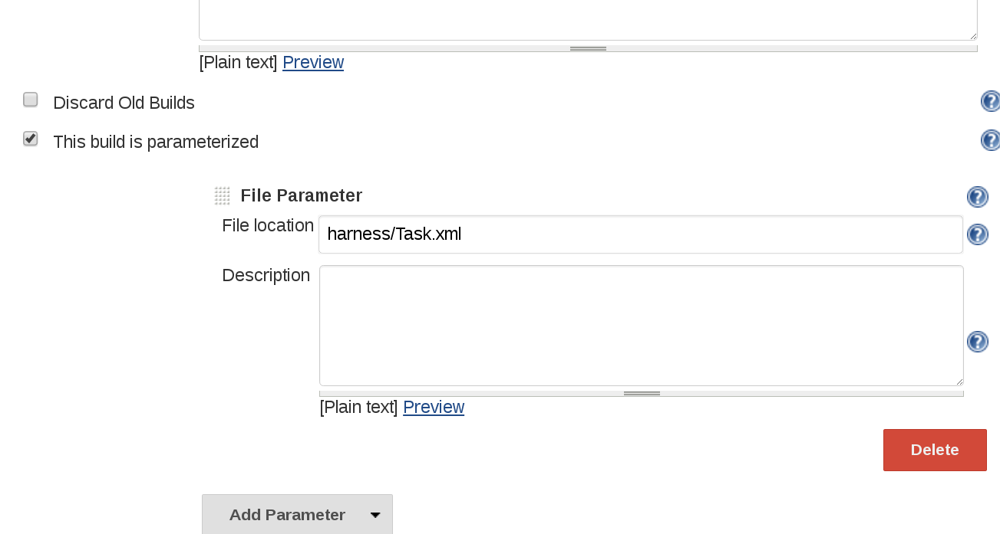
Figura 1. Parâmetro de arquivo
API remota e segurança
Quando seu Jenkins está protegido, você pode usar a autenticação HTTP BASIC para autenticar solicitações de API remotas. Consulte Autenticando clientes com script para obter mais detalhes.
Seleção XPath
A API XML suporta uma seleção pelo XPath usando o parâmetro de consulta 'xpath'. Isso é conveniente para extrair informações em ambientes onde a manipulação de XML é tediosa (como shell script). Consulte a edição 626 para obter um exemplo de como usar isso.
Consulte .../api/em seu servidor Jenkins para obter mais detalhes atualizados.
Exclusão XPath
Semelhante ao parâmetro de consulta 'xpath' acima, você pode usar (possivelmente vários) padrões de consulta 'excluir' para excluir nós do XML resultante. Todos os nós que correspondem ao XPath especificado serão removidos do XML.
Consulte .../api/em seu servidor Jenkins para obter mais detalhes atualizados.
Controle de profundidade
Às vezes, a API remota não fornece informações suficientes em uma chamada. Por exemplo, se você gostaria de encontrar a última compilação bem-sucedida de uma determinada exibição, perceberia que a chamada para a API remota da exibição não forneceria isso e seria necessário chamar recursivamente o controle remoto. API de cada projeto. O controle de profundidade resolve esse problema. O controle de profundidade está fundamentalmente conectado ao modelo de dados Jenkins.
O modelo de dados que Jenkins mantém internamente pode ser pensado como uma grande estrutura em árvore e, quando você faz uma chamada de API remota, está recebendo uma pequena subárvore. A subárvore está enraizada no objeto para o qual você fez uma chamada remota da API e a subárvore é cortada além de certa profundidade para evitar o retorno de muitos dados. Você pode ajustar esse comportamento de corte especificando o parâmetro de consulta de profundidade. Quando você especifica um valor de profundidade positivo, o corte da subárvore acontece muito mais tarde.
Portanto, o resultado líquido é que, se você especificar um valor de profundidade maior, verá que a API remota agora retornará mais dados. Por causa do algoritmo, isso funciona de forma que os dados retornados por um valor maior de profundidade incluam todos os dados retornados por um valor menor de profundidade.
Consulte .../api/em seu servidor Jenkins para obter mais detalhes atualizados.
Wrappers de API Python
JenkinsAPI e Python-Jenkins são wrappers python orientados a objetos para a API REST Python, que visam fornecer uma maneira mais convencionalmente pitônica de controlar um servidor Jenkins. Ele fornece uma API de nível superior que contém várias funções de conveniência. Os serviços oferecidos atualmente incluem:
-
Consultar os resultados do teste de uma compilação concluída
-
Obter objetos que representam as versões mais recentes de um trabalho
-
Procure artefatos por critérios simples
-
Bloquear até que os trabalhos sejam concluídos
-
Instalar artefatos em estruturas de diretório especificadas customizadas
-
Suporte de autenticação para instâncias Jenkins
-
Capacidade de procurar por compilações por revisão de subversão
-
Capacidade de adicionar / remover / consultar agentes Jenkins
Wrappers de API Ruby
O Jenkins API Client é um projeto de wrapper ruby orientado a objetos que consome a API JSON do Jenkins e visa fornecer acesso a toda a API remota que o Jenkins fornece. Está disponível como um Rubygem e pode ser útil para interagir com as funcionalidades relacionadas a Tarefa, Nó, Visão, BuildQueue e Sistema. Os serviços oferecidos atualmente incluem:
-
Criar trabalhos enviando arquivo xml ou especificando parâmetros como opções com mais opções de personalização, incluindo controle de origem, notificações, etc.
-
Criar trabalhos (com parâmetros), interromper construções, consultar detalhes de construções recentes, obter parâmetros de construção etc.
-
Listagem de trabalhos disponíveis no Jenkins com filtro de nome e status.
-
Adicionando / removendo projetos a jusante.
-
Encadeando trabalhos, ou seja, dada uma lista de projetos, cada projeto é adicionado como um projeto a jusante ao projeto anterior.
-
Obtendo saída progressiva do console.
-
Autenticação baseada em nome de usuário / senha.
-
Interface de linha de comando com muitas opções fornecidas nas bibliotecas.
-
Criando, listando visualizações.
-
Adicionando trabalhos a visualizações e removendo trabalhos de visualizações.
-
Adição / remoção de agentes Jenkins, consulta de detalhes de agentes.
-
Obtenção de tarefas na fila de construção e sua idade, causa, motivo, ETA, ID, parâmetros e muito mais.
-
Fique quieto, cancele o silêncio, reinicie com segurança, force o reinício e aguarde até que Jenkins fique disponível após o reinício.
-
Capacidade de listar plug-ins instalados / disponíveis, obter informações sobre plug-ins, instalar / desinstalar plug-ins e muito mais com plug-ins.
O código fonte do projeto está aqui .
Wrappers da API Java
A biblioteca jenkins-rest é um projeto Java orientado a objetos que fornece acesso à API REST Jenkins de forma programática a alguma API remota que Jenkins fornece. Ele é construído usando o kit de ferramentas jclouds e pode ser facilmente estendido para suportar mais pontos de extremidade REST. Seu conjunto de recursos evolui e os usuários são convidados a contribuir com novos pontos de extremidade por meio de solicitações de recebimento. No estado atual, é possível com esta biblioteca enviar uma tarefa, acompanhar seu progresso através da fila e monitorar sua execução até sua conclusão e obter o status de construção. Os serviços oferecidos atualmente incluem:
-
Definição de terminal (propriedade ou variável de ambiente)
-
Autenticação (token básico e API via propriedade ou variável de ambiente)
-
Suporte do emissor de migalhas (detectar automaticamente migalhas)
-
Suporte de pasta
-
API de tarefas (build, buildInfo, buildWithParameters, config, criar, excluir, descrição, desativar, ativar, jobInfo, lastBuildNumber, lastBuidTimestamp e progressText)
-
API do gerenciador de plug-ins (installNecessaryPlugins, lista os plugins atuais)
-
API da fila (cancelar, listar itens da fila, item da fila de consulta)
-
API de estatísticas (carga geral)
-
API de sistemas (systemInfo)
O projeto pode evoluir rapidamente, esta lista é precisa somente na data da redação.
Pipeline
Subseções dos capítulos
- Introdução ao Pipeline
- Usando um arquivo Jenkins
- Pipelines em execução
- Ramificações e solicitações pull
- Usando o Docker com pipeline
- Estendendo com bibliotecas compartilhadas
- Ferramentas de desenvolvimento de pipeline
- Sintaxe de Pipeline
- Práticas recomendadas de pipeline
- Escalonamento de Pipelines
- Incompatibilidades do método CPS do pipeline
Índice
Este capítulo aborda todos os aspectos recomendados da funcionalidade do Jenkins Pipeline, incluindo como:
-
Introdução ao Pipeline - aborda como definir um pipeline Jenkins (ou seja, o seu
Pipeline) pelo Blue Ocean , pela interface clássica ou no SCM , -
criar e usar a
Jenkinsfile- abrange cenários de casos de uso sobre como criar e construir seusJenkinsfile, -
trabalhe com ramificações e solicitações pull ,
-
use Docker with Pipeline - cobre como o Jenkins pode chamar contêineres Docker em agentes / nós (de a
Jenkinsfile) para criar seus projetos de Pipeline, -
use diferentes ferramentas de desenvolvimento para facilitar a criação do seu Pipeline e
-
trabalhe com a sintaxe Pipeline - esta página é uma referência abrangente de toda a sintaxe do Pipeline Declarativo.
Para obter uma visão geral do conteúdo no Jenkins User Handbook, consulte Visão geral do Handbook do usuário .
O que é o Jenkins Pipeline?
O Jenkins Pipeline (ou simplesmente "Pipeline" com um "P" maiúsculo) é um conjunto de plugins que suporta a implementação e integração de pipelines de entrega contínua no Jenkins.
Um pipeline de entrega contínua (CD) é uma expressão automatizada do seu processo para obter software do controle de versão diretamente para seus usuários e clientes. Toda mudança em seu software (comprometida no controle de origem) passa por um processo complexo a caminho de ser liberada. Esse processo envolve a construção do software de maneira confiável e repetível, bem como o progresso do software construído (chamado de "construção") através de vários estágios de teste e implantação.
O Pipeline fornece um conjunto extensível de ferramentas para modelar pipelines de entrega simples a complexos "como código" por meio da sintaxe DSL (linguagem específica de domínio do pipeline) . [ 1 ]
A definição de um Jenkins Pipeline é gravada em um arquivo de texto (chamado a
Jenkinsfile) que, por sua vez, pode ser confirmado no repositório de controle de origem de um projeto.
[ 2 ]
Essa é a base do "Pipeline como código"; tratando o pipeline do CD como parte do aplicativo a ser versionado e revisado como qualquer outro código.
Criar Jenkinsfilee comprometê-lo com o controle de origem fornece vários benefícios imediatos:
-
Cria automaticamente um processo de construção de Pipeline para todas as filiais e solicitações de recebimento.
-
Revisão / iteração de código no Pipeline (junto com o código-fonte restante).
-
Trilha de auditoria para o Pipeline.
-
Fonte única de verdade [ 3 ] para o Pipeline, que pode ser visualizada e editada por vários membros do projeto.
Embora a sintaxe para definir um pipeline, seja na interface da web da Web ou com
Jenkinsfilea, seja geralmente a mesma, geralmente é considerado recomendável definir o pipeline em a Jenkinsfilee verificar isso no controle de origem.
Sintaxe declarativa versus script de pipeline
A Jenkinsfilepode ser escrito usando dois tipos de sintaxe - Declarativa e com Script.
Os pipelines declarativos e com script são construídos de maneira fundamentalmente diferente. O Pipeline Declarativo é um recurso mais recente do Jenkins Pipeline que:
-
fornece recursos sintáticos mais ricos sobre a sintaxe do pipeline com script e
-
foi desenvolvido para facilitar a escrita e a leitura do código do pipeline.
Muitos dos componentes sintáticos individuais (ou "etapas") escritos em um
Jenkinsfile, no entanto, são comuns ao pipeline declarativo e ao script. Leia mais sobre como esses dois tipos de sintaxe diferem nos conceitos de Pipeline
e na visão geral da sintaxe de Pipeline abaixo.
Por que Pipeline?
Jenkins é, fundamentalmente, um mecanismo de automação que suporta vários padrões de automação. O Pipeline adiciona um poderoso conjunto de ferramentas de automação ao Jenkins, suportando casos de uso que abrangem desde a integração contínua simples até os pipelines abrangentes de CD. Ao modelar uma série de tarefas relacionadas, os usuários podem tirar proveito dos muitos recursos do Pipeline:
-
Código : os pipelines são implementados no código e normalmente são verificados no controle de origem, oferecendo às equipes a capacidade de editar, revisar e iterar no pipeline de entrega.
-
Durável : os oleodutos podem sobreviver às reinicializações planejadas e não planejadas do mestre Jenkins.
-
Pausável : os pipelines podem opcionalmente parar e aguardar a entrada ou aprovação humana antes de continuar a execução do pipeline.
-
Versátil : os pipelines oferecem suporte a requisitos complexos de CD do mundo real, incluindo a capacidade de bifurcar / unir, fazer um loop e executar o trabalho em paralelo.
-
Extensível : O plug-in Pipeline suporta extensões personalizadas para seu DSL [ 1 ] e várias opções para integração com outros plug-ins.
Enquanto Jenkins sempre permitiu formas rudimentares de encadear Freestyle Jobs juntos para executar tarefas seqüenciais, [ 4 ] Pipeline torna esse conceito um cidadão de primeira classe em Jenkins.
Com base no valor principal da extensibilidade Jenkins, o Pipeline também é extensível tanto para usuários com Bibliotecas Compartilhadas do Pipeline quanto para desenvolvedores de plugins. [ 5 ]
O fluxograma abaixo é um exemplo de um cenário de CD facilmente modelado no Jenkins Pipeline:

Conceitos de pipeline
Os seguintes conceitos são aspectos-chave do Jenkins Pipeline, que estão intimamente relacionados à sintaxe do Pipeline (consulte a visão geral abaixo).
Pipeline
Um pipeline é um modelo definido pelo usuário de um pipeline de CD. O código de um pipeline define todo o processo de compilação, que geralmente inclui etapas para a criação de um aplicativo, testando-o e depois entregando-o.
Além disso, um pipelinebloco é uma
parte essencial da sintaxe do pipeline declarativo .
Nó
Um nó é uma máquina que faz parte do ambiente Jenkins e é capaz de executar um pipeline.
Além disso, um nodebloco é uma
parte essencial da sintaxe do Scripted Pipeline .
Palco
Um stagebloco define um subconjunto conceitualmente distinto de tarefas executadas em todo o Pipeline (por exemplo, estágios "Build", "Test" e "Deploy"), que é usado por muitos plugins para visualizar ou apresentar o status / progresso do Jenkins Pipeline.
[ 6 ]
Degrau
Uma única tarefa. Fundamentalmente, uma etapa diz a Jenkins o que fazer em um determinado momento (ou "etapa" do processo). Por exemplo, para executar o comando shell makeuso da shetapa: sh 'make'. Quando um plug-in estende o DSL do Pipeline, [ 1 ] isso normalmente significa que o plug-in implementou uma nova etapa .
Visão geral da sintaxe de pipeline
Os seguintes esqueletos de código de pipeline ilustram as diferenças fundamentais entre a sintaxe do pipeline declarativo e a sintaxe do pipeline com script .
Esteja ciente de que os estágios e as etapas (acima) são elementos comuns da sintaxe do pipeline declarativo e do script.
Fundamentos do pipeline declarativo
Na sintaxe do pipeline declarativo, o pipelinebloco define todo o trabalho realizado em todo o pipeline.
Jenkinsfile (pipeline declarativo)
pipeline {
agent any (1)
stages {
stage('Build') { (2)
steps {
// (3)
}
}
stage('Test') { (4)
steps {
// (5)
}
}
stage('Deploy') { (6)
steps {
// (7)
}
}
}
}| 1 | Execute esse pipeline ou qualquer um de seus estágios, em qualquer agente disponível. |
| 2 | Define o estágio "Build". |
| 3 | Execute algumas etapas relacionadas ao estágio "Build". |
| 4 | Define o estágio "Teste". |
| 5 | Execute algumas etapas relacionadas ao estágio "Teste". |
| 6 | Define o estágio "Implantar". |
| 7 | Execute algumas etapas relacionadas ao estágio "Implantar". |
Fundamentos de pipeline com script
Na sintaxe do Pipeline com script, um ou mais nodeblocos fazem o trabalho principal em todo o Pipeline. Embora esse não seja um requisito obrigatório da sintaxe do Scripted Pipeline, limitar o trabalho do seu Pipeline dentro de um node
bloco faz duas coisas:
-
Agenda as etapas contidas no bloco para execução, adicionando um item à fila Jenkins. Assim que um executor estiver livre em um nó, as etapas serão executadas.
-
Cria um espaço de trabalho (um diretório específico para esse Pipeline específico) em que o trabalho pode ser realizado em arquivos retirados do controle de origem.
Cuidado: Dependendo da configuração do Jenkins, alguns espaços de trabalho podem não ser limpos automaticamente após um período de inatividade. Veja os tíquetes e as discussões vinculadas no JENKINS-2111 para obter mais informações.
Jenkinsfile (pipeline com script)
node { (1)
stage('Build') { (2)
// (3)
}
stage('Test') { (4)
// (5)
}
stage('Deploy') { (6)
// (7)
}
}| 1 | Execute esse pipeline ou qualquer um de seus estágios, em qualquer agente disponível. |
| 2 | Define o estágio "Build". stageblocos são opcionais na sintaxe do pipeline com script. No entanto, a implementação de stageblocos em um pipeline com script fornece uma visualização mais clara do subconjunto de tarefas / etapas de cada estágio na interface do usuário do Jenkins. |
| 3 | Execute algumas etapas relacionadas ao estágio "Build". |
| 4 | Define o estágio "Teste". |
| 5 | Execute algumas etapas relacionadas ao estágio "Teste". |
| 6 | Define o estágio "Implantar". |
| 7 | Execute algumas etapas relacionadas ao estágio "Implantar". |
Exemplo de pipeline
Aqui está um exemplo de uma Jenkinsfilesintaxe usando o Declarative Pipeline - seu equivalente de sintaxe com script pode ser acessado clicando no link Alternar pipeline com script abaixo:
Jenkinsfile (pipeline declarativo)
pipeline { (1)
agent any (2)
options {
skipStagesAfterUnstable()
}
stages {
stage('Build') { (3)
steps { (4)
sh 'make' (5)
}
}
stage('Test'){
steps {
sh 'make check'
junit 'reports/**/*.xml' (6)
}
}
stage('Deploy') {
steps {
sh 'make publish'
}
}
}
}| 1 | pipeline é uma sintaxe específica do Pipeline declarativa que define um "bloco" que contém todo o conteúdo e instruções para executar o Pipeline inteiro. |
| 2 | agent é uma sintaxe específica do Pipeline declarativa que instrui Jenkins a alocar um executor (em um nó) e a área de trabalho para todo o Pipeline. |
| 3 | stageé um bloco de sintaxe que descreve um
estágio deste pipeline . Leia mais sobre os stageblocos na sintaxe Declarative Pipeline na página de sintaxe Pipeline . Como mencionado acima , os stageblocos são opcionais na sintaxe do Scripted Pipeline. |
| 4 | stepsé uma sintaxe específica do pipeline declarativo que descreve as etapas a serem executadas nisso stage. |
| 5 | shé uma etapa do pipeline (fornecida pelo
plug-in Pipeline: nós e processos ) que executa o comando shell fornecido. |
| 6 | junité outra etapa do Pipeline (fornecida pelo
plug-in JUnit ) para agregar relatórios de teste. |
| 7 | nodeé uma sintaxe específica do Pipeline com script que instrui o Jenkins a executar esse pipeline (e todos os estágios contidos nele) em qualquer agente / nó disponível. Isso é efetivamente equivalente agentna sintaxe específica do pipeline declarativo. |
Leia mais sobre a sintaxe Pipeline na página Sintaxe Pipeline .
4 . Plug-ins adicionais foram usados para implementar comportamentos complexos utilizando Trabalhos Freestyle, como os plug-ins Copy Artifact, Parameterized Trigger e Promoted Builds
Introdução ao Pipeline
Índice
Como mencionado anteriormente , o Jenkins Pipeline é um conjunto de plug-ins que oferece suporte à implementação e integração de pipelines de entrega contínua no Jenkins. O Pipeline fornece um conjunto extensível de ferramentas para modelar pipelines de entrega simples a complexos "como código" por meio do DSL do Pipeline. [ 1 ]
Esta seção descreve como começar a criar seu projeto de Pipeline no Jenkins e apresenta as várias maneiras pelas quais um Jenkinsfilepode ser criado e armazenado.
Pré-requisitos
Para usar o Jenkins Pipeline, você precisará de:
-
Jenkins 2.x ou posterior (as versões anteriores do 1.642.3 podem funcionar, mas não são recomendadas)
-
Plugin de pipeline, [ 2 ] que é instalado como parte dos "plugins sugeridos" (especificados ao executar o assistente de instalação pós-instalação após a instalação do Jenkins ).
Leia mais sobre como instalar e gerenciar plug-ins em Gerenciando plug-ins .
Definindo um pipeline
O pipeline declarativo e o script são DSLs [ 1 ] para descrever partes do seu pipeline de entrega de software. O pipeline com script é gravado em uma forma limitada da sintaxe Groovy .
Os componentes relevantes da sintaxe do Groovy serão introduzidos conforme necessário nesta documentação; portanto, embora seja útil o entendimento do Groovy, não é necessário trabalhar com o Pipeline.
Um pipeline pode ser criado de uma das seguintes maneiras:
-
Através do Blue Ocean - depois de configurar um projeto de Pipeline no Blue Ocean, a interface do usuário do Blue Ocean ajuda você a escrever seus Pipeline
Jenkinsfilee comprometê-lo com o controle de origem. -
Por meio da interface clássica - você pode inserir um pipeline básico diretamente no Jenkins por meio da interface clássica.
-
No SCM - você pode escrever um
Jenkinsfilemanual, que pode ser confirmado no repositório de controle de origem do seu projeto. [ 3 ]
A sintaxe para definir um Pipeline com qualquer uma das abordagens é a mesma, mas, embora o Jenkins suporte a entrada do Pipeline diretamente na interface do usuário clássica, geralmente é considerado uma boa prática definir o Pipeline no Jenkinsfile
qual o Jenkins carregará diretamente do controle de origem.
Através do Blue Ocean
Se você é novo no Jenkins Pipeline, a Blue Ocean UI ajuda a
configurar seu projeto de Pipeline e cria e grava automaticamente seu Pipeline (por exemplo, o Jenkinsfile) para você através do editor gráfico de Pipeline.
Como parte da configuração do seu projeto Pipeline no Blue Ocean, o Jenkins configura uma conexão segura e devidamente autenticada com o repositório de controle de origem do seu projeto. Portanto, quaisquer alterações feitas no Jenkinsfileeditor de pipeline da Blue Ocean são automaticamente salvas e comprometidas com o controle de origem.
Leia mais sobre o Blue Ocean no capítulo Blue Ocean e na página Introdução ao Blue Ocean .
Através da interface clássica
Uma Jenkinsfilecriada usando a interface do usuário clássica é armazenada pelo próprio Jenkins (no diretório inicial do Jenkins).
Para criar um pipeline básico por meio da interface clássica do Jenkins:
-
Se necessário, verifique se você está conectado ao Jenkins.
-
Na página inicial do Jenkins (ou seja, o Painel da interface clássica do Jenkins), clique em Novo Item no canto superior esquerdo.
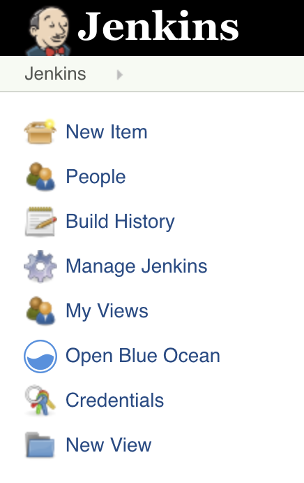
-
No campo Digite um nome de item , especifique o nome para o seu novo projeto de Pipeline.
Cuidado: Jenkins usa esse nome de item para criar diretórios no disco. É recomendável evitar o uso de espaços nos nomes dos itens, pois isso pode descobrir erros nos scripts que não tratam adequadamente os espaços nos caminhos de diretório. -
Role para baixo e clique em Pipeline , depois clique em OK no final da página para abrir a página de configuração do Pipeline (cuja guia Geral está selecionada).

-
Clique na guia Pipeline na parte superior da página para rolar para baixo até a seção Pipeline .
Nota: Se estiver definindo seuJenkinsfilecontrole de origem, siga as instruções em In SCM abaixo. -
Na seção Pipeline , verifique se o campo Definição indica a opção de script Pipeline .
-
Digite seu código de pipeline na área de texto Script .
Por exemplo, copie o seguinte exemplo de código declarativo Pipeline (abaixo do cabeçalho Jenkinsfile (…) ) ou sua versão com script equivalente e cole-o na área de texto Script . (O exemplo declarativo abaixo é usado em todo o restante deste procedimento.)Jenkinsfile (pipeline declarativo)pipeline { agent any (1) stages { stage('Stage 1') { steps { echo 'Hello world!' (2) } } } }1 agentinstrui Jenkins a alocar um executor (em qualquer agente / nó disponível no ambiente Jenkins) e espaço de trabalho para todo o Pipeline.2 echoescreve uma string simples na saída do console.3 nodeefetivamente faz o mesmo queagent(acima).
Nota: Você também pode selecionar a partir de exemplos de Pipeline com script enlatado, na opção Pipeline com amostra de tentativa, no canto superior direito da área de texto Script . Esteja ciente de que não há exemplos de pipeline declarativo disponíveis neste campo.
-
Clique em Salvar para abrir a página de exibição de projeto / item do Pipeline.
-
Nesta página, clique em Criar agora, à esquerda, para executar o Pipeline.

-
Em Histórico de compilação, à esquerda, clique em # 1 para acessar os detalhes dessa execução específica do Pipeline.
-
Clique em Saída do console para ver a saída completa da execução do Pipeline. A saída a seguir mostra uma execução bem-sucedida do seu Pipeline.

Notas:
-
Você também pode acessar a saída do console diretamente do painel clicando no globo colorido à esquerda do número da compilação (por exemplo, nº 1 ).
-
Definir um pipeline por meio da interface do usuário clássica é conveniente para testar trechos de código de pipeline ou para manipular pipelines simples ou pipelines que não exigem que o código-fonte seja retirado / clonado em um repositório. Como mencionado acima, diferentemente de como
Jenkinsfilevocê define através do Blue Ocean ( acima ) ou no controle de origem ( abaixo ), osJenkinsfiles inseridos na área da área de texto Script dos projetos Pipeline são armazenados pelo próprio Jenkins, no diretório inicial do Jenkins. Portanto, para maior controle e flexibilidade sobre o seu Pipeline, principalmente para projetos no controle de origem que provavelmente ganharão complexidade, é recomendável usar o Blue Ocean ou o controle de origem para definir seuJenkinsfile.
-
No SCM
É difícil escrever e manter pipelines complexos na área de texto Script da interface do usuário clássica da página de configuração do Pipeline.
Para facilitar isso, seus Pipeline Jenkinsfilepodem ser gravados em um editor de texto ou em um ambiente de desenvolvimento integrado (IDE) e comprometidos com o controle de origem [ 3 ] (opcionalmente com o código do aplicativo que Jenkins criará). Jenkins pode então verificar seu Jenkinsfilecontrole de origem como parte do processo de construção do seu projeto de Pipeline e depois executar o Pipeline.
Para configurar seu projeto Pipeline para usar um Jenkinsfilecontrole de origem:
-
Siga o procedimento acima para definir seu Pipeline através da interface do usuário clássica até atingir a etapa 5 (acessando a seção Pipeline na página de configuração do Pipeline).
-
No campo Definição , escolha a opção Script de pipeline no SCM .
-
No campo SCM , escolha o tipo de sistema de controle de origem do repositório que contém o seu
Jenkinsfile. -
Preencha os campos específicos do sistema de controle de origem do seu repositório.
Dica: Se você não souber qual valor especificar para um determinado campo, clique no seu ? ícone à direita para obter mais informações. -
No campo Caminho do script , especifique o local (e o nome) do seu
Jenkinsfile. Esse local é o local em que Jenkins faz check-out / clona o repositório que contém o seuJenkinsfile, que deve corresponder ao da estrutura de arquivos do repositório. O valor padrão deste campo supõe que vocêJenkinsfileseja nomeado "Jenkinsfile" e esteja localizado na raiz do repositório.
Quando você atualiza o repositório designado, uma nova construção é acionada, desde que o Pipeline esteja configurado com um gatilho de pesquisa SCM.
Documentação Integrada
O pipeline é fornecido com recursos de documentação incorporados para facilitar a criação de pipelines de diversas complexidades. Essa documentação interna é gerada e atualizada automaticamente com base nos plug-ins instalados na instância do Jenkins.
A documentação interna pode ser encontrada globalmente em ${YOUR_JENKINS_URL}/pipeline-syntax. A mesma documentação também está vinculada como sintaxe de pipeline na barra lateral de qualquer projeto de pipeline configurado.
Gerador de trechos
O utilitário interno "Snippet Generator" é útil para criar bits de código para etapas individuais, descobrir novas etapas fornecidas por plug-ins ou experimentar diferentes parâmetros para uma etapa específica.
O Snippet Generator é preenchido dinamicamente com uma lista das etapas disponíveis para a instância Jenkins. O número de etapas disponíveis depende dos plug-ins instalados, que expõem explicitamente as etapas para uso no Pipeline.
Para gerar um snippet de etapa com o Snippet Generator:
-
Navegue até o link Pipeline Syntax (mencionado acima) em um Pipeline configurado ou em
${YOUR_JENKINS_URL}/pipeline-syntax. -
Selecione a etapa desejada no menu suspenso Etapa da amostra
-
Use a área preenchida dinamicamente abaixo da amostra Etapa suspensa para configurar a etapa selecionada.
-
Clique em Gerar script de pipeline para criar um snippet de pipeline que pode ser copiado e colado em um pipeline.

Para acessar informações e / ou documentação adicionais sobre a etapa selecionada, clique no ícone de ajuda (indicado pela seta vermelha na imagem acima).
Referência de variável global
Além do Gerador de trechos, que apenas apresenta etapas, o Pipeline também fornece uma " Referência variável global ". Assim como o Snippet Generator, ele também é preenchido dinamicamente por plug-ins. Porém, diferentemente do Snippet Generator, a Global Variable Reference contém apenas documentação para variáveis fornecidas pelo Pipeline ou plug-ins, que estão disponíveis para Pipelines.
As variáveis fornecidas por padrão no Pipeline são:
- env
-
Variáveis de ambiente acessíveis no Pipeline com script, por exemplo:
env.PATHouenv.BUILD_ID. Consulte a referência de variável global integrada na${YOUR_JENKINS_URL}/pipeline-syntax/globalspara obter uma lista completa e atualizada de variáveis de ambiente disponíveis no Pipeline. - params
-
Expõe todos os parâmetros definidos para o Pipeline como um read-only Mapa , por exemplo:
params.MY_PARAM_NAME. - currentBuild
-
Pode ser usado para descobrir informações sobre o Pipeline em execução no momento, com propriedades como
currentBuild.result,currentBuild.displayNameetc. Consulte a referência de variável global incorporada em para${YOUR_JENKINS_URL}/pipeline-syntax/globalsobter uma lista completa e atualizada de propriedades disponíveis emcurrentBuild.
Gerador de diretiva declarativa
Enquanto o Gerador de trechos ajuda na geração de etapas para um pipeline com script ou para o stepsbloco em um stagepipeline declarativo, ele não cobre as seções e
diretrizes usadas para definir um pipeline declarativo. O utilitário "Gerador de diretiva declarativa" ajuda nisso. Semelhante ao Gerador de trechos , o Gerador de diretivas permite escolher uma diretiva declarativa, configurá-la em um formulário e gerar a configuração dessa diretiva, que você pode usar no seu pipeline declarativo.
Para gerar uma diretiva declarativa usando o gerador de diretiva declarativa:
-
Navegue até o link Pipeline Syntax (mencionado acima) em um Pipeline configurado e clique no link Declarative Directive Generator no painel lateral ou vá diretamente para
${YOUR_JENKINS_URL}/directive-generator. -
Selecione a diretiva desejada no menu suspenso
-
Use a área preenchida dinamicamente abaixo da lista suspensa para configurar a diretiva selecionada.
-
Clique em Gerar diretiva para criar a configuração da diretiva para copiar no seu pipeline.
O gerador de diretiva pode gerar configuração para diretivas aninhadas, como condições dentro de uma whendiretiva, mas não pode gerar etapas do pipeline. Para o conteúdo de diretivas que contêm etapas, como stepsdentro de stageou condições como alwaysou failuredentro post, o Gerador de Diretiva adiciona um comentário de espaço reservado. Você ainda precisará adicionar etapas ao seu Pipeline manualmente.
Jenkinsfile (pipeline declarativo)
stage('Stage 1') {
steps {
// One or more steps need to be included within the steps block.
}
}Leitura adicional
Esta seção apenas arranha a superfície do que pode ser feito com o Jenkins Pipeline, mas deve fornecer uma base suficiente para você começar a experimentar uma instância do Jenkins de teste.
Na próxima seção, The Jenkinsfile , mais etapas do Pipeline serão discutidas, juntamente com os padrões para a implementação de Pipelines Jenkins de sucesso no mundo real.
Recursos adicionais
-
Referência de etapas do pipeline , abrangendo todas as etapas fornecidas pelos plug-ins distribuídos no Jenkins Update Center.
-
Exemplos de pipeline , uma coleção com curadoria da comunidade de exemplos de pipeline copiáveis.
Usando um arquivo Jenkins
Índice
Esta seção baseia-se nas informações abordadas em
Introdução ao Pipeline
e apresenta etapas mais úteis, padrões comuns e demonstra alguns Jenkinsfileexemplos não triviais .
Criar um Jenkinsfile, que é verificado no controle de origem
[ 1 ] , fornece vários benefícios imediatos:
-
Revisão / iteração de código no Pipeline
-
Trilha de auditoria para o Pipeline
-
Fonte única de verdade [ 2 ] para o Pipeline, que pode ser visualizada e editada por vários membros do projeto.
O pipeline suporta duas sintaxes , declarativa (introduzida no pipeline 2.5) e pipeline com script. Ambos suportam a construção de pipelines de entrega contínua. Ambos podem ser usados para definir um pipeline na interface da web ou com um a Jenkinsfile, embora seja geralmente uma prática recomendada criar Jenkinsfilee verificar o arquivo no repositório de controle de origem.
Criando um arquivo Jenkins
Conforme discutido em
Definindo um pipeline no SCM , a Jenkinsfileé um arquivo de texto que contém a definição de um pipeline Jenkins e é verificado no controle de origem. Considere o seguinte pipeline, que implementa um pipeline básico de entrega contínua em três estágios.
Jenkinsfile (pipeline declarativo)
pipeline {
agent any
stages {
stage('Build') {
steps {
echo 'Building..'
}
}
stage('Test') {
steps {
echo 'Testing..'
}
}
stage('Deploy') {
steps {
echo 'Deploying....'
}
}
}
}Nem todos os pipelines terão esses mesmos três estágios, mas é um bom ponto de partida para defini-los para a maioria dos projetos. As seções abaixo demonstram a criação e execução de um pipeline simples em uma instalação de teste do Jenkins.
|
Supõe-se que já exista um repositório de controle de origem configurado para o projeto e um pipeline tenha sido definido no Jenkins seguindo estas instruções . |
Usando um editor de texto, de preferência um que suporte o
destaque da sintaxe Groovy , crie um novo Jenkinsfileno diretório raiz do projeto.
O exemplo de pipeline declarativo acima contém a estrutura mínima necessária para implementar um pipeline de entrega contínua. A diretiva do agente , necessária, instrui Jenkins a alocar um executor e espaço de trabalho para o Pipeline. Sem uma agentdiretiva, o pipeline declarativo não é apenas válido, como também não seria capaz de executar qualquer trabalho! Por padrão, a agentdiretiva garante que o repositório de origem seja retirado e disponibilizado para etapas nas etapas subseqüentes`
As diretivas de etapas também são necessárias para um pipeline declarativo válido, pois instruem Jenkins o que executar e em que estágio ele deve ser executado.
Para uso mais avançado com o Pipeline com script, o exemplo acima nodeé uma primeira etapa crucial, pois aloca um executor e uma área de trabalho para o Pipeline. Essencialmente, sem node, um Pipeline não pode fazer nenhum trabalho! A partir de dentro node, a primeira ordem do dia será fazer o check-out do código-fonte deste projeto. Como Jenkinsfileestá sendo extraído diretamente do controle de origem, o Pipeline fornece uma maneira rápida e fácil de acessar a revisão correta do código-fonte
Jenkinsfile (pipeline com script)
node {
checkout scm (1)
/* .. snip .. */
}| 1 | A checkoutetapa fará o checkout do código do controle de origem; scmé uma variável especial que instrui a checkoutetapa de clonar a revisão específica que acionou a execução do pipeline. |
Construir
Para muitos projetos, o início do "trabalho" no Pipeline seria o estágio "build". Normalmente, esse estágio do pipeline é onde o código-fonte é montado, compilado ou empacotado. A Jenkinsfileé não um substituto de uma ferramenta de construção existentes, tais como GNU / Marca, Maven, Gradle, etc, mas sim pode ser vista como uma camada de cola para ligar as várias fases do ciclo de vida de desenvolvimento de um projecto (compilação, teste, implantação, etc) juntos.
O Jenkins possui vários plug-ins para chamar praticamente qualquer ferramenta de construção em uso geral, mas este exemplo simplesmente chama a makepartir de uma etapa do shell ( sh). A shetapa pressupõe que o sistema seja baseado em Unix / Linux; para sistemas baseados em Windows, batpoderia ser usado.
Jenkinsfile (pipeline declarativo)
pipeline {
agent any
stages {
stage('Build') {
steps {
sh 'make' (1)
archiveArtifacts artifacts: '**/target/*.jar', fingerprint: true (2)
}
}
}
}| 1 | A shetapa chama o makecomando e continuará apenas se um código de saída zero for retornado pelo comando. Qualquer código de saída diferente de zero falhará no Pipeline. |
| 2 | archiveArtifactscaptura os arquivos criados correspondentes ao padrão de inclusão ( **/target/*.jar) e os salva no mestre Jenkins para recuperação posterior. |
|
O arquivamento de artefatos não substitui o uso de repositórios de artefatos externos, como Artifactory ou Nexus, e deve ser considerado apenas para relatórios básicos e arquivamento de arquivos. |
Teste
A execução de testes automatizados é um componente crucial de qualquer processo de entrega contínua bem-sucedido. Como tal, o Jenkins possui vários recursos de gravação, relatório e visualização de testes fornecidos por
vários plug-ins . Em um nível fundamental, quando há falhas no teste, é útil fazer com que Jenkins registre as falhas para geração de relatórios e visualização na interface da Web da web. O exemplo abaixo usa a junitetapa, fornecida pelo
plug-in JUnit .
No exemplo abaixo, se os testes falharem, o Pipeline será marcado como "instável", como indicado por uma bola amarela na interface do usuário da web. Com base nos relatórios de teste gravados, Jenkins também pode fornecer análise e visualização de tendências históricas.
Jenkinsfile (pipeline declarativo)
pipeline {
agent any
stages {
stage('Test') {
steps {
/* `make check` returns non-zero on test failures,
* using `true` to allow the Pipeline to continue nonetheless
*/
sh 'make check || true' (1)
junit '**/target/*.xml' (2)
}
}
}
}| 1 | O uso de um shell embutido condicional ( sh 'make check || true') garante que a
shetapa sempre veja um código de saída zero, dando à junitetapa a oportunidade de capturar e processar os relatórios de teste. Abordagens alternativas para isso são abordadas com mais detalhes na seção Manipulação de falhas abaixo. |
| 2 | junitcaptura e associa os arquivos XML JUnit correspondentes ao padrão de inclusão ( **/target/*.xml). |
Implantar
A implantação pode implicar uma variedade de etapas, dependendo dos requisitos do projeto ou da organização, e pode ser qualquer coisa, desde a publicação de artefatos construídos em um servidor Artifactory, até o envio de código para um sistema de produção.
Neste estágio do Pipeline de exemplo, os estágios "Build" e "Test" foram executados com êxito. Em essência, o estágio "Deploy" será executado apenas assumindo que os estágios anteriores foram concluídos com êxito, caso contrário, o Pipeline sairia mais cedo.
Jenkinsfile (pipeline declarativo)
pipeline {
agent any
stages {
stage('Deploy') {
when {
expression {
currentBuild.result == null || currentBuild.result == 'SUCCESS' (1)
}
}
steps {
sh 'make publish'
}
}
}
}| 1 | O acesso à currentBuild.resultvariável permite ao Pipeline determinar se houve alguma falha no teste. Nesse caso, o valor seria
UNSTABLE. |
Supondo que tudo tenha sido executado com êxito no exemplo Jenkins Pipeline, cada execução bem-sucedida do Pipeline terá artefatos de construção associados arquivados, resultados de testes relatados e a saída completa do console no Jenkins.
Um pipeline com script pode incluir testes condicionais (mostrados acima), loops, blocos try / catch / finalmente e até funções. A próxima seção abordará essa sintaxe avançada do Pipeline com script em mais detalhes.
Trabalhando com seu arquivo Jenkins
As seções a seguir fornecem detalhes sobre o manuseio:
-
sintaxe específica do Pipeline no seu
Jenkinsfilee -
recursos e funcionalidade da sintaxe do Pipeline, essenciais para criar seu aplicativo ou projeto do Pipeline.
Interpolação de string
O Jenkins Pipeline usa regras idênticas ao Groovy para interpolação de string. O suporte à interpolação de String do Groovy pode ser confuso para muitos iniciantes no idioma. Enquanto o Groovy oferece suporte à declaração de uma seqüência de caracteres com aspas simples ou aspas duplas, por exemplo:
def singlyQuoted = 'Hello'
def doublyQuoted = "World"Somente a última string suportará a $interpolação de string baseada em cifrão ( ), por exemplo:
def username = 'Jenkins'
echo 'Hello Mr. ${username}'
echo "I said, Hello Mr. ${username}"Resultaria em:
Hello Mr. ${username}
I said, Hello Mr. JenkinsÉ essencial entender como usar a interpolação de cadeias de caracteres para o uso de alguns dos recursos mais avançados do Pipeline.
Usando variáveis de ambiente
O Jenkins Pipeline expõe variáveis de ambiente por meio da variável global env, disponível em qualquer lugar dentro de um Jenkinsfile. A lista completa de variáveis de ambiente acessíveis no Jenkins Pipeline está documentada em $ {YOUR_JENKINS_URL} / pipeline-syntax / globals # env e inclui:
- BUILD_ID
-
O ID da compilação atual, idêntico ao BUILD_NUMBER para compilações criadas nas versões Jenkins 1.597+
- BUILD_NUMBER
-
O número da compilação atual, como "153"
- BUILD_TAG
-
Sequência de jenkins - $ {JOB_NAME} - $ {BUILD_NUMBER}. Conveniente para colocar em um arquivo de recurso, arquivo jar, etc, para facilitar a identificação
- BUILD_URL
-
A URL em que os resultados dessa compilação podem ser encontrados (por exemplo, http: // buildserver / jenkins / job / MyJobName / 17 /)
- EXECUTOR_NUMBER
-
O número exclusivo que identifica o executor atual (entre executores da mesma máquina) que está executando essa compilação. Este é o número que você vê no "status do executor de compilação", exceto que o número começa em 0, não em 1
- JAVA_HOME
-
Se seu trabalho estiver configurado para usar um JDK específico, essa variável será configurada como JAVA_HOME do JDK especificado. Quando essa variável é configurada, PATH também é atualizado para incluir o subdiretório bin de JAVA_HOME
- JENKINS_URL
-
URL completo do Jenkins, como https://example.com:port/jenkins/ (NOTA: disponível apenas se o URL do Jenkins estiver definido em "Configuração do sistema")
- JOB_NAME
-
Nome do projeto desta compilação, como "foo" ou "foo / bar".
- NODE_NAME
-
O nome do nó no qual a construção atual está sendo executada. Defina como 'master' para o nó principal.
- ÁREA DE TRABALHO
-
O caminho absoluto da área de trabalho
A referência ou o uso dessas variáveis de ambiente pode ser realizada como acessar qualquer chave em um Mapa Groovy , por exemplo:
Jenkinsfile (pipeline declarativo)
pipeline {
agent any
stages {
stage('Example') {
steps {
echo "Running ${env.BUILD_ID} on ${env.JENKINS_URL}"
}
}
}
}Configurando variáveis de ambiente
A configuração de uma variável de ambiente em um Pipeline Jenkins é realizada de maneira diferente, dependendo do uso de Pipeline Declarativo ou com Script.
O pipeline declarativo oferece suporte a uma
diretiva de ambiente , enquanto os usuários do pipeline com script devem usar a withEnvetapa.
Jenkinsfile (pipeline declarativo)
pipeline {
agent any
environment { (1)
CC = 'clang'
}
stages {
stage('Example') {
environment { (2)
DEBUG_FLAGS = '-g'
}
steps {
sh 'printenv'
}
}
}
}| 1 | Uma environmentdiretiva usada no pipelinebloco de nível superior será aplicada a todas as etapas no Pipeline. |
| 2 | Uma environmentdiretiva definida em a stageaplicará apenas as variáveis de ambiente fornecidas às etapas dentro da stage. |
Configurando Variáveis de Ambiente Dinamicamente
As variáveis de ambiente podem ser definidas em tempo de execução e podem ser usadas por scripts de shell ( sh), scripts em lote do Windows ( bat) e scripts do PowerShell ( powershell). Cada script pode returnStatusou returnStdout.
Mais informações sobre scripts .
Abaixo está um exemplo em um pipeline declarativo usando sh(shell) com ambos returnStatuse returnStdout.
Jenkinsfile (pipeline declarativo)
pipeline {
agent any (1)
environment {
// Using returnStdout
CC = """${sh(
returnStdout: true,
script: 'echo "clang"'
)}""" (2)
// Using returnStatus
EXIT_STATUS = """${sh(
returnStatus: true,
script: 'exit 1'
)}"""
}
stages {
stage('Example') {
environment {
DEBUG_FLAGS = '-g'
}
steps {
sh 'printenv'
}
}
}
}| 1 | Um agentdeve ser definido no nível superior do pipeline. Isso falhará se o agente estiver definido como agent none. |
| 2 | Ao usar returnStdoutum espaço em branco à direita, será anexado à string retornada. Use .trim()para remover isso. |
Manipulando credenciais
As credenciais configuradas no Jenkins podem ser manipuladas nos pipelines para uso imediato. Leia mais sobre o uso de credenciais no Jenkins na página Usando credenciais .
Para texto secreto, nomes de usuário e senhas e arquivos secretos
A sintaxe declarativa do pipeline de Jenkins possui o credentials()método auxiliar (usado na environmentdiretiva) que suporta
texto secreto , nome de usuário e senha , além de credenciais de arquivo secreto . Se você deseja lidar com outros tipos de credenciais, consulte a seção Para outros tipos de credenciais (abaixo).
Texto secreto
O código de pipeline a seguir mostra um exemplo de como criar um pipeline usando variáveis de ambiente para credenciais de texto secreto.
Neste exemplo, duas credenciais de texto secretas são atribuídas a variáveis de ambiente separadas para acessar o Amazon Web Services (AWS). Essas credenciais teriam sido configuradas no Jenkins com seus respectivos IDs
jenkins-aws-secret-key-ide credenciais jenkins-aws-secret-access-key.
Jenkinsfile (pipeline declarativo)
pipeline {
agent {
// Define agent details here
}
environment {
AWS_ACCESS_KEY_ID = credentials('jenkins-aws-secret-key-id')
AWS_SECRET_ACCESS_KEY = credentials('jenkins-aws-secret-access-key')
}
stages {
stage('Example stage 1') {
steps {
// (1)
}
}
stage('Example stage 2') {
steps {
// (2)
}
}
}
}| 1 | Você pode fazer referência às duas variáveis de ambiente de credencial (definidas na environmentdiretiva deste pipeline ), dentro das etapas deste estágio usando a sintaxe $AWS_ACCESS_KEY_IDe $AWS_SECRET_ACCESS_KEY. Por exemplo, aqui você pode se autenticar na AWS usando as credenciais de texto secretas atribuídas a essas variáveis de credenciais. Para manter a segurança e o anonimato dessas credenciais, se o trabalho exibir o valor dessas variáveis de credenciais de dentro do Pipeline (por exemplo echo $AWS_SECRET_ACCESS_KEY), Jenkins retornará apenas o valor "****" para reduzir o risco de informações secretas serem divulgadas ao saída do console e quaisquer logs. Quaisquer informações confidenciais nos próprios IDs de credenciais (como nomes de usuário) também são retornadas como "****" na saída da execução do Pipeline. Isso reduz apenas o risco de exposição acidental. Isso não impede que um usuário mal-intencionado capture o valor da credencial por outros meios. Um pipeline que usa credenciais também pode divulgar essas credenciais. Não permita que trabalhos de pipeline não confiáveis usem credenciais confiáveis. |
| 2 | Neste exemplo de Pipeline, as credenciais atribuídas às duas AWS_…
variáveis de ambiente têm um escopo global para todo o Pipeline, portanto, essas variáveis de credencial também podem ser usadas nas etapas deste estágio. Se, no entanto, a
environmentdiretiva nesse pipeline fosse movida para um estágio específico (como é o caso no exemplo Pipeline de nomes de usuários e senhas abaixo), essas AWS_…variáveis de ambiente teriam apenas o escopo definido nas etapas desse estágio. |
Nomes de usuário e senhas
Os seguintes trechos de código de pipeline mostram um exemplo de como criar um pipeline usando variáveis de ambiente para credenciais de nome de usuário e senha.
Neste exemplo, credenciais de nome de usuário e senha são atribuídas a variáveis de ambiente para acessar um repositório Bitbucket em uma conta ou equipe comum para sua organização; essas credenciais teriam sido configuradas no Jenkins com o ID da credencial jenkins-bitbucket-common-creds.
Ao definir a variável de ambiente credencial na environmentdiretiva:
environment {
BITBUCKET_COMMON_CREDS = credentials('jenkins-bitbucket-common-creds')
}na verdade, isso define as três variáveis de ambiente a seguir:
-
BITBUCKET_COMMON_CREDS- contém um nome de usuário e uma senha separados por dois pontos no formatousername:password. -
BITBUCKET_COMMON_CREDS_USR- uma variável adicional que contém apenas o componente de nome de usuário. -
BITBUCKET_COMMON_CREDS_PSW- uma variável adicional contendo apenas o componente de senha.
|
Por convenção, os nomes de variáveis para variáveis de ambiente geralmente são especificados em maiúsculas, com palavras individuais separadas por sublinhados. No entanto, você pode especificar qualquer nome de variável legítimo usando caracteres minúsculos. Lembre-se de que as variáveis de ambiente adicionais criadas pelo |
O seguinte snippet de código mostra o exemplo Pipeline na sua totalidade:
Jenkinsfile (pipeline declarativo)
pipeline {
agent {
// Define agent details here
}
stages {
stage('Example stage 1') {
environment {
BITBUCKET_COMMON_CREDS = credentials('jenkins-bitbucket-common-creds')
}
steps {
// (1)
}
}
stage('Example stage 2') {
steps {
// (2)
}
}
}
}| 1 | As seguintes variáveis de ambiente de credenciais (definidas na environmentdiretiva deste pipeline
) estão disponíveis nas etapas deste estágio e podem ser referenciadas usando a sintaxe:
Por exemplo, aqui você pode se autenticar no Bitbucket com o nome de usuário e a senha atribuídos a essas variáveis de credenciais. |
| 2 | Neste exemplo de pipeline, as credenciais atribuídas às três
COMMON_BITBUCKET_CREDS…variáveis de ambiente têm escopo definido apenas para Example
stage 1, portanto, essas variáveis de credencial não estão disponíveis para uso nas Example stage 2etapas deste
estágio. Se, no entanto, a environmentdiretiva neste Pipeline fosse movida imediatamente dentro do exemplo de Pipeline de texto secreto acima), essas COMMON_BITBUCKET_CREDS…variáveis de ambiente teriam um escopo global e poderiam ser usadas nas etapas de qualquer estágio. |
Arquivos secretos
Um arquivo secreto é uma credencial que é armazenada em um arquivo e carregada no Jenkins. Arquivos secretos são usados para credenciais que são:
-
muito pesado para entrar diretamente em Jenkins, e / ou
-
em formato binário, como um arquivo GPG.
Neste exemplo, usamos um arquivo de configuração do Kubernetes que foi configurado como uma credencial secreta de arquivo denominada my-kubeconfig.
Jenkinsfile (pipeline declarativo)
pipeline {
agent {
// Define agent details here
}
environment {
// The MY_KUBECONFIG environment variable will be assigned
// the value of a temporary file. For example:
// /home/user/.jenkins/workspace/cred_test@tmp/secretFiles/546a5cf3-9b56-4165-a0fd-19e2afe6b31f/kubeconfig.txt
MY_KUBECONFIG = credentials('my-kubeconfig')
}
stages {
stage('Example stage 1') {
steps {
sh("kubectl --kubeconfig $MY_KUBECONFIG get pods")
}
}
}
}Para outros tipos de credenciais
Se você precisar definir credenciais em um Pipeline para algo que não seja texto secreto, nomes de usuário e senhas ou arquivos secretos ( acima ) - por exemplo, chaves ou certificados SSH, use o recurso Gerador de trechos de Jenkins , que você pode acessar através da interface clássica do Jenkins .
Para acessar o Snippet Generator para seu projeto / item do Pipeline:
-
Na página inicial do Jenkins (ou seja, na interface clássica do painel da Jenkins), clique no nome do seu projeto / item do Pipeline.
-
À esquerda, clique em Pipeline Syntax e verifique se o link Snippet Generator está em negrito no canto superior esquerdo. (Caso contrário, clique no link.)
-
No campo Etapa da amostra , escolha com Credenciais: vincular credenciais a variáveis .
-
Em Ligações , clique em Adicionar e escolha no menu suspenso:
-
Chave privada de usuário SSH - para manipular credenciais de pares de chaves públicas / privadas SSH , a partir das quais você pode especificar:
-
Variável de arquivo-chave - o nome da variável de ambiente que será vinculada a essas credenciais. Na verdade, Jenkins atribui essa variável temporária ao local seguro do arquivo de chave privada necessário no processo de autenticação de par de chaves pública / privada SSH.
-
Variável de senha ( opcional ) - o nome da variável de ambiente que será vinculada à senha associada ao par de chaves pública / privada SSH.
-
Variável de nome de usuário ( opcional ) - o nome da variável de ambiente que será vinculada ao nome de usuário associado ao par de chaves pública / privada SSH.
-
Credenciais - escolha as credenciais de chave pública / privada SSH armazenadas no Jenkins. O valor desse campo é o ID da credencial, que Jenkins grava no snippet gerado.
-
-
Certificado - para manipular certificados PKCS # 12 , a partir dos quais você pode especificar:
-
Variável de armazenamento de chaves - o nome da variável de ambiente que será vinculada a essas credenciais. Na verdade, Jenkins atribui essa variável temporária ao local seguro do keystore do certificado necessário no processo de autenticação do certificado.
-
Variável de senha ( opcional ) - o nome da variável de ambiente que será vinculada à senha associada ao certificado.
-
Variável de alias ( opcional ) - o nome da variável de ambiente que será vinculada ao alias exclusivo associado ao certificado.
-
Credenciais - escolha as credenciais de certificado armazenadas no Jenkins. O valor desse campo é o ID da credencial, que Jenkins grava no snippet gerado.
-
-
Certificado de cliente do Docker - para manipular a autenticação de certificado do host do Docker.
-
-
Clique em Gerar script de pipeline e Jenkins gera um
withCredentials( … ) { … }snippet de etapa do pipeline para as credenciais especificadas, que você pode copiar e colar no código do pipeline declarativo ou com script.
Notas:-
Os campos Credenciais (acima) mostram os nomes das credenciais configuradas no Jenkins. No entanto, esses valores são convertidos em IDs de credenciais após clicar em Gerar script de pipeline .
-
Para combinar mais de uma credencial em uma única
withCredentials( … ) { … }etapa do Pipeline, consulte Combinando credenciais em uma etapa (abaixo) para obter detalhes.
-
Exemplo de Chave Privada do Usuário SSH
withCredentials(bindings: [sshUserPrivateKey(credentialsId: 'jenkins-ssh-key-for-abc', \
keyFileVariable: 'SSH_KEY_FOR_ABC', \
passphraseVariable: '', \
usernameVariable: '')]) {
// some block
}O opcional passphraseVariablee as usernameVariabledefinições podem ser excluídas no seu código final do Pipeline.
Exemplo de certificado
withCredentials(bindings: [certificate(aliasVariable: '', \
credentialsId: 'jenkins-certificate-for-xyz', \
keystoreVariable: 'CERTIFICATE_FOR_XYZ', \
passwordVariable: 'XYZ-CERTIFICATE-PASSWORD')]) {
// some block
}As definições opcionais aliasVariablee passwordVariablevariáveis podem ser excluídas no seu código final do Pipeline.
O seguinte snippet de código mostra um exemplo de Pipeline na sua totalidade, que implementa os snippets de chave e certificado de usuário SSH acima:
Jenkinsfile (pipeline declarativo)
pipeline {
agent {
// define agent details
}
stages {
stage('Example stage 1') {
steps {
withCredentials(bindings: [sshUserPrivateKey(credentialsId: 'jenkins-ssh-key-for-abc', \
keyFileVariable: 'SSH_KEY_FOR_ABC')]) {
// (1)
}
withCredentials(bindings: [certificate(credentialsId: 'jenkins-certificate-for-xyz', \
keystoreVariable: 'CERTIFICATE_FOR_XYZ', \
passwordVariable: 'XYZ-CERTIFICATE-PASSWORD')]) {
// (2)
}
}
}
stage('Example stage 2') {
steps {
// (3)
}
}
}
}| 1 | Nesta etapa, você pode fazer referência à variável de ambiente da credencial com a sintaxe $SSH_KEY_FOR_ABC. Por exemplo, aqui você pode se autenticar no aplicativo ABC com suas credenciais de pares de chaves públicas / privadas SSH configuradas, cujo
arquivo de Chave Privada do Usuário SSH está atribuído $SSH_KEY_FOR_ABC. |
| 2 | Nesta etapa, você pode referenciar a variável de ambiente credencial com a sintaxe $CERTIFICATE_FOR_XYZe $XYZ-CERTIFICATE-PASSWORD. Por exemplo, aqui você pode se autenticar no aplicativo XYZ com suas credenciais de certificado configuradas, cujo arquivo de keystore e senha do Certificado são atribuídos às variáveis $CERTIFICATE_FOR_XYZ
e $XYZ-CERTIFICATE-PASSWORD, respectivamente. |
| 3 | Neste exemplo Pipeline, as credenciais atribuídas ao
$SSH_KEY_FOR_ABC, $CERTIFICATE_FOR_XYZe $XYZ-CERTIFICATE-PASSWORDvariáveis de ambiente são escopo somente dentro de suas respectivas withCredentials( … ) { … }etapas, então estas variáveis de credenciais não estão disponíveis para uso neste Example stage 2passos do palco. |
Para manter a segurança e o anonimato dessas credenciais, se você tentar recuperar o valor dessas variáveis de credenciais dentro dessas
withCredentials( … ) { … }etapas, o mesmo comportamento descrito no
exemplo de texto Secreto (acima) se aplica a essas credenciais e certificados do par de chaves pública / privada SSH tipos de variáveis também.
Isso reduz apenas o risco de exposição acidental . Isso não impede que um usuário mal-intencionado capture o valor da credencial por outros meios. Um pipeline que usa credenciais também pode divulgar essas credenciais. Não permita que trabalhos de pipeline não confiáveis usem credenciais confiáveis.
|
Combinando credenciais em uma etapa
Usando o Snippet Generator , você pode disponibilizar várias credenciais em uma única withCredentials( … ) { … }etapa, fazendo o seguinte:
-
Na página inicial do Jenkins (ou seja, na interface clássica do painel da Jenkins), clique no nome do seu projeto / item do Pipeline.
-
À esquerda, clique em Pipeline Syntax e verifique se o link Snippet Generator está em negrito no canto superior esquerdo. (Caso contrário, clique no link.)
-
No campo Etapa da amostra , escolha com Credenciais: vincular credenciais a variáveis .
-
Clique em Adicionar em Ligações .
-
Escolha o tipo de credencial a ser adicionado à
withCredentials( … ) { … }etapa na lista suspensa. -
Especifique os detalhes das ligações da credencial . Leia mais acima no procedimento Para outros tipos de credenciais (acima).
-
Repita em "Clique em Adicionar ..." (acima) para cada (conjunto de) credenciais / s a serem adicionadas à
withCredentials( … ) { … }etapa. -
Clique em Gerar script de pipeline para gerar o
withCredentials( … ) { … }snippet da etapa final .
Parâmetros de manipulação
O Pipeline declarativo suporta parâmetros prontos para uso, permitindo que o Pipeline aceite parâmetros especificados pelo usuário em tempo de execução por meio da diretiva de parâmetros . A configuração de parâmetros com o Scripted Pipeline é feita com a propertiesetapa, que pode ser encontrada no Snippet Generator.
Se você configurou seu pipeline para aceitar parâmetros usando a opção Construir com Parâmetros , esses parâmetros estarão acessíveis como membros da params
variável.
Supondo que um parâmetro String chamado "Greeting" esteja sendo configurado no
Jenkinsfile, ele pode acessar esse parâmetro via ${params.Greeting}:
Jenkinsfile (pipeline declarativo)
pipeline {
agent any
parameters {
string(name: 'Greeting', defaultValue: 'Hello', description: 'How should I greet the world?')
}
stages {
stage('Example') {
steps {
echo "${params.Greeting} World!"
}
}
}
}Falha no manuseio
Declarativa Pipeline suporta tratamento de falhas robusta por padrão através de sua
seção de pós que permite declarar um número de diferentes "pós-condições", tais como: always, unstable, success, failure, e
changed. A seção Sintaxe do pipeline fornece mais detalhes sobre como usar as várias condições de publicação.
Jenkinsfile (pipeline declarativo)
pipeline {
agent any
stages {
stage('Test') {
steps {
sh 'make check'
}
}
}
post {
always {
junit '**/target/*.xml'
}
failure {
mail to: team@example.com, subject: 'The Pipeline failed :('
}
}
}O Pipeline com script, no entanto, depende da semântica / try/ interna do Groovy para lidar com falhas durante a execução do Pipeline.catchfinally
No exemplo de teste acima, a shetapa foi modificada para nunca retornar um código de saída diferente de zero ( sh 'make check || true'). Essa abordagem, embora válida, significa que os seguintes estágios precisam verificar currentBuild.resultse houve uma falha no teste ou não.
Uma maneira alternativa de lidar com isso, que preserva o comportamento de saída antecipada de falhas no Pipeline, enquanto ainda oferece junita chance de capturar relatórios de teste, é usar uma série de try/ finallyblocks:
Usando vários agentes
Em todos os exemplos anteriores, apenas um único agente foi usado. Isso significa que o Jenkins alocará um executor onde quer que esteja disponível, independentemente de como ele é rotulado ou configurado. Não apenas esse comportamento pode ser substituído, mas o Pipeline permite a utilização de vários agentes no ambiente Jenkins de dentro do mesmo Jenkinsfile , o que pode ser útil para casos de uso mais avançados, como executar compilações / testes em várias plataformas.
No exemplo abaixo, o estágio "Build" será executado em um agente e os resultados criados serão reutilizados em dois agentes subseqüentes, denominados "linux" e "windows" respectivamente, durante o estágio "Test".
Jenkinsfile (pipeline declarativo)
pipeline {
agent none
stages {
stage('Build') {
agent any
steps {
checkout scm
sh 'make'
stash includes: '**/target/*.jar', name: 'app' (1)
}
}
stage('Test on Linux') {
agent { (2)
label 'linux'
}
steps {
unstash 'app' (3)
sh 'make check'
}
post {
always {
junit '**/target/*.xml'
}
}
}
stage('Test on Windows') {
agent {
label 'windows'
}
steps {
unstash 'app'
bat 'make check' (4)
}
post {
always {
junit '**/target/*.xml'
}
}
}
}
}| 1 | A stashetapa permite capturar arquivos que correspondam a um padrão de inclusão ( **/target/*.jar) para reutilização no mesmo pipeline. Depois que o Pipeline conclui sua execução, os arquivos ocultos são excluídos do mestre Jenkins. |
| 2 | O parâmetro em agent/ nodepermite qualquer expressão de rótulo Jenkins válida. Consulte a seção Sintaxe do pipeline para obter mais detalhes. |
| 3 | unstash recuperará o "stash" nomeado do mestre Jenkins no espaço de trabalho atual do Pipeline. |
| 4 | O batscript permite executar scripts em lote em plataformas baseadas no Windows. |
Argumentos de etapa opcionais
O pipeline segue a convenção da linguagem Groovy de permitir que parênteses sejam omitidos em torno dos argumentos do método.
Muitas etapas do Pipeline também usam a sintaxe do parâmetro nomeado como um atalho para criar um Mapa no Groovy, que usa a sintaxe [key1: value1, key2: value2]. Fazendo declarações como as seguintes funcionalmente equivalentes:
git url: 'git://example.com/amazing-project.git', branch: 'master'
git([url: 'git://example.com/amazing-project.git', branch: 'master'])Por conveniência, ao chamar etapas que executam apenas um parâmetro (ou apenas um parâmetro obrigatório), o nome do parâmetro pode ser omitido, por exemplo:
sh 'echo hello' /* short form */
sh([script: 'echo hello']) /* long form */Pipeline com script avançado
Pipeline com script é uma linguagem específica de domínio [ 3 ] baseada no Groovy, a maioria das sintaxes do Groovy pode ser usada no Pipeline com script sem modificação.
Execução paralela
O exemplo na seção acima executa testes em duas plataformas diferentes em uma série linear. Na prática, se a make check
execução levar 30 minutos para ser concluída, o estágio "Teste" levará 60 minutos para ser concluído!
Felizmente, o Pipeline possui funcionalidade interna para executar partes do Scripted Pipeline em paralelo, implementadas na paralleletapa apropriadamente denominada .
Refatorando o exemplo acima para usar a paralleletapa:
Jenkinsfile (pipeline com script)
stage('Build') {
/* .. snip .. */
}
stage('Test') {
parallel linux: {
node('linux') {
checkout scm
try {
unstash 'app'
sh 'make check'
}
finally {
junit '**/target/*.xml'
}
}
},
windows: {
node('windows') {
/* .. snip .. */
}
}
}Em vez de executar os testes nos nós rotulados "linux" e "windows" em série, eles serão executados em paralelo, assumindo que a capacidade necessária existe no ambiente Jenkins.
Pipelines em execução
Índice
Executando um pipeline
Multibranch
Consulte a documentação Multibranch para obter mais informações.
Parâmetros
Consulte a documentação do Jenkinsfile para obter mais informações.
Reiniciando ou reexecutando um pipeline
Existem várias maneiras de executar novamente ou reiniciar um pipeline concluído.
Repetir
Consulte a documentação de reprodução para obter mais informações.
Reiniciar de um estágio
Você pode reiniciar qualquer pipeline declarativo concluído a partir de qualquer estágio de nível superior executado nesse pipeline. Isso permite que você execute novamente um pipeline de um estágio que falhou devido a considerações transitórias ou ambientais, por exemplo. Todas as entradas para o pipeline serão as mesmas. Isso inclui informações do SCM, parâmetros de construção e o conteúdo de qualquer stashchamada de etapa no Pipeline original, se especificado.
Como usar
Nenhuma configuração adicional é necessária no arquivo Jenkins para permitir que você reinicie os estágios em seus pipelines declarativos. Esta é uma parte inerente dos pipelines declarativos e está disponível automaticamente.
Reiniciando a partir da interface clássica
Depois que o seu Pipeline for concluído, seja bem-sucedido ou falhe, você poderá ir ao painel lateral para executar na UI clássica e clicar em "Reiniciar do Palco".
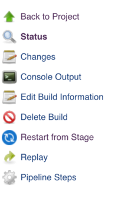
Você será solicitado a escolher em uma lista de estágios de nível superior que foram executados na execução original, na ordem em que foram executados. Os estágios que foram ignorados devido a uma falha anterior não estarão disponíveis para serem reiniciados, mas os estágios que foram ignorados devido a uma whencondição que não foi atendida estarão disponíveis. O estágio pai de um grupo de parallelestágios ou um grupo de aninhados stagesa serem executados sequencialmente também não estará disponível - apenas os estágios de nível superior são permitidos.

Depois de escolher um estágio para reiniciar e clicar em enviar, uma nova compilação, com um novo número de compilação, será iniciada. Todos os estágios anteriores ao estágio selecionado serão ignorados e o Pipeline começará a ser executado no estágio selecionado. A partir desse momento, o pipeline funcionará normalmente.
Reiniciando a partir da interface do usuário do Blue Ocean
Os estágios de reinicialização também podem ser feitos na interface do usuário do Blue Ocean. Depois que seu Pipeline for concluído, seja bem-sucedido ou falhe, você poderá clicar no nó que representa o estágio. Você pode clicar no Restartlink para esse estágio.

Preservando `stash`es para Uso com Etapas Reiniciadas
Normalmente, quando você executa a stashetapa no seu Pipeline, o estoque resultante de artefatos é limpo quando o Pipeline é concluído, independentemente do resultado do Pipeline. Como os stashartefatos não estão acessíveis fora da execução do Pipeline que os criou, isso não criou nenhuma limitação no uso. Porém, com a reinicialização do estágio declarativo, você poderá unstashartefatos de um estágio que foi executado antes do estágio do qual você está reiniciando.
Para ativar isso, há uma propriedade de tarefa que permite configurar um número máximo de execuções concluídas cujos
stashartefatos devem ser preservados para reutilização em uma execução reiniciada. Você pode especificar de 1 a 50 como o número de execuções a serem preservadas.
Esta propriedade do trabalho pode ser configurada na optionsseção do pipeline declarativo , como abaixo:
options {
preserveStashes() (1)
// or
preserveStashes(buildCount: 5) (2)
}| 1 | O número padrão de execuções a serem preservadas é 1, apenas a compilação concluída mais recente. |
| 2 | Se um número buildCountfora do intervalo de 1 a 50 for especificado, o Pipeline falhará com um erro de validação. |
Quando um Pipeline é concluído, ele verifica se alguma execução concluída anteriormente deve ter seus stashartefatos limpos.
Ramificações e solicitações pull
Índice
Na seção anterior, um Jenkinsfileque poderia ser verificado no controle de origem foi implementado. Esta seção aborda o conceito de
pipelines multibranch, que se baseia na Jenkinsfilebase para fornecer funcionalidade mais dinâmica e automática no Jenkins.
Criando um pipeline de várias filiais
O tipo de projeto Multibranch Pipeline permite implementar diferentes arquivos Jenkins para diferentes ramificações do mesmo projeto. Em um projeto de Pipeline Multibranch, Jenkins descobre, gerencia e executa Pipelines automaticamente para ramificações que contêm um Jenkinsfilecontrole de origem.
Isso elimina a necessidade de criação e gerenciamento manuais de pipeline.
Para criar um pipeline de várias filiais:
-
Clique em Novo item na página inicial do Jenkins.
-
Digite um nome para o seu Pipeline, selecione Multibranch Pipeline e clique em OK .
|
Jenkins usa o nome do Pipeline para criar diretórios no disco. Os nomes de pipeline que incluem espaços podem descobrir erros nos scripts que não esperam que os caminhos contenham espaços. |

-
Adicione uma fonte de ramificação (por exemplo, Git) e insira o local do repositório.
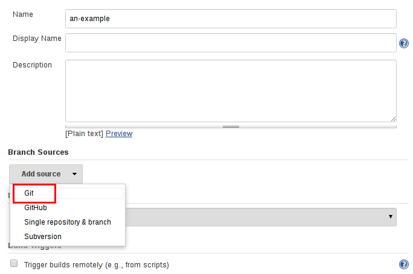

-
Salve o projeto Multibranch Pipeline.
Ao salvar , o Jenkins verifica automaticamente o repositório designado e cria itens apropriados para cada ramificação no repositório que contém um
Jenkinsfile.
Por padrão, o Jenkins não indexa automaticamente novamente o repositório para adições ou exclusões de ramificações (a menos que esteja usando uma Pasta da Organização ); portanto, é útil configurar um pipeline de várias filiais para indexar periodicamente na configuração:

Variáveis de ambiente adicionais
Os pipelines de várias filiais expõem informações adicionais sobre a filial que está sendo construída por meio da envvariável global, como:
- BRANCH_NAME
-
Nome da ramificação para a qual este Pipeline está executando, por exemplo
master. - CHANGE_ID
-
Um identificador correspondente a algum tipo de solicitação de alteração, como um número de solicitação pull
Variáveis de ambiente adicionais estão listadas na Referência de variável global .
Suporte a solicitações pull
Os pipelines de várias filiais podem ser usados para validar solicitações de recebimento / alteração com o plug-in apropriado. Essa funcionalidade é fornecida pelos seguintes plugins:
Por favor, consulte a documentação deles para obter mais informações sobre como usar esses plugins.
Usando pastas da organização
As Pastas de Organização permitem que Jenkins monitore toda uma Organização GitHub, Equipe / Projeto Bitbucket, organização GitLab ou organização Gitea e crie automaticamente novos Pipelines Multibranch para repositórios que contenham ramificações e solicitações pull que contenham a Jenkinsfile.
As pastas da organização são implementadas para:
-
GitHub no plug-in Pasta da organização do GitHub
-
Bitbucket no plugin Bitbucket Branch Source
-
GitLab no plug-in GitLab Branch Source
-
Gitea no plugin Gitea
Usando o Docker com pipeline
Muitas organizações usam o Docker para unificar seus ambientes de construção e teste entre máquinas e para fornecer um mecanismo eficiente para implantar aplicativos. A partir das versões 2.5 e superior do Pipeline, o Pipeline oferece suporte interno para interagir com o Docker de dentro de um
Jenkinsfile.
Embora esta seção cubra os princípios básicos da utilização do Docker com a
Jenkinsfile, não cobre os fundamentos do Docker, os quais podem ser lidos no Guia de introdução do
Docker .
Customizando o ambiente de execução
O Pipeline foi projetado para usar facilmente
imagens do Docker como o ambiente de execução de um único
Estágio
ou de todo o Pipeline. Significando que um usuário pode definir as ferramentas necessárias para seu Pipeline, sem precisar configurar manualmente os agentes. Praticamente qualquer ferramenta que possa ser
empacotada em um contêiner do Docker . pode ser usado com facilidade, fazendo apenas pequenas edições em a Jenkinsfile.
Jenkinsfile (pipeline declarativo)
pipeline {
agent {
docker { image 'node:7-alpine' }
}
stages {
stage('Test') {
steps {
sh 'node --version'
}
}
}
}Quando o Pipeline é executado, o Jenkins inicia automaticamente o contêiner especificado e executa as etapas definidas nele:
[Pipeline] stage
[Pipeline] { (Test)
[Pipeline] sh
[guided-tour] Running shell script
+ node --version
v7.4.0
[Pipeline] }
[Pipeline] // stage
[Pipeline] }Armazenando em cache dados para contêineres
Muitas ferramentas de construção baixam dependências externas e as armazenam em cache localmente para reutilização futura. Como os contêineres são criados inicialmente com sistemas de arquivos "limpos", isso pode resultar em Pipelines mais lentos, pois eles podem não tirar proveito dos caches em disco entre as execuções subsequentes do Pipeline.
O Pipeline suporta a adição de argumentos personalizados que são passados para o Docker, permitindo que os usuários especifiquem Volumes do Docker personalizados
para montar, que podem ser usados para armazenar em cache dados no
agente
entre as execuções do Pipeline. O exemplo a seguir armazenará em cache ~/.m2entre execuções do Pipeline utilizando o
mavencontêiner , evitando assim a necessidade de baixar novamente as dependências para execuções subsequentes do Pipeline.
Jenkinsfile (pipeline declarativo)
pipeline {
agent {
docker {
image 'maven:3-alpine'
args '-v $HOME/.m2:/root/.m2'
}
}
stages {
stage('Build') {
steps {
sh 'mvn -B'
}
}
}
}Usando vários contêineres
Tornou-se cada vez mais comum as bases de código confiarem em várias tecnologias diferentes. Por exemplo, um repositório pode ter uma implementação de API de back-end baseada em Java e uma implementação de front-end baseada em JavaScript. A combinação de Docker e Pipeline permite Jenkinsfileusar
vários tipos de tecnologias combinando a agent {}diretiva, com diferentes estágios.
Jenkinsfile (pipeline declarativo)
pipeline {
agent none
stages {
stage('Back-end') {
agent {
docker { image 'maven:3-alpine' }
}
steps {
sh 'mvn --version'
}
}
stage('Front-end') {
agent {
docker { image 'node:7-alpine' }
}
steps {
sh 'node --version'
}
}
}
}Usando um Dockerfile
Para projetos que exigem um ambiente de execução mais personalizado, o Pipeline também oferece suporte à criação e execução de um contêiner a partir de um Dockerfileno repositório de origem. Em contraste com a abordagem anterior do uso de um contêiner "pronto para uso", o uso da agent { dockerfile true }sintaxe criará uma nova imagem de uma em Dockerfilevez de extrair uma do
Docker Hub .
Reutilizando um exemplo acima, com um padrão mais personalizado Dockerfile:
Dockerfile
FROM node:7-alpine
RUN apk add -U subversionConfirmando isso na raiz do repositório de origem, Jenkinsfilepode ser alterado para criar um contêiner com base nisso Dockerfilee, em seguida, execute as etapas definidas usando esse contêiner:
Jenkinsfile (pipeline declarativo)
pipeline {
agent { dockerfile true }
stages {
stage('Test') {
steps {
sh 'node --version'
sh 'svn --version'
}
}
}
}A agent { dockerfile true }sintaxe suporta várias outras opções descritas em mais detalhes na
seção Sintaxe de Pipeline .
Usando um Dockerfile com o Jenkins Pipeline
Especificando um rótulo do Docker
Por padrão, o Pipeline assume que qualquer agente configurado é capaz de executar Pipelines baseados no Docker. Para ambientes Jenkins que possuem macOS, Windows ou outros agentes, que não conseguem executar o daemon do Docker, essa configuração padrão pode ser problemática. O Pipeline fornece uma opção global na página Gerenciar Jenkins e no nível da Pasta , para especificar quais agentes (por Rótulo ) usar para executar Pipelines baseados em Docker.

Uso avançado com pipeline com script
Executando contêineres "sidecar"
O uso do Docker no Pipeline pode ser uma maneira eficaz de executar um serviço no qual a compilação ou um conjunto de testes possa confiar. Semelhante ao padrão do side - car , o Docker Pipeline pode executar um contêiner "em segundo plano", enquanto realiza trabalhos em outro. Utilizando essa abordagem de side-car, um Pipeline pode ter um contêiner "limpo" provisionado para cada execução do Pipeline.
Considere um conjunto de testes de integração hipotético que depende de um banco de dados MySQL local para estar em execução. Usando o withRunmétodo, implementado no
suporte do plug-in Docker Pipeline ao Scripted Pipeline, a Jenkinsfilepode executar o MySQL como um side-car:
node {
checkout scm
/*
* In order to communicate with the MySQL server, this Pipeline explicitly
* maps the port (`3306`) to a known port on the host machine.
*/
docker.image('mysql:5').withRun('-e "MYSQL_ROOT_PASSWORD=my-secret-pw" -p 3306:3306') { c ->
/* Wait until mysql service is up */
sh 'while ! mysqladmin ping -h0.0.0.0 --silent; do sleep 1; done'
/* Run some tests which require MySQL */
sh 'make check'
}
}Este exemplo pode ser levado adiante, utilizando dois contêineres simultaneamente. Um "sidecar" executando o MySQL e outro fornecendo o ambiente de execução , usando os links do contêiner do Docker .
node {
checkout scm
docker.image('mysql:5').withRun('-e "MYSQL_ROOT_PASSWORD=my-secret-pw"') { c ->
docker.image('mysql:5').inside("--link ${c.id}:db") {
/* Wait until mysql service is up */
sh 'while ! mysqladmin ping -hdb --silent; do sleep 1; done'
}
docker.image('centos:7').inside("--link ${c.id}:db") {
/*
* Run some tests which require MySQL, and assume that it is
* available on the host name `db`
*/
sh 'make check'
}
}
}O exemplo acima usa o objeto exposto por withRun, que tem o ID do contêiner em execução disponível por meio da idpropriedade Usando o ID do contêiner, o Pipeline pode criar um link passando argumentos personalizados do Docker para o
inside()método
A idpropriedade também pode ser útil para inspecionar logs de um contêiner do Docker em execução antes da saída do Pipeline:
sh "docker logs ${c.id}"Construção de contêineres
Para criar uma imagem do Docker , o
plug-in Docker Pipeline também fornece um build()método para criar uma nova imagem, de uma
Dockerfileno repositório, durante uma execução do Pipeline.
Um grande benefício do uso da sintaxe docker.build("my-image-name")é que um Pipeline com script pode usar o valor de retorno para chamadas subsequentes do Docker Pipeline, por exemplo:
node {
checkout scm
def customImage = docker.build("my-image:${env.BUILD_ID}")
customImage.inside {
sh 'make test'
}
}O valor de retorno também pode ser usado para publicar a imagem do Docker no
Docker Hub ou em um Registro personalizado , através do push()método, por exemplo:
node {
checkout scm
def customImage = docker.build("my-image:${env.BUILD_ID}")
customImage.push()
}Um uso comum das "tags" da imagem é especificar uma latesttag para a versão mais recente e validada de uma imagem do Docker. O push()método aceita um tagparâmetro opcional , permitindo que o Pipeline carregue as customImagetags com diferentes, por exemplo:
node {
checkout scm
def customImage = docker.build("my-image:${env.BUILD_ID}")
customImage.push()
customImage.push('latest')
}O build()método cria o Dockerfileno diretório atual por padrão. Isso pode ser substituído, fornecendo um caminho de diretório que contenha a Dockerfilecomo o segundo argumento do build()método, por exemplo:
node {
checkout scm
def testImage = docker.build("test-image", "./dockerfiles/test") (1)
testImage.inside {
sh 'make test'
}
}| 1 | Constrói a test-imagepartir do Dockerfile encontrado em ./dockerfiles/test/Dockerfile. |
É possível passar outros argumentos para o
docker build
, adicionando-os ao segundo argumento do build()método. Ao passar argumentos dessa maneira, o último valor nessa sequência deve ser o caminho para o arquivo de janela de encaixe e deve terminar com a pasta a ser usada como contexto de construção)
Este exemplo substitui o padrão Dockerfilepassando a -f
bandeira:
node {
checkout scm
def dockerfile = 'Dockerfile.test'
def customImage = docker.build("my-image:${env.BUILD_ID}", "-f ${dockerfile} ./dockerfiles") (1)
}| 1 | Constrói a my-image:${env.BUILD_ID}partir do Dockerfile encontrado em ./dockerfiles/Dockerfile.test. |
Usando um servidor Docker remoto
Por padrão, o plug-in Docker Pipeline se comunicará com um daemon Docker local, normalmente acessado /var/run/docker.sock.
Para selecionar um servidor Docker não padrão, como o
Docker Swarm , o withServer()método deve ser usado.
Ao passar um URI e, opcionalmente, o ID de credenciais de uma autenticação de certificado do Docker Server pré-configurada no Jenkins, para o método com:
node {
checkout scm
docker.withServer('tcp://swarm.example.com:2376', 'swarm-certs') {
docker.image('mysql:5').withRun('-p 3306:3306') {
/* do things */
}
}
}|
Para Atualmente, nem o plug-in Jenkins nem a CLI do Docker detectam automaticamente o caso de o servidor estar executando remotamente; um sintoma típico seria erros de Quando Jenkins detecta que o próprio agente está sendo executado dentro de um contêiner do Docker, ele passa automaticamente o Além disso, algumas versões do Docker Swarm não oferecem suporte a registros personalizados. |
Usando um Registro Customizado
Por padrão, a integração do Docker Pipeline assume o registro padrão do Docker do Docker Hub .
Para usar um Docker Registry personalizado, os usuários do Scripted Pipeline podem agrupar etapas com o withRegistry()método, transmitindo a URL personalizada do Registro, por exemplo:
node {
checkout scm
docker.withRegistry('https://registry.example.com') {
docker.image('my-custom-image').inside {
sh 'make test'
}
}
}Para um Docker Registry que requer autenticação, adicione um item de credenciais "Nome de usuário / senha" na página inicial do Jenkins e use o ID de credenciais como segundo argumento para withRegistry():
node {
checkout scm
docker.withRegistry('https://registry.example.com', 'credentials-id') {
def customImage = docker.build("my-image:${env.BUILD_ID}")
/* Push the container to the custom Registry */
customImage.push()
}
}Estendendo com bibliotecas compartilhadas
À medida que o Pipeline é adotado para mais e mais projetos em uma organização, é provável que surjam padrões comuns. Muitas vezes, é útil compartilhar partes de pipelines entre vários projetos para reduzir redundâncias e manter o código "DRY" [ 1 ] .
O Pipeline tem suporte para criar "Bibliotecas Compartilhadas", que podem ser definidas em repositórios de controle de origem externos e carregadas nos Pipelines existentes.
Definindo bibliotecas compartilhadas
Uma Biblioteca Compartilhada é definida com um nome, um método de recuperação de código-fonte como o SCM e, opcionalmente, uma versão padrão. O nome deve ser um identificador curto, pois será usado em scripts.
A versão pode ser qualquer coisa entendida por esse SCM; por exemplo, ramificações, tags e hashes de confirmação funcionam para o Git. Você também pode declarar se os scripts precisam solicitar explicitamente essa biblioteca (detalhada abaixo) ou se ela está presente por padrão. Além disso, se você especificar uma versão na configuração do Jenkins, poderá impedir que os scripts selecionem uma versão diferente .
A melhor maneira de especificar o SCM é usar um plug-in do SCM que foi especificamente atualizado para oferecer suporte a uma nova API para fazer check-out de uma versão nomeada arbitrária ( opção Modern SCM ). Até o momento em que este artigo foi escrito, as versões mais recentes dos plugins Git e Subversion suportam esse modo; outros devem seguir.
Se o seu plug-in SCM não estiver integrado, você poderá selecionar Legacy SCM e escolher qualquer coisa oferecida. Nesse caso, você precisa incluir
${library.yourLibName.version}algum lugar na configuração do SCM, para que durante o checkout o plug-in expanda essa variável para selecionar a versão desejada. Por exemplo, para Subversion, você pode definir o Repositório URL para
svnserver/project/${library.yourLibName.version}e, em seguida, usar versões, como trunkou branches/devou tags/1.0.
Estrutura de diretórios
A estrutura de diretórios de um repositório da Biblioteca Compartilhada é a seguinte:
(root)
+- src # Groovy source files
| +- org
| +- foo
| +- Bar.groovy # for org.foo.Bar class
+- vars
| +- foo.groovy # for global 'foo' variable
| +- foo.txt # help for 'foo' variable
+- resources # resource files (external libraries only)
| +- org
| +- foo
| +- bar.json # static helper data for org.foo.BarO srcdiretório deve se parecer com a estrutura padrão do diretório de origem Java. Este diretório é adicionado ao caminho de classe ao executar Pipelines.
O varsdiretório hospeda arquivos de script que são expostos como uma variável nos Pipelines. O nome do arquivo é o nome da variável no pipeline. Portanto, se você tiver um arquivo chamado vars/log.groovycom uma função como def info(message)…essa, poderá acessar essa função como log.info "hello world"no Pipeline. Você pode colocar quantas funções quiser dentro deste arquivo. Leia abaixo para mais exemplos e opções.
O nome base de cada .groovyarquivo deve ser um identificador Groovy (~ Java), convencionalmente camelCased. A correspondência .txt, se presente, pode conter documentação, processada através do formatador de marcação configurado do sistema (pode ser realmente HTML, Markdown etc., embora a .txtextensão seja necessária). Esta documentação estará visível apenas nas páginas Referência de variável global que são acessadas na barra lateral de navegação dos trabalhos do Pipeline que importam a biblioteca compartilhada. Além disso, esses trabalhos devem ser executados com êxito uma vez antes que a documentação da biblioteca compartilhada seja gerada.
Os arquivos de origem Groovy nesses diretórios obtêm a mesma "transformação CPS" que no Pipeline com script.
Um resourcesdiretório permite que a libraryResourceetapa seja usada em uma biblioteca externa para carregar arquivos não Groovy associados. Atualmente, esse recurso não é suportado por bibliotecas internas.
Outros diretórios sob a raiz são reservados para aprimoramentos futuros.
Bibliotecas compartilhadas globais
Existem vários locais onde as Bibliotecas Compartilhadas podem ser definidas, dependendo do caso de uso. Gerenciar Jenkins »Configurar sistema» Global Pipeline Libraries quantas bibliotecas forem necessárias podem ser configuradas.

Como essas bibliotecas podem ser usadas globalmente, qualquer Pipeline no sistema pode utilizar a funcionalidade implementada nessas bibliotecas.
Essas bibliotecas são consideradas "confiáveis": elas podem executar qualquer método nas APIs internas Java, Groovy, Jenkins, plug-ins Jenkins ou bibliotecas de terceiros. Isso permite definir bibliotecas que encapsulam APIs individualmente inseguras em um wrapper de nível superior seguro para uso em qualquer pipeline. Cuidado para que qualquer pessoa capaz de enviar confirmações para este repositório SCM possa obter acesso ilimitado ao Jenkins . Você precisa da permissão Geral / RunScripts para configurar essas bibliotecas (normalmente isso será concedido aos administradores do Jenkins).
Bibliotecas compartilhadas no nível da pasta
Qualquer pasta criada pode ter bibliotecas compartilhadas associadas a ela. Esse mecanismo permite o escopo de bibliotecas específicas para todos os pipelines dentro da pasta ou subpasta.
As bibliotecas baseadas em pastas não são consideradas "confiáveis": elas são executadas na caixa de proteção Groovy, como os pipelines comuns.
Bibliotecas compartilhadas automáticas
Outros plugins podem adicionar maneiras de definir bibliotecas rapidamente. Por exemplo, o
plug-in GitHub Branch Source fornece um item "GitHub Organization Folder" que permite que um script use uma biblioteca não confiável, como github.com/someorg/somereposem nenhuma configuração adicional. Nesse caso, o repositório GitHub especificado seria carregado, a partir da master
ramificação, usando um checkout anônimo.
Usando bibliotecas
As bibliotecas compartilhadas marcadas como Load implicitamente permitem que os pipelines usem imediatamente classes ou variáveis globais definidas por essas bibliotecas. Para acessar outras bibliotecas compartilhadas, é Jenkinsfilenecessário usar a @Libraryanotação, especificando o nome da biblioteca:

@Library('my-shared-library') _
/* Using a version specifier, such as branch, tag, etc */
@Library('my-shared-library@1.0') _
/* Accessing multiple libraries with one statement */
@Library(['my-shared-library', 'otherlib@abc1234']) _A anotação pode estar em qualquer lugar do script em que uma anotação seja permitida pelo Groovy. Ao se referir a bibliotecas de classes (com src/diretórios), convencionalmente a anotação segue uma importinstrução:
@Library('somelib')
import com.mycorp.pipeline.somelib.UsefulClass|
Para bibliotecas compartilhadas que definem apenas variáveis globais ( Não é recomendado para |
As bibliotecas são resolvidas e carregadas durante a compilação do script, antes de iniciar a execução. Isso permite que o compilador Groovy entenda o significado dos símbolos usados na verificação de tipo estático e permite que eles sejam usados nas declarações de tipo no script, por exemplo:
@Library('somelib')
import com.mycorp.pipeline.somelib.Helper
int useSomeLib(Helper helper) {
helper.prepare()
return helper.count()
}
echo useSomeLib(new Helper('some text'))Variáveis globais, no entanto, são resolvidas em tempo de execução.
Carregando bibliotecas dinamicamente
Na versão 2.7 do plug-in Pipeline: Shared Groovy Libraries , há uma nova opção para carregar bibliotecas (não implícitas) em um script: uma libraryetapa que carrega uma biblioteca dinamicamente , a qualquer momento durante a compilação.
Se você está interessado apenas em usar variáveis / funções globais (do vars/diretório), a sintaxe é bastante simples:
library 'my-shared-library'Posteriormente, quaisquer variáveis globais dessa biblioteca estarão acessíveis para o script.
O uso de classes do src/diretório também é possível, mas mais complicado. Enquanto a @Libraryanotação prepara o "caminho da classe" do script antes da compilação, quando uma libraryetapa é encontrada, o script já foi compilado. Portanto, você não pode importou de outra forma “estaticamente” se referir a tipos da biblioteca.
No entanto, você pode usar classes de biblioteca dinamicamente (sem verificação de tipo), acessando-as por nome totalmente qualificado a partir do valor de retorno da libraryetapa.
staticmétodos podem ser chamados usando uma sintaxe semelhante a Java:
library('my-shared-library').com.mycorp.pipeline.Utils.someStaticMethod()Você também pode acessar staticcampos e chamar construtores como se fossem staticmétodos denominados new:
def useSomeLib(helper) { // dynamic: cannot declare as Helper
helper.prepare()
return helper.count()
}
def lib = library('my-shared-library').com.mycorp.pipeline // preselect the package
echo useSomeLib(lib.Helper.new(lib.Constants.SOME_TEXT))Versões da biblioteca
A "Versão padrão" para uma Biblioteca Compartilhada configurada é usada quando a opção "Carregar implicitamente" está marcada ou se um Pipeline faz referência à biblioteca apenas por nome, por exemplo @Library('my-shared-library') _. Se uma "Versão padrão" não estiver
definida, o Pipeline deverá especificar uma versão, por exemplo
@Library('my-shared-library@master') _.
Se "Permitir que a versão padrão seja substituída" estiver ativado na configuração da Biblioteca Compartilhada, uma @Libraryanotação também poderá substituir uma versão padrão definida para a biblioteca. Isso também permite que uma biblioteca com "Carregar implicitamente" seja carregada de uma versão diferente, se necessário.
Ao usar a libraryetapa, você também pode especificar uma versão:
library 'my-shared-library@master'Como essa é uma etapa regular, essa versão pode ser computada em vez de uma constante como na anotação; por exemplo:
library "my-shared-library@$BRANCH_NAME"carregaria uma biblioteca usando a mesma ramificação SCM da multibranch Jenkinsfile. Como outro exemplo, você pode escolher uma biblioteca por parâmetro:
properties([parameters([string(name: 'LIB_VERSION', defaultValue: 'master')])])
library "my-shared-library@${params.LIB_VERSION}"Observe que a libraryetapa não pode ser usada para substituir a versão de uma biblioteca carregada implicitamente. Ele já está carregado no momento em que o script é iniciado e uma biblioteca de um determinado nome não pode ser carregada duas vezes.
Método de recuperação
A melhor maneira de especificar o SCM é usar um plug-in do SCM que foi especificamente atualizado para oferecer suporte a uma nova API para fazer check-out de uma versão nomeada arbitrária ( opção Modern SCM ). No momento da redação deste artigo, as versões mais recentes dos plugins Git e Subversion suportam esse modo.

SCM herdado
Os plug-ins do SCM que ainda não foram atualizados para oferecer suporte aos recursos mais recentes exigidos pelas Bibliotecas Compartilhadas, ainda podem ser usados pela opção Legacy SCM . Nesse caso, inclua ${library.yourlibrarynamehere.version}sempre que um branch / tag / ref possa ser configurado para esse plug-in SCM específico. Isso garante que, durante a verificação do código-fonte da biblioteca, o plug-in SCM expanda essa variável para verificar a versão apropriada da biblioteca.

Recuperação dinâmica
Se você especificar apenas um nome de biblioteca (opcionalmente com a versão depois @) na libraryetapa, o Jenkins procurará uma biblioteca pré-configurada com esse nome. (Ou, no caso de uma github.com/owner/repobiblioteca automática, ela carregará isso.)
Mas você também pode especificar o método de recuperação dinamicamente; nesse caso, não há necessidade de a biblioteca ter sido predefinida no Jenkins. Aqui está um exemplo:
library identifier: 'custom-lib@master', retriever: modernSCM(
[$class: 'GitSCMSource',
remote: 'git@git.mycorp.com:my-jenkins-utils.git',
credentialsId: 'my-private-key'])É melhor consultar a sintaxe do pipeline para obter a sintaxe precisa do seu SCM.
Observe que a versão da biblioteca deve ser especificada nesses casos.
Escrevendo bibliotecas
No nível básico, qualquer código válido do Groovy pode ser usado. Diferentes estruturas de dados, métodos utilitários, etc., como:
// src/org/foo/Point.groovy
package org.foo
// point in 3D space
class Point {
float x,y,z
}Acessando etapas
As classes da biblioteca não podem chamar diretamente etapas como shou git. No entanto, eles podem implementar métodos, fora do escopo de uma classe anexa, que, por sua vez, invocam as etapas do Pipeline, por exemplo:
// src/org/foo/Zot.groovy
package org.foo
def checkOutFrom(repo) {
git url: "git@github.com:jenkinsci/${repo}"
}
return thisQue pode ser chamado de um pipeline com script:
def z = new org.foo.Zot()
z.checkOutFrom(repo)Essa abordagem tem limitações; por exemplo, impede a declaração de uma superclasse.
Como alternativa, um conjunto de stepspode ser passado explicitamente usando thispara uma classe de biblioteca, em um construtor ou apenas um método:
package org.foo
class Utilities implements Serializable {
def steps
Utilities(steps) {this.steps = steps}
def mvn(args) {
steps.sh "${steps.tool 'Maven'}/bin/mvn -o ${args}"
}
}Ao salvar o estado em classes, como acima, a classe deve implementar a
Serializableinterface. Isso garante que um pipeline usando a classe, como visto no exemplo abaixo, possa suspender e retomar adequadamente no Jenkins.
@Library('utils') import org.foo.Utilities
def utils = new Utilities(this)
node {
utils.mvn 'clean package'
}Se a biblioteca precisar acessar variáveis globais, como env, essas devem ser explicitamente passadas para as classes ou métodos da biblioteca de maneira semelhante.
Em vez de passar várias variáveis do pipeline com script para uma biblioteca,
package org.foo
class Utilities {
static def mvn(script, args) {
script.sh "${script.tool 'Maven'}/bin/mvn -s ${script.env.HOME}/jenkins.xml -o ${args}"
}
}O exemplo acima mostra o script sendo passado para um staticmétodo, invocado a partir de um pipeline com script da seguinte maneira:
@Library('utils') import static org.foo.Utilities.*
node {
mvn this, 'clean package'
}Definindo variáveis globais
Internamente, os scripts no varsdiretório são instanciados sob demanda como singletons. Isso permite que vários métodos sejam definidos em um único .groovyarquivo por conveniência. Por exemplo:
vars / log.groovy
def info(message) {
echo "INFO: ${message}"
}
def warning(message) {
echo "WARNING: ${message}"
}Jenkinsfile
@Library('utils') _
log.info 'Starting'
log.warning 'Nothing to do!'Observe que se você deseja usar um campo na sua global para algum estado, anote-o da seguinte forma:
@groovy.transform.Field
def yourField = [:]
def yourFunction....O pipeline declarativo não permite chamadas de método para objetos fora dos blocos "script". ( JENKINS-42360 ). As chamadas de método acima precisam ser colocadas dentro de uma scriptdiretiva:
Jenkinsfile
@Library('utils') _
pipeline {
agent none
stages {
stage ('Example') {
steps {
// log.info 'Starting' (1)
script { (2)
log.info 'Starting'
log.warning 'Nothing to do!'
}
}
}
}
}| 1 | Essa chamada de método falharia porque está fora de uma scriptdiretiva. |
| 2 | script diretiva necessária para acessar variáveis globais no pipeline declarativo. |
|
Uma variável definida em uma biblioteca compartilhada será exibida apenas na Referência de Variáveis Globais (em Sintaxe do Pipeline ) após o Jenkins carregar e usar essa biblioteca como parte de uma execução bem-sucedida do Pipeline. |
|
Evite preservar o estado em variáveis globais
Evite definir variáveis globais com métodos que interagem ou preservam o estado. Use uma classe estática ou instancie uma variável local de uma classe. |
Definindo etapas personalizadas
As bibliotecas compartilhadas também podem definir variáveis globais que se comportam de maneira semelhante às etapas internas, como shou git. As variáveis globais definidas em Bibliotecas compartilhadas devem ser nomeadas com todas as letras minúsculas ou "camelCased" para serem carregadas corretamente pelo Pipeline.
[ 2 ]
Por exemplo, para definir sayHello, o arquivo vars/sayHello.groovy
deve ser criado e implementar um callmétodo. O callmétodo permite que a variável global seja invocada de maneira semelhante a uma etapa:
// vars/sayHello.groovy
def call(String name = 'human') {
// Any valid steps can be called from this code, just like in other
// Scripted Pipeline
echo "Hello, ${name}."
}O Pipeline poderá referenciar e chamar esta variável:
sayHello 'Joe'
sayHello() /* invoke with default arguments */Se chamado com um bloco, o callmétodo receberá a
Closure. O tipo deve ser definido explicitamente para esclarecer a intenção da etapa, por exemplo:
// vars/windows.groovy
def call(Closure body) {
node('windows') {
body()
}
}O Pipeline pode então usar essa variável como qualquer etapa interna que aceite um bloco:
windows {
bat "cmd /?"
}Definindo uma DSL mais estruturada
Se você possui muitos pipelines semelhantes, o mecanismo de variável global fornece uma ferramenta útil para criar uma DSL de nível superior que captura a similaridade. Por exemplo, todos os plugins Jenkins são criados e testados da mesma maneira, portanto, podemos escrever uma etapa chamada
buildPlugin:
// vars/buildPlugin.groovy
def call(Map config) {
node {
git url: "https://github.com/jenkinsci/${config.name}-plugin.git"
sh 'mvn install'
mail to: '...', subject: "${config.name} plugin build", body: '...'
}
}Supondo que o script tenha sido carregado como uma
biblioteca compartilhada global ou como uma
biblioteca compartilhada no nível de pasta,
o resultado Jenkinsfileserá muito mais simples:
Jenkinsfile (pipeline com script)
buildPlugin name: 'git'Há também um truque de "padrão de construtor" usando o Groovy's Closure.DELEGATE_FIRST, que permite Jenkinsfileparecer um pouco mais com um arquivo de configuração do que com um programa, mas isso é mais complexo e propenso a erros e não é recomendado.
Usando bibliotecas de terceiros
É possível usar bibliotecas Java de terceiros, normalmente encontradas no
Maven Central , a partir de código de biblioteca confiável usando a @Grabanotação. Consulte a documentação do
Grape
para obter detalhes, mas basta colocar:
@Grab('org.apache.commons:commons-math3:3.4.1')
import org.apache.commons.math3.primes.Primes
void parallelize(int count) {
if (!Primes.isPrime(count)) {
error "${count} was not prime"
}
// …
}Bibliotecas de terceiros são armazenadas em cache por padrão no ~/.groovy/grapes/mestre Jenkins.
Carregando recursos
Bibliotecas externas podem carregar arquivos adjuntos de um resources/diretório usando a libraryResourceetapa O argumento é um nome de caminho relativo, semelhante ao carregamento de recursos Java:
def request = libraryResource 'com/mycorp/pipeline/somelib/request.json'O arquivo é carregado como uma sequência, adequada para passar para determinadas APIs ou salvar em um espaço de trabalho usando writeFile.
É aconselhável usar uma estrutura de pacote exclusiva para não entrar em conflito acidental com outra biblioteca.
Pré-teste de alterações na biblioteca
Se você perceber um erro em uma compilação usando uma biblioteca não confiável, basta clicar no link Repetir para tentar editar um ou mais de seus arquivos de origem e ver se a compilação resultante se comporta conforme o esperado. Quando estiver satisfeito com o resultado, siga o link do diff na página de status da compilação e aplique o diff ao repositório da biblioteca e confirme.
(Mesmo que a versão solicitada para a biblioteca fosse uma ramificação, em vez de uma versão fixa como uma tag, as construções repetidas usarão exatamente a mesma revisão que a construção original: as fontes da biblioteca não serão retiradas novamente.)
Atualmente, a reprodução não é suportada para bibliotecas confiáveis. A modificação de arquivos de recursos também não é suportada no momento durante a reprodução .
Definindo pipelines declarativos
A partir do Declarative 1.2, lançado no final de setembro de 2017, você também pode definir pipelines declarativos em suas bibliotecas compartilhadas. Aqui está um exemplo, que executará um pipeline declarativo diferente, dependendo de o número da compilação ser ímpar ou par:
// vars/evenOrOdd.groovy
def call(int buildNumber) {
if (buildNumber % 2 == 0) {
pipeline {
agent any
stages {
stage('Even Stage') {
steps {
echo "The build number is even"
}
}
}
}
} else {
pipeline {
agent any
stages {
stage('Odd Stage') {
steps {
echo "The build number is odd"
}
}
}
}
}
}// Jenkinsfile
@Library('my-shared-library') _
evenOrOdd(currentBuild.getNumber())Somente pipelines inteiros podem ser definidos em bibliotecas compartilhadas a partir deste momento. Isso só pode ser feito em vars/*.groovy, e somente em um callmétodo. Somente um pipeline declarativo pode ser executado em uma única compilação e, se você tentar executar uma segunda, sua compilação falhará como resultado.
Ferramentas de desenvolvimento de pipeline
Índice
O Jenkins Pipeline inclui documentação interna e o Snippet Generator, que são os principais recursos ao desenvolver Pipelines. Eles fornecem ajuda e informações detalhadas personalizadas para a versão atualmente instalada do Jenkins e plugins relacionados. Nesta seção, discutiremos outras ferramentas e recursos que podem ajudar no desenvolvimento dos Pipelines Jenkins.
Blue Ocean Editor
O Blue Ocean Pipeline Editor fornece uma maneira WYSIWYG de criar pipelines declarativos. O editor oferece uma visão estrutural de todos os estágios, ramificações paralelas e etapas em um pipeline. O editor valida as alterações no Pipeline à medida que são feitas, eliminando muitos erros antes mesmo de serem confirmados. Nos bastidores, ele ainda gera código de pipeline declarativo.
Linter de pipeline de linha de comando
Jenkins pode validar, ou " lint ", um pipeline declarativo na linha de comando antes de executá-lo. Isso pode ser feito usando um comando da CLI do Jenkins ou fazendo uma solicitação HTTP POST com os parâmetros apropriados. Recomendamos o uso da interface SSH para executar o linter. Consulte a documentação da CLI do Jenkins para obter detalhes sobre como configurar o Jenkins para acesso seguro à linha de comando.
Linting via CLI com SSH
# ssh (Jenkins CLI)
# JENKINS_SSHD_PORT=[sshd port on master]
# JENKINS_HOSTNAME=[Jenkins master hostname]
ssh -p $JENKINS_SSHD_PORT $JENKINS_HOSTNAME declarative-linter < JenkinsfileLinting via HTTP POST usando
curl# curl (REST API)
# Assuming "anonymous read access" has been enabled on your Jenkins instance.
# JENKINS_URL=[root URL of Jenkins master]
# JENKINS_CRUMB is needed if your Jenkins master has CRSF protection enabled as it should
JENKINS_CRUMB=`curl "$JENKINS_URL/crumbIssuer/api/xml?xpath=concat(//crumbRequestField,\":\",//crumb)"`
curl -X POST -H $JENKINS_CRUMB -F "jenkinsfile=<Jenkinsfile" $JENKINS_URL/pipeline-model-converter/validateExemplos
Abaixo estão dois exemplos do Pipeline Linter em ação. Este primeiro exemplo mostra a saída do linter quando é passado um inválido Jenkinsfile, que está faltando parte da agentdeclaração.
Jenkinsfile
pipeline {
agent
stages {
stage ('Initialize') {
steps {
echo 'Placeholder.'
}
}
}
}Saída de linter para Jenkinsfile inválido
# pass a Jenkinsfile that does not contain an "agent" section
ssh -p 8675 localhost declarative-linter < ./Jenkinsfile
Errors encountered validating Jenkinsfile:
WorkflowScript: 2: Not a valid section definition: "agent". Some extra configuration is required. @ line 2, column 3.
agent
^
WorkflowScript: 1: Missing required section "agent" @ line 1, column 1.
pipeline }
^Neste segundo exemplo, o Jenkinsfilefoi atualizado para incluir a falta anyde agent. O linter agora relata que o Pipeline é válido.
Jenkinsfile
pipeline {
agent any
stages {
stage ('Initialize') {
steps {
echo 'Placeholder.'
}
}
}
}Saída de linter para Jenkinsfile válido
ssh -p 8675 localhost declarative-linter < ./Jenkinsfile
Jenkinsfile successfully validated.O pipeline "Replay" é executado com modificações
Normalmente, um pipeline é definido dentro da interface da web clássica do Jenkins ou comprometendo-se com um Jenkinsfilecontrole de origem. Infelizmente, nenhuma das abordagens é ideal para iteração rápida ou prototipagem de um pipeline. O recurso "Replay" permite modificações e execução rápidas de um pipeline existente sem alterar a configuração do pipeline ou criar uma nova confirmação.
Uso
Para usar o recurso "Replay":
-
Selecione uma execução concluída anteriormente no histórico de compilação.

-
Clique em "Replay" no menu esquerdo

-
Faça as modificações e clique em "Executar". Neste exemplo, alteramos "ruby-2.3" para "ruby-2.4".

-
Verifique os resultados das alterações
Quando estiver satisfeito com as alterações, você poderá usar o Replay para visualizá-las novamente, copiá-las de volta para o seu trabalho no Pipeline ou Jenkinsfile, em seguida, enviá-las usando seus processos de engenharia habituais.
Recursos
-
Pode ser chamado várias vezes na mesma execução - permite fácil teste paralelo de diferentes alterações.
-
Também pode ser chamado nas execuções de pipeline que ainda estão em andamento - desde que um pipeline contenha o Groovy sintaticamente correto e possa iniciar, ele pode ser reproduzido.
-
O código da Biblioteca compartilhada referenciada também pode ser modificado - se um Pipeline executado fizer referência a uma Biblioteca compartilhada , o código da biblioteca compartilhada também será mostrado e modificável como parte da página Replay.
Limitações
-
As execuções de pipeline com erros de sintaxe não podem ser reproduzidas - o que significa que seu código não pode ser exibido e as alterações feitas nelas não podem ser recuperadas. Ao usar o Replay para modificações mais significativas, salve as alterações em um arquivo ou editor fora do Jenkins antes de executá-las. Veja JENKINS-37589
-
O comportamento do pipeline repetido pode diferir das execuções iniciadas por outros métodos - Para os pipelines que não fazem parte de um pipeline de várias ramificações, as informações de confirmação podem diferir para a execução original e a execução repetida. Veja JENKINS-36453
Integrações IDE
Editor Eclipse Jenkins
O Jenkins Editorplug-in do Eclipse pode ser encontrado no
Eclipse Marketplace . Este editor de texto especial fornece alguns recursos para definir pipelines, por exemplo:
-
Valide os scripts de pipeline da Jenkins Linter Validation . As falhas são mostradas como marcadores de eclipse
-
Um esboço com ícones dedicados (para pipelines declarativos de Jenkins)
-
Destaque de sintaxe / palavra-chave
-
Validação Groovy
| O Jenkins Editor Plugin é uma ferramenta de terceiros que não é suportada pelo Projeto Jenkins. |
Conector do VisualStudio Code Jenkins Pipeline Linter
A Jenkins Pipeline Linter Connectorextensão para o
VisualStudio Code
pega o arquivo que você abriu no momento, o envia para o Jenkins Server e exibe o resultado da validação no VS Code.
Você pode encontrar a extensão no navegador de extensões do VS Code ou no seguinte URL: marketplace.visualstudio.com/items?itemName=janjoerke.jenkins-pipeline-linter-connector
A extensão adiciona quatro entradas de configurações ao VS Code, que selecionam o servidor Jenkins que você deseja usar para validação.
-
jenkins.pipeline.linter.connector.urlé o ponto de extremidade no qual o Jenkins Server espera a solicitação POST, contendo o arquivo Jenkins que você deseja validar. Normalmente, isso aponta para <your_jenkins_server: port> / pipeline-model-converter / validate . -
jenkins.pipeline.linter.connector.userpermite que você especifique seu nome de usuário Jenkins. -
jenkins.pipeline.linter.connector.passpermite que você especifique sua senha do Jenkins. -
jenkins.pipeline.linter.connector.crumbUrldeve ser especificado se o seu servidor Jenkins tiver a proteção CRSF ativada. Normalmente, isso aponta para <your_jenkins_server: port> / crumbIssuer / api / xml? Xpath = concat (// crumbRequestField,% 22:% 22, // crumb ) .
Pacote Atom linter-jenkins
O pacote Atom linter-jenkins permite validar um arquivo Jenkins usando a API do Pipeline Linter de um Jenkins em execução. Você pode instalá-lo diretamente do gerenciador de pacotes Atom. Ele também precisa instalar o suporte ao idioma Jenkinsfile no Atom
Pacote sublime de texto Jenkinsfile
O pacote Jenkinsfile Sublime Text permite validar um Jenkinsfile usando a API do Pipeline Linter de uma instância Jenkins em execução em um canal seguro (SSH). Você pode instalá-lo diretamente no gerenciador de pacotes Sublime Text.
Você pode encontrar o pacote na interface Sublime Text através do pacote Package Control, no GitHub, ou packagecontrol.io:
Estrutura de teste de unidade de tubulação
A Estrutura de Teste de Unidade de Pipeline permite a você testar Pipelines e Bibliotecas Compartilhadas antes de executá-las na íntegra. Ele fornece um ambiente de execução simulado, onde as etapas reais do Pipeline são substituídas por objetos simulados que você pode usar para verificar o comportamento esperado. Novo e áspero nas bordas, mas promissor. O README para esse projeto contém exemplos e instruções de uso.
Sintaxe de Pipeline
Esta seção baseia-se nas informações apresentadas em Introdução ao Pipeline e deve ser tratada apenas como referência. Para obter mais informações sobre como usar a sintaxe Pipeline em exemplos práticos, consulte a seção Usando um arquivo Jenkins deste capítulo. A partir da versão 2.5 do plug-in Pipeline, o Pipeline suporta duas sintaxes discretas, detalhadas abaixo. Para os prós e contras de cada um, consulte a Comparação de sintaxe .
Conforme discutido no início deste capítulo , a parte mais fundamental de um pipeline é o "passo". Basicamente, as etapas dizem ao Jenkins o que fazer e servem como o bloco de construção básico para a sintaxe do Pipeline Declarativo e do Script.
Para uma visão geral das etapas disponíveis, consulte a referência Etapas do Pipeline, que contém uma lista abrangente de etapas incorporadas ao Pipeline, bem como as etapas fornecidas pelos plug-ins.
Pipeline Declarativo
Pipeline declarativo é uma adição relativamente recente ao Jenkins Pipeline [ 1 ], que apresenta uma sintaxe mais simplificada e opinativa sobre os subsistemas Pipeline.
Todos os pipelines declarativos válidos devem ser colocados dentro de um pipelinebloco, por exemplo:
pipeline {
/* insert Declarative Pipeline here */
}As instruções e expressões básicas válidas no pipeline declarativo seguem as mesmas regras da sintaxe do Groovy, com as seguintes exceções:
-
O nível de topo da tubagem deve ser um bloco , especificamente:
pipeline { }. -
Sem ponto-e-vírgula como separadores de instrução. Cada declaração deve estar em sua própria linha.
-
Os blocos devem consistir apenas em seções , diretivas , etapas ou instruções de atribuição.
-
Uma declaração de referência de propriedade é tratada como uma invocação de método sem argumento. Então, por exemplo,
inputé tratado comoinput().
Você pode usar o Gerador de Diretiva Declarativa para ajudá-lo a começar a configurar as diretrizes e seções em seu Pipeline Declarativo.
Seções
agente
A agentseção especifica onde o Pipeline inteiro, ou um estágio específico, será executado no ambiente Jenkins, dependendo de onde a agent
seção for colocada. A seção deve ser definida no nível superior dentro do
pipelinebloco, mas o uso no nível do estágio é opcional.
Requeridos |
sim |
|---|---|
Parâmetros |
|
Permitido |
No |
Diferenças entre os agentes de nível superior e de estágio
Existem algumas nuances ao adicionar um agente ao nível superior ou ao nível do estágio, e isso quando a optionsdiretiva é aplicada.
Agentes de nível superior
Em agentsdeclarado no nível mais externa do Pipeline, as opções são invocados depois de entrar no agente. Por exemplo, ao usá- timeoutlo, será aplicado apenas à execução dentro do agente.
Agentes de palco
Em agentsdeclarada dentro de um estágio, as opções são invocados antes de entrar no agente antes de verificar quaisquer whencondições. Nesse caso, ao usá- timeoutlo, ele é aplicado antes da agentalocação. O tempo limite incluirá o tempo de provisionamento do agente. Como o tempo limite inclui o tempo de provisionamento do agente, o Pipeline pode falhar nos casos em que a alocação do agente está atrasada. Ao usá- timeoutlo, ele será aplicado antes agentdo tempo limite, portanto, será responsável pelo tempo de provisionamento. Isso pode causar o tempo limite do pipeline se levar muito tempo para alocar um agente.
Parâmetros
Para suportar a grande variedade de casos de uso que os autores do Pipeline podem ter, a agentseção suporta alguns tipos diferentes de parâmetros. Esses parâmetros podem ser aplicados no nível superior do pipelinebloco ou dentro de cada stagediretiva.
- qualquer
-
Execute o pipeline, ou palco, em qualquer agente disponível. Por exemplo:
agent any - Nenhum
-
Quando aplicado no nível superior do
pipelinebloco, nenhum agente global será alocado para toda a execução do Pipeline e cadastageseção precisará conter sua própriaagentseção. Por exemplo:agent none - rótulo
-
Execute o Pipeline, ou estágio, em um agente disponível no ambiente Jenkins com o rótulo fornecido. Por exemplo:
agent { label 'my-defined-label' }As condições da etiqueta também podem ser usadas. Por exemplo:
agent { label 'my-label1 && my-label2' }ouagent { label 'my-label1 || my-label2' } - nó
-
agent { node { label 'labelName' } }se comporta da mesma formaagent { label 'labelName' }, masnodepermite opções adicionais (comocustomWorkspace). - estivador
-
Execute o Pipeline, ou estágio, com o contêiner fornecido, que será provisionado dinamicamente em um nó pré-configurado para aceitar Pipelines com base no Docker ou em um nó que corresponda ao
labelparâmetro definido opcionalmente .dockertambém opcionalmente aceita umargsparâmetro que pode conter argumentos para passar diretamente para umadocker runchamada, e umaalwaysPullopção que forçará umdocker pullmesmo se o nome da imagem já estiver presente. Por exemplo:agent { docker 'maven:3-alpine' }ouagent { docker { image 'maven:3-alpine' label 'my-defined-label' args '-v /tmp:/tmp' } }dockertambém opcionalmente aceita os parâmetros aregistryUrleregistryCredentialsIdque ajudarão a especificar o Docker Registry a ser usado e suas credenciais. O parâmetroregistryCredentialsIdpode ser usado sozinho para repositórios particulares no hub do docker. Por exemplo:agent { docker { image 'myregistry.com/node' label 'my-defined-label' registryUrl 'https://myregistry.com/' registryCredentialsId 'myPredefinedCredentialsInJenkins' } } - dockerfile
-
Execute o Pipeline, ou estágio, com um contêiner criado a partir de um
Dockerfilecontido no repositório de origem. Para usar esta opção, éJenkinsfilenecessário carregar um pipeline de várias filiais ou um pipeline do SCM . Convencionalmente este é oDockerfilena raiz do repositório de origem:agent { dockerfile true }. Se a construção de umDockerfileem outro diretório, use adiropção:agent { dockerfile { dir 'someSubDir' } }. Se vocêDockerfiletiver outro nome, poderá especificar o nome do arquivo com afilenameopção Você pode passar argumentos adicionais para odocker build …comando com aadditionalBuildArgsopção likeagent { dockerfile { additionalBuildArgs '--build-arg foo=bar' } }. Por exemplo, um repositório com o arquivobuild/Dockerfile.build, esperando um argumento de construçãoversion:agent { // Equivalent to "docker build -f Dockerfile.build --build-arg version=1.0.2 ./build/ dockerfile { filename 'Dockerfile.build' dir 'build' label 'my-defined-label' additionalBuildArgs '--build-arg version=1.0.2' args '-v /tmp:/tmp' } }dockerfiletambém opcionalmente aceita os parâmetros aregistryUrleregistryCredentialsIdque ajudarão a especificar o Docker Registry a ser usado e suas credenciais. Por exemplo:agent { dockerfile { filename 'Dockerfile.build' dir 'build' label 'my-defined-label' registryUrl 'https://myregistry.com/' registryCredentialsId 'myPredefinedCredentialsInJenkins' } } - kubernetes
-
Execute o Pipeline, ou estágio, dentro de um pod implantado em um cluster Kubernetes. Para usar esta opção, é
Jenkinsfilenecessário carregar um pipeline de várias filiais ou um pipeline do SCM . O modelo de Pod é definido dentro do bloco kubernetes {}. Por exemplo, se você quiser um pod com um contêiner Kaniko dentro dele, defina-o da seguinte maneira:agent { kubernetes { label podlabel yaml """ kind: Pod metadata: name: jenkins-agent spec: containers: - name: kaniko image: gcr.io/kaniko-project/executor:debug imagePullPolicy: Always command: - /busybox/cat tty: true volumeMounts: - name: aws-secret mountPath: /root/.aws/ - name: docker-registry-config mountPath: /kaniko/.docker restartPolicy: Never volumes: - name: aws-secret secret: secretName: aws-secret - name: docker-registry-config configMap: name: docker-registry-config """ }Você precisará criar um segredo
aws-secretpara que o Kaniko possa se autenticar com o ECR. Este segredo deve conter o conteúdo de~/.aws/credentials. O outro volume é um ConfigMap que deve conter o terminal do seu registro ECR. Por exemplo:{ "credHelpers": { "<your-aws-account-id>.dkr.ecr.eu-central-1.amazonaws.com": "ecr-login" } }Consulte o exemplo a seguir para referência: https://github.com/jenkinsci/kubernetes-plugin/blob/master/examples/kaniko.groovy
Opções comuns
Estas são algumas opções que podem ser aplicadas a duas ou mais agentimplementações. Eles não são necessários, a menos que explicitamente indicado.
- rótulo
-
Uma linha. A etiqueta ou condição da etiqueta na qual executar o Pipeline ou indivíduo
stage.Esta opção é válida para
node,dockeredockerfile, e é necessário paranode. - espaço de trabalho personalizado
-
Uma linha. Execute o Pipeline ou indivíduo
stageestaagenté aplicada dentro desta área de trabalho personalizada, em vez do padrão. Pode ser um caminho relativo; nesse caso, o espaço de trabalho customizado estará sob a raiz do espaço de trabalho no nó ou um caminho absoluto. Por exemplo:agent { node { label 'my-defined-label' customWorkspace '/some/other/path' } }Esta opção é válida para
node,docker, edockerfile. - reuseNode
-
Um booleano, false por padrão. Se verdadeiro, execute o contêiner no nó especificado no nível superior do Pipeline, no mesmo espaço de trabalho, em vez de em um novo nó inteiramente.
Esta opção é válida para
dockeredockerfile, e só tem efeito quando usada emagentum indivíduostage. - args
-
Uma linha. Argumentos de tempo de execução para os quais passar
docker run.Esta opção é válida para
dockeredockerfile.
Exemplo 1. Agente Docker, pipeline declarativo
pipeline {
agent { docker 'maven:3-alpine' } (1)
stages {
stage('Example Build') {
steps {
sh 'mvn -B clean verify'
}
}
}
}| 1 | Execute todas as etapas definidas neste pipeline em um contêiner recém-criado com o nome e a tag fornecidos ( maven:3-alpine). |
Exemplo 2. Seção do Agente no Nível do Estágio
pipeline {
agent none (1)
stages {
stage('Example Build') {
agent { docker 'maven:3-alpine' } (2)
steps {
echo 'Hello, Maven'
sh 'mvn --version'
}
}
stage('Example Test') {
agent { docker 'openjdk:8-jre' } (3)
steps {
echo 'Hello, JDK'
sh 'java -version'
}
}
}
}| 1 | A definição agent noneno nível superior do Pipeline garante que
um Executor não seja atribuído desnecessariamente. O uso agent nonetambém força cada stageseção a conter sua própria agentseção. |
| 2 | Execute as etapas neste estágio em um contêiner recém-criado usando esta imagem. |
| 3 | Execute as etapas neste estágio em um contêiner recém-criado usando uma imagem diferente do estágio anterior. |
postar
A postseção define uma ou mais etapas adicionais
que são executadas após a conclusão da execução de um pipeline ou estágio (dependendo do local da postseção no pipeline). postpode apoiar qualquer um dos seguintes pós-condição blocos: always,
changed, fixed, regression, aborted, failure, success,
unstable, unsuccessful, e cleanup. Esses blocos de condições permitem a execução de etapas dentro de cada condição, dependendo do status de conclusão do pipeline ou estágio. Os blocos de condições são executados na ordem mostrada abaixo.
Requeridos |
Não |
|---|---|
Parâmetros |
Nenhum |
Permitido |
No |
Condições
always-
Execute as etapas na
postseção, independentemente do status de conclusão da execução do Pipeline ou do estágio. changed-
Execute as etapas apenas se a execução do
postpipeline ou do estágio atual tiver um status de conclusão diferente da execução anterior. fixed-
Execute as etapas apenas se a execução do
postpipeline ou estágio atual for bem-sucedida e a execução anterior falhar ou for instável. regression-
Execute as etapas apenas
postse o status atual do pipeline ou do estágio for falha, instável ou abortado e a execução anterior tiver sido bem-sucedida. aborted-
Execute as etapas apenas se a execução do
postpipeline ou estágio atual tiver um status "abortado", geralmente devido ao cancelamento manual do pipeline. Isso geralmente é indicado por cinza na interface da web. failure-
Execute as etapas apenas se a execução do
postpipeline ou do estágio atual tiver um status "com falha", normalmente indicado por vermelho na interface da web da web. success-
Execute as etapas apenas se a execução do
postpipeline ou do estágio atual tiver um status de "sucesso", normalmente indicado em azul ou verde na interface da web da web. unstable-
Execute as etapas apenas se a execução
postatual do Pipeline ou do estágio tiver um status "instável", geralmente causado por falhas de teste, violações de código etc. Isso geralmente é indicado por amarelo na interface da Web da Web. unsuccessful-
Execute as etapas apenas se a execução do
postpipeline ou estágio atual não tiver um status de "êxito". Isso geralmente é indicado na interface do usuário da web, dependendo do status mencionado anteriormente. cleanup-
Execute as etapas nesta
postcondição após todas as outraspostcondições terem sido avaliadas, independentemente do status do Pipeline ou do estágio.
Exemplo 3. Seção de postagem, pipeline declarativo
pipeline {
agent any
stages {
stage('Example') {
steps {
echo 'Hello World'
}
}
}
post { (1)
always { (2)
echo 'I will always say Hello again!'
}
}
}| 1 | Convencionalmente, a postseção deve ser colocada no final do pipeline. |
| 2 | Os blocos pós-condição contêm etapas iguais às da seção de etapas . |
estágios
Contendo uma sequência de uma ou mais diretrizes de estágio , a stagesseção é onde a maior parte do "trabalho" descrito por um Pipeline será localizado. No mínimo, é recomendável que stagescontenha pelo menos uma diretiva de estágio para cada parte discreta do processo de entrega contínua, como Compilar, Testar e Implementar.
Requeridos |
sim |
|---|---|
Parâmetros |
Nenhum |
Permitido |
Apenas uma vez, dentro do |
Exemplo 4. Etapas, pipeline declarativo
pipeline {
agent any
stages { (1)
stage('Example') {
steps {
echo 'Hello World'
}
}
}
}| 1 | A stagessecção normalmente irá seguir as directivas, tais como agent,
options, etc. |
passos
A stepsseção define uma série de uma ou mais etapas
a serem executadas em uma determinada stagediretiva.
Requeridos |
sim |
|---|---|
Parâmetros |
Nenhum |
Permitido |
Dentro de cada |
Exemplo 5. Etapa única, pipeline declarativo
pipeline {
agent any
stages {
stage('Example') {
steps { (1)
echo 'Hello World'
}
}
}
}| 1 | A stepsseção deve conter uma ou mais etapas. |
Diretivas
meio Ambiente
A environmentdiretiva especifica uma sequência de pares de valores-chave que serão definidos como variáveis de ambiente para todas as etapas ou etapas específicas do estágio, dependendo de onde a environmentdiretiva está localizada no Pipeline.
Esta diretiva suporta um método auxiliar especial credentials()que pode ser usado para acessar credenciais predefinidas por seu identificador no ambiente Jenkins.
Requeridos |
Não |
|---|---|
Parâmetros |
Nenhum |
Permitido |
Dentro do |
Tipo de credenciais suportadas
- Texto Secreto
-
a variável de ambiente especificada será configurada para o conteúdo de texto secreto
- Arquivo Secreto
-
a variável de ambiente especificada será configurada para o local do arquivo File criado temporariamente
- Usuário e senha
-
a variável de ambiente especificada será definida como
username:passworde duas variáveis de ambiente adicionais serão definidas automaticamente:MYVARNAME_USReMYVARNAME_PSWrespectivamente. - SSH com chave privada
-
a variável de ambiente especificada será configurada para o local do arquivo de chave SSH criado temporariamente e duas variáveis de ambiente adicionais podem ser definidas automaticamente:
MYVARNAME_USReMYVARNAME_PSW(mantendo a senha).
|
O tipo de credenciais não suportadas causa falha no pipeline com a mensagem: |
Exemplo 6. Credenciais de texto secreto, pipeline declarativo
pipeline {
agent any
environment { (1)
CC = 'clang'
}
stages {
stage('Example') {
environment { (2)
AN_ACCESS_KEY = credentials('my-predefined-secret-text') (3)
}
steps {
sh 'printenv'
}
}
}
}| 1 | Uma environmentdiretiva usada no pipelinebloco de nível superior será aplicada a todas as etapas no Pipeline. |
| 2 | Uma environmentdiretiva definida em a stageaplicará apenas as variáveis de ambiente fornecidas às etapas dentro da stage. |
| 3 | O environmentbloco possui um método auxiliar credentials()definido que pode ser usado para acessar credenciais predefinidas por seu identificador no ambiente Jenkins. |
Exemplo 7. Credenciais de nome de usuário e senha
pipeline {
agent any
stages {
stage('Example Username/Password') {
environment {
SERVICE_CREDS = credentials('my-predefined-username-password')
}
steps {
sh 'echo "Service user is $SERVICE_CREDS_USR"'
sh 'echo "Service password is $SERVICE_CREDS_PSW"'
sh 'curl -u $SERVICE_CREDS https://myservice.example.com'
}
}
stage('Example SSH Username with private key') {
environment {
SSH_CREDS = credentials('my-predefined-ssh-creds')
}
steps {
sh 'echo "SSH private key is located at $SSH_CREDS"'
sh 'echo "SSH user is $SSH_CREDS_USR"'
sh 'echo "SSH passphrase is $SSH_CREDS_PSW"'
}
}
}
}opções
A optionsdiretiva permite configurar opções específicas do Pipeline a partir do próprio Pipeline. O Pipeline fornece várias dessas opções, como buildDiscarder, mas elas também podem ser fornecidas por plug-ins, como
timestamps.
Requeridos |
Não |
|---|---|
Parâmetros |
Nenhum |
Permitido |
Apenas uma vez, dentro do |
Opções disponíveis
- buildDiscarder
-
Persistir artefatos e saída do console para o número específico de execuções recentes do Pipeline. Por exemplo:
options { buildDiscarder(logRotator(numToKeepStr: '1')) } - checkoutToSubdirectory
-
Execute a verificação automática do controle de origem em um subdiretório da área de trabalho. Por exemplo:
options { checkoutToSubdirectory('foo') } - disableConcurrentBuilds
-
Não permitir execuções simultâneas do pipeline. Pode ser útil para impedir acessos simultâneos a recursos compartilhados, etc. Por exemplo:
options { disableConcurrentBuilds() } - disableResume
-
Não permita que o pipeline seja retomado se o mestre reiniciar. Por exemplo:
options { disableResume() } - newContainerPerStage
-
Usado com
dockeroudockerfileagente de nível superior. Quando especificado, cada estágio será executado em uma nova instância de contêiner no mesmo nó, em vez de todos os estágios em execução na mesma instância de contêiner. - overrideIndexTriggers
-
Permite substituir o tratamento padrão dos gatilhos de indexação de ramificação. Se os gatilhos de indexação de ramificação estiverem desativados no rótulo multibranch ou na organização,
options { overrideIndexTriggers(true) }eles serão ativados apenas para este trabalho. Caso contrário,options { overrideIndexTriggers(false) }desabilitará os gatilhos de indexação de ramificação apenas para este trabalho. - preserveStashes
-
Preserve stashes de compilações concluídas, para uso com a reinicialização do estágio. Por exemplo:
options { preserveStashes() }para preservar os stashes da construção concluída mais recente ouoptions { preserveStashes(buildCount: 5) }para preservar os stashes das cinco construções concluídas mais recentes. - quietPeriod
-
Defina o período silencioso, em segundos, para o Pipeline, substituindo o padrão global. Por exemplo:
options { quietPeriod(30) } - tentar novamente
-
Em caso de falha, tente novamente o Pipeline inteiro o número especificado de vezes. Por exemplo:
options { retry(3) } - skipDefaultCheckout
-
Pule a verificação do código do controle de origem por padrão na
agentdiretiva. Por exemplo:options { skipDefaultCheckout() } - skipStagesAfterUnstable
-
Pule os estágios assim que o status da compilação for instável. Por exemplo:
options { skipStagesAfterUnstable() } - tempo esgotado
-
Defina um período de tempo limite para a execução do Pipeline, após o qual Jenkins deve abortar o Pipeline. Por exemplo:
options { timeout(time: 1, unit: 'HOURS') }
Exemplo 8. Tempo limite global, pipeline declarativo
pipeline {
agent any
options {
timeout(time: 1, unit: 'HOURS') (1)
}
stages {
stage('Example') {
steps {
echo 'Hello World'
}
}
}
}| 1 | Especificando um tempo limite de execução global de uma hora, após o qual o Jenkins abortará a execução do Pipeline. |
- timestamps
-
Anexar toda a saída do console gerada pela execução do Pipeline com o horário em que a linha foi emitida. Por exemplo:
options { timestamps() } - parallelsAlwaysFailFast
-
Defina failfast true para todos os estágios paralelos subsequentes no pipeline. Por exemplo:
options { parallelsAlwaysFailFast() }
|
Uma lista abrangente de opções disponíveis está pendente da conclusão do INFRA-1503 . |
opções de estágio
A optionsdiretiva para a stageé semelhante à optionsdiretiva na raiz do pipeline. No entanto, o stage-nível optionssó pode conter etapas como retry, timeout, ou timestampsopções, ou declarativas que são relevantes para um stage, como skipDefaultCheckout.
Dentro de a stage, as etapas na optionsdiretiva são chamadas antes de entrar agentou verificar qualquer whencondição.
Opções de estágio disponíveis
- skipDefaultCheckout
-
Pule a verificação do código do controle de origem por padrão na
agentdiretiva. Por exemplo:options { skipDefaultCheckout() } - tempo esgotado
-
Defina um período de tempo limite para esse estágio, após o qual Jenkins deve abortar o estágio. Por exemplo:
options { timeout(time: 1, unit: 'HOURS') }
Exemplo 9. Tempo limite do estágio, pipeline declarativo
pipeline {
agent any
stages {
stage('Example') {
options {
timeout(time: 1, unit: 'HOURS') (1)
}
steps {
echo 'Hello World'
}
}
}
}| 1 | Especificando um tempo limite de execução de uma hora para o Exampleestágio, após o qual Jenkins abortará a execução do Pipeline. |
- tentar novamente
-
Em caso de falha, tente novamente este estágio o número especificado de vezes. Por exemplo:
options { retry(3) } - timestamps
-
Anexar toda a saída do console gerada durante esse estágio com o horário em que a linha foi emitida. Por exemplo:
options { timestamps() }
parâmetros
A parametersdiretiva fornece uma lista de parâmetros que um usuário deve fornecer ao acionar o pipeline. Os valores para esses parâmetros especificados pelo usuário são disponibilizados para as etapas do Pipeline por meio do paramsobjeto, consulte Parâmetros, Pipeline Declarativo para seu uso específico.
Requeridos |
Não |
|---|---|
Parâmetros |
Nenhum |
Permitido |
Apenas uma vez, dentro do |
Parâmetros disponíveis
- corda
-
Um parâmetro de um tipo de sequência, por exemplo:
parameters { string(name: 'DEPLOY_ENV', defaultValue: 'staging', description: '') } - texto
-
Um parâmetro de texto, que pode conter várias linhas, por exemplo:
parameters { text(name: 'DEPLOY_TEXT', defaultValue: 'One\nTwo\nThree\n', description: '') } - booleanParam
-
Um parâmetro booleano, por exemplo:
parameters { booleanParam(name: 'DEBUG_BUILD', defaultValue: true, description: '') } - escolha
-
Um parâmetro de escolha, por exemplo:
parameters { choice(name: 'CHOICES', choices: ['one', 'two', 'three'], description: '') } - senha
-
Um parâmetro de senha, por exemplo:
parameters { password(name: 'PASSWORD', defaultValue: 'SECRET', description: 'A secret password') }
Exemplo 10. Parâmetros, pipeline declarativo
pipeline {
agent any
parameters {
string(name: 'PERSON', defaultValue: 'Mr Jenkins', description: 'Who should I say hello to?')
text(name: 'BIOGRAPHY', defaultValue: '', description: 'Enter some information about the person')
booleanParam(name: 'TOGGLE', defaultValue: true, description: 'Toggle this value')
choice(name: 'CHOICE', choices: ['One', 'Two', 'Three'], description: 'Pick something')
password(name: 'PASSWORD', defaultValue: 'SECRET', description: 'Enter a password')
}
stages {
stage('Example') {
steps {
echo "Hello ${params.PERSON}"
echo "Biography: ${params.BIOGRAPHY}"
echo "Toggle: ${params.TOGGLE}"
echo "Choice: ${params.CHOICE}"
echo "Password: ${params.PASSWORD}"
}
}
}
}|
Uma lista abrangente de parâmetros disponíveis está pendente da conclusão do INFRA-1503 . |
gatilhos
A triggersdiretiva define as maneiras automatizadas pelas quais o Pipeline deve ser reativado. Para Pipelines integrados a uma fonte como GitHub ou BitBucket, triggerspode não ser necessário, pois a integração baseada em webhooks provavelmente já estará presente. Os gatilhos disponíveis atualmente são
cron, pollSCMe upstream.
Requeridos |
Não |
|---|---|
Parâmetros |
Nenhum |
Permitido |
Apenas uma vez, dentro do |
- cron
-
Aceita uma sequência no estilo cron para definir um intervalo regular no qual o Pipeline deve ser disparado novamente, por exemplo:
triggers { cron('H */4 * * 1-5') } - pollSCM
-
Aceita uma sequência no estilo cron para definir um intervalo regular no qual o Jenkins deve verificar se há novas alterações de origem. Se existirem novas alterações, o Pipeline será reativado. Por exemplo:
triggers { pollSCM('H */4 * * 1-5') } - rio acima
-
Aceita uma sequência de tarefas separada por vírgula e um limite. Quando qualquer trabalho na sequência terminar com o limite mínimo, o Pipeline será disparado novamente. Por exemplo:
triggers { upstream(upstreamProjects: 'job1,job2', threshold: hudson.model.Result.SUCCESS) }
|
O |
Exemplo 11. Gatilhos, pipeline declarativo
// Declarative //
pipeline {
agent any
triggers {
cron('H */4 * * 1-5')
}
stages {
stage('Example') {
steps {
echo 'Hello World'
}
}
}
}Sintaxe cron Jenkins
A sintaxe cron do Jenkins segue a sintaxe do utilitário cron (com pequenas diferenças). Especificamente, cada linha consiste em 5 campos separados por TAB ou espaço em branco:
| MINUTO | HORA | DOM | MÊS | DOW |
|---|---|---|---|---|
Minutos dentro de uma hora (0–59) |
A hora do dia (0–23) |
O dia do mês (1 a 31) |
O mês (1 a 12) |
O dia da semana (0 a 7) em que 0 e 7 são domingo. |
Para especificar vários valores para um campo, os seguintes operadores estão disponíveis. Na ordem de precedência,
-
*especifica todos os valores válidos -
M-Nespecifica um intervalo de valores -
M-N/Xou*/Xetapas por intervalos do intervaloXespecificado ou do intervalo válido inteiro -
A,B,…,Zenumera vários valores
Para permitir que tarefas agendadas periodicamente produzam carga uniforme no sistema, o símbolo H(para "hash") deve ser usado sempre que possível. Por exemplo, o uso 0 0 * * *para uma dúzia de trabalhos diários causará um grande aumento à meia-noite. Por outro lado, o uso H H * * *ainda executaria cada trabalho uma vez por dia, mas não todos ao mesmo tempo, melhor usando recursos limitados.
O Hsímbolo pode ser usado com um intervalo. Por exemplo, H H(0-7) * * *
significa algum tempo entre 00:00 (meia-noite) e 7:59. Você também pode usar intervalos de etapas com H, com ou sem intervalos.
O Hsímbolo pode ser considerado como um valor aleatório em um intervalo, mas na verdade é um hash do nome do trabalho, não uma função aleatória, para que o valor permaneça estável para qualquer projeto.
Lembre-se de que, para o campo dia do mês, ciclos curtos como */3
ou H/3não funcionarão consistentemente perto do final da maioria dos meses, devido aos comprimentos variáveis do mês. Por exemplo, */3será executado no 1º, 4º e 31º dias de um mês longo e, novamente, no dia seguinte do mês seguinte. Os hashes são sempre escolhidos no intervalo de 1 a 28, portanto
H/3, produzirão um intervalo entre as execuções entre 3 e 6 dias no final de um mês. (Ciclos mais longos também terão comprimentos inconsistentes, mas o efeito pode ser relativamente menos perceptível.)
Linhas vazias e linhas que começam com #serão ignoradas como comentários.
Além disso, @yearly, @annually, @monthly,
@weekly, @daily, @midnight, e @hourlysão suportados como aliases convenientes. Eles usam o sistema de hash para balanceamento automático. Por exemplo, @hourlyé o mesmo que H * * * *e pode significar a qualquer momento durante a hora.
@midnightna verdade, significa um período entre as 12:00 e as 02:59.
a cada quinze minutos (talvez em: 07,: 22,: 37,: 52) |
|
a cada dez minutos na primeira metade de cada hora (três vezes, talvez às: 04,: 14,: 24) |
|
uma vez a cada duas horas, 45 minutos após a hora, começando às 9:45 e terminando às 15:45 todos os dias da semana. |
|
uma vez a cada duas horas, entre 9:00 e 17:00 todos os dias da semana (talvez às 10:38, 12:38, 14:38, 16:38) |
|
uma vez por dia nos dias 1 e 15 de cada mês, exceto dezembro |
|
palco
A stagediretiva está na stagesseção e deve conter uma
seção de etapas , uma agentseção opcional ou outras diretivas específicas do estágio. Na prática, todo o trabalho real realizado por um pipeline será envolvido em uma ou mais stagediretivas.
Requeridos |
Pelo menos um |
|---|---|
Parâmetros |
Um parâmetro obrigatório, uma sequência para o nome do estágio. |
Permitido |
Dentro da |
Exemplo 12. Etapa, pipeline declarativo
// Declarative //
pipeline {
agent any
stages {
stage('Example') {
steps {
echo 'Hello World'
}
}
}
}Ferramentas
Uma seção que define ferramentas para instalar e colocar automaticamente o PATH. Isso é ignorado se agent nonefor especificado.
Requeridos |
Não |
|---|---|
Parâmetros |
Nenhum |
Permitido |
Dentro do |
Ferramentas Suportadas
- maven
- jdk
- gradle
Exemplo 13. Ferramentas, pipeline declarativo
pipeline {
agent any
tools {
maven 'apache-maven-3.0.1' (1)
}
stages {
stage('Example') {
steps {
sh 'mvn --version'
}
}
}
}| 1 | O nome da ferramenta deve ser pré-configurado no Jenkins em Gerenciar Jenkins → Configuração Global da Ferramenta . |
entrada
A inputdirectiva relativa a um stagepermite que você pedir para a entrada, usando o
inputpasso . O stagepausa após a aplicação de qualquer options, e antes de entrar no agentbloco para isso stageou avaliar a whencondição do stage. Se o input
for aprovado, o stagecontinuará. Quaisquer parâmetros fornecidos como parte doinput envio estarão disponíveis no ambiente pelo restante do
stage.
Opções de configuração
- mensagem
-
Requeridos. Isso será apresentado ao usuário quando ele enviar o
input. - Eu iria
-
Um identificador opcional para isso
input. O padrão é ostagenome. - Está bem
-
Texto opcional para o botão "ok" no
inputformulário. - apresentador
-
Uma lista opcional separada por vírgula de usuários ou nomes de grupos externos que têm permissão para enviá-lo
input. O padrão é permitir qualquer usuário. - submitterParameter
-
Um nome opcional de uma variável de ambiente para definir com o
submitternome, se presente. - parâmetros
-
Uma lista opcional de parâmetros para solicitar ao remetente. Veja os parâmetros para mais informações.
Exemplo 14. Etapa de entrada, pipeline declarativo
pipeline {
agent any
stages {
stage('Example') {
input {
message "Should we continue?"
ok "Yes, we should."
submitter "alice,bob"
parameters {
string(name: 'PERSON', defaultValue: 'Mr Jenkins', description: 'Who should I say hello to?')
}
}
steps {
echo "Hello, ${PERSON}, nice to meet you."
}
}
}
}quando
A whendiretiva permite que o Pipeline determine se o estágio deve ser executado dependendo da condição especificada. A whendiretiva deve conter pelo menos uma condição. Se a whendiretiva contiver mais de uma condição, todas as condições filho deverão retornar true para que o estágio seja executado. É o mesmo que se as condições filho estivessem aninhadas em uma allOfcondição (veja os exemplos abaixo). Se uma anyOfcondição for usada, observe que a condição ignora os testes restantes assim que a primeira condição "verdadeira" for encontrada.
Mais estruturas condicionais complexas podem ser construídas usando as condições de nidificação: not, allOfou anyOf. As condições de aninhamento podem ser aninhadas em qualquer profundidade arbitrária.
Requeridos |
Não |
|---|---|
Parâmetros |
Nenhum |
Permitido |
Dentro de uma |
Condições Integradas
- ramo
-
Executar a fase em que o ramo que está sendo construído corresponde ao padrão ramo (estilo ANT caminho glob) dada, por exemplo:
when { branch 'master' }. Observe que isso funciona apenas em um pipeline de várias filiais.O parâmetro opcional
comparatorpode ser adicionado após um atributo para especificar como quaisquer padrões são avaliados para uma correspondência:EQUALSpara uma comparação simples de cadeias,GLOB(o padrão) para um glob de caminho de estilo ANT (o mesmo que por exemplochangeset) ouREGEXPpara correspondência de expressão regular. Por exemplo:when { branch pattern: "release-\\d+", comparator: "REGEXP"} - buildingTag
-
Execute o estágio quando a construção estiver criando uma tag. Exemplo:
when { buildingTag() } - changelog
-
Execute o estágio se o log de alterações do SCM da construção contiver um determinado padrão de expressão regular, por exemplo:
when { changelog '.*^\\[DEPENDENCY\\] .+$' } - changeset
-
Execute o estágio se o conjunto de alterações do SCM da compilação contiver um ou mais arquivos correspondentes ao padrão especificado. Exemplo:
when { changeset "**/*.js" }O parâmetro opcional
comparatorpode ser adicionado após um atributo para especificar como quaisquer padrões são avaliados para uma correspondência:EQUALSpara uma comparação simples de cadeiasGLOB(o padrão) para um caminho do estilo ANT sem diferenciação de maiúsculas e minúsculas, isso pode ser desativado com ocaseSensitiveparâmetro ouREGEXPpara correspondência de expressão regular. Por exemplo: ouwhen { changeset pattern: ".TEST\\.java", comparator: "REGEXP" }when { changeset pattern: "*/*TEST.java", caseSensitive: true } - pedido de mudança
-
Executa o estágio se a compilação atual for para uma "solicitação de alteração" (também conhecida como solicitação de solicitação no GitHub e Bitbucket, solicitação de mesclagem no GitLab, alteração no Gerrit etc.). Quando nenhum parâmetro é passado, o estágio é executado em cada solicitação de mudança, por exemplo:
when { changeRequest() }.Ao incluir um atributo de filtro com parâmetro na solicitação de mudança, o estágio pode ser executado apenas nas solicitações de mudança correspondentes. Atributos possíveis são
id,target,branch,fork,url,title,author,authorDisplayName, eauthorEmail. Cada um deles corresponde a umaCHANGE_*variável do ambiente, por exemplo:when { changeRequest target: 'master' }.O parâmetro opcional
comparatorpode ser adicionado após um atributo para especificar como os padrões são avaliados para uma correspondência:EQUALSpara uma comparação simples de cadeias (o padrão),GLOBpara um caminho de estilo ANT glob (o mesmo que por exemplochangeset) ouREGEXPpara correspondência de expressão regular. Exemplo:when { changeRequest authorEmail: "[\\w_-.]+@example.com", comparator: 'REGEXP' } - meio Ambiente
-
Execute o estágio quando a variável de ambiente especificada estiver configurada para o valor fornecido, por exemplo:
when { environment name: 'DEPLOY_TO', value: 'production' } - é igual a
-
Execute o estágio quando o valor esperado for igual ao valor real, por exemplo:
when { equals expected: 2, actual: currentBuild.number } - expressão
-
Execute o estágio quando a expressão Groovy especificada for avaliada como verdadeira, por exemplo:
when { expression { return params.DEBUG_BUILD } }Observe que, ao retornar cadeias de caracteres de suas expressões, elas devem ser convertidas em booleanos ou retornarnullpara avaliar como falso. Simplesmente retornar "0" ou "false" ainda será avaliado como "true". - tag
-
Execute o estágio se a
TAG_NAMEvariável corresponder ao padrão especificado. Exemplo:when { tag "release-*" }. Se um padrão vazio for fornecido, o estágio será executado se aTAG_NAMEvariável existir (o mesmo quebuildingTag()).O parâmetro opcional
comparatorpode ser adicionado após um atributo para especificar como quaisquer padrões são avaliados para uma correspondência:EQUALSpara uma comparação simples de cadeias,GLOB(o padrão) para um glob de caminho de estilo ANT (o mesmo que por exemplochangeset) ouREGEXPpara correspondência de expressão regular. Por exemplo:when { tag pattern: "release-\\d+", comparator: "REGEXP"} - não
-
Execute o estágio quando a condição aninhada for falsa. Deve conter uma condição. Por exemplo:
when { not { branch 'master' } } - tudo de
-
Execute o estágio quando todas as condições aninhadas forem verdadeiras. Deve conter pelo menos uma condição. Por exemplo:
when { allOf { branch 'master'; environment name: 'DEPLOY_TO', value: 'production' } } - anyOf
-
Execute o estágio quando pelo menos uma das condições aninhadas for verdadeira. Deve conter pelo menos uma condição. Por exemplo:
when { anyOf { branch 'master'; branch 'staging' } } - triggeredBy
-
Execute o estágio em que a compilação atual foi acionada pelo parâmetro fornecido. Por exemplo:
-
when { triggeredBy 'SCMTrigger' } -
when { triggeredBy 'TimerTrigger' } -
when { triggeredBy 'UpstreamCause' } -
when { triggeredBy cause: "UserIdCause", detail: "vlinde" }
-
Avaliando whenantes de entrar agentem umstage
Por padrão, a whencondição para a stageserá avaliada após a entrada agentpara isso stage, se uma for definida. No entanto, isso pode ser alterado especificando a beforeAgentopção dentro do when
bloco. Se beforeAgentestiver definido como true, a whencondição será avaliada primeiro e agentsomente será inserida se a when
condição for avaliada como verdadeira.
Avaliação whenantes da inputdiretiva
Por padrão, a condição quando para um estágio não será avaliada antes da entrada, se uma estiver definida. No entanto, isso pode ser alterado especificando a beforeInputopção no bloco when. Se beforeInputestiver definido como verdadeiro, a condição quando será avaliada primeiro e a entrada somente será inserida se a condição quando for avaliada como verdadeira.
beforeInput truetem precedência beforeAgent true.
Avaliação whenantes da optionsdiretiva
Por padrão, a whencondição para a stageserá avaliada após a entrada optionspara isso stage, se houver alguma definida. No entanto, isso pode ser alterado especificando a beforeOptionsopção dentro do when
bloco. Se beforeOptionsestiver definido como true, a whencondição será avaliada primeiro e optionssomente será inserida se a when
condição for avaliada como verdadeira.
beforeOptions truetem precedência sobre beforeInput truee beforeAgent true.
Exemplo 15. Condição única, pipeline declarativo
pipeline {
agent any
stages {
stage('Example Build') {
steps {
echo 'Hello World'
}
}
stage('Example Deploy') {
when {
branch 'production'
}
steps {
echo 'Deploying'
}
}
}
}Exemplo 16. Condição múltipla, pipeline declarativo
pipeline {
agent any
stages {
stage('Example Build') {
steps {
echo 'Hello World'
}
}
stage('Example Deploy') {
when {
branch 'production'
environment name: 'DEPLOY_TO', value: 'production'
}
steps {
echo 'Deploying'
}
}
}
}Exemplo 17. Condição aninhada (mesmo comportamento do exemplo anterior)
pipeline {
agent any
stages {
stage('Example Build') {
steps {
echo 'Hello World'
}
}
stage('Example Deploy') {
when {
allOf {
branch 'production'
environment name: 'DEPLOY_TO', value: 'production'
}
}
steps {
echo 'Deploying'
}
}
}
}Exemplo 18. Condição Múltipla e Condição Aninhada
pipeline {
agent any
stages {
stage('Example Build') {
steps {
echo 'Hello World'
}
}
stage('Example Deploy') {
when {
branch 'production'
anyOf {
environment name: 'DEPLOY_TO', value: 'production'
environment name: 'DEPLOY_TO', value: 'staging'
}
}
steps {
echo 'Deploying'
}
}
}
}Exemplo 19. Condição de expressão e condição aninhada
pipeline {
agent any
stages {
stage('Example Build') {
steps {
echo 'Hello World'
}
}
stage('Example Deploy') {
when {
expression { BRANCH_NAME ==~ /(production|staging)/ }
anyOf {
environment name: 'DEPLOY_TO', value: 'production'
environment name: 'DEPLOY_TO', value: 'staging'
}
}
steps {
echo 'Deploying'
}
}
}
}Exemplo 20
beforeAgentpipeline {
agent none
stages {
stage('Example Build') {
steps {
echo 'Hello World'
}
}
stage('Example Deploy') {
agent {
label "some-label"
}
when {
beforeAgent true
branch 'production'
}
steps {
echo 'Deploying'
}
}
}
}Exemplo 21
beforeInputpipeline {
agent none
stages {
stage('Example Build') {
steps {
echo 'Hello World'
}
}
stage('Example Deploy') {
when {
beforeInput true
branch 'production'
}
input {
message "Deploy to production?"
id "simple-input"
}
steps {
echo 'Deploying'
}
}
}
}Exemplo 22
beforeOptionspipeline {
agent none
stages {
stage('Example Build') {
steps {
echo 'Hello World'
}
}
stage('Example Deploy') {
when {
beforeOptions true
branch 'testing'
}
options {
lock label: 'testing-deploy-envs', quantity: 1, variable: 'deployEnv'
}
steps {
echo "Deploying to ${deployEnv}"
}
}
}
}Exemplo 23
triggeredBypipeline {
agent none
stages {
stage('Example Build') {
steps {
echo 'Hello World'
}
}
stage('Example Deploy') {
when {
triggeredBy "TimerTrigger"
}
steps {
echo 'Deploying'
}
}
}
}
----Etapas sequenciais
Os estágios no pipeline declarativo podem ter uma stagesseção que contém uma lista de estágios aninhados a serem executados em ordem seqüencial. Note-se que uma etapa deve ter um e somente um de steps, stages, parallel, ou matrix. Não é possível aninhar um parallelou matrixbloco em uma stagediretiva se essa stage
diretiva estiver aninhada em um parallel ou em um matrixbloco. No entanto, uma stage
directiva dentro de um parallelou matrixde bloco pode usar todas as outras funcionalidades de um stage, incluindo agent, tools, when, etc.
Exemplo 24. Etapas sequenciais, pipeline declarativo
pipeline {
agent none
stages {
stage('Non-Sequential Stage') {
agent {
label 'for-non-sequential'
}
steps {
echo "On Non-Sequential Stage"
}
}
stage('Sequential') {
agent {
label 'for-sequential'
}
environment {
FOR_SEQUENTIAL = "some-value"
}
stages {
stage('In Sequential 1') {
steps {
echo "In Sequential 1"
}
}
stage('In Sequential 2') {
steps {
echo "In Sequential 2"
}
}
stage('Parallel In Sequential') {
parallel {
stage('In Parallel 1') {
steps {
echo "In Parallel 1"
}
}
stage('In Parallel 2') {
steps {
echo "In Parallel 2"
}
}
}
}
}
}
}
}Paralelo
Os estágios no pipeline declarativo podem ter uma parallelseção que contém uma lista de estágios aninhados a serem executados em paralelo. Note-se que uma etapa deve ter um e somente um de steps, stages, parallel, ou matrix. Não é possível aninhar um parallelou matrixbloco em uma stagediretiva se essa stage
diretiva estiver aninhada em um parallel ou em um matrixbloco. No entanto, uma stage
directiva dentro de um parallelou matrixde bloco pode usar todas as outras funcionalidades de um stage, incluindo agent, tools, when, etc.
Além disso, você pode forçar todos os seus parallelestágios a serem abortados quando algum deles falhar, adicionando failFast trueao que stagecontém
parallel. Outra opção para adicionar failfasté adicionar uma opção à definição de pipeline:parallelsAlwaysFailFast()
Exemplo 25. Etapas paralelas, pipeline declarativo
pipeline {
agent any
stages {
stage('Non-Parallel Stage') {
steps {
echo 'This stage will be executed first.'
}
}
stage('Parallel Stage') {
when {
branch 'master'
}
failFast true
parallel {
stage('Branch A') {
agent {
label "for-branch-a"
}
steps {
echo "On Branch A"
}
}
stage('Branch B') {
agent {
label "for-branch-b"
}
steps {
echo "On Branch B"
}
}
stage('Branch C') {
agent {
label "for-branch-c"
}
stages {
stage('Nested 1') {
steps {
echo "In stage Nested 1 within Branch C"
}
}
stage('Nested 2') {
steps {
echo "In stage Nested 2 within Branch C"
}
}
}
}
}
}
}
}Exemplo 26
parallelsAlwaysFailFastpipeline {
agent any
options {
parallelsAlwaysFailFast()
}
stages {
stage('Non-Parallel Stage') {
steps {
echo 'This stage will be executed first.'
}
}
stage('Parallel Stage') {
when {
branch 'master'
}
parallel {
stage('Branch A') {
agent {
label "for-branch-a"
}
steps {
echo "On Branch A"
}
}
stage('Branch B') {
agent {
label "for-branch-b"
}
steps {
echo "On Branch B"
}
}
stage('Branch C') {
agent {
label "for-branch-c"
}
stages {
stage('Nested 1') {
steps {
echo "In stage Nested 1 within Branch C"
}
}
stage('Nested 2') {
steps {
echo "In stage Nested 2 within Branch C"
}
}
}
}
}
}
}
}Matriz
Os estágios no pipeline declarativo podem ter uma matrixseção que define uma matriz multidimensional de combinações nome-valor a ser executada em paralelo. Referiremos essas combinações como "células" em uma matriz. Cada célula em uma matriz pode incluir um ou mais estágios a serem executados sequencialmente usando a configuração para essa célula. Note-se que uma etapa deve ter um e somente um de steps, stages, parallel, ou matrix. Não é possível aninhar um parallelou matrixbloco em uma stagediretiva se essa stage
diretiva estiver aninhada em um parallel ou em um matrixbloco. No entanto, uma stage
directiva dentro de um parallelou matrixde bloco pode usar todas as outras funcionalidades de um stage, incluindo agent, tools, when, etc.
Além disso, você pode forçar as matrixcélulas a serem abortadas quando qualquer uma delas falhar, adicionando failFast trueà que stagecontém
matrix. Outra opção para adicionar failfasté adicionar uma opção à definição de pipeline:parallelsAlwaysFailFast()
A matrixseção deve incluir uma axesseção e uma stagesseção. A axesseção define os valores para cada um axisna matriz. A stagesseção define uma lista de stages para executar sequencialmente em cada célula. A matrixpode ter uma excludesseção para remover células inválidas da matriz. Muitas das directivas disponíveis no stage, incluindo agent, tools, when, etc., também pode ser adicionado a matrixcontrolar o comportamento de cada célula.
machados
A axesseção especifica uma ou mais axisdiretivas. Cada um axisconsiste em uma namee uma lista de values. Todos os valores de cada eixo são combinados com os outros para produzir as células.
Exemplo 27. Um eixo com 3 células
matrix {
axes {
axis {
name 'PLATFORM'
values 'linux', 'mac', 'windows'
}
}
// ...
}Exemplo 28. Dois eixos com 12 células (três por quatro)
matrix {
axes {
axis {
name 'PLATFORM'
values 'linux', 'mac', 'windows'
}
axis {
name 'BROWSER'
values 'chrome', 'edge', 'firefox', 'safari'
}
}
// ...
}Exemplo 29. Matriz de três eixos com 24 células (três por quatro por dois)
matrix {
axes {
axis {
name 'PLATFORM'
values 'linux', 'mac', 'windows'
}
axis {
name 'BROWSER'
values 'chrome', 'edge', 'firefox', 'safari'
}
axis {
name 'ARCHITECTURE'
values '32-bit', '64-bit'
}
}
// ...
}estágios
A stagesseção especifica uma ou mais seções .stage`s to be executed sequentially in each cell.
This section is identical to any other
`stages
Exemplo 30. Um eixo com 3 células, cada célula executa três estágios - "build", "test" e "deploy"
matrix {
axes {
axis {
name 'PLATFORM'
values 'linux', 'mac', 'windows'
}
}
stages {
stage('build') {
// ...
}
stage('test') {
// ...
}
stage('deploy') {
// ...
}
}
}Exemplo 31. Dois eixos com 12 células (três por quatro)
matrix {
axes {
axis {
name 'PLATFORM'
values 'linux', 'mac', 'windows'
}
axis {
name 'BROWSER'
values 'chrome', 'edge', 'firefox', 'safari'
}
}
stages {
stage('build-and-test') {
// ...
}
}
}exclui (opcional)
A excludesseção opcional permite que os autores especifiquem uma ou mais excludeexpressões de filtro que selecionam células a serem excluídas do conjunto expandido de células da matriz (também conhecido como sparsening). Os filtros são construídos usando uma estrutura de diretiva básica de uma ou mais axisdiretivas de exclusão, cada uma com a namee valueslist.
As axisdiretivas dentro de um excludegeram um conjunto de combinações (semelhante à geração das células da matriz). As células da matriz que correspondem a todos os valores de uma excludecombinação são removidas da matriz. Se mais de uma excludediretiva for fornecida, cada uma será avaliada separadamente para remover células.
Ao lidar com uma longa lista de valores a serem excluídos, as axisdiretivas de exclusão podem ser usadas em notValuesvez de values. Isso excluirá células que não correspondem a um dos valores passados para notValues.
Exemplo 32. Matriz de três eixos com 24 células, exclua '32 bits, mac' (4 células excluídas)
matrix {
axes {
axis {
name 'PLATFORM'
values 'linux', 'mac', 'windows'
}
axis {
name 'BROWSER'
values 'chrome', 'edge', 'firefox', 'safari'
}
axis {
name 'ARCHITECTURE'
values '32-bit', '64-bit'
}
}
excludes {
exclude {
axis {
name 'PLATFORM'
values 'mac'
}
axis {
name 'ARCHITECTURE'
values '32-bit'
}
}
}
// ...
}Exclua a linux, safaricombinação e exclua qualquer plataforma que não esteja windowsno edgenavegador.
Exemplo 33. Matriz de três eixos com 24 células, excluir combinações de navegador '32 bits, mac 'e navegador inválido (9 células excluídas)
matrix {
axes {
axis {
name 'PLATFORM'
values 'linux', 'mac', 'windows'
}
axis {
name 'BROWSER'
values 'chrome', 'edge', 'firefox', 'safari'
}
axis {
name 'ARCHITECTURE'
values '32-bit', '64-bit'
}
}
excludes {
exclude {
// 4 cells
axis {
name 'PLATFORM'
values 'mac'
}
axis {
name 'ARCHITECTURE'
values '32-bit'
}
}
exclude {
// 2 cells
axis {
name 'PLATFORM'
values 'linux'
}
axis {
name 'BROWSER'
values 'safari'
}
}
exclude {
// 3 more cells and '32-bit, mac' (already excluded)
axis {
name 'PLATFORM'
notValues 'windows'
}
axis {
name 'BROWSER'
values 'edge'
}
}
}
// ...
}Diretivas em nível de célula da matriz (opcional)
Matrix permite que os usuários configurem com eficiência o ambiente geral de cada célula, adicionando diretivas em nível de estágio matrix. Essas diretivas se comportam da mesma maneira que em um palco, mas também podem aceitar valores fornecidos pela matriz para cada célula.
As diretivas axise excludedefinem o conjunto estático de células que compõem a matriz. Esse conjunto de combinações é gerado antes do início da execução do pipeline. As diretivas "por célula", por outro lado, são avaliadas em tempo de execução.
Essas diretrizes incluem:
Exemplo 34. Exemplo completo de matriz, pipeline declarativo
pipeline {
parameters {
choice(name: 'PLATFORM_FILTER', choices: ['all', 'linux', 'windows', 'mac'], description: 'Run on specific platform')
}
agent none
stages {
stage('BuildAndTest') {
matrix {
agent {
label "${PLATFORM}-agent"
}
when { anyOf {
expression { params.PLATFORM_FILTER == 'all' }
expression { params.PLATFORM_FILTER == env.PLATFORM }
} }
axes {
axis {
name 'PLATFORM'
values 'linux', 'windows', 'mac'
}
axis {
name 'BROWSER'
values 'firefox', 'chrome', 'safari', 'edge'
}
}
excludes {
exclude {
axis {
name 'PLATFORM'
values 'linux'
}
axis {
name 'BROWSER'
values 'safari'
}
}
exclude {
axis {
name 'PLATFORM'
notValues 'windows'
}
axis {
name 'BROWSER'
values 'edge'
}
}
}
stages {
stage('Build') {
steps {
echo "Do Build for ${PLATFORM} - ${BROWSER}"
}
}
stage('Test') {
steps {
echo "Do Test for ${PLATFORM} - ${BROWSER}"
}
}
}
}
}
}
}Passos
Os pipelines declarativos podem usar todas as etapas disponíveis documentadas na referência Etapas do pipeline , que contém uma lista abrangente de etapas, com a adição das etapas listadas abaixo, que são suportadas apenas no pipeline declarativo.
roteiro
A scriptetapa pega um bloco de pipeline com script e o executa no pipeline declarativo. Para a maioria dos casos de uso, a scriptetapa deve ser desnecessária nos Pipelines Declarativos, mas pode fornecer uma "hachura de escape" útil. scriptblocos de tamanho não trivial e / ou complexidade devem ser movidos para Bibliotecas Compartilhadas .
Exemplo 35. Bloco de scripts no pipeline declarativo
pipeline {
agent any
stages {
stage('Example') {
steps {
echo 'Hello World'
script {
def browsers = ['chrome', 'firefox']
for (int i = 0; i < browsers.size(); ++i) {
echo "Testing the ${browsers[i]} browser"
}
}
}
}
}
}Pipeline com script
O pipeline com script, como o pipeline declarativo , é construído sobre o subsistema de pipeline subjacente. Diferentemente de Declarative, o Scripted Pipeline é efetivamente um DSL de uso geral [ 2 ] construído com o Groovy . A maioria das funcionalidades oferecidas pela linguagem Groovy é disponibilizada aos usuários do Pipeline com Script, o que significa que pode ser uma ferramenta muito expressiva e flexível com a qual é possível criar pipelines de entrega contínua.
Controle de fluxo
O pipeline com script é executado em série de cima Jenkinsfile
para baixo, como a maioria dos scripts tradicionais no Groovy ou em outros idiomas. Portanto, fornecer controle de fluxo se baseia em expressões do Groovy, como as
if/elsecondicionais, por exemplo:
Exemplo 36. Instrução Condicional
if, Pipeline com Scriptnode {
stage('Example') {
if (env.BRANCH_NAME == 'master') {
echo 'I only execute on the master branch'
} else {
echo 'I execute elsewhere'
}
}
}Outra maneira de gerenciar o controle de fluxo do Scripted Pipeline é com o suporte ao tratamento de exceções do Groovy. Quando os Passos falham por qualquer motivo, eles lançam uma exceção. O comportamento de manipulação em caso de erro deve usar os try/catch/finallyblocos no Groovy, por exemplo:
Exemplo 37. Bloco Try-Catch, pipeline com script
node {
stage('Example') {
try {
sh 'exit 1'
}
catch (exc) {
echo 'Something failed, I should sound the klaxons!'
throw
}
}
}Passos
Conforme discutido no início deste capítulo , a parte mais fundamental de um pipeline é o "passo". Fundamentalmente, as etapas dizem ao Jenkins o que fazer e servem como o bloco de construção básico para a sintaxe do Pipeline Declarativo e do Script.
O pipeline com script não apresenta nenhuma etapa específica para sua sintaxe; A referência de etapas do pipeline contém uma lista abrangente de etapas fornecidas pelo pipeline e plug-ins.
Diferenças do Groovy simples
Para fornecer durabilidade , o que significa que a execução de pipelines pode sobreviver a uma reinicialização do mestre Jenkins , o pipeline com script deve serializar os dados de volta para o mestre. Devido a esse requisito de design, alguns idiomas do Groovy, como collection.each { item → /* perform
operation */ }os que não são totalmente suportados. Consulte
JENKINS-27421
e
JENKINS-26481
para obter mais informações.
Comparação de sintaxe
Quando o Jenkins Pipeline foi criado, o Groovy foi selecionado como base. Há muito tempo a Jenkins vem com um mecanismo Groovy incorporado para fornecer recursos avançados de script para administradores e usuários. Além disso, os implementadores do Jenkins Pipeline consideraram o Groovy uma base sólida sobre a qual construir o que agora é chamado de DSL "Scripted Pipeline". [ 2 ] .
Por ser um ambiente de programação completo, o Scripted Pipeline oferece uma enorme quantidade de flexibilidade e extensibilidade aos usuários do Jenkins. A curva de aprendizado do Groovy normalmente não é desejável para todos os membros de uma determinada equipe; portanto, o Declarative Pipeline foi criado para oferecer uma sintaxe mais simples e mais opinativa para a criação do Jenkins Pipeline.
Ambos são fundamentalmente o mesmo subsistema Pipeline abaixo. Ambos são implementações duráveis do "Pipeline como código". Ambos são capazes de usar etapas integradas ao Pipeline ou fornecidas por plug-ins. Ambos são capazes de utilizar Bibliotecas Compartilhadas
Onde eles diferem, porém, está na sintaxe e na flexibilidade. O declarativo limita o que está disponível para o usuário com uma estrutura mais rigorosa e predefinida, tornando-o a escolha ideal para pipelines de entrega contínua mais simples. O script fornece muito poucos limites, na medida em que os únicos limites de estrutura e sintaxe tendem a ser definidos pelo próprio Groovy, em vez de quaisquer sistemas específicos do Pipeline, tornando-o uma escolha ideal para usuários avançados e aqueles com requisitos mais complexos. Como o nome indica, o pipeline declarativo incentiva um modelo de programação declarativa. [ 3 ] Enquanto os pipelines com script seguem um modelo de programação mais imperativo. [ 4 ]
1 . A versão 2.5 do "plugin Pipeline" apresenta suporte à sintaxe Declarative Pipeline
Práticas recomendadas de pipeline
Este guia fornece uma pequena seleção de práticas recomendadas para pipelines e aponta os erros mais comuns.
O objetivo é apontar autores e mantenedores de pipeline para padrões que resultem em uma melhor execução de pipeline e longe das armadilhas das quais eles poderiam não estar cientes. Este guia não pretende ser uma lista exaustiva de todas as práticas recomendadas possíveis do Pipeline, mas sim fornecer vários exemplos específicos úteis para rastrear práticas comuns. Use-o como um "faça isso" geralmente e não como um "como fazer" incrivelmente detalhado.
Este guia é organizado por área, orientação e lista de exemplos específicos.
Geral
Certifique-se de usar o código Groovy em Pipelines como cola
Use o código Groovy para conectar um conjunto de ações, e não como a principal funcionalidade do seu Pipeline. Em outras palavras, em vez de confiar na funcionalidade do Pipeline (etapas Groovy ou Pipeline) para impulsionar o processo de compilação, use etapas únicas (como sh) para realizar várias partes da compilação. Os pipelines, à medida que sua complexidade aumenta (a quantidade de código Groovy, número de etapas usadas etc.), exigem mais recursos (CPU, memória, armazenamento) no mestre. Pense no Pipeline como uma ferramenta para realizar uma construção, e não o núcleo de uma construção.
Exemplo: usando uma única etapa de compilação do Maven para conduzir a compilação através de seu processo de compilação / teste / implantação.
Evitando código Groovy complexo em Pipelines
Para um Pipeline, o código Groovy sempre é executado no mestre, o que significa usar recursos mestre (memória e CPU). Portanto, é extremamente importante reduzir a quantidade de código Groovy executado pelos Pipelines (isso inclui quaisquer métodos chamados nas classes importadas nos Pipelines). A seguir, são apresentados os métodos Groovy de exemplo mais comuns para evitar o uso:. JsonSlurper:Essa função (e algumas outras semelhantes, como XmlSlurper ou readFile) pode ser usada para ler um arquivo em disco, analisar os dados desse arquivo em um objeto JSON e injetar esse objeto em um Pipeline usando um comando como JsonSlurper (). parseText (readFile ("$ LOCAL_FILE")). Este comando carrega o arquivo local na memória no mestre duas vezes e, se o arquivo for muito grande ou o comando for executado com freqüência, exigirá muita memória. .. Solução: Em vez de usar o JsonSlurper, use uma etapa do shell e retorne o padrão. Esta concha seria algo parecido com isto: def JsonReturn = sh label: '', returnStdout: true, script: 'echo "$LOCAL_FILE"| jq "$PARSING_QUERY"'. Isso usará os recursos do agente para ler o arquivo e o $ PARSING_QUERY ajudará a analisar o arquivo em um tamanho menor. . HttpRequest:Freqüentemente, este comando é usado para pegar dados de uma fonte externa e armazená-los em uma variável. Essa prática não é ideal, pois a solicitação não é apenas vinda diretamente do mestre (que pode fornecer resultados incorretos para coisas como solicitações HTTPS se o mestre não tiver certificados carregados), mas também a resposta a essa solicitação é armazenada duas vezes. .. Solução: use uma etapa do shell para executar a solicitação HTTP do agente, por exemplo, usando uma ferramenta como curlou wget, conforme apropriado. Se o resultado precisar ser posteriormente no Pipeline, tente filtrar o resultado no lado do agente o máximo possível, para que apenas as informações mínimas necessárias sejam transmitidas de volta ao mestre Jenkins.
Reduzindo a repetição de etapas semelhantes do Pipeline
Combine as etapas do Pipeline em etapas únicas o mais rápido possível para reduzir a quantidade de sobrecarga causada pelo próprio mecanismo de execução do Pipeline. Por exemplo, se você executar três etapas do shell consecutivas, cada uma dessas etapas deverá ser iniciada e interrompida, exigindo que as conexões e os recursos no agente e no mestre sejam criados e limpos. No entanto, se você colocar todos os comandos em uma única etapa do shell, será necessário iniciar e parar apenas uma única etapa.
Exemplo: em vez de criar uma série de echoou shetapas, combine-as em uma única etapa ou script.
Evitando chamadas para Jenkins.getInstance
O uso de Jenkins.instance ou seus métodos acessadores em um Pipeline ou biblioteca compartilhada indica um uso indevido de código dentro desse Pipeline / biblioteca compartilhada. O uso de APIs Jenkins a partir de uma biblioteca compartilhada sem caixa de areia significa que a biblioteca compartilhada é uma biblioteca compartilhada e um tipo de plug-in Jenkins. Você precisa ter muito cuidado ao interagir com as APIs do Jenkins a partir de um pipeline para evitar problemas graves de segurança e desempenho. Se você deve usar as APIs Jenkins em sua compilação, a abordagem recomendada é criar um plug-in mínimo em Java que implemente um invólucro seguro em torno da API Jenkins que você deseja acessar usando a API Step do Pipeline. O uso de APIs do Jenkins a partir de um arquivo Jenkins na caixa de areia significa diretamente que você provavelmente teve que colocar na lista de permissões métodos que permitem que as proteções da caixa de areia sejam ignoradas por qualquer pessoa que possa modificar um Pipeline, o que é um risco significativo à segurança.
Solução: A melhor solução seria contornar as chamadas feitas, mas se elas precisassem ser feitas, seria melhor implementar um plug-in Jenkins capaz de reunir os dados necessários.
Usando bibliotecas compartilhadas
Não substitua as etapas internas do pipeline
Sempre que possível, fique longe das etapas personalizadas / substituídas do Pipeline. Substituir etapas de pipeline internas é o processo de usar bibliotecas compartilhadas para substituir as APIs de pipeline padrão como shou timeout. Esse processo é perigoso porque as APIs do pipeline podem ser alteradas a qualquer momento, causando a quebra do código personalizado ou a obtenção de resultados diferentes do esperado. Quando o código personalizado é interrompido devido a alterações na API do Pipeline, a solução de problemas é difícil porque, mesmo que o código personalizado não tenha sido alterado, ele pode não funcionar da mesma maneira após uma atualização da API. Portanto, mesmo que o código personalizado não tenha sido alterado, isso não significa que, após uma atualização da API, ele continuará funcionando da mesma maneira. Por fim, devido ao uso onipresente dessas etapas nos pipelines, se algo for codificado incorretamente / ineficientemente, os resultados poderão ser catastróficos para Jenkins.
Evitando grandes arquivos de declaração de variáveis globais
Ter grandes arquivos de declaração de variáveis pode exigir grandes quantidades de memória com pouco ou nenhum benefício, porque o arquivo é carregado para cada Pipeline, independentemente de as variáveis serem necessárias ou não. É recomendável criar pequenos arquivos de variáveis que contenham apenas variáveis relevantes para a execução atual.
Evitando bibliotecas compartilhadas muito grandes
O uso de grandes bibliotecas compartilhadas em Pipelines requer o check-out de um arquivo muito grande antes que o Pipeline possa iniciar e carregar a mesma biblioteca compartilhada por tarefa em execução no momento, o que pode levar a uma sobrecarga de memória aumentada e a um tempo de execução mais lento.
Responder a perguntas frequentes adicionais
Lidando com a simultaneidade em pipelines
Tente não compartilhar espaços de trabalho entre várias execuções de pipeline ou vários pipelines distintos. Essa prática pode levar à modificação inesperada do arquivo em cada pipeline ou à renomeação do espaço de trabalho.
Idealmente, os volumes / discos compartilhados são montados em um local separado e os arquivos são copiados desse local para o espaço de trabalho atual. Depois que a compilação for concluída, os arquivos poderão ser copiados novamente se houver atualizações feitas.
Construa em contêineres distintos que criam os recursos necessários a partir do zero (agentes do tipo nuvem funcionam muito bem para isso). A construção desses contêineres garantirá que o processo de construção comece no início de cada vez e seja facilmente repetível. Se a construção de contêineres não funcionar, desative a simultaneidade no Pipeline ou use o Plugin de Recursos Bloqueáveis para bloquear a área de trabalho quando estiver em execução, para que nenhuma outra compilação possa usá-lo enquanto estiver bloqueado. AVISO : Desabilitar a simultaneidade ou bloquear a área de trabalho quando estiver em execução pode causar o bloqueio de pipelines ao aguardar recursos, se esses recursos estiverem bloqueados arbitrariamente.
Além disso, esteja ciente de que ambos os métodos têm menos tempo para resultados de compilações do que o uso de recursos exclusivos para cada tarefa
Evitando NotSerializableException
O código do pipeline é transformado em CPS para que os pipelines possam retomar após uma reinicialização do Jenkins. Ou seja, enquanto o pipeline estiver executando seu script, você pode desligar o Jenkins ou perder a conectividade com um agente. Quando volta, Jenkins se lembra do que estava fazendo e o script do pipeline retoma a execução como se nunca fosse interrompido. Uma técnica conhecida como execução de " estilo de passagem de continuação (CPS) " desempenha um papel fundamental na retomada de pipelines. No entanto, algumas expressões do Groovy não funcionam corretamente como resultado da transformação do CPS.
Sob o capô, o CPS conta com a capacidade de serializar o estado atual do pipeline juntamente com o restante do pipeline a ser executado. Isso significa que o uso de objetos no pipeline que não são serializáveis fará com que um NotSerializableExceptionseja lançado quando o pipeline tentar manter seu estado.
Consulte Incompatibilidade do método Pipeline CPS para obter mais detalhes e alguns exemplos de coisas que podem ser problemáticas.
Abaixo, abordaremos técnicas para garantir que o pipeline possa funcionar conforme o esperado.
Garantir que variáveis persistentes sejam serializáveis
Variáveis locais são capturadas como parte do estado do pipeline durante a serialização. Isso significa que o armazenamento de objetos não serializáveis em variáveis durante a execução do pipeline resultará em um NotSerializableExceptionlançamento.
Não atribua objetos não serializáveis a variáveis
Uma estratégia para usar objetos não serializáveis para sempre inferir seu valor "just-in-time" em vez de calcular seu valor e armazenar esse valor em uma variável.
Usando @NonCPS
Se necessário, você pode usar a @NonCPSanotação para desativar a transformação do CPS para um método específico cujo corpo não seria executado corretamente se fosse transformado pelo CPS. Lembre-se de que isso também significa que a função Groovy precisará reiniciar completamente, pois não é transformada.
|
As etapas do pipeline assíncrono (como |
Durabilidade do gasoduto
Vale ressaltar que alterar a durabilidade do oleoduto pode resultar em NotSerializableExceptionnão ser jogado para onde eles estariam. Isso ocorre porque diminuir a durabilidade do pipeline por meio de PERFORMANCE_OPTIMIZED significa que o estado atual do pipeline persiste significativamente menos frequentemente. Portanto, o pipeline nunca tenta serializar os valores não serializáveis e, como tal, nenhuma exceção é lançada.
|
Esta observação existe para informar os usuários sobre a causa raiz desse comportamento. Não é recomendável que a configuração de durabilidade do Pipeline seja definida como Otimizado para Desempenho puramente para evitar problemas de serialização. |
Escalonamento de Pipelines
Índice
- Como faço para definir as configurações de velocidade / durabilidade?
- As configurações de durabilidade de alto desempenho me ajudarão?
- O que estou deixando de lado com essa definição de durabilidade "compromisso"?
- Requisitos para usar configurações de durabilidade
- Quais são as configurações de durabilidade?
- Práticas recomendadas e dicas sugeridas para configurações de durabilidade
- Outras sugestões de dimensionamento
Um dos principais gargalos do Pipeline é que ele grava dados transitórios no disco FREQUENTLY, para que os pipelines em execução possam lidar com uma reinicialização inesperada do Jenkins ou uma falha no sistema. Essa durabilidade é útil para muitos usuários, mas seu custo de desempenho pode ser um problema.
O pipeline agora inclui recursos para permitir que os usuários melhorem o desempenho, reduzindo a quantidade de dados gravados no disco e a frequência com que são gravados - com um pequeno custo para a durabilidade. Em alguns casos especiais, os usuários podem não conseguir retomar ou visualizar os pipelines em execução se o Jenkins for desligado repentinamente sem a chance de gravar dados.
Como essas configurações incluem uma troca de velocidade x durabilidade, elas são inicialmente aceitas. Para ativar os modos de desempenho otimizado, os usuários precisam definir explicitamente uma Configuração de velocidade / durabilidade para pipelines. Se nenhuma escolha explícita for feita, os pipelines atualmente padronizam a configuração "durabilidade máxima" e gravam no disco como no passado. Existem algumas otimizações de E / S nesse modo incluídas nas mesmas versões de plug-ins, mas os benefícios são muito menores.
Como faço para definir as configurações de velocidade / durabilidade?
Existem três maneiras de definir a configuração de durabilidade:
-
Globalmente , você pode escolher uma configuração de durabilidade padrão global em "Gerenciar Jenkins"> "Configurar sistema", rotulado "Configurações de velocidade / durabilidade do pipeline". Você pode substituí-los pelas configurações mais específicas abaixo.
-
Por trabalho de pipeline: na parte superior da configuração do trabalho, rotulado como "Velocidade de pipeline personalizada / nível de durabilidade" - isso substitui a configuração global. Ou use uma etapa "propriedades" - a configuração será aplicada à próxima execução após a execução da etapa (mesmo resultado).
-
Por filial para um projeto com várias ramificações: configure uma Estratégia de propriedade de filial personalizada (no SCM) e adicione uma propriedade para o Nível de velocidade / durabilidade do pipeline personalizado. Isso substitui a configuração global. Você também pode usar uma etapa "propriedades" para substituir a configuração, mas lembre-se de que talvez seja necessário executar a etapa novamente para desfazer isso.
As configurações de durabilidade entrarão em vigor com a próxima execução do Pipeline aplicável, não imediatamente. A configuração será exibida no log.
As configurações de durabilidade de alto desempenho me ajudarão?
-
Sim, se sua instância do Jenkins usa NFS, armazenamento magnético, executa muitos pipelines de uma só vez ou mostra alto iowait.
-
Sim, se você estiver executando pipelines com várias etapas (mais de várias centenas).
-
Sim, se o seu Pipeline armazena arquivos grandes ou dados complexos em variáveis no script, mantém essa variável no escopo para uso futuro e executa etapas. Isso soa estranhamente específico, mas acontece mais do que você esperaria.
-
Por exemplo:
readFileavance com um arquivo XML / JSON grande ou use as informações de configuração para analisar esse arquivo com uma das etapas do utilitário . -
Outro padrão comum é um objeto "resumo" que contém dados de várias ramificações (logs, resultados ou estatísticas). Muitas vezes, isso é visível, porque você o adiciona frequentemente por meio de um add / append ou
Map.put()operações. -
Grandes matrizes de dados ou
Mapinformações de configuração são outro exemplo comum dessa situação.
-
-
Não, se seus pipelines gastam quase todo o tempo aguardando a conclusão de alguns scripts de shell / lote. Este NÃO é um botão mágico "vá rápido" para tudo!
-
Não, se os pipelines estiverem gravando grandes quantidades de dados nos logs (o registro não será alterado).
-
Não, se você não estiver usando pipelines, ou se o seu sistema está carregado por outros fatores.
-
Não, se você não ativar modos de desempenho mais alto para pipelines.
O que estou deixando de lado com essa definição de durabilidade "compromisso"?
A estabilidade do Jenkins ITSELF não é alterada, independentemente dessa configuração - ela se aplica apenas a Pipelines. O pior comportamento dos pipelines é revertido para algo como o Freestyle builds - a execução de pipelines que não podem persistir dados transitórios pode não ser capaz de retomar ou ser exibida em Blue Ocean / Stage View / etc, mas exibirá logs. Isso afeta apenas a execução de pipelines e somente quando o Jenkins é desligado abruptamente e sem graça antes que eles sejam concluídos.
Um encerramento " normal " é onde o Jenkins passa por um processo completo de desligamento, como visitar http: // [servidor-jenkins] / exit ou usar scripts normais de desligamento de serviço (se o Jenkins estiver em boas condições). Enviar um SIGTERM / SIGINT para Jenkins acionará um desligamento normal. Observe que a execução de pipelines não precisa ser concluída (você não precisa usar / safeExit para desligar).
Um desligamento "sujo" ocorre quando o Jenkins não consegue executar processos normais de desligamento. Isso pode ocorrer se o processo for terminado à força. As causas mais comuns estão usando o SIGKILL para finalizar o processo Jenkins ou eliminando o contêiner / VM executando o Jenkins. Simplesmente parar ou pausar o contêiner / VM não causará isso, desde que o processo Jenkins possa retomar. Um desligamento sujo também pode ocorrer devido a falhas catastróficas do sistema operacional, incluindo o Linux OOMKiller que está atacando o processo java Jenkins para liberar memória.
Gravações atômicas: Todas as configurações, exceto a "durabilidade máxima", atualmente evitam gravações atômicas - o que significa que, se o sistema operacional executando o Jenkins falhar, os dados armazenados em buffer para gravação no disco não serão liberados, serão perdidos. Isso é bastante raro, mas pode acontecer como resultado de operações de contêiner ou virtualização que interrompem o sistema operacional ou desconectam o armazenamento. Normalmente, esses dados são liberados rapidamente para o disco, portanto a janela para perda de dados é breve. No Linux, essa liberação para o disco pode ser forçada executando 'sync'. Em alguns casos raros, isso também pode resultar em uma compilação que não pode ser carregada.
Requisitos para usar configurações de durabilidade
-
Jenkins LTS 2.73+ ou superior (ou semanalmente 2.62+)
-
Para todos os plug-ins do Pipeline abaixo, pelo menos a versão mínima especificada deve ser instalada
-
Pipeline: API (workflow-api) v2.25
-
Pipeline: Groovy (workflow-cps) v2.43
-
Pipeline: Trabalho (workflow-job) v2.17
-
Pipeline: APIs de suporte (suporte ao fluxo de trabalho) v2.17
-
Pipeline: Multibranch (workflow-multibranch) v2.17 - opcional, necessário apenas para ativar essa configuração para pipelines multibranch.
-
-
Reinicie o mestre para usar os plugins atualizados - nota: você precisa de todos eles para aproveitar.
Quais são as configurações de durabilidade?
-
Modo com desempenho otimizado ("PERFORMANCE_OPTIMIZED") - Reduz bastante a E / S do disco. Se os Pipelines não terminarem E o Jenkins não for desligado normalmente, eles poderão perder dados e se comportar como os projetos Freestyle - veja os detalhes acima.
-
Durabilidade máxima ("MAX_SURVIVABILITY") - se comporta como o Pipeline antes, a opção mais lenta. Use isso para executar seus pipelines mais críticos.
-
Menos durável, um pouco mais rápido ("SURVIVABLE_NONATOMIC") - grava dados a cada etapa, mas evita gravações atômicas. Isso é mais rápido que o modo de durabilidade máxima, especialmente em sistemas de arquivos em rede. Ela traz um pequeno risco extra (detalhes acima em "O que estou desistindo: gravações atômicas").
Práticas recomendadas e dicas sugeridas para configurações de durabilidade
-
Use o modo "otimizado para desempenho" para a maioria dos pipelines e especialmente os pipelines básicos de teste de construção ou qualquer coisa que possa simplesmente ser executada novamente, se necessário.
-
Use o modo "durabilidade máxima" ou "menos durável" para tubulações quando precisar de um registro garantido de sua execução (auditoria). Esses dois modos registram cada etapa executada. Por exemplo, use um desses dois modos quando:
-
você tem um pipeline que modifica o estado da infraestrutura crítica
-
você faz uma implantação de produção
-
-
Defina um padrão global (veja acima) de "otimizado para desempenho" para a Configuração de durabilidade e, quando necessário, defina "durabilidade máxima" em tarefas específicas do Pipeline ou ramificações do Multibranch Pipeline ("master" ou ramificações de liberação).
-
Você pode forçar um pipeline a persistir dados pausando-o.
Outras sugestões de dimensionamento
-
Use as funções anotadas em @ NonCPS para um trabalho mais complexo. Isso significa processamento, lógica e transformações mais envolvidos. Isso permite que você aproveite os recursos funcionais e Groovy adicionais para obter códigos mais poderosos, concisos e com desempenho.
-
Isso ainda é executado em mestres, portanto, esteja ciente da complexidade do trabalho, mas é muito mais rápido que o código nativo do Pipeline, porque não oferece durabilidade e usa um modelo de execução mais rápido. Ainda assim, lembre-se do custo e descarregamento da CPU para os executores quando o custo se tornar muito alto.
-
As funções do @NonCPS podem usar um subconjunto muito mais amplo da linguagem Groovy, como iteradores e recursos funcionais, o que os torna mais concisos e rápidos de escrever.
-
As funções do @NonCPS não devem usar etapas do Pipeline internamente, no entanto, você pode armazenar o resultado de uma etapa do Pipeline em uma variável e usá-lo como entrada para uma função do @NonCPS.
-
Entendi : Não é garantido que o uso de uma etapa gere um erro (existe uma RFE aberta para implementar isso), mas você não deve confiar nesse comportamento. Você pode ver um tratamento inadequado das exceções.
-
-
Enquanto o Pipeline normal é restrito a variáveis locais serializáveis, as funções @NonCPS podem usar tipos mais complexos e não serializáveis internamente (por exemplo, correspondências de expressões regulares, etc.). Parâmetros e tipos de retorno ainda devem ser serializáveis, no entanto.
-
Entendi : não é garantido que usos impróprios gerem um erro com o Pipeline normal (otimizações podem mascarar o problema), mas não é seguro confiar nesse comportamento.
-
-
Gotcha geral : ao usar as funções @NonCPS em execução, o erro real às vezes pode ser engolido pelo pipeline, criando uma mensagem de erro confusa. Combate isso usando um
try/catchbloco e, potencialmente, usando umechotexto simples para imprimir a mensagem de erro nocatch
-
-
Sempre que possível, execute o Jenkins com armazenamento rápido com suporte para SSD e não discos rígidos. Isso pode fazer uma enorme diferença.
-
Em geral, tente ajustar a ferramenta ao trabalho. Considere a possibilidade de escrever scripts Shell / Batch / Groovy / Python curtos ao executar um processo complexo usando um agente de construção. Bons exemplos incluem processamento de dados, comunicação interativa com APIs REST e análise / modelagem de arquivos XML ou JSON maiores. As etapas
shebatsão úteis para invocá-las, especialmente comreturnStdout: truepara retornar a saída desse script e salvá-la como uma variável (Pipeline com script).-
O DSL do pipeline não foi projetado para tarefas arbitrárias de rede e computação - destina-se a scripts de CI / CD.
-
-
Use as versões mais recentes dos plug-ins Pipeline e Script Security, se aplicável. Isso inclui melhorias regulares de desempenho.
-
Tente simplificar o código do Pipeline, reduzindo o número de etapas executadas e usando o código Groovy mais simples para os pipelines com script.
-
Consolide etapas seqüenciais do mesmo tipo, se puder, por exemplo, usando uma etapa do Shell para chamar um script auxiliar em vez de executar várias etapas.
-
Tente limitar a quantidade de dados gravados nos logs pelos pipelines. Se você estiver gravando vários MB de dados de log, como em uma ferramenta de construção, considere gravá-los em um arquivo externo, compactando-os e arquivando-os como um artefato de construção.
-
Ao usar o Jenkins com mais de 6 GB de heap, use as opções de ajuste de coleta de lixo sugeridas para minimizar os tempos de pausa e a sobrecarga.
Incompatibilidades do método CPS do pipeline
Índice
O Jenkins Pipeline usa uma biblioteca chamada Groovy CPS para executar scripts do Pipeline. Enquanto o Pipeline usa o analisador e o compilador Groovy, diferente de um ambiente Groovy comum, ele executa a maior parte do programa em um intérprete especial. Isso usa uma transformação de estilo de passagem de continuação (CPS) para transformar seu código em uma versão que pode salvar seu estado atual em disco (um arquivo chamado program.dat dentro do diretório de compilação) e continuar em execução mesmo após a reinicialização do Jenkins. (Você pode obter mais informações técnicas na página de plug-in Pipeline: Groovy e na página da biblioteca .)
Embora a transformação do CPS seja geralmente transparente para os usuários, existem limitações para quais construções de linguagem do Groovy podem ser suportadas e, em algumas circunstâncias, pode levar a um comportamento contra-intuitivo. JENKINS-31314 faz com que o tempo de execução tente detectar o erro mais comum: chamar código transformado em CPS a partir de código não transformado em CPS. Os seguintes tipos de coisas são transformados em CPS:
-
Quase todo o script Pipeline que você escreve (inclusive nas bibliotecas)
-
A maioria das etapas do pipeline, incluindo todas as que recebem um bloco
Os seguintes tipos de coisas não são transformados em CPS:
-
Bytecode Java compilado, incluindo
-
a plataforma Java
-
Jenkins núcleo e plugins
-
o tempo de execução para o idioma Groovy
-
-
Corpos do construtor no seu script Pipeline
-
Qualquer método no seu script Pipeline marcado com a
@NonCPSanotação -
Algumas etapas do Pipeline que não bloqueiam e agem instantaneamente, como
echoouproperties
O código transformado em CPS pode chamar código não transformado em CPS ou outro código transformado em CPS e o código não transformado em CPS pode chamar outro código não transformado em CPS, mas o código não transformado em CPS pode não chamar código transformado em CPS . Se você tentar chamar código transformado em CPS a partir de código não transformado em CPS, o interpretador CPS não poderá operar corretamente, resultando em resultados incorretos e muitas vezes confusos.
Problemas e soluções comuns
Uso das etapas do Pipeline de @NonCPS
Às vezes, os usuários aplicam a @NonCPS anotação a uma definição de método para ignorar a transformação do CPS dentro desse método. Isso pode ser feito para solucionar as limitações na cobertura do idioma Groovy (já que o corpo do método será executado usando a semântica nativa do Groovy) ou para obter um melhor desempenho (o intérprete impõe uma sobrecarga substancial). No entanto, esses métodos não devem chamar código transformado pelo CPS, como etapas do Pipeline. Por exemplo, o seguinte não funcionará:
@NonCPS
def compileOnPlatforms() {
['linux', 'windows'].each { arch ->
node(arch) {
sh 'make'
}
}
}
compileOnPlatforms()Usando o node ou sh passos deste método é ilegal, e o comportamento será anómala. O aviso nos logs da execução deste script é semelhante a este:
deve chamar WorkflowScript.compileOnPlatforms, mas acabou capturando o nó
Para corrigir esse caso, basta remover a anotação - ela não era necessária. (Os usuários de longa data do Pipeline podem ter pensado que era antes da correção do JENKINS-26481 .)
Chamando métodos não transformados em CPS com argumentos transformados em CPS
Alguns métodos Groovy e Java usam tipos complexos como parâmetros para dar suporte ao comportamento dinâmico. Um caso comum são os métodos de classificação que permitem que os chamadores especifiquem um método a ser usado para comparar objetos ( JENKINS-44924 ). Muitos métodos semelhantes na biblioteca padrão do Groovy funcionam corretamente após a correção do JENKINS-26481 , mas alguns métodos permanecem sem correção . Por exemplo, o seguinte não funcionará:
def sortByLength(List<String> list) {
list.toSorted { a, b -> Integer.valueOf(a.length()).compareTo(b.length()) }
}
def sorted = sortByLength(['333', '1', '4444', '22'])
echo(sorted.toString())O fechamento passado para Iterable.toSortedé transformado pelo CPS, mas Iterable.toSortedele próprio não é transformado internamente pelo CPS, portanto, isso não funcionará como pretendido. O comportamento atual é que o valor de retorno da chamada para toSortedserá o valor de retorno da primeira chamada para o fechamento. No exemplo, isso resulta em sortedser definido como -1e o aviso nos logs se parece com o seguinte:
deve chamar java.util.ArrayList.toSorted, mas acabou capturando org.jenkinsci.plugins.workflow.cps.CpsClosure2.call
Para corrigir esse caso, qualquer argumento passado para esses métodos não deve ser transformado em CPS. Isso pode ser conseguido encapsulando o método problemático ( Iterable.toSortedno exemplo) dentro de outro método e anotando o método externo com @NonCPS, ou criando uma definição explícita de classe para o fechamento e anotando todos os métodos nessa classe @NonCPS.
Construtores
Ocasionalmente, os usuários podem tentar usar código transformado pelo CPS, como etapas do Pipeline dentro de um construtor em um script Pipeline. Infelizmente, a construção de objetos por meio do new operador no Groovy não é algo que pode ser transformado em CPS ( JENKINS-26313 ) e, portanto, isso não funcionará. Aqui está um exemplo que chama um método transformado pelo CPS em um construtor:
class Test {
def x
public Test() {
setX()
}
private void setX() {
this.x = 1;
}
}
def x = new Test().x
echo "${x}"A construção de Test falhará quando o construtor chamar, Test.setXporque setX é um método transformado pelo CPS. O aviso nos logs da execução deste script é semelhante a este:
esperado chamar Test. <init>, mas acabou pegando Test.setX
Para corrigir esse caso, verifique se todos os métodos definidos em um script Pipeline que são chamados de dentro de um construtor são anotados @NonCPS e que os construtores não chamam nenhuma etapa do Pipeline. Se você precisar chamar o código transformado em CPS, como etapas do Pipeline do construtor, precisará mover a lógica relacionada aos métodos transformados em CPS para fora do construtor, por exemplo, para um método de fábrica estático que chame o código transformado em CPS e passe os resultados para o construtor.
Substituições de métodos não transformados em CPS
Os usuários podem criar uma classe em um Script Pipeline que estenda uma classe preexistente definida fora do script Pipeline, por exemplo, nas bibliotecas padrão Java ou Groovy. Ao fazer isso, a subclasse deve garantir que qualquer método de substituição seja anotado @NonCPS e não use nenhum código transformado pelo CPS internamente. Caso contrário, os métodos de substituição falharão se forem chamados de um contexto que não seja o CPS. Por exemplo, o seguinte não funcionará:
class Test {
@Override
public String toString() {
return "Test"
}
}
def builder = new StringBuilder()
builder.append(new Test())
echo(builder.toString())Chamar a substituição transformada toString pelo CPS de código não transformado pelo CPS, como StringBuilder.appendnão é permitido e não funcionará conforme o esperado na maioria dos casos. O aviso nos logs da execução deste script é semelhante a este:
esperado chamar java.lang.StringBuilder.append, mas acabou pegando Test.toString
Para corrigir esse caso, adicione a @NonCPSanotação ao método de substituição e remova qualquer método de código transformado pelo CPS, como etapas do Pipeline.
Fechamentos internos GString
No Groovy, é possível usar um fechamento em a GStringpara que o fechamento seja avaliado toda vez que GStringfor usado como a String. No entanto, nos scripts do Pipeline, isso não funcionará conforme o esperado, porque o fechamento dentro do GString será transformado em CPS. Aqui está um exemplo:
def x = 1
def s = "x = ${-> x}"
x = 2
echo(s)Usar um fechamento dentro de a GString como neste exemplo não funcionará. O aviso dos logs ao executar este script é semelhante a este:
deve chamar WorkflowScript.echo, mas acabou capturando org.jenkinsci.plugins.workflow.cps.CpsClosure2.call
Para corrigir esse caso, substitua o GString original por um fechamento que retorne um GString que use uma expressão normal em vez de um fechamento e, em seguida, chame o fechamento onde você usaria o original da GString seguinte maneira:
def x = 1
def s = { -> x = "${x}" }
x = 2
echo(s())Falso-positivo
Infelizmente, algumas expressões podem disparar incorretamente esse aviso, mesmo que sejam executadas corretamente. Se você se deparar com esse caso, registre um novo problema (após a primeira verificação de duplicatas) e defina o componente como workflow-cps.
Blue Ocean
Índice
Este capítulo aborda todos os aspectos da funcionalidade do Blue Ocean, incluindo como:
-
Introdução ao Blue Ocean - aborda como configurar o Blue Ocean em Jenkins e acessar a interface do Blue Ocean,
-
crie um novo projeto Pipeline ,
-
use o painel do Blue Ocean ,
-
use a visualização Atividade - onde você pode acessar listas de execuções de itens / pipeline atuais e concluídas anteriormente , bem como as ramificações do seu projeto de pipeline e quaisquer solicitações de recebimento abertas ,
-
use a exibição Detalhes da execução do pipeline - onde você pode acessar os detalhes (por exemplo, a saída do console) para uma execução específica do Pipeline / item e
-
use o Editor de Pipeline para modificar Pipelines como código, comprometidos com o controle de origem.
Este capítulo é destinado a usuários Jenkins de todos os níveis, mas os iniciantes podem precisar se referir a algumas seções do capítulo Pipeline para entender alguns tópicos abordados neste capítulo do Blue Ocean.
Para obter uma visão geral do conteúdo no Jenkins User Handbook, consulte Visão geral do Handbook do usuário .
O que é o Blue Ocean?
Blue Ocean repensa a experiência do usuário de Jenkins. Projetado desde o início para o Jenkins Pipeline , mas ainda compatível com trabalhos de estilo livre, o Blue Ocean reduz a desordem e aumenta a clareza para todos os membros da equipe. As principais características do Blue Ocean incluem:
-
Visualizações sofisticadas de Pipelines de entrega contínua (CD), permitindo uma compreensão rápida e intuitiva do status do seu Pipeline.
-
Editor de pipeline - torna a criação de pipelines acessível, guiando o usuário através de um processo intuitivo e visual para criar um pipeline.
-
Personalização para atender às necessidades baseadas em funções de cada membro da equipe.
-
Identifique a precisão quando for necessária intervenção e / ou surgirem problemas. O Blue Ocean mostra onde é necessária atenção no pipeline, facilitando o tratamento de exceções e aumentando a produtividade.
-
A integração nativa para solicitações de ramificação e recebimento , permite a produtividade máxima do desenvolvedor ao colaborar com código com outras pessoas no GitHub e Bitbucket.
Para começar a usar o Blue Ocean, consulte Introdução ao Blue Ocean .
Perguntas frequentes
Por que o Blue Ocean existe?
O mundo passou de ferramentas de desenvolvedor puramente funcionais para ferramentas de desenvolvedor, fazendo parte de uma "experiência de desenvolvedor". Ou seja, não se trata mais de uma única ferramenta, mas das muitas ferramentas que os desenvolvedores usam ao longo do dia e de como trabalham juntas para obter um fluxo de trabalho benéfico para o desenvolvedor - essa é a "experiência do desenvolvedor".
Empresas de ferramentas para desenvolvedores, como Heroku, Atlassian e Github, elevaram a fasquia para o que é considerado uma boa experiência de desenvolvedor, e os desenvolvedores estão cada vez mais esperando um design excepcional. Nos últimos anos, os desenvolvedores tornaram-se mais rapidamente atraídos por ferramentas que não são apenas funcionais, mas que foram projetadas para se ajustarem perfeitamente ao seu fluxo de trabalho e são divertidas de usar. Essa mudança representa um padrão mais alto de design e experiência do usuário. Jenkins precisa subir para atender a esse padrão mais alto.
Criar e visualizar pipelines de CD é algo valioso para muitos usuários do Jenkins e isso é demonstrado nos mais de 5 plugins criados pela comunidade Jenkins para atender às suas necessidades. Isso indica a necessidade de revisitar como o Jenkins atualmente expressa esses conceitos e considerar os pipelines de entrega como um tema central da experiência do usuário do Jenkins.
Não são apenas conceitos de CD, mas as ferramentas que os desenvolvedores usam todos os dias - Github, Bitbucket, Slack, HipChat, Puppet ou Docker. É mais do que o Jenkins - é o fluxo de trabalho do desenvolvedor que envolve o Jenkins que abrange várias ferramentas.
As novas equipes têm pouco tempo para aprender a montar sua própria experiência Jenkins - elas querem melhorar seu tempo de comercialização enviando software melhor mais rapidamente. Reunir essa experiência Jenkins ideal é algo que podemos trabalhar juntos como uma comunidade de usuários e colaboradores da Jenkins a definir. À medida que o tempo avança, as expectativas dos desenvolvedores de uma boa experiência do usuário mudam e a missão da Blue Ocean permite que o projeto Jenkins responda.
A comunidade Jenkins derramou seu suor e lágrimas na criação da ferramenta de automação de software mais tecnicamente capaz e extensível que existe. Não fazer nada para revolucionar a experiência do desenvolvedor Jenkins hoje é apenas convidar alguém - em código fechado - para fazê-lo.
De onde é o nome?
O nome Blue Ocean vem do livro Blue Ocean Strategy, onde, em vez de examinar problemas estratégicos em um espaço contestado, você analisa problemas no espaço maior e não contestado. Para simplificar, considere esta citação da lenda do hóquei no gelo Wayne Gretzky: "patine até onde o disco vai estar, não onde está".
O Blue Ocean suporta trabalhos de estilo livre?
O Blue Ocean tem como objetivo oferecer uma ótima experiência em torno do Pipeline e ser compatível com todos os trabalhos de estilo livre que você já configurou na sua instância do Jenkins. No entanto, você não se beneficiará de nenhum dos recursos criados para Pipelines - por exemplo, visualização de Pipeline.
Como o Blue Ocean foi projetado para ser extensível, é possível que a comunidade Jenkins estenda o Blue Ocean para apoiar outros tipos de trabalho no futuro.
O que isso significa para a interface clássica do Jenkins?
A intenção é que, à medida que o Blue Ocean amadureça, haverá menos razões para os usuários voltarem à "interface clássica" existente. Leia mais sobre a interface do usuário clássica em Introdução ao Pipeline .
Por exemplo, as versões anteriores do Blue Ocean são direcionadas principalmente para trabalhos no Pipeline. Você poderá ver seus trabalhos que não são de pipeline existentes no Blue Ocean, mas talvez não seja possível configurá-los a partir da interface do usuário do Blue Ocean por algum tempo. Isso significa que os usuários terão que voltar à interface do usuário clássica para configurar itens / projetos / trabalhos diferentes dos do Pipeline.
Provavelmente haverá mais exemplos disso, e é por isso que a interface do usuário clássica permanecerá importante a longo prazo.
O que isso significa para meus plugins?
A extensibilidade é um recurso essencial do Jenkins. Portanto, é possível estender a interface do usuário do Blue Ocean. Ele
<ExtensionPoint name=..>pode ser usado na marcação do Blue Ocean, deixando lugares para os plug-ins contribuírem com a interface do usuário do Blue Ocean - ou seja, os plug-ins podem ter seus próprios pontos de extensão do Blue Ocean, assim como na interface clássica do Jenkins. Até agora, o próprio Blue Ocean é implementado usando esses pontos de extensão.
As extensões são fornecidas por plugins como de costume. No entanto, os desenvolvedores de plugins precisarão incluir um pouco de JavaScript adicional para se conectar aos pontos de extensão da Blue Ocean e contribuir para a experiência do usuário da Blue Ocean.
Quais tecnologias estão atualmente em uso?
O Blue Ocean é construído como uma coleção de plugins Jenkins. Há uma diferença importante: o Blue Ocean fornece seu próprio ponto de extremidade para solicitações HTTP e entrega HTML / JavaScript por um caminho diferente, sem a marcação / scripts da Jenkins UI existentes. React.js e ES6 são usados para fornecer os componentes JavaScript do Blue Ocean. Inspirado por este excelente projeto de código-fonte aberto (leia mais sobre isso na
postagem do blog Building Plugins for React Apps ), <ExtensionPoint>foi estabelecido um padrão que permite que as extensões venham de qualquer plug-in Jenkins (somente com JavaScript) e, caso falhem em carregar, têm seus falhas isoladas.
Participe da comunidade
Existem algumas maneiras de ingressar na comunidade:
-
Converse com a comunidade e a equipe de desenvolvimento no Gitter

-
Solicite recursos ou relate erros no
blueocean-plugincomponente no JIRA . -
Inscreva-se e faça perguntas na lista de discussão Jenkins Users .
-
Desenvolvedor? Nós rotulados algumas questões que são grandes para qualquer pessoa que queira começar a desenvolver Ocean Blue. Não se esqueça de visitar o Gitter chat e apresentar-se!
Introdução ao Blue Ocean
Índice
Esta seção descreve como começar com o Blue Ocean em Jenkins. Ele inclui instruções para configurar o Blue Ocean em sua instância do Jenkins, além de como acessar a interface do usuário do Blue Ocean e retornar à interface do usuário clássica do Jenkins .
Instalando o Blue Ocean
O Blue Ocean pode ser instalado usando os seguintes métodos:
-
Como um conjunto de plugins em uma instância existente do Jenkins , ou
-
Como parte de Jenkins no Docker .
Em uma instância existente do Jenkins
Quando o Jenkins é instalado na maioria das plataformas, o plug - in Blue Ocean e todos os outros plug-ins dependentes (que formam o "conjunto de plug-ins" Blue Ocean)) não são instalados por padrão.
Para instalar o conjunto de plugins Blue Ocean em uma instância existente do Jenkins, sua instância do Jenkins deve estar executando o Jenkins 2.7.x ou posterior.
Os plug-ins podem ser instalados em uma instância do Jenkins por qualquer usuário do Jenkins que tenha a permissão Administer (configurada através da segurança baseada em Matrix ). Os usuários do Jenkins com essa permissão também podem configurar as permissões de outros usuários em seu sistema. Leia mais sobre isso na seção Autorização de Gerenciamento de segurança .
Para instalar o conjunto de plugins Blue Ocean na sua instância do Jenkins:
-
Se necessário, verifique se você está conectado ao Jenkins (como um usuário com a permissão Administrar ).
-
Na página inicial do Jenkins (ou seja, o Painel da interface do usuário clássica do Jenkins), clique em Gerenciar Jenkins à esquerda e depois em Gerenciar plug-ins no centro.
-
Clique na guia Disponível e digite
blue oceanna caixa de texto Filtro , que filtra a lista de plugins para aqueles cujo nome e / ou descrição contém as palavras "azul" e "oceano".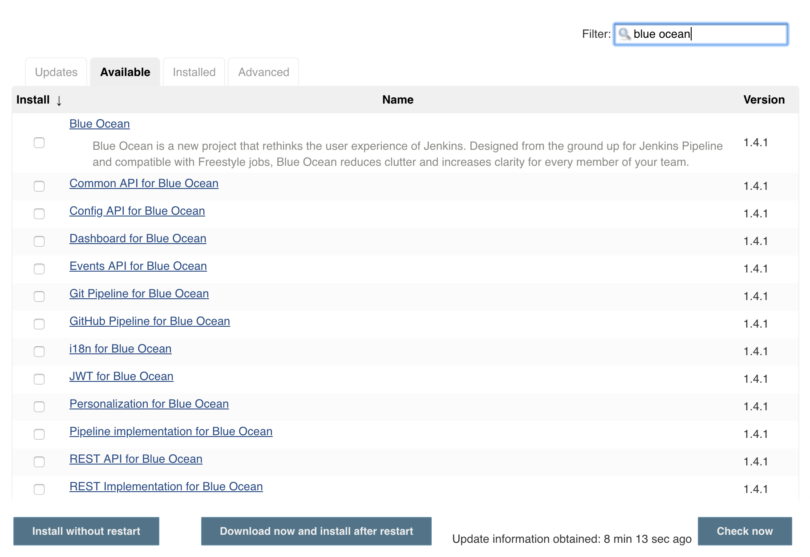
-
Marque a caixa de seleção do plug-in Blue Ocean na parte superior da coluna Instalar e clique no botão Baixar agora e instalar após reiniciar (recomendado) ou no botão Instalar sem reiniciar no final da página.
Notas:-
Não há necessidade de marcar as caixas de seleção dos outros plugins nesta lista filtrada porque o principal plug-in do Blue Ocean tem outras dependências de plug-in (constituindo o conjunto de plug-ins do Blue Ocean) que serão automaticamente selecionadas e instaladas quando você clicar em um desses " Instalar "botões.
-
Se você escolheu o botão Instalar sem reiniciar , pode ser necessário reiniciar o Jenkins para obter a funcionalidade completa do Blue Ocean.
-
Leia mais sobre como instalar e gerenciar plug -ins na página Gerenciando Plug-ins .
O Blue Ocean não requer configuração adicional após a instalação, e os projetos de Pipelines existentes e outros itens, como os de estilo livre, continuarão funcionando normalmente.
No entanto, esteja ciente de que a primeira vez que um
Pipeline é criado no Blue Ocean para um servidor Git específico (por exemplo, GitHub, Bitbucket ou um servidor Git comum), o Blue Ocean solicita credenciais para acessar seus repositórios no servidor Git para crie Pipelines com base nesses repositórios. Isso é necessário, pois o Blue Ocean pode gravar Jenkinsfiles em seus repositórios.
Como parte de Jenkins no Docker
O pacote de plugins Blue Ocean também é fornecido com o Jenkins como parte de uma imagem do Jenkins Docker ( jenkinsci/blueocean), disponível no repositório do Docker Hub .
Leia mais sobre como executar o Jenkins e o Blue Ocean dessa maneira na seção Docker da página Instalando o Jenkins .
Acessando o Blue Ocean
Depois que um ambiente Jenkins tiver o Blue Ocean instalado, depois de fazer login na UI clássica do Jenkins, você poderá acessar a UI do Blue Ocean clicando em Abrir Blue Ocean à esquerda.

Como alternativa, você pode acessar o Blue Ocean diretamente anexando /blueao final do URL do seu servidor Jenkins - por exemplo https://jenkins-server-url/blue.
Se sua instância do Jenkins:
-
já tiver projetos de pipeline existentes ou outros itens presentes, o Blue Ocean Dashboard será exibido.
-
é novo ou não possui projetos de pipeline ou outros itens configurados, o Blue Ocean exibe uma caixa Bem-vindo ao Jenkins com um botão Criar um novo pipeline que você pode usar para começar a criar um novo projeto de pipeline. Leia mais sobre isso em Criando um pipeline .

Barra de navegação
A interface do usuário do Blue Ocean possui uma barra de navegação na parte superior de sua interface, que permite acessar as diferentes visualizações e outros recursos do Blue Ocean.
A barra de navegação é dividida em duas seções - uma seção comum na parte superior da maioria das visualizações do Blue Ocean e uma seção contextual abaixo. A seção contextual é específica da página atual do Blue Ocean que você está visualizando.
A seção comum da barra de navegação inclui os seguintes botões:
-
Logotipo Jenkins - leva você ao Painel ou recarrega esta página se você já a estiver visualizando.
-
Pipelines - também leva você ao Painel, ou não faz nada se você já estiver visualizando o Painel. Este botão tem uma finalidade diferente quando você está visualizando uma página de detalhes da execução do Pipeline .
-
Administração - leva você para a página Gerenciar Jenkins da interface do usuário clássica do Jenkins.
Nota: Este botão não estará disponível se o usuário do Jenkins não tiver a permissão Administrar (configurada através da segurança baseada em Matrix ). Leia mais sobre isso na seção Autorização de Gerenciamento de segurança . -
Ir para o ícone clássico - leva você de volta à interface do usuário clássica do Jenkins. Leia mais sobre isso em Alternando para a interface do usuário clássica .
-
Logout - Desconecta seu usuário atual do Jenkins e retorna à página de login do Jenkins.
As visualizações que usam a barra de navegação padrão adicionarão outra barra abaixo dela com opções específicas para essa visualização. Algumas visualizações substituem a barra de navegação comum por uma especificamente adequada a essa visualização.
Mudando para a interface do usuário clássica
O Blue Ocean não suporta alguns recursos herdados ou administrativos do Jenkins que são necessários para alguns usuários.
Se você precisar deixar a experiência do usuário do Blue Ocean para acessar esses recursos, clique no ícone Ir para clássico na parte superior da seção comum da barra de navegação do Blue Ocean .

Clicar nesse botão leva você à página equivalente na interface do usuário clássica do Jenkins ou à página da interface do usuário clássica mais relevante que é paralela à página atual no Blue Ocean.
Criando um pipeline
Índice
O Blue Ocean facilita a criação de um projeto de Pipeline em Jenkins.
Um pipeline pode ser gerado a partir de um existente Jenkinsfileno controle de origem ou você pode usar o editor Blue Ocean Pipeline para criar um novo pipeline para você (como Jenkinsfileaquele que estará comprometido com o controle de origem).
Configurando seu projeto Pipeline
Para começar a configurar seu projeto Pipeline no Blue Ocean, no canto superior direito do Painel Blue Ocean , clique no botão Novo Pipeline .

Se sua instância do Jenkins for nova ou se não houver projetos do Pipeline ou outros itens configurados (e o Painel estiver vazio), o Blue Ocean exibirá uma caixa de mensagem Bem-vindo ao Jenkins , na qual você pode clicar no botão Criar um novo Pipeline para começar a configurar seu projeto do Pipeline .
Agora você tem a opção de criar seu novo projeto de Pipeline a partir de:
-
repositório no GitHub ou GitHub Enterprise
-
repositório no Bitbucket Cloud ou Bitbucket Server
Para um repositório Git
Para criar seu projeto de pipeline para um repositório Git, clique no botão Git em Onde você armazena seu código?

Na seção Conectar-se a um repositório Git , insira a URL do seu repositório Git no campo URL do Repositório .
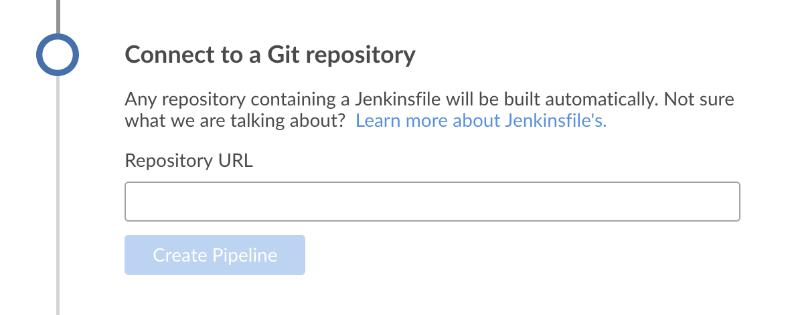
Agora você precisa especificar um repositório local ou remoto a partir do qual construir seu projeto Pipeline.
Repositório local
Se o seu URL for um caminho de diretório local (por exemplo, começando com uma barra /
como /home/cloned-git-repos/my-git-repo.git), você pode continuar clicando no botão
Criar Pipeline .
O Blue Ocean examinará as ramificações do seu repositório local em busca de um Jenkinsfile
e começará uma execução de Pipeline para cada ramificação que contenha a Jenkinsfile. Se o Blue Ocean não conseguir encontrar nenhum Jenkinsfile, você será solicitado a começar a criar um através do editor de Pipeline .
Repositórios locais geralmente são limitados ao acesso ao sistema de arquivos. Eles geralmente são visíveis apenas no nó principal. Sabe-se também que os repositórios locais exigem nomes de caminho mais complicados nos computadores Windows do que a maioria dos usuários deseja gerenciar. Os usuários são aconselhados a executar tarefas nos agentes, em vez de executá-las diretamente no mestre. Por esses motivos, use um repositório remoto em vez de um repositório local para obter a melhor experiência do Blue Ocean.
Repositório remoto
Como o editor Pipeline salva os Pipelines editados nos repositórios Git como
Jenkinsfiles, o Blue Ocean suporta apenas conexões com repositórios Git remotos através do protocolo SSH.
Se o seu URL for para um repositório Git remoto, assim que você começar a digitar o URL, comece com:
-
ssh://- por exemplo,ssh://gituser@git-server-url/git-server-repos-group/my-git-repo.git
ou -
user@host:path/to/git/repo.git- por exemplogituser@git-server-url:git-server-repos-group/my-git-repo.git,
O Blue Ocean gera automaticamente um par de chaves pública / privada SSH (ou apresenta um existente) para o usuário atual / conectado do Jenkins. Essa credencial é registrada automaticamente no Jenkins com os seguintes detalhes para esse usuário do Jenkins:
-
Domínio :
blueocean-private-key-domain -
ID :
jenkins-generated-ssh-key -
Nome :
<jenkins-username> (jenkins-generated-ssh-key)
Você precisa garantir que esse par de chaves pública / privada SSH tenha sido registrado no seu servidor Git antes de continuar. Se você ainda não fez isso, siga estas 2 etapas. Caso contrário, continue .
-
Configure o componente de chave pública SSH desse par de chaves (que você pode copiar e colar da interface Blue Ocean) para a conta de usuário do servidor Git remoto (por exemplo, dentro do
authorized_keysarquivo dogituser/.sshdiretório da máquina ).
Nota: Esse processo permite que seu usuário Jenkins acesse os repositórios aos quais a conta de usuário do servidor Git (por exemplogituser) tem acesso. Leia mais sobre isso em Configurando o servidor da documentação do Pro Git . -
Quando terminar, retorne à interface do Blue Ocean.
Clique no botão Criar pipeline .
O Blue Ocean examinará as ramificações do seu repositório local em busca de um Jenkinsfile
e começará uma execução de Pipeline para cada ramificação que contenha a Jenkinsfile. Se o Blue Ocean não conseguir encontrar nenhum Jenkinsfile, você será solicitado a começar a criar um através do editor de Pipeline .
Para um repositório no GitHub
Para criar seu projeto de pipeline diretamente para um repositório no GitHub, clique no botão GitHub em Onde você armazena seu código?
Na seção Conectar-se ao GitHub , insira seu token de acesso GitHub no campo
Seu token de acesso GitHub .
Se você configurou o Blue Ocean anteriormente para se conectar ao GitHub usando um token de acesso pessoal, o Blue Ocean o levará diretamente para a
escolha da sua conta / organização do GitHub e
etapas do repositório abaixo.

Se você não possui um token de acesso ao GitHub, clique no link Criar uma chave de acesso aqui para abrir o GitHub na página Novo token de acesso pessoal .
Crie seu token de acesso
-
Na nova guia, entre na sua conta do GitHub (se necessário) e, na página Novo Token de Acesso Pessoal do GitHub , especifique uma breve descrição do Token para o seu token de acesso do GitHub (por exemplo
Blue Ocean).
Nota: Um token de acesso geralmente é uma sequência alfanumérica que representa sua conta do GitHub, além de permissões para acessar vários recursos e áreas do GitHub por meio da sua conta do GitHub. O novo processo de token de acesso (acionado através do link Criar uma chave de acesso aqui acima) tem as permissões apropriadas pré-selecionadas, o que a Blue Ocean exige para acessar e interagir com sua conta do GitHub. -
Role para baixo até o final da página e clique em Gerar token .
-
Na página resultante de tokens de acesso pessoal , copie seu token de acesso recém-gerado.
-
De volta ao Blue Ocean, cole o token de acesso no campo Your to GitHub access token e clique em Connect .
Seu usuário atual / conectado do Jenkins agora tem acesso à sua conta do GitHub (fornecida pelo seu token de acesso), então agora você pode escolher sua conta / organização e repositório do GitHub .
Jenkins registra essa credencial com os seguintes detalhes para esse usuário:-
Domínio :
blueocean-github-domain -
ID :
github -
Nome :
<jenkins-username>/****** (GitHub Access Token)
-
Escolha sua conta / organização e repositório GitHub
Nesse momento, o Blue Ocean solicita que você escolha sua conta do GitHub ou uma organização da qual você seja membro, bem como o repositório que ele contém a partir do qual você criará seu projeto de Pipeline.
-
Na organização A que o repositório pertence? seção, clique em:
-
Sua conta do GitHub para criar um projeto de Pipeline para um de seus próprios repositórios do GitHub ou que você tenha bifurcado de outros lugares no GitHub.
-
Uma organização da qual você é membro para criar um projeto de Pipeline para um repositório GitHub localizado nessa organização.
-
-
Na seção Escolha um repositório , clique no repositório (na sua conta ou organização do GitHub) a partir da qual você criará seu projeto de Pipeline.
Dica: Se sua lista de repositórios for longa, você poderá filtrar essa lista usando a opção Pesquisar .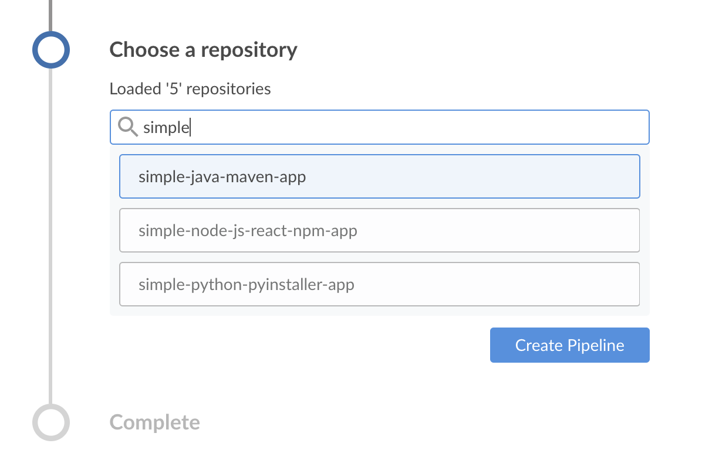
-
Clique em Criar pipeline .
O Blue Ocean examinará as ramificações do seu repositório local em busca de umJenkinsfilee começará uma execução de Pipeline para cada ramificação que contenha aJenkinsfile. Se o Blue Ocean não conseguir encontrar nenhumJenkinsfile, você será solicitado a começar a criar um através do editor de Pipeline (clicando em Criar Pipeline novamente).
Nota: Sob o capô, um projeto de Pipeline criado através do Blue Ocean é na verdade "Pipeline de várias filiais". Portanto, o Jenkins procura a presença de pelo menos um arquivo Jenkins em qualquer ramo do seu repositório.
Para um repositório na Bitbucket Cloud
Para criar seu projeto de pipeline diretamente para um repositório Git ou Mercurial no Bitbucket Cloud, clique no botão Bitbucket Cloud em Onde você armazena seu código?
Na seção Conectar ao Bitbucket , digite seu endereço de e-mail e senha do Bitbucket nos campos Nome de Usuário e Senha , respectivamente. Observe que:
-
Se você configurou anteriormente a Blue Ocean para se conectar ao Bitbucket com seu endereço de e-mail e senha, a Blue Ocean o levará diretamente para a escolha da sua conta / equipe e repositório Bitbucket, abaixo.
-
Se você inseriu essas credenciais, o Jenkins as registra com os seguintes detalhes para esse usuário do Jenkins:
-
Domínio :
blueocean-bitbucket-cloud-domain -
ID :
bitbucket-cloud -
Nome :
<bitbucket-user@email.address>/****** (Bitbucket server credentials)
-
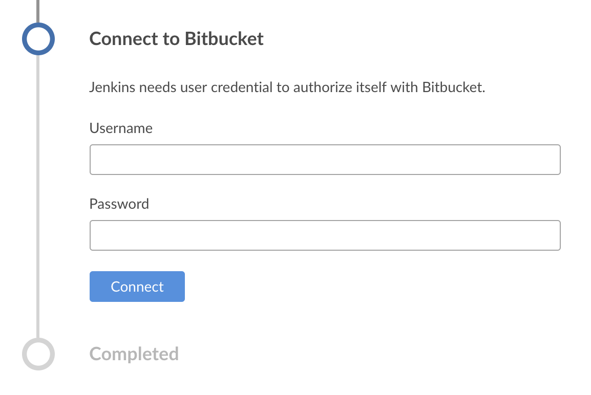
Clique em Conectar e seu usuário Jenkins atual / conectado agora terá acesso à sua conta Bitbucket. Agora você pode escolher sua conta / equipe e repositório Bitbucket .
Escolha sua conta / equipe e repositório Bitbucket
Nesse momento, a Blue Ocean solicita que você escolha sua conta Bitbucket ou uma equipe da qual você seja membro, bem como o repositório que ela contém a partir do qual você criará seu projeto de Pipeline.
-
Na equipe A que pertence o repositório? seção, clique em:
-
Sua conta Bitbucket para criar um projeto de Pipeline para um de seus próprios repositórios Bitbucket ou um que você bifurcou de outro lugar no Bitbucket.
-
Uma equipe da qual você é membro para criar um projeto de Pipeline para um repositório Bitbucket localizado nessa equipe.
-
-
Na seção Escolha um repositório , clique no repositório (na sua conta ou equipe Bitbucket) a partir da qual você criará seu projeto de Pipeline.
Dica: Se sua lista de repositórios for longa, você poderá filtrar essa lista usando a opção Pesquisar . -
Clique em Criar pipeline .
O Blue Ocean examinará as ramificações do seu repositório local em busca de umJenkinsfilee começará uma execução de Pipeline para cada ramificação que contenha aJenkinsfile. Se o Blue Ocean não conseguir encontrar nenhumJenkinsfile, você será solicitado a começar a criar um através do editor de Pipeline (clicando em Criar Pipeline novamente).
Nota: Sob o capô, um projeto de Pipeline criado através do Blue Ocean é na verdade "Pipeline de várias filiais". Portanto, o Jenkins procura a presença de pelo menos um arquivo Jenkins em qualquer ramo do seu repositório.
painel de controle
O "Painel" do Blue Ocean é a exibição padrão mostrada quando você abre o Blue Ocean e mostra uma visão geral de todos os projetos de Pipeline configurados em uma instância do Jenkins.
O Painel consiste em uma barra de navegação azul na parte superior, na lista Pipelines , bem como na lista Favoritos .

Barra de navegação
O Painel inclui a barra de navegação azul na parte superior da interface.
Essa barra é dividida em duas seções - uma seção comum na parte superior e uma seção contextual abaixo. A seção contextual muda dependendo da página atual do Blue Ocean que você está visualizando.
Ao visualizar o Painel, a seção contextual da barra de navegação inclui:
-
Pesquise pipelines , para filtrar a lista Pipelines para mostrar itens que contêm o texto digitado nesse campo.
-
Botão Novo pipeline , que inicia o processo de criação de um pipeline .
Lista de Pipelines
A lista "Pipelines" é a lista padrão do painel e, ao acessar o Blue Ocean pela primeira vez, esta é a única lista mostrada no painel.
Esta lista mostra o estado geral de cada Pipeline configurado na instância do Jenkins (que também pode incluir outros itens do Jenkins). Para um determinado item desta lista, as seguintes informações são indicadas:
-
Do item NOME ,
-
SAÚDE do item ,
-
Os números de BRANCH es e solicitações pull ( PRs ) do repositório de controle de origem do Pipeline que estão passando ou com falha e
-
Uma estrela indicando se a ramificação padrão / principal do item foi ou não adicionada manualmente à lista de Favoritos do usuário atual do Jenkins .
Clicar na estrela de um item alterna entre:
-
Adicionando a ramificação padrão do repositório do item à lista de Favoritos do usuário atual (indicada por um sólido "★") e
-
Removendo a ramificação padrão do item desta lista (indicada por um "☆" destacado).
Clicar em um item na lista Pipelines exibirá a Exibição de atividade desse item .
Lista de favoritos
A lista de Favoritos aparece acima da lista de Pipelines padrão do Painel quando pelo menos um Pipeline / item está presente na lista de Favoritos do usuário.
Esta lista fornece informações e ações importantes para um subconjunto principal dos itens acessíveis do usuário na lista Pipelines . Essas informações importantes incluem o status atual da execução de um item e sua ramificação do repositório, além de outros detalhes sobre a execução do item, incluindo o nome da ramificação, a parte inicial do hash de confirmação e a hora da última execução. Os itens desta lista também incluem ícones clicáveis para executar ou executar novamente o item na ramificação do repositório indicada.
Você só deve adicionar um item (ou uma das ramificações específicas do repositório) à sua lista de Favoritos se precisar examinar a ramificação desse item regularmente. A adição de uma ramificação específica de um item à sua lista de Favoritos pode ser feita na Visualização de Atividade do item .
O Blue Ocean adiciona automaticamente ramificações ou PRs a essa lista quando eles contêm uma execução que possui alterações de autoria do usuário atual.
Você também pode remover itens manualmente da sua lista de Favoritos clicando no sólido "★" nesta lista. Quando o último item é removido desta lista, a lista é removida da interface.
Clicar em um item na lista Favoritos abrirá os detalhes da execução do Pipeline para a execução mais recente na ramificação do repositório ou PR indicado.
Ícones de saúde
O Blue Ocean representa a integridade geral de um Pipeline / item ou de uma das ramificações de seu repositório usando ícones climáticos, que mudam dependendo do número de compilações recentes que foram aprovadas.
Os ícones de integridade no Painel representam a integridade geral do Pipeline, enquanto os ícones de integridade na guia Ramificações da Exibição de Atividade representam a integridade geral de cada ramificação.
| Ícone | Saúde |
|---|---|
Ensolarado , mais de 80% das corridas passam |
|
|
Parcialmente ensolarado , 61% a 80% das corridas passando |
|
Nublado , 41% a 60% das corridas passando |
|
Chovendo , 21% a 40% das corridas passando |
Storm , menos de 21% das corridas passando |


Vista de atividade
|
Esta seção é um trabalho em andamento. Quer ajudar? Confira a lista de discussão jenkinsci-docs . Para outras maneiras de contribuir com o projeto Jenkins, consulte esta página sobre participação e contribuição . |
A exibição de atividade do Blue Ocean mostra todas as atividades relacionadas a um pipeline.

Barra de navegação
A Exibição de atividade inclui a barra de navegação padrão na parte superior, com uma barra de navegação local abaixo dela. A barra de navegação local inclui:
-
Nome do Pipeline - Clicar nesse botão exibe a guia de atividade padrão
-
Alternar Favoritos - Clicar no símbolo "Favorito" (um contorno em estrela "☆") adiciona um ramo à lista de favoritos mostrada na lista "Favoritos" do Painel para este usuário.
-
Guias ( atividade , ramificações , solicitações de recebimento ) - Clicar em uma delas exibirá a guia da tela Atividade.
Atividade
A guia padrão da Exibição de atividade, a guia "Atividade", mostra uma lista das últimas execuções concluídas ou em andamento. Cada linha da lista mostra o status da execução, número de identificação, informações de confirmação, duração e quando a execução foi concluída. Clicar em uma execução exibirá os detalhes da execução do pipeline para essa execução. As execuções "Em andamento" podem ser canceladas nesta lista clicando no símbolo "Parar" (um quadrado "◼" dentro de um círculo). As execuções concluídas podem ser executadas novamente clicando no símbolo "Re-run" (uma seta no sentido anti-horário "↺"). A lista pode ser filtrada por ramificação ou solicitação de recebimento clicando no menu suspenso "ramificação" no cabeçalho da lista.
Esta lista não permite que as corridas sejam editadas ou marcadas como favoritas. Essas ações podem ser realizadas na guia " ramificações ".
Ramos
A guia "Ramificações" mostra uma lista de todas as ramificações que têm uma execução concluída ou em andamento no pipeline atual. Cada linha da lista corresponde a uma ramificação no controle de origem, [ 1 ] mostrando a integridade geral da ramificação com base nas execuções recentes, status da execução mais recente, número de identificação, informações de confirmação, duração e quando a execução foi concluída.

Clicar em uma ramificação nesta lista exibirá os Detalhes da execução do pipeline para a última execução concluída ou em andamento dessa ramificação. As execuções "Em andamento" podem ser abortadas dessa lista clicando no símbolo "Parar" (um quadrado "◼" dentro de um círculo). Solicitações pull cuja última execução foi concluída podem ser executadas novamente clicando no símbolo "Reproduzir" (um triângulo "▶" dentro de um círculo). Clicar no símbolo "Editar" (semelhante a um lápis "✎") abre o editor de pipeline no Pipeline para esse braach. Clicar no símbolo "Favorito" (um contorno em estrela "☆") adiciona um ramo à lista de favoritos mostrada na lista "Favoritos" do Painel para este usuário. Uma filial favorita mostrará uma estrela sólida "★"
Solicitações Pull
A guia "Solicitações de recebimento" mostra uma lista de todas as solicitações de recebimento do pipeline atual que têm uma execução concluída ou em andamento. (Alguns sistemas de controle de origem chamam isso de "Solicitações de mesclagem", outros não os suportam.) Cada linha da lista corresponde a uma solicitação de recebimento no controle de origem, mostrando o status da execução mais recente, número de identificação, informações de confirmação, duração e quando a execução foi concluída.

O Blue Ocean exibe solicitações de recebimento separadamente das ramificações, mas, caso contrário, a lista de solicitações de recepção se comporta de maneira semelhante à lista de ramificações. Clicar em uma solicitação de recebimento nesta lista exibirá os Detalhes da execução do pipeline para a execução mais recente concluída ou em andamento dessa solicitação de recebimento. As execuções "Em andamento" podem ser abortadas dessa lista clicando no símbolo "Parar" (um quadrado "◼" dentro de um círculo). Solicitações pull cuja última execução foi concluída podem ser executadas novamente clicando no símbolo "Reproduzir" (um triângulo "▶" dentro de um círculo). A solicitação pull não exibe "Heath Icons" e não pode ser editada ou marcada como favorita.
| Por padrão, quando uma solicitação de recebimento é fechada, o Jenkins removerá o pipeline do Jenkins (a ser limpo posteriormente) e as execuções para esse pedido de solicitação não estarão mais acessíveis no Jenkins. Isso pode ser alterado alterando a configuração do trabalho subjacente do Pipeline de várias filiais. |
Exibição de detalhes da execução do pipeline
|
Esta seção é um trabalho em andamento. Quer ajudar? Confira a lista de discussão jenkinsci-docs . Para outras maneiras de contribuir com o projeto Jenkins, consulte esta página sobre participação e contribuição . |
Índice
A visualização Detalhes da execução do pipeline do Blue Ocean mostra as informações relacionadas a uma única execução do pipeline e permite que os usuários editem ou reproduzam essa execução. Abaixo está uma visão geral detalhada das partes da visualização Detalhes da Execução.

-
Status da execução - Este ícone, juntamente com a cor de fundo da barra de menus superior, indica o status dessa execução do Pipeline.
-
Nome do Pipeline - O nome do Pipeline dessa execução.
-
Número da Execução - O número de identificação para esta execução do Pipeline. Números de identificação exclusivos para cada Filial (e solicitação de recebimento) de um pipeline.
-
Seletor de guias - Veja uma das guias detalhadas para esta execução. O padrão é " Pipeline ".
-
Re-run Pipeline - Execute o Pipeline dessa execução novamente.
-
Editar pipeline - abra o pipeline dessa execução no Pipeline Editor .
-
Vá para Clássico - Alterne para a visualização da interface do usuário "Clássico" dos detalhes desta execução.
-
Fechar detalhes - fecha a visualização Detalhes e retorna o usuário à << atividade, visualização Atividade> deste pipeline.
-
Filial ou Pull Request - o pedido ramo ou puxar para esta corrida.
-
Confirmar ID - Confirme o ID para esta execução.
-
Duração - a duração desta execução.
-
Tempo concluído - Há quanto tempo a execução foi concluída.
-
Alterar autor - Nomes dos autores com alterações nesta execução.
-
Exibição de guia - mostra as informações da guia selecionada.
Status de execução do pipeline
O Blue Ocean facilita a visualização do status da execução atual do pipeline, alterando a cor da barra de menus superior para corresponder ao status: azul para "Em andamento", verde para "Aprovado", amarelo para "Instável", vermelho para " Falha "e cinza para" Abortado ".
Casos especiais
O Blue Ocean é otimizado para trabalhar com Pipelines no Source Control, mas também pode exibir detalhes de outros tipos de projetos. A Blue Ocean oferece as mesmas guias para todos os tipos de projetos suportados, mas essas guias podem exibir informações diferentes.
Pipelines fora do Souce Control
Para os pipelines que não são baseados no controle de origem, o Blue Ocean ainda mostra o "ID de confirmação", "Filial" e "Alterações", mas esses campos são deixados em branco. Nesse caso, a barra de menus superior não inclui a opção "Editar".
Projetos Freestyle
Para projetos de Freestyle, o Blue Ocean ainda oferece as mesmas guias , mas a guia Pipeline mostra apenas a saída do log do console. As opções "Executar novamente" ou "Editar" também não são mostradas na barra de menus superior.
Guias
Cada uma das guias da exibição Detalhes da corrida fornece informações sobre um aspecto específico de uma corrida.
Pipeline
Essa é a guia padrão e fornece uma visão geral do fluxo dessa execução de pipeline. Ele mostra cada estágio e ramificação paralela, as etapas nesses estágios e a saída do console dessas etapas. A imagem geral acima mostra uma execução bem-sucedida do Pipeline. Se uma etapa específica durante a execução falhar, essa guia será automaticamente padronizada para mostrar o log do console da etapa com falha. A imagem abaixo mostra uma falha na execução.


Testes
A guia "Testes" mostra informações sobre os resultados do teste para esta execução. Essa guia conterá apenas informações se uma etapa de publicação do resultado do teste, como a etapa "Publicar resultados do teste JUnit" ( junit). Se nenhum resultado for registrado, esta tabela dirá que, se todos os testes forem aprovados, essa guia relatará o número total de testes aprovados. No caso de falhas, a guia exibirá detalhes dos logs das falhas, como mostrado abaixo.

Quando a execução anterior teve falhas e a execução atual corrige essas falhas, essa guia notará os textos corrigidos e exibirá seus logs também.


Editor de Pipeline
|
Esta seção é um trabalho em andamento. Quer ajudar? Confira a lista de discussão jenkinsci-docs . Para outras maneiras de contribuir com o projeto Jenkins, consulte esta página sobre participação e contribuição . |
Índice
O Blue Ocean Pipeline Editor é a maneira mais simples de começar a criar pipelines no Jenkins. Também é uma ótima maneira de os usuários existentes do Jenkins começarem a adotar o Pipeline.
O editor permite que os usuários criem e editem pipelines declarativos, adicionem estágios e tarefas paralelas que podem ser executadas ao mesmo tempo, dependendo de suas necessidades. Quando concluído, o editor salva o Pipeline em um repositório de código-fonte como um Jenkinsfile. Se o Pipeline precisar ser alterado novamente, o Blue Ocean facilita o retorno ao editor visual para modificar o Pipeline a qualquer momento.

Iniciando o Editor
Para usar o editor, o usuário deve primeiro criar um pipeline no Blue Ocean ou ter um ou mais pipelines existentes já criados no Jenkins. Se estiver editando um pipeline existente, as credenciais para esse pipeline deverão permitir o envio de alterações no repositório de destino.
O editor pode ser iniciado via:
-
Botão "Novo pipeline" do painel
-
Exibição de atividade para execução única
-
Detalhes da execução do pipeline
Limitações
-
Somente pipelines declarativos baseados em SCM
-
As credenciais devem ter permissão de gravação
-
Não tem paridade total com o pipeline declarativo
-
Pipeline reordenado e comentários removidos
Barra de navegação
O Editor de Pipeline inclui a barra de navegação padrão na parte superior, com uma barra de navegação local abaixo dela. A barra de navegação local inclui:
-
Nome do Pipeline - Isso incluirá a ramificação dependendo ou como
-
Cancelar - descartar as alterações feitas no pipeline.
-
Salvar - abra a caixa de diálogo Salvar pipeline .
Configurações de pipeline
Por padrão, o lado direito do editor mostra as "Configurações do pipeline". É possível acessar esta planilha clicando em qualquer lugar do editor de Palco que não seja um Palco ou um dos botões "Adicionar Palco".
Agente
A seção "Agente" controla qual agente o Pipeline usará. É o mesmo que a diretiva "agente" .
Meio Ambiente
As seções "Ambiente" nos permitem definir variáveis de ambiente para o Pipeline. É o mesmo que a diretiva "ambiente" .
Editor de palco
A tela do editor do lado esquerdo contém o editor de estágios, usado para criar os estágios de um pipeline.

É possível adicionar estágios ao pipeline clicando no botão "+" à direita de um estágio existente. Os estágios paralelos podem ser adicionados clicando no botão "\ +" abaixo de um estágio existente. Os estágios podem ser excluídos usando o menu de contexto na folha de configuração do estágio .
O editor do palco exibirá o nome de cada palco depois que ele for definido. Os estágios que contêm informações incompletas ou inválidas exibem um símbolo de aviso. Os pipelines podem ter erros de validação enquanto estão sendo editados, mas não podem ser salvos até que os erros sejam corrigidos.

Configuração do estágio
A seleção de um estágio no editor de estágio abrirá a planilha "Configuração do estágio" no lado direito. Aqui podemos alterar o nome do palco, excluir o palco e adicionar etapas ao palco.

O nome do Palco pode ser definido na parte superior da folha Configuração do Palco. O menu de contexto (três pontos no canto superior direito) pode ser usado para excluir o estágio atual. Clicar em "Adicionar etapa" exibirá a lista de tipos de etapas disponíveis com uma barra de pesquisa na parte superior. As etapas podem ser excluídas usando o menu de contexto de contexto na folha de configuração da etapa . Adicionar uma etapa ou selecionar uma etapa existente abrirá a folha de configuração da etapa .

Configuração da etapa
Selecionar uma etapa da folha de configuração do Palco abrirá a folha de configuração da etapa.

Esta planilha será diferente dependendo do tipo de etapa, contendo os campos ou controles necessários. O nome da etapa não pode ser alterado. O menu de contexto (três pontos no canto superior direito) pode ser usado para excluir a etapa atual. Os campos que contêm informações incompletas ou inválidas exibem um símbolo de aviso. Os pipelines podem ter erros de validação enquanto estão sendo editados, mas não podem ser salvos até que os erros sejam corrigidos.

Caixa de diálogo Salvar Pipeline
Para ser executada, as alterações em um Pipeline devem ser salvas no controle de origem A caixa de diálogo "Save Pipeline" controla o salvamento das alterações no controle de origem.

Uma descrição útil das alterações pode ser adicionada ou deixada em branco. A caixa de diálogo também suporta salvar alterações na mesma ramificação ou inserir uma nova ramificação na qual salvar. Clicar em "Salvar e executar" salvará as alterações no pipeline como uma nova confirmação, iniciará uma nova execução do pipeline com base nessas alterações e navegará para a Exibição de atividade desse pipeline.
Gerenciando Jenkins
Subseções dos capítulos
- Configurando o sistema
- Recursos Jenkins controlados com propriedades do sistema
- Alterar fuso horário do sistema
- Gerenciando a segurança
- Ferramentas de gerenciamento
- Gerenciando plugins
- Jenkins CLI
- Console de scripts
- Scripts Groovy Hook
- Gerenciando nós
- Aprovação de script em processo
- Gerenciando usuários
- Temas para interface do usuário
Este capítulo aborda como gerenciar e configurar os mestres e nós do Jenkins.
Este capítulo é destinado aos administradores da Jenkins. Usuários mais experientes podem achar essas informações úteis, mas apenas na medida em que entenderão o que é e o que os administradores não podem fazer. Seções individuais podem assumir o conhecimento das informações das seções anteriores, mas essas suposições serão explicitamente chamadas e referenciadas.
Se você é um administrador do sistema e deseja aprender como fazer backup, restaurar, manter como servidores e nós Jenkins , consulte Administração do sistema Jenkins .
Para obter uma visão geral do conteúdo no Jenkins User Handbook, consulte Visão geral do Handbook do usuário .
Configurando o sistema
|
Esta seção é um trabalho em andamento. Quer ajudar? Confira a lista de discussão jenkinsci-docs . Para outras maneiras de contribuir com o projeto Jenkins, consulte esta página sobre participação e contribuição . |
Recursos Jenkins controlados com propriedades do sistema
O Jenkins possui vários recursos "ocultos" que podem ser ativados com as propriedades do sistema. Esta página documenta muitos deles e explica como configurá-los em sua instância.
Algumas propriedades do sistema relacionadas à biblioteca Remoting usadas para comunicação entre mestre e agentes estão documentadas no repositório desse componente .
Uso
As propriedades do sistema são definidas passando -Dproperty=valuepara a javalinha de comando para iniciar o Jenkins. Certifique-se de passar todos esses argumentos antes do -jarargumento, caso contrário eles serão ignorados. Exemplo:
java -Dhudson.footerURL=http://example.org -jar jenkins.warA seguir, são listadas as propriedades e a versão do Jenkins em que foram introduzidas.
-
Property- nome da propriedade Java -
Padrão - valor padrão se não definido explicitamente
-
Desde - A versão do Jenkins a propriedade foi introduzida em
-
Descrição - Outras notas
Propriedades em Jenkins Core
| Devido ao grande número de propriedades do sistema usadas, geralmente apenas adicionadas como uma "válvula de segurança" ou "escotilha de escape" no caso de uma alteração causar problemas, não se espera que esta lista esteja completa. |
-
debug.YUI -
Desde: Não documentadoPadrão:Descrição:
falseSe os arquivos JS minified (
false) ou debug (true) devem ser usados para a biblioteca YUI. -
executable-war -
Desde: Não documentadoPadrão:Descrição:
Caminho para
jenkins.warquando chamado comojava -jar jenkins.war, indefinido de outra forma.Este é o caminho
jenkins.ware definido peloexecutable-warwrapper quando chamado usandojava -jar jenkins.war. Isso permite que o Jenkins encontre seu próprio.wararquivo e, por exemplo, substitua-o para aplicar uma atualização. Se indefinido, Jenkins não oferecerá, por exemplo, atualização própria. -
hudson.bundled.plugins -
Desde: Não documentadoPadrão:Descrição:
Indefinido
Especifique um local para plug-ins adicionais agrupados durante o desenvolvimento do plug-in (
hpi:run). Não há motivo para isso ser definido por um administrador. -
hudson.ClassicPluginStrategy.noBytecodeTransformer -
Desde: Não documentadoPadrão:Descrição:
falseDesative o transformador de bytecode que mantém a compatibilidade no tempo de execução após alterar as APIs Java públicas.
-
hudson.ClassicPluginStrategy.useAntClassLoader -
Desde: 1.316Padrão:Descrição:
falseNão utilizado desde 1.527.
-
hudson.cli.CLI.pingInterval -
Desde: 2.199Padrão:Descrição:
3000Intervalo de ping da CLI HTTP do lado do cliente em milissegundos. Defina no cliente CLI (
java -jar jenkins-cli.jar), não no processo do servidor Jenkins. -
hudson.ConsoleNote.INSECURE -
Desde: 2.44 / 2.32.2Padrão:Descrição:
falseSe deve carregar notas do console não assinadas. Consulte SECURITY-382 no Comunicado de segurança da Jenkins 2017-02-01 .
-
hudson.consoleTailKB -
Desde: Não documentadoPadrão:Descrição:
150Quantos KB de log do console serão exibidos na visualização padrão do console. Esta propriedade não tem efeito de Jenkins 2.4 (inclusive) até 2.98 / 2.89.3 (exclusivo), consulte JENKINS-48593.
-
hudson.diagnosis.HudsonHomeDiskUsageChecker.freeSpaceThreshold -
Desde: 1.339Padrão:Descrição:
1073741824(1 GB, até 2,39),10737418240(10 GB, de 2,40)Se houver menos do que essa quantidade de espaço livre em disco, em bytes, no disco com o diretório inicial do Jenkins e o disco estiver 90% ou mais cheio, um aviso será exibido aos administradores.
-
hudson.diyChunking -
Desde: Não documentadoPadrão:Descrição:
falseDefina como
truese o contêiner do servlet não suportar codificação em blocos. -
hudson.DNSMultiCast.disabled -
Desde: 1.359Padrão:Descrição:
falseaté 2.218,trueem 2.219Defina como
truepara desativar o multicast DNS. Não tem efeito desde 2.220, pois o recurso foi removido. Consulte SECURITY-1641 -
hudson.FilePath.VALIDATE_ANT_FILE_MASK_BOUND -
Desde: 1.592Padrão:Descrição:
10000Máx. número de operações para validar uma máscara de arquivo (por exemplo, padrão para arquivar artefatos).
-
Desde: 1.416Padrão:Descrição:
https://jenkins.ioPermite ajustar o URL exibido na parte inferior da interface do usuário de Jenkins
-
hudson.Functions.autoRefreshSeconds -
Desde: 1.365Padrão:Descrição:
10Número de segundos entre as recargas quando a atualização automática está ativada. Obsoleto desde que o recurso foi removido no Jenkins 2.223.
-
hudson.Functions.hidingPasswordFields -
Desde: 2.205Padrão:Descrição:
trueO Jenkins 2.205 e as tentativas mais recentes de impedir que os navegadores ofereçam o preenchimento automático dos campos do formulário de senha usando um controle de senha personalizado. Definir isso para
falsereverter para o comportamento herdado do uso principalmente dos campos de formulário de senha padrão. -
hudson.lifecycle -
Desde: Não documentadoPadrão:Descrição:
determinado automaticamente com base no ambiente, consulte
hudson.lifecycle.LifecycleEspecifique o nome completo da classe para a implementação do Ciclo de Vida substituir o padrão. Consulte a documentação para nomes de classes.
-
hudson.logging.LogRecorderManager.skipPermissionCheck -
Desde: 2.121.3 e 2.138Padrão:Descrição:
falseDesative a proteção de segurança para acessar o LogRecorderManager Stapler. Possivelmente inseguro, consulte o boletim de segurança 2018-12-05 .
-
hudson.Main.development -
Desde: Não documentadoPadrão:Descrição:
falseem produção,trueem desenvolvimentoIsso é definido
truepelas ferramentas de desenvolvimento para identificar quando o Jenkins está sendo executado viajetty:runouhpi:run. Pode ser usado para distinguir entre uso de desenvolvimento e produção; usado com mais destaque para ignorar o assistente de configuração ao executar com um diretório inicial vazio do Jenkins durante o desenvolvimento. -
hudson.Main.timeout -
Desde: Não documentadoPadrão:Descrição:
15000Ao usar a
jenkins-core.jarpartir da CLI, este é o tempo limite da conexão que se conecta ao Jenkins para relatar um resultado da compilação. -
hudson.matrix.MatrixConfiguration.useShortWorkspaceName -
Desde: Não documentadoPadrão:Descrição:
falseUse nomes mais curtos, mas enigmáticos, nos diretórios da área de trabalho de construção da matriz. Evita problemas com limite de 256 caracteres nos caminhos do Cygwin, problemas de profundidade do caminho no Windows e problemas de metacaracteres do shell com expressões de rótulo na maioria das plataformas. Veja JENKINS-25783 .
-
hudson.model.AbstractItem.skipPermissionCheck -
Desde: 2.121.3 / 2.138Padrão:Descrição:
falseDesative a proteção de segurança relacionada ao roteamento do grampeador para AbstractItem. Possivelmente inseguro, consulte o boletim de segurança 2018-12-05 .
-
hudson.model.Api.INSECURE -
Desde: 1.502Padrão:Descrição:
falseDefina para
truepermitir o acesso à API remota do Jenkins de maneira insegura. Veja SEGURANÇA-47. Descontinuado, use, por exemplo, Lista de permissões do solicitante seguro . -
hudson.model.AsyncAperiodicWork.logRotateMinutes -
Desde: 1.651Padrão:Descrição:
1440O número de minutos após os quais tentar girar o arquivo de log usado por qualquer extensão AsyncAperiodicWork. Para controle refinado de uma extensão específica, você pode usar a propriedade de sistema FullyQualifiedClassName .logRotateMinutes para afetar apenas uma extensão específica. Não é esperado que você precise alterar esses padrões
-
hudson.model.AsyncAperiodicWork.logRotateSize -
Desde: 1.651Padrão:Descrição:
-1Ao iniciar uma nova execução de qualquer extensão AsyncAperiodicWork, se esse valor não for negativo e o arquivo de log existente for maior que o número especificado de bytes, o arquivo de log será girado. Para controle refinado de uma extensão específica, você pode usar a propriedade de sistema FullyQualifiedClassName .logRotateSize para afetar apenas uma extensão específica. Não é esperado que você precise alterar esses padrões
-
hudson.model.AsyncPeriodicWork.logRotateMinutes -
Desde: 1.651Padrão:Descrição:
1440O número de minutos após os quais tentar girar o arquivo de log usado por qualquer extensão AsyncPeriodicWork. Para controle refinado de uma extensão específica, você pode usar a propriedade de sistema FullyQualifiedClassName .logRotateMinutes para afetar apenas uma extensão específica. Não é esperado que você precise alterar esses padrões
Algumas implementações que podem ser configuradas individualmente (consulte FullyQualifiedClassName acima):
-
hudson.model.WorkspaceCleanupThread -
hudson.model.FingerprintCleanupThread -
hudson.slaves.ConnectionActivityMonitor -
jenkins.DailyCheck -
jenkins.model.BackgroundGlobalBuildDiscarder -
jenkins.telemetry.Telemetry$TelemetryReporter
-
-
hudson.model.AsyncPeriodicWork.logRotateSize -
Desde: 1.651Padrão:Descrição:
-1Ao iniciar uma nova execução de qualquer extensão AsyncPeriodicWork, se esse valor não for negativo e o arquivo de log existente for maior que o número especificado de bytes, o arquivo de log será girado. Para controle refinado de uma extensão específica, você pode usar a propriedade de sistema FullyQualifiedClassName .logRotateSize para afetar apenas uma extensão específica. Não é esperado que você precise alterar esses padrões
Algumas implementações que podem ser configuradas individualmente (consulte FullyQualifiedClassName acima):
-
hudson.model.WorkspaceCleanupThread -
hudson.model.FingerprintCleanupThread -
hudson.slaves.ConnectionActivityMonitor -
jenkins.DailyCheck -
jenkins.model.BackgroundGlobalBuildDiscarder -
jenkins.telemetry.Telemetry$TelemetryReporter
-
-
hudson.model.DirectoryBrowserSupport.allowSymlinkEscape -
Desde: 2.154 e 2.138.4Padrão:Descrição:
falseEscotilha de escape para SECURITY-904 .
-
hudson.model.DirectoryBrowserSupport.CSP -
Desde: 1.625.3, 1.641Padrão:Descrição:
sandbox; default-src 'none'; image-src 'self'; style-src 'self';Determina o cabeçalho da Política de Segurança de Conteúdo enviado para arquivos estáticos servidos por Jenkins. Afeta apenas instâncias que não possuem um URL raiz de recurso configurado. Consulte Configurando a política de segurança de conteúdo para obter mais detalhes.
-
hudson.model.DownloadService$Downloadable.defaultInterval -
Desde: Não documentadoPadrão:Descrição:
86400000(1 dia)Intervalo entre downloads periódicos de Downloadables , geralmente metadados do instalador da ferramenta.
-
hudson.model.DownloadService.never -
Desde: Não documentadoPadrão:Descrição:
falseSuprima o download periódico de arquivos de dados para plugins via download com base no navegador. Desde o Jenkins 2.200, isso não tem efeito.
-
hudson.model.DownloadService.noSignatureCheck -
Desde: Não documentadoPadrão:Descrição:
falseIgnore a verificação de assinatura do site de atualização. Definir isso para
truepode não ser seguro. -
hudson.model.Hudson.flyweightSupport -
Desde: 1.318Padrão:Descrição:
falseantes de 1.337;truede 1,333; não utilizado desde 1.598O trabalho pai da matriz e outras tarefas flyweight (por exemplo, o plug-in Build Flow) não consumirão um executor quando
true. Não utilizado desde 1.598, o suporte ao flyweight agora está sempre ativado. -
hudson.model.Hudson.initLogLevel -
Desde: Não documentadoPadrão: Não documentadoDescrição:
Descontinuado: fallback compatível com versões anteriores para
jenkins.model.Jenkins.initLogLevel. -
hudson.model.Hudson.killAfterLoad -
Desde: Não documentadoPadrão: Não documentadoDescrição:
Descontinuado: fallback compatível com versões anteriores para
jenkins.model.Jenkins.killAfterLoad. -
hudson.model.Hudson.logStartupPerformance -
Desde: Não documentadoPadrão: Não documentadoDescrição:
Descontinuado: fallback compatível com versões anteriores para
jenkins.model.Jenkins.logStartupPerformance. -
hudson.model.Hudson.parallelLoad -
Desde: Não documentadoPadrão: Não documentadoDescrição:
Descontinuado: fallback compatível com versões anteriores para
jenkins.model.Jenkins.parallelLoad. -
hudson.model.Hudson.workspaceDirName -
Desde: Não documentadoPadrão: Não documentadoDescrição:
Descontinuado: fallback compatível com versões anteriores para
jenkins.model.Jenkins.workspaceDirName. -
hudson.model.LoadStatistics.clock -
Desde: Não documentadoPadrão:Descrição:
10000(10 segundos)Carregue o ciclo do relógio de estatísticas em milissegundos.
-
hudson.model.LoadStatistics.decay -
Desde: Não documentadoPadrão:Descrição:
0.9Relação de decaimento para cada ciclo de clock nos gráficos de utilização de nós.
-
hudson.model.MultiStageTimeSeries.chartFont -
Desde: 1.562Padrão:Descrição:
SansSerif-10Fonte usada para estatísticas de carregamento. Consulte a documentação Java sobre como o valor é decodificado.
-
hudson.model.Node.SKIP_BUILD_CHECK_ON_FLYWEIGHTS -
Desde: Não documentadoPadrão:Descrição:
trueSe é necessário permitir a criação de tarefas flyweight, mesmo se a permissão necessária (Computador / Compilação) estiver ausente. Veja JENKINS-46652 .
-
hudson.model.ParametersAction.keepUndefinedParameters -
Desde: 1.651.2 / 2.3Padrão:Descrição:
Indefinido
Se verdadeiro, não descarte parâmetros para construções que não estão definidas no trabalho. Habilitar isso pode ser inseguro. Como o Jenkins 2.40, se definido como false, não registrará uma mensagem de aviso de que os parâmetros foram definidos, mas ignorados.
-
hudson.model.ParametersAction.safeParameters -
Desde: 1.651.2 / 2.3Padrão:Descrição:
Indefinido
Lista separada por vírgula de nomes de parâmetros de construção adicionais que não devem ser descartados, mesmo quando não definidos na tarefa.
-
hudson.model.Queue.cacheRefreshPeriod -
Desde: 1.577 até 1.647Padrão:Descrição:
1000Define o período de atualização para o cache da fila interna (em milissegundos). O maior período de solução alternativa da interface do usuário da web atrasa em instalações grandes, o que pode ser causado pelo bloqueio da fila de compilação pelos executores da compilação. Desvantagem: as construções aparecem na fila com um atraso perceptível.
-
hudson.model.Queue.Saver.DELAY_SECONDS -
Desde: 2.109Padrão:Descrição:
60Atraso máximo de uma operação de salvamento quando o conteúdo da fila Jenkins é alterado. Isso funciona como um fator de equilíbrio entre a garantia de consistência da fila em caso de falha do Jenkins (pequeno atraso) e a atividade de E / S diminuída com base na carga do Jenkins (longo atraso).
-
hudson.model.Run.ArtifactList.listCutoff -
Desde: 1,33Padrão:Descrição:
16Mais artefatos do que isso usarão a visualização em árvore ou o link simples, em vez de listar artefatos
-
hudson.model.Run.ArtifactList.treeCutoff -
Desde: 1,33Padrão:Descrição:
40Mais artefatos que isso mostrarão um link simples para o navegador de diretório em vez de mostrar artefatos na visualização em árvore
-
hudson.model.Slave.workspaceRoot -
Desde: 1.341?Padrão:Descrição:
workspacenome da pasta no diretório raiz do agente para conter áreas de trabalho
-
hudson.model.UpdateCenter.className -
Desde: 2.4Padrão:Descrição:
efetivamente
hudson.model.UpdateCenterIsso permite substituir a classe de implementação do centro de atualização ao personalizar o
.warempacotamento do Jenkins. Não pode ser usado para plugins. -
hudson.model.UpdateCenter.defaultUpdateSiteId -
Desde: 2.4Padrão:Descrição:
defaultConfigure um ID diferente para o site de atualização padrão. Útil para distribuições de guerra personalizadas ou arquivos de dados UC fornecidos externamente.
-
hudson.model.UpdateCenter.never -
Desde: Não documentadoPadrão:Descrição:
falseQuando verdadeiro, não verifique automaticamente novas versões
-
hudson.model.UpdateCenter.pluginDownloadReadTimeoutSeconds -
Desde: Não documentadoPadrão:Descrição:
60Leia o tempo limite em segundos para baixar plug-ins.
-
hudson.model.UpdateCenter.skipPermissionCheck -
Desde: 2.121.3 / 2.138Padrão:Descrição:
falseDesative a proteção de segurança relacionada ao roteamento do grampeador para o UpdateCenter. Possivelmente inseguro, consulte o boletim de segurança 2018-12-05 .
-
hudson.model.UpdateCenter.updateCenterUrl -
Desde: Não documentadoPadrão:Descrição:
https://updates.jenkins.io/Descontinuado: substitua o URL do site de atualização padrão. Pode não ter efeito desde Jenkins 1.333.
-
hudson.model.UsageStatistics.disabled -
Desde: Não documentadoPadrão:Descrição:
falseDefina para
truedesativar a coleta de estatísticas de uso, independentemente da opção da interface do usuário. -
hudson.model.User.allowNonExistentUserToLogin -
Desde: 1.602Padrão:Descrição:
falseQuando
true, não verifica o domínio de autenticação quanto à existência de usuário, se houver um registro no Jenkins. Inseguro, mas pode ser usado em algumas instâncias para contas de serviço -
hudson.model.User.allowUserCreationViaUrl -
Desde: 2.44 / 2.32.2Padrão:Descrição:
falseSe o acesso de administradores
/user/examplecria um registro do usuário (consulte SECURITY-406 no Jenkins Security Advisory 01-02-2017 ) -
hudson.model.User.SECURITY_243_FULL_DEFENSE -
Desde: 1.651.2 / 2.3Padrão:Descrição:
trueQuando falso, ignora parte da correção que tenta determinar se um determinado ID de usuário existe e, se houver, não considera usuários com o mesmo nome completo durante a resolução.
-
hudson.model.User.skipPermissionCheck -
Desde: 2.121.3 / 2.138Padrão:Descrição:
falseDesative a proteção de segurança relacionada ao roteamento do grampeador para usuário. Possivelmente inseguro, consulte o boletim de segurança 2018-12-05 .
-
hudson.model.WorkspaceCleanupThread.disabled -
Desde: Não documentadoPadrão:Descrição:
falseNão limpe os espaços de trabalho antigos nos nós do agente
-
hudson.model.WorkspaceCleanupThread.recurrencePeriodHours -
Desde: 1.608Padrão:Descrição:
24Com que frequência a limpeza do espaço de trabalho deve ser executada, em horas.
-
hudson.model.WorkspaceCleanupThread.retainForDays -
Desde: 1.608Padrão:Descrição:
30Os espaços de trabalho não utilizados são mantidos por muitos dias antes da qualificação para exclusão.
-
hudson.node_monitors.AbstractNodeMonitorDescriptor.periodMinutes -
Desde: Não documentadoPadrão:Descrição:
60(1 hora)Com que frequência atualizar os monitores de nós por padrão, em minutos.
-
hudson.os.solaris.ZFSInstaller.disabled -
Desde: Não documentadoPadrão:Descrição:
falseVerdadeiro para desativar o monitor ZFS no Solaris.
-
hudson.os.solaris.ZFSInstaller.migrate -
Desde: Não documentadoPadrão:Descrição:
Indefinido
Definido pelo próprio Jenkins ao reiniciar o Jenkins para uma migração para um volume ZFS e contém o nome do conjunto de dados de destino da migração. Não há razão para que isso seja definido pelos administradores manualmente.
-
hudson.PluginManager.checkUpdateAttempts -
Desde: 2.152Padrão:Descrição:
1Número de tentativas para verificar os sites de atualizações.
-
hudson.PluginManager.checkUpdateSleepTimeMillis -
Desde: 2.152Padrão:Descrição:
1000Tempo (milissegundos) decorrido entre novas tentativas para verificar os sites de atualizações.
-
hudson.PluginManager.className -
Desde: Não documentadoPadrão:Descrição:
efetivamente
hudson.LocalPluginManagerPode ser usado para especificar uma
PluginManagerimplementação diferente ao personalizar a.warembalagem do Jenkins. Não pode ser usado para plugins. -
hudson.PluginManager.noFastLookup -
Desde: Não documentadoPadrão:Descrição:
falseDesative a pesquisa rápida usando o
ClassLoaderReflectionToolkitque acessa reflexivamente os métodos internos deClassLoader. -
hudson.PluginManager.skipPermissionCheck -
Desde: 2.121.3 / 2.138Padrão:Descrição:
falseDesative a proteção de segurança relacionada ao roteamento do grampeador para o PluginManager. Possivelmente inseguro, consulte o boletim de segurança 2018-12-05 .
-
hudson.PluginManager.workDir -
Desde: 1.649Padrão:Descrição:
Indefinido
Localização do diretório base para todos os plugins .hpi / .jpi explodidos. Por padrão, os plugins serão extraídos em
$JENKINS_HOME/plugins/. -
hudson.PluginStrategy -
Desde: Não documentadoPadrão:Descrição:
efetivamente
hudson.ClassicPluginStrategyPermita que os plug-ins sejam carregados em um ambiente diferente, como um contêiner DI existente, como o Plexus. Especifique o nome completo da classe de uma
hudson.PluginStrategyimplementação para substituir o padrão. -
hudson.PluginWrapper.dependenciesVersionCheck.enabled -
Desde: 2.0Padrão:Descrição:
trueDefina como
falsepara ignorar a verificação de versão para dependências de plug-in. -
hudson.ProxyConfiguration.DEFAULT_CONNECT_TIMEOUT_MILLIS -
Desde: 2.0Padrão:Descrição:
20000Tempo limite de conexão aplicado às conexões, por exemplo, ao site de atualização.
-
hudson.remoting.ClassFilter -
Desde: Não documentadoPadrão:Descrição:
Indefinido
Permitir ou proibir a desserialização de tipos especificados. Nomes de classe separados por vírgula, as entradas são incluídas na lista de permissões, a menos que prefixadas
!. Consulte JEP-200 # compatibilidade com versões anteriores: JEP-200 e JENKINS-47736 . -
hudson.scheduledRetention -
Desde: até 1.354Padrão:Descrição:
falseControlar um agente com base em uma programação
-
hudson.scm.SCM.useAutoBrowserHolder -
Desde: Não documentadoPadrão:Descrição:
falsedesde Jenkins 2.9,trueantesQuando definido como
true, Jenkins irá adivinhar o navegador do repositório usado para renderizar links no log de alterações. -
hudson.script.noCache -
Desde: Não documentadoPadrão:Descrição:
falseem produção,truedurante o desenvolvimentoQuando definido como true, o Jenkins não fará referência a arquivos de recursos através do
/static/…/espaço da URL, impedindo o armazenamento em cache. Isso é definido comotruedurante o desenvolvimento por padrão e defalseoutra forma. -
hudson.search.Search.skipPermissionCheck -
Desde: 2.121.3 / 2.138Padrão:Descrição:
falseDesative a proteção de segurança relacionada ao roteamento do grampeador para pesquisa. Possivelmente inseguro, consulte o boletim de segurança 2018-12-05 .
-
hudson.security.AccessDeniedException2.REPORT_GROUP_HEADERS -
Desde: 2.46 / 2.32.3Padrão:Descrição:
falseSe definido como true, restaure o comportamento anterior ao 2.46 do envio de cabeçalhos HTTP nas páginas "acesso negado" que listam os membros do grupo.
-
hudson.security.ArtifactsPermission -
Desde: 1.374Padrão:Descrição:
falseA permissão Artefatos permite controlar o acesso aos artefatos; Quando essa propriedade está desconfigurada ou configurada como false, o acesso aos artefatos não é controlado
-
hudson.security.csrf.CrumbFilter.UNPROCESSED_PATHINFO -
Desde: 2.228 e 2.204.6Padrão:Descrição:
falseEscotilha de escape para SECURITY-1774 .
-
hudson.security.csrf.DefaultCrumbIssuer.EXCLUDE_SESSION_ID -
Desde: 2.186 e 2.176.2Padrão:Descrição:
falseEscotilha de escape para SECURITY-626 .
-
hudson.security.csrf.GlobalCrumbIssuerConfiguration.DISABLE_CSRF_PROTECTION -
Desde: 2.222Padrão:Descrição:
falseRestaure a capacidade de desativar a proteção CSRF após a remoção da interface do Jenkins 2.222.
-
hudson.security.csrf.requestfield -
Desde: 1,31Padrão:Descrição:
.crumb(Jenkins 1.x),Jenkins-Crumb(Jenkins 2.0)Nome do parâmetro que contém um valor de migalha nas solicitações POST
-
hudson.security.ExtendedReadPermission -
Desde: 1.324Padrão:Descrição:
falseO ExtendedReadPermission permite acesso somente leitura às páginas "Configurar"; também pode ativar com o plugin de permissão de leitura estendida
-
hudson.security.HudsonPrivateSecurityRealm.ID_REGEX -
Desde: 2.121 e 2.107.3Padrão:Descrição:
[a-zA-Z0-9_-]+Regex para nomes de usuário legais no banco de dados de usuário Jenkins. Consulte SECURITY-786 .
-
hudson.security.HudsonPrivateSecurityRealm.maximumBCryptLogRound -
Desde: 2.161Padrão:Descrição:
18Limita o número de rodadas para hashes BCrypt pré-calculados de senhas do usuário para o banco de dados do usuário Jenkins para evitar computação excessiva.
-
hudson.security.LDAPSecurityRealm.groupSearch -
Desde: Não documentadoPadrão: Não documentadoDescrição:
Filtro LDAP para procurar grupos por seus nomes
-
hudson.security.TokenBasedRememberMeServices2.skipTooFarExpirationDateCheck -
Desde: 2.160 e 2.150.2Padrão:Descrição:
falseEscotilha de escape para SECURITY-868
-
hudson.security.WipeOutPermission -
Desde: 1.416Padrão:Descrição:
falseA permissão WipeOut permite controlar o acesso à ação "Wipe Out Workspace", que normalmente está disponível assim que a permissão Build é concedida
-
hudson.slaves.ChannelPinger.pingInterval -
Desde: 1.405Padrão:Descrição:
5(Descontinuado desde 2.37) Frequência (em minutos) de pings entre o mestre e os agentes
-
hudson.slaves.ChannelPinger.pingIntervalSeconds -
Desde: 2,37Padrão:Descrição:
300Frequência de pings entre o mestre e os agentes , em segundos
-
hudson.slaves.ChannelPinger.pingTimeoutSeconds -
Desde: 2,37Padrão:Descrição:
240Tempo limite para cada ping entre o mestre e os agentes , em segundos
-
hudson.slaves.ConnectionActivityMonitor.enabled -
Desde: 1.326Padrão:Descrição:
falseSe é necessário ativar esse recurso que verifica se os agentes estão ativos e, se não estiver, os interrompe.
-
hudson.slaves.ConnectionActivityMonitor.frequency -
Desde: 1.326Padrão:Descrição:
10000(10 segundos)Com que frequência verificar a atividade do canal, em milissegundos.
-
hudson.slaves.ConnectionActivityMonitor.timeToPing -
Desde: 1.326Padrão:Descrição:
180000(3 minutos)Quanto tempo esperar após a inicialização para começar a verificar as conexões do agente, em milissegundos.
-
hudson.slaves.NodeProvisioner.initialDelay -
Desde: Não documentadoPadrão:Descrição:
10 vezes
hudson.model.LoadStatistics.clock, geralmente 100 segundosQuanto tempo aguardar após a inicialização antes de começar a provisionar nós a partir das nuvens. Isso permitirá que agentes estáticos iniciem e manipulem a carga primeiro.
-
hudson.slaves.NodeProvisioner.MARGIN -
Desde: Não documentadoPadrão: Não documentadoDescrição: Não documentado
-
hudson.slaves.NodeProvisioner.MARGIN0 -
Desde: Não documentadoPadrão: Não documentadoDescrição: Não documentado
-
hudson.slaves.NodeProvisioner.MARGIN_DECAY -
Desde: Não documentadoPadrão: Não documentadoDescrição: Não documentado
-
hudson.slaves.NodeProvisioner.recurrencePeriod -
Desde: Não documentadoPadrão:Descrição:
Igual a
hudson.model.LoadStatistics.clock, normalmente 10 segundosCom que frequência possivelmente provisionar nós.
-
hudson.slaves.WorkspaceList -
Desde: 1.424Padrão:Descrição:
@Quando construções simultâneas estão ativadas, um nome de diretório exclusivo da área de trabalho é necessário para cada construção simultânea. Para criar esse nome, esse token é colocado entre o nome do projeto e um ID exclusivo, por exemplo, "my-project @ 123".
-
hudson.tasks.ArtifactArchiver.warnOnEmpty -
Desde: Não documentadoPadrão:Descrição:
falseQuando verdadeiro, as compilações não falham quando não há nada a arquivar
-
hudson.tasks.Fingerprinter.enableFingerprintsInDependencyGraph -
Desde: 1.43Padrão:Descrição:
falseQuando verdadeiro, os trabalhos associados por meio de impressões digitais são adicionados ao gráfico de dependência, mesmo quando não há um relacionamento upstream / downstream configurado entre eles.
-
hudson.tasks.MailSender.maxLogLines -
Desde: Não documentadoPadrão:Descrição:
250Número de linhas de saída do console para incluir nos emails
-
hudson.TcpSlaveAgentListener.hostName -
Desde: Não documentadoPadrão:Descrição:
O mesmo que o URL raiz Jenkins configurado
Nome do host que Jenkins anuncia para agentes TCP de entrada. Especialmente útil ao executar o Jenkins atrás de um proxy reverso.
-
hudson.TcpSlaveAgentListener.port -
Desde: Não documentadoPadrão:Descrição:
Igual à porta do agente TCP configurada
Porta que o Jenkins anuncia para agentes TCP de entrada. Especialmente útil ao executar o Jenkins atrás de um proxy reverso.
-
hudson.TreeView -
Desde: Não documentadoPadrão:Descrição:
falseRecurso de visualizações aninhadas experimentais
-
hudson.triggers.SafeTimerTask.logsTargetDir -
Desde: 2.114Padrão:Descrição:
$JENKINS_HOME/logsPermite mover os logs normalmente encontrados
$JENKINS_HOME/logspara outro local. Cuidado para que nenhuma migração seja tratada se você a alterar em uma instância existente. -
hudson.triggers.SCMTrigger.starvationThreshold -
Desde: Não documentadoPadrão:Descrição:
3600000(1 hora)Milissegundos aguardando o executor de sondagem antes que o acionador relate que está entupido.
-
hudson.udp -
Desde: Não documentadoPadrão:Descrição:
33848até 2.218,-1em 2.219Porta para transmissão multicast UDP. Defina como -1 para desativar. Não tem efeito desde 2.220, pois o recurso foi removido. Consulte SECURITY-1641
-
hudson.upstreamCulprits -
Desde: 1.327Padrão:Descrição:
falsePasse informações de culpa para trabalhos posteriores.
-
hudson.util.AtomicFileWriter.DISABLE_FORCED_FLUSH -
Desde: 2.102Padrão:Descrição:
falseDesativa a descarga forçada ao chamar
#close(). Não se espera que seja usado. -
hudson.util.CharacterEncodingFilter.disableFilter -
Desde: Não documentadoPadrão:Descrição:
falseDefina para
truedesativar o filtro que define a codificação de solicitação para UTF-8, se não for definido e seu tipo de conteúdo fortext/xmlouapplication/xml(envios da API). -
hudson.util.CharacterEncodingFilter.forceEncoding -
Desde: Não documentadoPadrão:Descrição:
falseConfigure para
trueforçar a codificação de solicitação para UTF-8, mesmo que um conjunto de caracteres diferente seja declarado. -
hudson.Util.deletionRetryWait -
Desde: 2.2Padrão:Descrição:
100O tempo (em milissegundos) de espera entre as tentativas de excluir arquivos ao tentar novamente. Isso não tem efeito, a menos que hudson.Util.maxFileDeletionRetries seja maior que 1. Se zero, não haverá atraso entre as tentativas. Se negativo, o atraso será um múltiplo (linearmente) crescente desse valor entre as tentativas.
-
hudson.Util.maxFileDeletionRetries -
Desde: 2.2Padrão:Descrição:
3O número de vezes para tentar excluir arquivos / árvores de diretório antes de desistir e lançar uma exceção. A especificação de um valor menor que 1 é inválido e será tratado como se um valor 1 (ou seja, uma tentativa, sem novas tentativas) fosse especificado. Veja JENKINS-10113 e JENKINS-15331 .
-
hudson.Util.noSymLink -
Desde: Não documentadoPadrão:Descrição:
falseTrue para desativar a criação de links simbólicos nos diretórios job / builds
-
hudson.Util.performGCOnFailedDelete -
Desde: 2.2Padrão:Descrição:
falseSe esse sinalizador estiver definido como
true, solicitaremos uma coleta de lixo após uma falha de exclusão antes de tentar novamente a exclusão. Ele é ignorado, a menos que hudson.Util.maxFileDeletionRetries seja maior que 1. A configuração desse sinalizadortruepode resolver alguns problemas no Windows e também para árvores de diretório que residem em um compartilhamento NFS, mas pode ter um impacto negativo no desempenho e pode não ter efeito. (o comportamento do GC é específico da JVM). Aviso: Isso só deve ser usado se você descobrir que suas compilações estão falhando porque o Jenkins não consegue excluir arquivos, que é porque o próprio Jenkins mantém esses arquivos bloqueados "abertos" e, mesmo assim, deve ser usado apenas em agentes com relativamente poucos executores (porque a coleta de lixo pode afetar o desempenho de todos os executores de tarefas nesse agente). Definir esse sinalizador é um ato de último recurso - não é recomendado e não deve ser usado no servidor Jenkins principal, a menos que você possa tolerar o impacto no desempenho . -
hudson.util.ProcessTree.disable -
Desde: Não documentadoPadrão:Descrição:
falseVerdadeiro para desativar a limpeza de processos filho.
-
hudson.util.RingBufferLogHandler.defaultSize -
Desde: 1.563Padrão:Descrição:
256Número de entradas de log nos criadores de logs disponíveis na interface do usuário em
/log/ -
hudson.util.Secret.AUTO_ENCRYPT_PASSWORD_CONTROL -
Desde: 2.236Padrão:Descrição:
trueO Jenkins envia automaticamente os
f:passwordcampos de formulário com base em viagens como criptografados,Secretmesmo que o campo não seja do tipoSecret. Defina isso parafalsedesativar esse comportamento, não é recomendável. -
hudson.util.Secret.BLANK_NONSECRET_PASSWORD_FIELDS_WITHOUT_ITEM_CONFIGURE -
Desde: 2.236Padrão:Descrição:
trueSe o usuário não tiver a permissão Item / Configure , o Jenkins 2.236 e mais recente apagarão o valor da senha automaticamente, mesmo que o campo do formulário não seja apoiado por a
Secret. Defina isso parafalsedesativar esse comportamento, não é recomendável. -
hudson.util.Secret.provider -
Desde: 1,36Padrão:Descrição:
sistema padrão
Forçar um provedor de criptografia específico; com o Glassfish Enterprise, defina o valor como
SunJCEsolução alternativa JENKINS-6459 e GLASSFISH-11862. -
hudson.util.StreamTaskListener.AUTO_FLUSH -
Desde: 2.173Padrão:Descrição:
falseJenkins não libera mais automaticamente os fluxos de código em execução remota nos agentes para obter melhor desempenho. Isso pode levar à perda de mensagens para plug-ins que são impressos em um log de compilação a partir da máquina do agente, mas não liberam sua saída. Use esse sinalizador para restaurar o comportamento anterior para compilações de estilo livre.
-
hudson.Util.symlinkEscapeHatch -
Desde: Não documentadoPadrão:Descrição:
falseÉ verdade que use o exec do binário "ln" para criar links simbólicos em vez do código nativo
-
hudson.Util.useNativeChmodAndMode -
Desde: 2,93Padrão:Descrição:
falseÉ verdadeiro usar a implementação nativa (JNA / JNR) para definir permissões de arquivo em vez de NIO
-
Desde: 2.234Padrão:Descrição:
trueDefina como
falsepara não forçar o rastreamento da sessão a ser feito via cookie. Escotilha de escape para JENKINS-61738 . -
hudson.widgets.HistoryWidget.threshold -
Desde: 1.433Padrão:Descrição:
30Quantas construções são exibidas no widget do painel lateral do histórico de construções.
-
HUDSON_HOME -
Desde: Não documentadoPadrão:Descrição:
n / D
Nome de fallback compatível com versões anteriores para
JENKINS_HOME. Veja a documentação lá. -
jenkins.CLI.disabled -
Desde: 2.32 e 2.19.3Padrão:Descrição:
falsetruedesativar o Jenkins CLI via JNLP e HTTP (o SSHD ainda pode ser ativado) -
jenkins.InitReactorRunner.concurrency -
Desde: Não documentadoPadrão:Descrição:
2x de CPU
Durante o início do Jenkins, o carregamento de trabalhos em paralelo tem um número fixo de threads por padrão (duas vezes a CPU). Para tornar o tempo de carregamento do Jenkins 8x mais rápido (assumindo IO suficiente), aumente para 8x. Por exemplo, o host Jenkins Master de 24 CPUs usa isso:
-Dhudson.InitReactorRunner.concurrency=192 -
jenkins.install.runSetupWizard -
Desde: 2.0Padrão:Descrição:
Indefinido
Defina como
falsepara ignorar o assistente de instalação. Observe que isso deixa Jenkins desprotegido. Apenas modo de desenvolvimento: defina paratruenão pular a exibição do assistente de configuração durante o desenvolvimento do Jenkins. Essa propriedade só é eficaz na primeira vez em que você executa o JenkinsJENKINS_HOME. -
jenkins.model.Jenkins.buildsDir -
Desde: 2.119Padrão:Descrição:
${ITEM_ROOTDIR}/buildsA configuração de um determinado trabalho está localizada abaixo
$JENKINS_HOME/jobs/[JOB_NAME]/config.xmle suas construções estão abaixo$JENKINS_HOME/jobs/[JOB_NAME]/buildspor padrão. Essa opção permite armazenar compilações em outro local, o que pode ser útil em políticas de backup mais refinadas, ou armazenar os dados de compilação em um disco mais rápido, como um SSD. Os seguintes espaços reservados são suportados para este valor:-
${JENKINS_HOME}- Resolve para o diretório inicial do Jenkins. -
${ITEM_ROOTDIR}- O diretório que contém os metadados do trabalho na página inicial do Jenkins. -
${ITEM_FULL_NAME}- O nome completo do item, com caracteres não seguros do sistema de arquivos substituídos por outros. -
${ITEM_FULLNAME}- Veja acima, mas não substitui caracteres não seguros. Esta é uma opção herdada e não deve ser usada.
Por exemplo, se você deseja armazenar compilações fora da casa Jenkins, pode usar um valor como o seguinte:
/some_other_root/builds/${ITEM_FULL_NAME}Essa costumava ser uma configuração de interface do usuário, mas foi removida no 2.119, pois não suportava a migração de registros de compilação existentes e poderia levar erros relacionados à construção até reiniciar.Para migrar manualmente os registros de construção existentes ao começar a usar esta opção (
TARGET_DIRé o valor fornecido parajenkins.model.Jenkins.buildsDir):Para os tipos de trabalho Pipeline e Freestyle, execute este para cada um
JOB_NAME:mkdir -p [TARGET_DIR] mv $JENKINS_HOME/jobs/[JOB_NAME]/builds [TARGET_DIR]/[JOB_NAME]Para trabalhos do Pipeline Multibranch , execute para cada
BRANCH_NAME:mkdir -p [TARGET_DIR]/[JOB_NAME]/branches/ mv $JENKINS_HOME/jobs/[JOB_NAME]/branches/[BRANCH_NAME]/builds \ [TARGET_DIR]/[JOB_NAME]/branches/[BRANCH_NAME]Para pastas da organização , execute isso para cada um
REPO_NAMEeBRANCH_NAME:mkdir -p [TARGET_DIR]/[ORG_NAME]/jobs/[REPO_NAME]/branches/ mv $JENKINS_HOME/jobs/[ORG_NAME]/jobs/[REPO_NAME]/branches/[BRANCH_NAME]/builds \ [TARGET_DIR]/[ORG_NAME]/jobs/[REPO_NAME]/branches/[BRANCH_NAME] -
-
jenkins.model.Jenkins.crumbIssuerProxyCompatibility -
Desde: 2.119Padrão:Descrição:
falsetruepara ativar a compatibilidade do proxy de migração ao executar o Assistente de instalação pela primeira vez. -
jenkins.model.Jenkins.disableExceptionOnNullInstance -
Desde: 2.4 * somente *, substituído em 2.5+ por jenkins.model.Jenkins.enableExceptionOnNullInstancePadrão:Descrição:
falsetruedesativar jogando umIllegalStateExceptionquandoJenkins.getInstance()retornanull -
jenkins.model.Jenkins.enableExceptionOnNullInstance -
Desde: 2.5Padrão:Descrição:
falsetruepara permitir jogar umIllegalStateExceptionquandoJenkins.getInstance()retornanull -
jenkins.model.Jenkins.exitCodeOnRestart -
Desde: 2.102Padrão:Descrição:
5Ao usar o
-Dhudson.lifecycle=hudson.lifecycle.ExitLifecycle, saia usando este código de saída quando o Jenkins for reiniciado -
jenkins.model.Jenkins.initLogLevel -
Desde: Não documentadoPadrão:Descrição:
FINENível de log para mensagens detalhadas do ouvinte do reator init.
-
jenkins.model.Jenkins.killAfterLoad -
Desde: Não documentadoPadrão:Descrição:
falseSaia do Jenkins logo após o carregamento. Destina-se apenas a um auxílio ao desenvolvimento / teste.
-
jenkins.model.Jenkins.logStartupPerformance -
Desde: Não documentadoPadrão:Descrição:
falseInformações de tempo de inicialização do log. Observe que algumas mensagens não estão conectadas em níveis visíveis por padrão (por exemplo, INFO e superior).
-
jenkins.model.Jenkins.parallelLoad -
Desde: Não documentadoPadrão:Descrição:
trueCarrega configurações de trabalho em paralelo na inicialização.
-
jenkins.model.Jenkins.slaveAgentPort -
Desde: 1.643Padrão:Descrição:
-1(desativado) desde 2.0,0no Jenkins 1.x.Especifica a porta do agente TCP padrão, a menos que / até que seja configurada de maneira diferente na interface do usuário.
-1desativar,0para porta aleatória, outros valores para porta fixa. -
jenkins.model.Jenkins.slaveAgentPortEnforce -
Desde: 2.19.4 e 2.24Padrão:Descrição:
falseSe verdadeiro, aplica o especificado
jenkins.model.Jenkins.slaveAgentPortna inicialização e não permite alterá-lo através da interface do usuário -
jenkins.model.Jenkins.workspaceDirName -
Desde: Não documentadoPadrão:Descrição:
workspaceObsoleto: foi usado como o nome do diretório da área de trabalho padrão no layout de diretório da área de trabalho herdada (diretórios da área de trabalho nos diretórios da tarefa).
-
jenkins.model.Jenkins.workspacesDir -
Desde: 2.119Padrão:Descrição:
${JENKINS_HOME}/workspace/${ITEM_FULL_NAME}Permite alterar o layout do diretório para os espaços de trabalho da tarefa no nó principal. Consulte
jenkins.model.Jenkins.buildsDirpara espaços reservados suportados. -
jenkins.model.JenkinsLocationConfiguration.disableUrlValidation -
Desde: 2.197 / LTS 2.176.4Padrão:Descrição:
falseDesative a validação de URL destinada a evitar uma vulnerabilidade XSS. Consulte SECURITY-1471 para obter detalhes.
-
jenkins.model.lazy.BuildReference.MODE -
Desde: 1.548Padrão:Descrição:
softConfigure o tipo de referência que Jenkins usa para armazenar compilações na memória. Escolha entre
soft,weak,strong, enot(não mantenha constrói na memória em tudo). Destinado principalmente como um auxiliar de depuração. Veja JENKINS-19400 . -
jenkins.model.StandardArtifactManager.disableTrafficCompression -
Desde: 2.196Padrão:Descrição:
falsetruepara desativar a compactação GZIP de artefatos quando eles são transferidos dos nós do agente para o mestre. Usa menos CPU ao custo de maior tráfego de rede. -
jenkins.security.ApiTokenProperty.adminCanGenerateNewTokens -
Desde: 2.129Padrão:Descrição:
falsetruepara permitir que usuários com permissão geral / de administrador criem tokens de API usando o novo sistema para qualquer usuário. Observe que o usuário não poderá usar esse token, pois ele é exibido apenas para o criador uma vez. -
jenkins.security.ApiTokenProperty.showTokenToAdmins -
Desde: 1.638Padrão:Descrição:
falseVerdadeiro para mostrar tokens de API para usuários e administradores na página de configuração do usuário. Foi definido
falsecomo parte do SECURITY-200 -
jenkins.security.ClassFilterImpl.SUPPRESS_ALL -
Desde: 2.102Padrão:Descrição:
falseNão execute nenhuma filtragem de classe JEP-200 ao desserializar dados. Definir isso como
trueinseguro. Veja a documentação . -
jenkins.security.ClassFilterImpl.SUPPRESS_WHITELIST -
Desde: 2.102Padrão:Descrição:
falseNão execute a filtragem de classe JEP-200 baseada na lista de permissões ao desserializar dados. Com esse sinalizador definido, apenas tipos explicitamente incluídos na lista negra serão rejeitados. Definir isso como
trueinseguro. Veja a documentação . -
jenkins.security.FrameOptionsPageDecorator.enabled -
Desde: 1.581Padrão:Descrição:
trueSe o
X-Frame-Options: sameorigincabeçalho deve ser enviado , definafalsecomo desativar e tornar o Jenkins incorporável -
jenkins.security.ignoreBasicAuth -
Desde: 1.421Padrão:Descrição:
falseQuando definido como
true, desabilite aBasicautenticação com nome de usuário e senha (em vez de token da API). -
jenkins.security.ManagePermission -
Desde: 2.222Padrão:Descrição:
falseHabilite a permissão geral / gerenciar opcional que permite acesso limitado a recursos administrativos adequados para um ambiente Jenkins hospedado. Veja JEP-223 .
-
jenkins.security.ResourceDomainRootAction.validForMinutes -
Desde: 2.2Padrão:Descrição:
30Por quanto tempo um URL de recurso veiculado a partir do URL raiz do recurso será válido antes que os usuários precisem se autenticar novamente para acessá-lo. Consulte a documentação embutida no Jenkins para obter detalhes.
-
jenkins.security.s2m.DefaultFilePathFilter.allow -
Desde: 1.587 e 1.580.1Padrão:Descrição:
falsePermita que todos os caminhos de arquivo no Jenkins mestre sejam acessados pelos agentes. Isso desativa grande parte das proteções do SECURITY-144 .
-
jenkins.security.seed.UserSeedProperty.disableUserSeed -
Desde: 2.160 e 2.105.2Padrão:Descrição:
falseDesativa a semente do usuário . Escotilha de escape para SECURITY-901 .
-
jenkins.security.seed.UserSeedProperty.hideUserSeedSection -
Desde: 2.160 e 2.105.2Padrão:Descrição:
falseOculte a interface do usuário para a semente do usuário introduzida para o SECURITY-901 .
-
jenkins.security.stapler.StaplerDispatchValidator.disabled -
Desde: 2.186 e 2.176.2Padrão:Descrição:
falseEscotilha de escape para SECURITY-534 .
-
jenkins.security.stapler.StaplerDispatchValidator.whitelist -
Desde: 2.186 e 2.176.2Padrão:Descrição:
stapler-views-whitelist.txtnoJENKINS_HOMESubstitua o local da lista de permissões configurável pelo usuário para despachos de exibição do grampeador. Isso aumenta a lista de permissões incorporada do SECURITY-534, que permite despachos para visualizações que, de outra forma, seriam proibidas.
-
jenkins.security.stapler.StaticRoutingDecisionProvider.whitelist -
Desde: 2.154 e 2.138.4Padrão:Descrição:
stapler-whitelist.txtnoJENKINS_HOMESubstitua o local da lista de permissões configurável pelo usuário para o roteamento de solicitação do grampeador. Isso aumenta a lista de permissões incorporada do SECURITY-595, que permite rotear solicitações por métodos que, de outra forma, seriam proibidos.
-
jenkins.security.stapler.TypedFilter.prohibitStaticAccess -
Desde: 2.154 e 2.138.4Padrão:Descrição:
trueProíbe o acesso aos
public staticcampos ao rotear solicitações no Grampeador. Escotilha de escape para SECURITY-595 . -
jenkins.security.stapler.TypedFilter.skipTypeCheck -
Desde: 2.154 e 2.138.4Padrão:Descrição:
falsePule (retorne) a verificação do tipo ao determinar se um método ou campo deve ser roteável com o Grampeador (por exemplo, permita qualquer tipo de retorno). Escotilha de escape para SECURITY-595 .
-
jenkins.security.SuspiciousRequestFilter.allowSemicolonsInPath -
Desde: 2.228 e 2.204.6Padrão:Descrição:
falseEscotilha de escape para SECURITY-1774 . Permite solicitações para URLs com caracteres de ponto e vírgula (
;) no caminho da solicitação. -
jenkins.security.SystemReadPermission -
Desde: 2.222Padrão:Descrição:
falseAtive a permissão opcional Global / SystemRead que permite acesso somente leitura a recursos administrativos adequados para uma configuração Jenkins gerenciada como ambiente de código. Veja JEP-224 .
-
jenkins.security.UserDetailsCache.EXPIRE_AFTER_WRITE_SEC -
Desde: 2,15Padrão:Descrição:
120(2 minutos)Por quanto tempo um cache
UserDetailsdeve ser válido antes de ser consultado novamente no domínio de segurança. Veja JENKINS-35493 . -
jenkins.slaves.DefaultJnlpSlaveReceiver.disableStrictVerification -
Desde: 2,28Padrão:Descrição: Não documentado
false -
jenkins.slaves.JnlpSlaveAgentProtocol3.enabled -
Desde: 1.653Padrão:Descrição:
Indefinido
falsepara desativar o protocolo do agente JNLP3,truepara ativá-lo. Caso contrário, é ativado / desativado aleatoriamente para testá-lo A / B. Obsoleto desde que o protocolo foi removido em 2.214. -
jenkins.slaves.NioChannelSelector.disabled -
Desde: 1,56Padrão:Descrição:
falsetruedesativar o Nio para agentes JNLP -
jenkins.slaves.StandardOutputSwapper.disabled -
Desde: 1.429Padrão:Descrição:
falseAlguns agentes do tipo Unix (por exemplo, SSH Build Agents) podem se comunicar via stdin / stdout, o que é muito conveniente. Infelizmente, algumas saídas da JVM (por exemplo, relacionadas ao GC) também vão para a saída padrão. Isso trocará os fluxos de saída para impedir a corrupção do fluxo através de gravações inesperadas na saída padrão.
-
jenkins.telemetry.Telemetry.endpoint -
Desde: 2.143Padrão:Descrição:
https://uplink.jenkins.io/eventsAltere o terminal para o qual a telemetria JEP-214 / Uplink envia dados. Espera-se que seja usado apenas para teste.
-
jenkins.ui.refresh -
Desde: 2.222Padrão:Descrição:
falsetruepara ativar o novo UX experimental no Jenkins. Veja JENKINS-60920 . Veja também Jenkins UX SIG . -
jenkins.util.ProgressiveRendering.DEBUG_SLEEP -
Desde: Não documentadoPadrão:Descrição:
0Opção de depuração / desenvolvimento para retardar o cancelamento da renderização progressiva quando o cliente falha ao enviar uma pulsação.
-
JENKINS_HOME -
Desde: Não documentadoPadrão:Descrição:
~/.jenkinsEmbora normalmente definido como uma variável de ambiente, o Jenkins também procure o caminho para o diretório inicial como uma propriedade do sistema.
JENKINS_HOMEdefinido via contexto JNDI tem prioridade mais alta que isso, mas isso tem precedência sobre a variável de ambiente. -
org.jenkinsci.main.modules.sshd.SSHD.idle-timeout -
Desde: 2,22Padrão:Descrição:
Indefinido
Permite configurar o tempo limite inativo do cliente SSHD (valor em milissegundos). O valor padrão é 10min (600000ms).
-
org.jenkinsci.plugins.workflow.steps.durable_task.DurableTaskStep.REMOTE_TIMEOUT -
Desde: workflow-durável-tarefa-passo-plugin 2.29Padrão:Descrição:
20 segundos
Quanto tempo esperar pelas chamadas remotas (consulte JENKINS-46507 ).
-
stapler.jelly.noCache -
Desde: Não documentadoPadrão:Descrição:
falseControla o armazenamento em cache de vários recursos capturáveis (scripts Jelly etc.), bem como o
Expirescabeçalho de resposta HTTP para alguns recursos estáticos. Útil durante o desenvolvimento para ver o efeito das alterações após a recarga. -
stapler.legacyGetterDispatcherMode -
Desde: Não documentadoPadrão:Descrição:
falseNão filtre os métodos get no nível da estrutura do Grampeador. Escotilha de escape para SECURITY-595 .
-
stapler.legacyWebMethodDispatcherMode -
Desde: Não documentadoPadrão:Descrição:
falseNão filtre métodos da web (ações "do") no nível da estrutura do Grampeador. Escotilha de escape para SECURITY-595 .
-
stapler.resourcePath -
Desde: Não documentadoPadrão:Descrição:
Indefinido
Caminhos adicionais de recursos de depuração. Definido pelas principais ferramentas de desenvolvimento para que os desenvolvedores possam ver o efeito das alterações imediatamente após recarregar a página.
-
stapler.trace -
Desde: Não documentadoPadrão:Descrição:
falseRastreie a manipulação de solicitações e relate o resultado usando
Stapler-Trace-…cabeçalhos de resposta. Além disso, processa uma página de erro de HTTP 404 de diagnóstico quando a solicitação não pôde ser processada. -
stapler.trace.per-request -
Desde: Não documentadoPadrão:Descrição:
falseRastreie a manipulação de solicitações (veja acima) para solicitações com o
X-Stapler-Tracecabeçalho da solicitação definido.
Referências
Alterar fuso horário do sistema
Se você não puder alterar o fuso horário do seu servidor, poderá forçar a geléia a usar um determinado fuso horário para formatar os carimbos de hora.
Você precisa iniciar o Jenkins com a seguinte propriedade do sistema java:
java -Dorg.apache.commons.jelly.tags.fmt.timeZone=TZ ...onde TZ é um ID java.util.TimeZone ("Europa / Paris", por exemplo).
Observe que user.timezone=Europe/Paristambém funcionará, mas pode interferir com outros contextos.
Se você estiver executando o Jenkins através de um pacote do sistema, isso poderá ser feito configurando JAVA_ARGS em seu / etc / default / jenkins (Debian e Ubuntu):
JAVA_ARGS="-Dorg.apache.commons.jelly.tags.fmt.timeZone=America/New_York"ou / etc / sysconfig / jenkins (Red Hat, CentOS, Amazon Linux, Oracle Linux):
JENKINS_JAVA_OPTIONS="-Dorg.apache.commons.jelly.tags.fmt.timeZone=America/New_York"ou, se isso não funcionar:
JENKINS_JAVA_OPTIONS="-Duser.timezone=America/New_York"No FreeBSD, o arquivo a ser editado é /etc/rc.conf, e a opção a ser usada é:
jenkins_java_opts="-Dorg.apache.commons.jelly.tags.fmt.timeZone=America/Indiana/Indianapolis"No Windows, edite %INSTALL_PATH%/jenkins/jenkins.xml. Coloque -Dargsantes -jar:
<arguments>-Xrs -Xmx256m -Duser.timezone="Europe/Minsk" -Dhudson.lifecycle=hudson.lifecycle.WindowsServiceLifecycle -jar "%BASE%\jenkins.war" --httpPort=8080</arguments>Você também pode configurá-lo no Jenkins Script Console em um sistema ativo sem a necessidade de reinicialização. Isso também pode ser incluído em um script de pós-inicialização para torná-lo permanente.
System.setProperty('org.apache.commons.jelly.tags.fmt.timeZone', 'America/New_York')Gerenciando a segurança
Índice
O Jenkins é usado em qualquer lugar, desde estações de trabalho nas intranets corporativas até servidores de alta potência conectados à Internet pública. Para suportar com segurança essa ampla variedade de perfis de segurança e ameaças, o Jenkins oferece muitas opções de configuração para ativar, editar ou desativar vários recursos de segurança.
A partir do Jenkins 2.0, muitas das opções de segurança eram ativadas por padrão para garantir que os ambientes Jenkins permanecessem seguros, a menos que um administrador desabilitasse explicitamente determinadas proteções.
Esta seção apresentará as várias opções de segurança disponíveis para um administrador do Jenkins, explicando as proteções oferecidas e as vantagens e desvantagens de desativar algumas delas.
Habilitando a segurança
A partir do Jenkins 2.214 e do Jenkins LTS 2.222.1, a caixa de seleção "Ativar segurança" foi removida. O banco de dados de usuário do Jenkins é usado como o domínio de segurança padrão.
Nas versões anteriores ao Jenkins 2.214 e ao Jenkins LTS 2.222.1, quando a caixa de seleção Ativar segurança está marcada, os usuários podem efetuar login com um nome de usuário e senha para executar operações não disponíveis para usuários anônimos. Quais operações exigem que os usuários efetuem login dependem da estratégia de autorização escolhida e de sua configuração; por padrão, os usuários anônimos não têm permissões e os usuários conectados têm controle total. A caixa de seleção "Ativar segurança" sempre deve estar ativada para qualquer ambiente Jenkins não local (teste).
A seção "Configurar segurança global" da interface do usuário da web permite que um administrador Jenkins ative, configure ou desabilite os principais recursos de segurança que se aplicam a todo o ambiente Jenkins.

Porta TCP
Jenkins pode usar uma porta TCP para se comunicar com agentes de entrada (anteriormente conhecidos como "JNLP"), como agentes baseados no Windows. A partir do Jenkins 2.0, por padrão, essa porta está desativada.
Para administradores que desejam usar agentes TCP de entrada, as duas opções de porta são:
-
Aleatório : A porta TCP é escolhida aleatoriamente para evitar colisões no mestre Jenkins . A desvantagem das portas aleatórias é que elas são escolhidas durante a inicialização do mestre Jenkins, dificultando o gerenciamento de regras de firewall que permitem o tráfego TCP.
-
Corrigido : a porta é escolhida pelo administrador do Jenkins e é consistente nas reinicializações do mestre do Jenkins. Isso facilita o gerenciamento de regras de firewall, permitindo que agentes baseados em TCP se conectem ao mestre.
A partir do Jenkins 2.217, os agentes de entrada podem ser configurados para usar o transporte WebSocket para se conectar ao Jenkins. Nesse caso, nenhuma porta TCP extra precisa ser ativada e nenhuma configuração de segurança especial é necessária.
Controle de acesso
O Controle de Acesso é o principal mecanismo para proteger um ambiente Jenkins contra uso não autorizado. Duas facetas da configuração são necessárias para configurar o Controle de Acesso no Jenkins:
-
Um Security Realm que informa ao ambiente Jenkins como e de onde extrair informações do usuário (ou identidade). Também conhecido como "autenticação".
-
Configuração de autorização que informa o ambiente Jenkins a respeito de quais usuários e / ou grupos podem acessar quais aspectos do Jenkins e até que ponto.
Usando as configurações Security Realm e Authorization, é possível configurar esquemas de autenticação e autorização muito relaxados ou muito rígidos no Jenkins.
Além disso, alguns plug-ins, como o plugin de estratégia de autorização baseada em funções, podem estender os recursos de controle de acesso do Jenkins para oferecer suporte a esquemas de autenticação e autorização ainda mais diferenciados.
Domínio de Segurança
Por padrão, o Jenkins inclui suporte para alguns reinos de segurança diferentes:
- Delegar para o contêiner de servlet
-
Para delegar a autenticação de um contêiner de servlet executando o Jenkins master, como o Jetty . Se estiver usando esta opção, consulte a documentação de autenticação do contêiner do servlet.
- Banco de dados de usuários de Jenkins
-
Use o próprio armazenamento de dados do usuário interno da Jenkins para autenticação, em vez de delegar para um sistema externo. Isso é ativado por padrão nas novas instalações do Jenkins 2.0 ou posterior e é adequado para ambientes menores.
- LDAP
-
Delegue toda a autenticação a um servidor LDAP configurado, incluindo usuários e grupos. Essa opção é mais comum para instalações maiores em organizações que já configuraram um provedor de identidade externo, como LDAP. Isso também suporta instalações do Active Directory.
|
Esse recurso é fornecido pelo plug-in LDAP que pode não estar instalado na sua instância. |
- Banco de dados de usuário / grupo Unix
-
Delega a autenticação no banco de dados de usuário subjacente no nível do sistema operacional Unix no mestre Jenkins. Este modo também permitirá a reutilização de grupos Unix para autorização. Por exemplo, o Jenkins pode ser configurado de forma que "Todos no
developersgrupo tenham acesso de administrador". Para oferecer suporte a esse recurso, o Jenkins conta com o PAM, que pode precisar ser configurado externamente ao ambiente do Jenkins.
|
O Unix permite que um usuário e um grupo tenham o mesmo nome. Para desambiguar, use o |
Os plug-ins podem fornecer regiões de segurança adicionais que podem ser úteis para incorporar o Jenkins nos sistemas de identidade existentes, como:
Autorização
O Security Realm, ou autenticação, indica quem pode acessar o ambiente Jenkins. A outra peça do quebra-cabeça é a autorização , que indica o que eles podem acessar no ambiente Jenkins. Por padrão, o Jenkins suporta algumas opções de autorização diferentes:
- Qualquer um pode fazer qualquer coisa
-
Todo mundo obtém o controle total do Jenkins, incluindo usuários anônimos que não efetuaram login. Não use essa configuração para nada além de mestres locais no Jenkins de teste.
- Modo legado
-
Comporta-se exatamente da mesma forma que Jenkins <1.164. Ou seja, se um usuário tiver a função "admin", ele terá controle total sobre o sistema e, caso contrário (incluindo usuários anônimos), terá apenas acesso de leitura. Não use essa configuração para nada além de mestres Jenkins de teste local.
- Usuários logados podem fazer qualquer coisa
-
Nesse modo, todo usuário conectado obtém o controle total do Jenkins. Dependendo de uma opção avançada, usuários anônimos obtêm acesso de leitura ao Jenkins, ou nenhum acesso. Esse modo é útil para forçar os usuários a efetuar login antes de executar ações, para que haja uma trilha de auditoria das ações dos usuários.
- Segurança baseada em matriz
-
Esse esquema de autorização permite um controle granular sobre quais usuários e grupos são capazes de executar quais ações no ambiente Jenkins (veja a captura de tela abaixo).
- Estratégia de autorização de matriz baseada em projeto
-
Esse esquema de autorização é uma extensão da segurança baseada em matriz que permite que listas de controle de acesso adicionais (ACLs) sejam definidas para cada projeto separadamente na tela de configuração do projeto. Isso permite conceder acesso a usuários ou grupos específicos apenas a projetos especificados, em vez de todos os projetos no ambiente Jenkins. As ACLs definidas com a Autorização de matriz baseada em projeto são aditivas, de modo que as concessões de acesso definidas na tela Configurar segurança global serão combinadas com as ACLs específicas do projeto.
|
A segurança com base em matriz e a Estratégia de autorização de matriz com base em projeto são fornecidas pelo Plug - in de estratégia de autorização de matriz e podem não estar instaladas no Jenkins. |
Para a maioria dos ambientes Jenkins, a segurança baseada em matriz fornece mais segurança e flexibilidade, portanto, é recomendado como ponto de partida para ambientes de "produção".
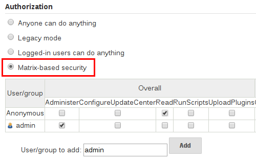
Figura 1. Segurança baseada em matriz
A tabela mostrada acima pode ser bastante ampla, pois cada coluna representa uma permissão fornecida pelo núcleo ou pelo plugin do Jenkins. Passar o mouse sobre uma permissão exibirá mais informações sobre a permissão.
Cada linha da tabela representa um usuário ou grupo (também conhecido como "função"). Isso inclui entradas especiais nomeadas "anônimo" e "autenticado". A entrada "anônimo" representa permissões concedidas a todos os usuários não autenticados que acessam o ambiente Jenkins. Enquanto "autenticado" pode ser usado para conceder permissões a todos os usuários autenticados que acessam o ambiente.
As permissões concedidas na matriz são aditivas. Por exemplo, se um usuário "kohsuke" estiver nos grupos "desenvolvedores" e "administradores", as permissões concedidas a "kohsuke" serão uma união de todas as permissões concedidas a "kohsuke", "desenvolvedores", "administradores" , "autenticado" e "anônimo".
Formatador de marcação
O Jenkins permite a entrada do usuário em vários campos de configuração e áreas de texto diferentes, o que pode levar os usuários a inserir inadvertidamente ou maliciosamente códigos HTML e / ou JavaScript não seguros.
Por padrão, o Markup Formatter configuração está definido para texto simples que irá escapar caracteres inseguros, como <e &com suas respectivas entidades de caracteres.
O uso do Safe HTML Markup Formatter permite que usuários e administradores injetem trechos de HTML úteis e de informações nas Descrições do Projeto e em outros lugares.
Falsificação de solicitação entre sites
Uma falsificação de solicitação entre sites (ou CSRF / XSRF) [ 1 ] é uma exploração que permite que terceiros não autorizados executem solicitações em um aplicativo da Web, representando-se a outro usuário autenticado. No contexto de um ambiente Jenkins, um ataque de CSRF pode permitir que um agente mal-intencionado exclua projetos, altere compilações ou modifique a configuração do sistema de Jenkins. Para se proteger contra essa classe de vulnerabilidades, a proteção CSRF foi ativada por padrão em todas as versões do Jenkins desde a 2.0.
As configurações de CSRF podem ser encontradas seguindo este caminho: Gerenciar Jenkins> Configurar segurança global> Seção: Proteção de CSRF.
Dentro da seção CSRF, é possível ativar a opção "compatibilidade de proxy" que pode ser útil no caso de proxies HTTP filtrarem as informações que o emissor de migalhas padrão usa para calcular o valor nonce.
Se um proxy HTTP estiver entre o cliente do navegador e o servidor Jenkins e você receber uma resposta 403 ao enviar um formulário ao Jenkins, marcar essa opção pode ajudar. O uso dessa opção facilita o forjamento do valor nonce.
Desativar verificação CSRF
Antes da versão 2.176.2 do Jenkins , era possível desativar o CSRF diretamente pelo Configure Global Security. Agora, para evitar problemas de segurança desde a versão 2.176.2, essa opção foi removida.

Caixa de seleção Ativar / Desativar antes da 2.176.2
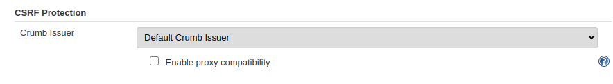
A caixa de seleção Ativar / Desativar foi removida após a 2.176.2
Os tokens CSRF (migalhas) agora são válidos apenas para a sessão da Web em que foram criados para limitar o impacto dos invasores que os obtêm. Os scripts que obtêm uma migalha usando a URL / crumbIssuer / api agora falham em executar ações protegidas contra o CSRF, a menos que os scripts mantenham o ID da sessão da web em solicitações subsequentes.
É altamente recomendável que essa opção seja deixada ativada , inclusive em instâncias que operam em redes privadas totalmente confiáveis. Mas se for realmente necessário desativá-lo, visite o guia de atualização de itens 2.176 e o guia de atualização 2.222, que oferecem opções para forçar a ação de desativação.
Ressalvas
A proteção CSRF pode resultar em desafios para usos mais avançados da Jenkins, como:
-
Alguns recursos do Jenkins, como a API remota, são mais difíceis de usar quando essa opção está ativada. Consulte a documentação da API remota para obter mais informações.
-
O acesso ao Jenkins por meio de um proxy reverso mal configurado pode resultar na remoção do cabeçalho HTTP CSRF das solicitações, resultando na falha de ações protegidas.
-
Plugins desatualizados, não testados com a proteção CSRF ativada, podem não funcionar corretamente.
Mais informações sobre explorações de CSRF podem ser encontradas no site da OWASP .
Agente / Controle de Acesso Principal
Conceitualmente, o mestre e os agentes Jenkins podem ser vistos como um sistema coeso que é executado em vários processos e máquinas distintos. Isso permite que um agente solicite ao processo mestre as informações disponíveis, por exemplo, o conteúdo dos arquivos, etc.
Para ambientes Jenkins maiores ou mais maduros, nos quais um administrador Jenkins pode habilitar agentes fornecidos por outras equipes ou organizações, um modelo de confiança de agente / mestre simples é insuficiente.
O sistema Agent / Master Access Control foi introduzido [ 2 ] para permitir que os administradores do Jenkins adicionem definições mais granulares de controle de acesso entre o Jenkins master e os agentes conectados.

A partir do Jenkins 2.0, esse subsistema foi ativado por padrão.
Personalizando o acesso
Para usuários avançados que desejam permitir certos padrões de acesso dos agentes ao mestre Jenkins, o Jenkins permite que os administradores criem isenções específicas das regras de controle de acesso internas.

Seguindo o link destacado acima, um administrador pode editar as regras de controle de acesso Comandos e Agente de Acesso a Arquivos / Mestre.
Comandos
"Comandos" no Jenkins e seus plugins são identificados por seus nomes de classe totalmente qualificados. A maioria desses comandos se destina a ser executada em agentes por uma solicitação de um mestre, mas alguns deles se destinam a ser executados em agentes por uma solicitação de um agente.
Os plug-ins ainda não atualizados para este subsistema podem não classificar em qual categoria cada comando se enquadra, de modo que quando um agente solicita que o mestre execute um comando que não é explicitamente permitido, Jenkins errará por precaução e se recusará a executar o comando.
Nesses casos, os administradores do Jenkins podem "colocar na lista branca" [ 3 ] certos comandos como aceitáveis para execução no mestre.

Avançado
Os administradores podem também aulas de whitelist por criar arquivos com a .conf
extensão no diretório JENKINS_HOME/secrets/whitelisted-callables.d/. O conteúdo desses .confarquivos deve listar os nomes dos comandos em linhas separadas.
O conteúdo de todos os .confarquivos no diretório será lido por Jenkins e combinado para criar um default.confarquivo no diretório que lista todos os comandos seguros conhecidos. O default.confarquivo será reescrito toda vez que Jenkins inicializar.
Jenkins também gerencia um arquivo chamado gui.conf, no whitelisted-callables.d
diretório, onde os comandos adicionados pela interface do usuário da web são gravados. Para desativar a capacidade dos administradores de alterar os comandos da lista de permissões da interface do usuário da web, coloque um gui.confarquivo vazio no diretório e altere suas permissões para que não seja gravável pelo usuário do sistema operacional que Jenkins executa.
Regras de acesso a arquivos
As Regras de acesso a arquivos são usadas para validar solicitações de acesso a arquivos feitas de agentes para o mestre. Cada regra de acesso a arquivos é um trigêmeo que deve conter cada um dos seguintes elementos:
-
allow/deny: se os dois parâmetros a seguir corresponderem à solicitação atual que está sendo considerada, umaallowentrada permitiria que a solicitação fosse realizada e umadenyentrada negaria que a solicitação fosse rejeitada, independentemente do que as regras posteriores possam dizer. -
operação : tipo de operação solicitada. Os 6 valores a seguir existem. As operações também podem ser combinadas separando os valores por vírgula. O valor de
allindica que todas as operações listadas são permitidas ou negadas.-
read: ler o conteúdo do arquivo ou listar entradas do diretório -
write: escreve o conteúdo do arquivo -
mkdirs: crie um novo diretório -
create: crie um arquivo em um diretório existente -
delete: excluir um arquivo ou diretório -
stat: lê metadados de um arquivo / diretório, como registro de data e hora, comprimento e modos de acesso a arquivos.
-
-
caminho do arquivo : expressão regular que especifica os caminhos do arquivo que correspondem a esta regra. Além da sintaxe base do regexp, ele suporta os seguintes tokens:
-
<JENKINS_HOME>pode ser usado como um prefixo para corresponder aoJENKINS_HOMEdiretório do mestre . -
<BUILDDIR>pode ser usado como um prefixo para corresponder ao diretório do registro de construção, como/var/lib/jenkins/job/foo/builds/2014-10-17_12-34-56. -
<BUILDID>corresponde aos IDs de compilação formatados com carimbo de data e hora, como2014-10-17_12-34-56.
-
As regras são ordenadas e aplicadas nessa ordem. A primeira partida vence. Por exemplo, as seguintes regras permitem acessar todos os arquivos, JENKINS_HOME
exceto as secretspastas:
# To avoid hassle of escaping every '\' on Windows, you can use / even on Windows.
deny all <JENKINS_HOME>/secrets/.*
allow all <JENKINS_HOME>/.*Encomendar é muito importante! As regras a seguir foram gravadas incorretamente porque a segunda regra nunca corresponderá e permitirá que todos os agentes acessem todos os arquivos e pastas em JENKINS_HOME:
allow all <JENKINS_HOME>/.*
deny all <JENKINS_HOME>/secrets/.*Avançado
Os administradores também podem adicionar regras de acesso a arquivos através da criação de arquivos com a
.conf.extensão no diretório JENKINS_HOME/secrets/filepath-filters.d/. O próprio Jenkins gera o 30-default.confarquivo na inicialização neste diretório, que contém os padrões considerados o melhor equilíbrio entre compatibilidade e segurança pelo projeto Jenkins. Para desativar esses padrões internos, substitua 30-default.confpor um arquivo vazio que não seja gravável pelo usuário do sistema operacional que Jenkins executa como.
Em cada inicialização, o Jenkins lerá todos os .confarquivos no filepath-filters.d
diretório em ordem alfabética; portanto, é uma boa prática nomear os arquivos de uma maneira que indique sua ordem de carregamento.
Jenkins também gerencia 50-gui.conf, no filepath-filters/diretório, onde as regras de acesso a arquivos adicionadas pela interface da web da Web são gravadas. Para desativar a capacidade dos administradores de alterar as regras de acesso a arquivos da interface do usuário da web, coloque um 50-gui.confarquivo vazio no diretório e altere suas permissões para que não sejam graváveis pelo usuário do sistema operacional que Jenkins executa.
Desativando
Embora não seja recomendado, se todos os agentes em um ambiente Jenkins puderem ser considerados "confiáveis" no mesmo grau em que o mestre é confiável, o recurso Agente / Controle de Acesso Principal poderá ser desativado.
Além disso, todos os usuários no ambiente Jenkins devem ter o mesmo nível de acesso a todos os projetos configurados.
Um administrador pode desativar o Controle de acesso principal / agente na interface da web desmarcando a caixa na página Configurar segurança global . Como alternativa, um administrador pode criar um arquivo JENKINS_HOME/secretsnomeado
slave-to-master-security-kill-switchcom o conteúdo truee reiniciar o Jenkins.
|
A maioria dos ambientes Jenkins cresce com o tempo, exigindo que seus modelos de confiança evoluam à medida que o ambiente cresce. Por favor, considere agendar "check-ups" regulares para verificar se as configurações de segurança desabilitadas devem ser reativadas. |
2 . A partir das versões 1.587 e 1.580.1,
Ferramentas de gerenciamento
|
Esta seção é um trabalho em andamento. Quer ajudar? Confira a lista de discussão jenkinsci-docs . Para outras maneiras de contribuir com o projeto Jenkins, consulte esta página sobre participação e contribuição . |
Gerenciando plugins
Índice
Os plug-ins são o principal meio de aprimorar a funcionalidade de um ambiente Jenkins para atender às necessidades específicas da organização ou do usuário. Existem mais de mil plugins diferentes que podem ser instalados no mestre Jenkins e para integrar várias ferramentas de criação, provedores de nuvem, ferramentas de análise e muito mais.
Os plug-ins podem ser baixados automaticamente, com suas dependências, no Centro de Atualização . O Update Center é um serviço operado pelo projeto Jenkins que fornece um inventário de plugins de código aberto que foram desenvolvidos e mantidos por vários membros da comunidade Jenkins.
Esta seção abordará tudo, desde o básico do gerenciamento de plug-ins na interface da web da Jenkins até as alterações no sistema de arquivos mestre .
Instalando um Plug-in
O Jenkins fornece alguns métodos diferentes para instalar plug-ins no mestre:
Cada abordagem resultará no carregamento do plug-in por Jenkins, mas poderá exigir diferentes níveis de acesso e trade-offs para uso.
As duas abordagens exigem que o mestre do Jenkins seja capaz de baixar metadados de um Update Center, seja o Update Center primário operado pelo projeto Jenkins [ 1 ] ou um Update Center personalizado.
Os plug-ins são empacotados como .hpiarquivos independentes , que possuem todo o código, imagens e outros recursos necessários que o plug-in precisa para operar com êxito.
Na interface da web
A maneira mais simples e comum de instalar plug-ins é através da visualização Gerenciar Jenkins > Gerenciar Plug-ins , disponível para administradores de um ambiente Jenkins.
Na guia Disponível , os plug-ins disponíveis para download no Centro de Atualização configurado podem ser pesquisados e considerados:

A maioria dos plug-ins pode ser instalada e usada imediatamente, marcando a caixa adjacente ao plug-in e clicando em Instalar sem reiniciar .
|
Se a lista de plug-ins disponíveis estiver vazia, o mestre poderá estar configurado incorretamente ou ainda não baixou os metadados do plug-in no Centro de Atualização. Clicar no botão Verificar agora forçará o Jenkins a tentar entrar em contato com o Centro de Atualização configurado. |
Usando a CLI do Jenkins
Os administradores também podem usar a CLI do Jenkins, que fornece um comando para instalar plug-ins. Os scripts para gerenciar ambientes Jenkins ou o código de gerenciamento de configuração podem precisar instalar plug-ins sem interação direta do usuário na interface da web. A CLI do Jenkins permite que um usuário da linha de comandos ou uma ferramenta de automação baixe um plug-in e suas dependências.
java -jar jenkins-cli.jar -s http://localhost:8080/ install-plugin SOURCE ... [-deploy] [-name VAL] [-restart]
Installs a plugin either from a file, an URL, or from update center.
SOURCE : If this points to a local file, that file will be installed. If
this is an URL, Jenkins downloads the URL and installs that as a
plugin.Otherwise the name is assumed to be the short name of the
plugin in the existing update center (like "findbugs"),and the
plugin will be installed from the update center.
-deploy : Deploy plugins right away without postponing them until the reboot.
-name VAL : If specified, the plugin will be installed as this short name
(whereas normally the name is inferred from the source name
automatically).
-restart : Restart Jenkins upon successful installation.Instalação avançada
O Centro de Atualização permite apenas a instalação da versão mais recente de um plug-in. Nos casos em que uma versão mais antiga do plug-in é desejada, um administrador do Jenkins pode baixar um .hpiarquivo antigo e instalá-lo manualmente no mestre do Jenkins.
Na interface da web
Supondo que um .hpiarquivo tenha sido baixado, um administrador conectado do Jenkins pode fazer upload do arquivo na interface da Web:
-
Navegue até a página Gerenciar Jenkins > Gerenciar plug-ins na interface da web.
-
Clique na guia Avançado .
-
Escolha o
.hpiarquivo na seção Upload Plugin . -
Faça o upload do arquivo do plug-in.

Após o upload de um arquivo de plug-in, o mestre do Jenkins deve ser reiniciado manualmente para que as alterações entrem em vigor.
No mestre
Supondo que um .hpiarquivo tenha sido explicitamente baixado por um administrador de sistemas, o administrador pode colocá-lo manualmente .hpiem um local específico no sistema de arquivos.
Copie o .hpi`arquivo baixado para o JENKINS_HOME/pluginsdiretório no Jenkins master (por exemplo, nos sistemas Debian JENKINS_HOMEgeralmente
/var/lib/jenkins).
O mestre precisará ser reiniciado antes que o plug-in seja carregado e disponibilizado no ambiente Jenkins.
|
Os nomes dos diretórios do plug-in no site de atualização [ 1 ] nem sempre são iguais ao nome de exibição do plug-in. Procurar
plugins.jenkins.io
pelo plug-in desejado fornecerá o link apropriado para os |
Atualizando um plugin
As atualizações estão listadas na guia Atualizações da página Gerenciar plug-ins e podem ser instaladas marcando as caixas de seleção das atualizações desejadas do plug-in e clicando no botão Baixar agora e instalar após reiniciar .

Por padrão, o mestre Jenkins verificará atualizações do Centro de Atualização uma vez a cada 24 horas. Para acionar manualmente uma verificação de atualizações, basta clicar no botão Verificar agora na guia Atualizações .
Removendo um plugin
Quando um plug-in não é mais usado em um ambiente Jenkins, é prudente remover o plug-in do mestre Jenkins. Isso fornece vários benefícios, como reduzir a sobrecarga de memória na inicialização ou no tempo de execução, reduzir as opções de configuração na interface da Web da Web e remover o potencial de futuros conflitos com as novas atualizações de plug-ins.
Desinstalando um Plug-in
A maneira mais simples de desinstalar um plug-in é navegar até a guia Instalado na página Gerenciar Plug-ins . A partir daí, o Jenkins determinará automaticamente quais plugins são seguros para desinstalar, aqueles que não são dependências de outros plugins e apresentará um botão para fazê-lo.

Um plug-in também pode ser desinstalado removendo o .hpi
arquivo correspondente do JENKINS_HOME/pluginsdiretório no master. O plug-in continuará funcionando até que o mestre seja reiniciado.
|
Se um |
A desinstalação de um plug-in não remove a configuração que o plug-in pode ter criado. Se houver configurações de trabalhos / nós / visualizações / construções / etc existentes que fazem referência aos dados criados pelo plug-in, durante a inicialização, o Jenkins avisará que algumas configurações não podem ser totalmente carregadas e ignorará os dados não reconhecidos.
Como as configurações serão preservadas até serem substituídas, a reinstalação do plug-in resultará na reaparecimento desses valores de configuração.
Desativando um Plug-in
Desativar um plug-in é uma maneira mais fácil de desativar um plug-in. Jenkins continuará reconhecendo que o plug-in está instalado, mas não iniciará o plug-in, e nenhuma extensão contribuída por esse plug-in será visível.
Um administrador do Jenkins pode desativar um plug-in desmarcando a caixa na guia Instalado da página Gerenciar plug-ins (veja abaixo).
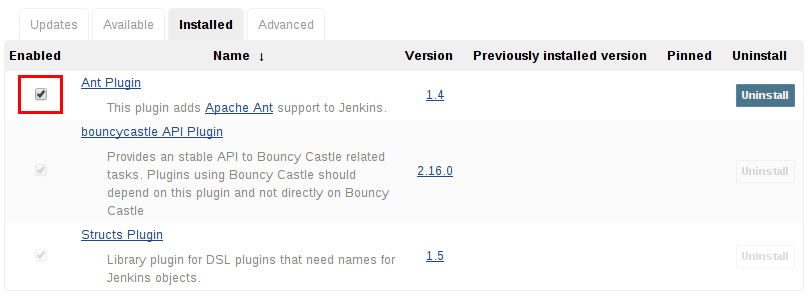
Um administrador de sistemas também pode desativar um plugin criando um arquivo no mestre Jenkins, tais como: JENKINS_HOME/plugins/PLUGIN_NAME.hpi.disabled.
As configurações criadas pelo plug-in desabilitado se comportam como se o plug-in tivesse sido desinstalado, na medida em que resultam em avisos na inicialização, mas são ignoradas.
Usando a CLI do Jenkins
Também é possível ativar ou desativar plug-ins por meio da CLI do Jenkins
usando os comandos enable-pluginou disable-plugin.
O enable-plugincomando recebe uma lista de plugins a serem ativados. Quaisquer plug-ins dos quais um plug-in selecionado depende também serão ativados por este comando.
java -jar jenkins-cli.jar -s http://localhost:8080/ enable-plugin PLUGIN ... [-restart]
Enables one or more installed plugins transitively.
PLUGIN : Enables the plugins with the given short names and their
dependencies.
-restart : Restart Jenkins after enabling plugins.O disable-plugincomando recebe uma lista de plugins a serem desabilitados. A saída exibirá mensagens para operações bem-sucedidas e com falha. Se você deseja apenas ver mensagens de erro, a -quietopção pode ser especificada. A -strategyopção controla qual ação será executada quando um dos plug-ins especificados for listado como uma dependência opcional ou obrigatória de outro plug-in ativado.
java -jar jenkins-cli.jar -s http://localhost:8080/ disable-plugin PLUGIN ... [-quiet (-q)]
[-restart (-r)] [-strategy (-s) strategy]
Disable one or more installed plugins.
Disable the plugins with the given short names. You can define how to proceed with the
dependant plugins and if a restart after should be done. You can also set the quiet mode
to avoid extra info in the console.
PLUGIN : Plugins to be disabled.
-quiet (-q) : Be quiet, print only the error messages
-restart (-r) : Restart Jenkins after disabling plugins.
-strategy (-s) strategy : How to process the dependant plugins.
- none: if a mandatory dependant plugin exists and
it is enabled, the plugin cannot be disabled
(default value).
- mandatory: all mandatory dependant plugins are
also disabled, optional dependant plugins remain
enabled.
- all: all dependant plugins are also disabled, no
matter if its dependency is optional or mandatory.|
Da mesma forma que ativar e desativar plug-ins da interface do usuário requer uma reinicialização para concluir o processo, as alterações feitas com os comandos da CLI entrarão em vigor quando o Jenkins for reiniciado. A |
Plugins fixados
|
O recurso de plug-ins fixados foi removido no Jenkins 2.0. As versões posteriores ao Jenkins 2.0 não agrupam plug-ins, fornecendo um assistente para instalar os plug-ins mais úteis. |
A noção de plug-ins fixados se aplica a plug-ins incluídos no Jenkins 1.x, como o plug-in Matrix Authorization .
Por padrão, sempre que o Jenkins é atualizado, seus plugins em pacote substituem as versões dos plug-ins atualmente instalados JENKINS_HOME.
No entanto, quando um plug-in em pacote for atualizado manualmente, o Jenkins marcará esse plug-in como fixado na versão específica. No sistema de arquivos, Jenkins cria um arquivo vazio chamado JENKINS_HOME/plugins/PLUGIN_NAME.hpi.pinned
para indicar a fixação.
Os plug-ins fixados nunca serão substituídos por plug-ins em pacote durante a inicialização do Jenkins. (As versões mais recentes do Jenkins avisam se um plug-in fixado é mais antigo do que o que está atualmente incluído no pacote.)
É seguro atualizar um plug-in em pacote para uma versão oferecida pelo Update Center. Geralmente, é necessário escolher os recursos e as correções mais recentes. A versão em pacote é atualizada ocasionalmente, mas não de forma consistente.
O Gerenciador de plug-ins permite que os plugins sejam explicitamente desmarcados. O
JENKINS_HOME/plugins/PLUGIN_NAME.hpi.pinnedarquivo também pode ser criado / excluído manualmente para controlar o comportamento de fixação. Se o pinnedarquivo estiver presente, o Jenkins usará a versão do plugin especificada pelo usuário. Se o arquivo estiver ausente, o Jenkins restaurará o plug-in para a versão padrão na inicialização.
Jenkins CLI
Índice
O Jenkins possui uma interface de linha de comando interna que permite que usuários e administradores acessem o Jenkins a partir de um ambiente de script ou shell. Isso pode ser conveniente para scripts de tarefas de rotina, atualizações em massa, solução de problemas e muito mais.
A interface da linha de comandos pode ser acessada por SSH ou com o cliente CLI Jenkins, um .jararquivo distribuído com o Jenkins.
|
O uso do cliente CLI distribuído com o Jenkins 2.53 e mais antigo e o Jenkins LTS 2.46.1 e mais antigo não é recomendado por razões de segurança. O cliente distribuído com o Jenkins 2.54 e mais recente e o Jenkins LTS 2.46.2 e mais recente é considerado seguro em seus modos padrão ( O Jenkins 2.165 e mais recente não oferece mais suporte ao modo antigo ( |
Usando a CLI sobre SSH
Em uma nova instalação do Jenkins, o serviço SSH é desativado por padrão. Os administradores podem optar por definir uma porta específica ou solicitar que Jenkins escolha uma porta aleatória na página Configurar Segurança Global . Para determinar a porta SSH atribuída aleatoriamente, inspecione os cabeçalhos retornados em uma URL do Jenkins, por exemplo:
% curl -Lv https://JENKINS_URL/login 2>&1 | grep -i 'x-ssh-endpoint'
< X-SSH-Endpoint: localhost:53801
%Com a porta SSH aleatória ( 53801neste exemplo) e a autenticação
configurada, qualquer cliente SSH moderno pode executar com segurança comandos da CLI.
Autenticação
Qualquer usuário usado para autenticação com o mestre Jenkins deve ter a
Overall/Readpermissão para acessar a CLI. O usuário pode exigir permissões adicionais, dependendo dos comandos executados.
A autenticação depende da autenticação de chave pública / privada baseada em SSH. Para adicionar uma chave pública SSH ao usuário apropriado, navegue
JENKINS_URL/user/USERNAME/configuree cole uma chave pública SSH na área de texto apropriada.

Comandos comuns
O Jenkins possui vários comandos da CLI internos que podem ser encontrados em todos os ambientes do Jenkins, como buildou list-jobs. Os plug-ins também podem fornecer comandos da CLI; para determinar a lista completa de comandos disponíveis em um determinado ambiente Jenkins, execute o helpcomando da CLI :
% ssh -l kohsuke -p 53801 localhost helpA lista de comandos a seguir não é abrangente, mas é um ponto de partida útil para o uso da CLI do Jenkins.
Construir
Um dos comandos da CLI mais comuns e úteis é o buildque permite ao usuário acionar qualquer tarefa ou pipeline para o qual eles têm permissão.
A chamada mais básica simplesmente dispara a tarefa ou o Pipeline e sai, mas com as opções adicionais, o usuário também pode passar parâmetros, pesquisar no SCM ou até seguir a saída do console da compilação acionada ou da execução do Pipeline.
% ssh -l kohsuke -p 53801 localhost help build
java -jar jenkins-cli.jar build JOB [-c] [-f] [-p] [-r N] [-s] [-v] [-w]
Starts a build, and optionally waits for a completion. Aside from general
scripting use, this command can be used to invoke another job from within a
build of one job. With the -s option, this command changes the exit code based
on the outcome of the build (exit code 0 indicates a success) and interrupting
the command will interrupt the job. With the -f option, this command changes
the exit code based on the outcome of the build (exit code 0 indicates a
success) however, unlike -s, interrupting the command will not interrupt the
job (exit code 125 indicates the command was interrupted). With the -c option,
a build will only run if there has been an SCM change.
JOB : Name of the job to build
-c : Check for SCM changes before starting the build, and if there's no
change, exit without doing a build
-f : Follow the build progress. Like -s only interrupts are not passed
through to the build.
-p : Specify the build parameters in the key=value format.
-s : Wait until the completion/abortion of the command. Interrupts are passed
through to the build.
-v : Prints out the console output of the build. Use with -s
-w : Wait until the start of the command
% ssh -l kohsuke -p 53801 localhost build build-all-software -f -v
Started build-all-software #1
Started from command line by admin
Building in workspace /tmp/jenkins/workspace/build-all-software
[build-all-software] $ /bin/sh -xe /tmp/hudson1100603797526301795.sh
+ echo hello world
hello world
Finished: SUCCESS
Completed build-all-software #1 : SUCCESS
%console
Igualmente útil é o consolecomando, que recupera a saída do console para a compilação especificada ou a execução do Pipeline. Quando nenhum número de compilação é fornecido, o
consolecomando emitirá a saída do console da última compilação concluída.
% ssh -l kohsuke -p 53801 localhost help console
java -jar jenkins-cli.jar console JOB [BUILD] [-f] [-n N]
Produces the console output of a specific build to stdout, as if you are doing 'cat build.log'
JOB : Name of the job
BUILD : Build number or permalink to point to the build. Defaults to the last
build
-f : If the build is in progress, stay around and append console output as
it comes, like 'tail -f'
-n N : Display the last N lines
% ssh -l kohsuke -p 53801 localhost console build-all-software
Started from command line by kohsuke
Building in workspace /tmp/jenkins/workspace/build-all-software
[build-all-software] $ /bin/sh -xe /tmp/hudson1100603797526301795.sh
+ echo hello world
yes
Finished: SUCCESS
%Quem sou eu
O who-am-icomando é útil para listar as credenciais e permissões do usuário atual disponíveis para o usuário. Isso pode ser útil ao depurar a ausência de comandos da CLI devido à falta de determinadas permissões.
% ssh -l kohsuke -p 53801 localhost help who-am-i
java -jar jenkins-cli.jar who-am-i
Reports your credential and permissions.
% ssh -l kohsuke -p 53801 localhost who-am-i
Authenticated as: kohsuke
Authorities:
authenticated
%Usando o cliente CLI
Embora a CLI baseada em SSH seja rápida e atenda à maioria das necessidades, pode haver situações em que o cliente CLI distribuído com Jenkins é mais adequado. Por exemplo, o transporte padrão para o cliente CLI é HTTP, o que significa que nenhuma porta adicional precisa ser aberta em um firewall para seu uso.
Fazendo Download do Cliente
O cliente CLI pode ser baixado diretamente de um mestre Jenkins na URL
/jnlpJars/jenkins-cli.jar, com efeito JENKINS_URL/jnlpJars/jenkins-cli.jar
Embora uma CLI .jarpossa ser usada em diferentes versões do Jenkins, caso ocorram problemas de compatibilidade durante o uso, baixe novamente o .jar
arquivo mais recente do Jenkins master.
Usando o cliente
A sintaxe geral para chamar o cliente é a seguinte:
java -jar jenkins-cli.jar [-s JENKINS_URL] [global options...] command [command options...] [arguments...]O JENKINS_URLpode ser especificado através da variável de ambiente $JENKINS_URL. Resumos de outras opções gerais podem ser exibidos executando o cliente sem argumentos.
Modos de conexão do cliente
Existem três modos básicos em que podem ser utilizados o cliente, selecionáveis por opção global:
-http, -webSocket, e -ssh.
Modo de conexão HTTP
Este é o modo padrão, embora você possa passar a -httpopção explicitamente para fins de clareza.
A autenticação é preferencialmente com uma -authopção, que requer um username:apitokenargumento. Obtenha seu token de API em /me/configure:
java -jar jenkins-cli.jar [-s JENKINS_URL] -auth kohsuke:abc1234ffe4a command ...(Senhas reais também são aceitas, mas isso é desencorajado.)
Você também pode preceder o argumento com @para carregar o mesmo conteúdo de um arquivo:
java -jar jenkins-cli.jar [-s JENKINS_URL] -auth @/home/kohsuke/.jenkins-cli command ...|
Por motivos de segurança, o uso de um arquivo para carregar as credenciais de autenticação é a maneira de autenticação recomendada. |
Um método de autenticação alternativo é configurar variáveis de ambiente de maneira semelhante à $JENKINS_URL
utilizada. O usernamepodem ser especificados através da variável ambiente $JENKINS_USER_IDenquanto o apitokenpode ser especificado por meio da variável $JENKINS_API_TOKEN. Ambas as variáveis devem ser definidas ao mesmo tempo.
export JENKINS_USER_ID=kohsuke
export JENKINS_API_TOKEN=abc1234ffe4a
java -jar jenkins-cli.jar [-s JENKINS_URL] command ...Caso essas variáveis de ambiente estejam configuradas, você ainda poderá substituir o método de autenticação usando credenciais diferentes com a -authopção, que tem preferência sobre elas.
Geralmente, nenhuma configuração especial do sistema precisa ser feita para ativar as conexões CLI baseadas em HTTP. Se você estiver executando o Jenkins atrás de um proxy reverso HTTP (S), verifique se ele não armazena em buffer os corpos de solicitação ou resposta.
|
O modo de conexão HTTP (S) da CLI não funciona corretamente atrás de um servidor proxy reverso HTTP Apache usando mod_proxy. As soluções alternativas incluem o uso de um proxy reverso diferente, como Nginx ou HAProxy, ou o uso do modo de conexão SSH, sempre que possível. Veja JENKINS-47279 . |
Modo de conexão WebSocket
No Jenkins 2.217 e acima, o -webSocketmodo pode ser usado como uma alternativa para -http. A vantagem é que um transporte mais padrão é usado, evitando problemas com muitos proxies reversos ou a necessidade de configuração especial de proxy.
Modo de conexão SSH
A autenticação é via par de chaves SSH. Você também deve selecionar o ID do usuário Jenkins:
java -jar jenkins-cli.jar [-s JENKINS_URL] -ssh -user kohsuke command ...Nesse modo, o cliente age essencialmente como um sshcomando nativo .
Por padrão, o cliente tentará se conectar a uma porta SSH no mesmo host usado no JENKINS_URL. Se o Jenkins estiver protegido por um proxy reverso HTTP, isso geralmente não funcionará; portanto, execute o Jenkins com a propriedade de sistema -Dorg.jenkinsci.main.modules.sshd.SSHD.hostName=ACTUALHOST
para definir um nome de host ou endereço IP para o terminal SSH.
Problemas comuns com o cliente CLI
Há vários problemas comuns que podem ocorrer ao executar o cliente CLI.
Chave do servidor não validada
Você pode obter o erro abaixo e encontrar uma entrada de log logo abaixo da referente a mismatched keys:
org.apache.sshd.common.SshException: Server key did not validate
at org.apache.sshd.client.session.AbstractClientSession.checkKeys(AbstractClientSession.java:523)
at org.apache.sshd.common.session.helpers.AbstractSession.handleKexMessage(AbstractSession.java:616)
...Isso significa que sua configuração SSH não reconhece a chave pública apresentada pelo servidor. Geralmente, você executa o Jenkins no modo dev e várias instâncias do aplicativo são executadas na mesma porta SSH ao longo do tempo.
Em um contexto de desenvolvimento, acesse seu ~/.ssh/known_hosts(ou C:/Users/<your_name>/.ssh/known_hostsWindows) e remova a linha correspondente à sua porta SSH atual (por exemplo [localhost]:3485). Em um contexto de produção, verifique com o administrador do Jenkins se a chave pública do servidor mudou recentemente. Nesse caso, peça ao administrador para executar as etapas descritas acima.
UsernameNotFoundException
Se seu cliente exibir um rastreamento de pilha parecido com:
org.acegisecurity.userdetails.UsernameNotFoundException: <name_you_used>
...Isso significa que suas chaves SSH foram reconhecidas e validadas com relação aos usuários armazenados, mas o nome de usuário não é válido para o domínio de segurança que seu aplicativo está usando no momento. Isso pode ocorrer quando você estava usando o banco de dados Jenkins inicialmente, configurou seus usuários e depois mudou para outro domínio de segurança (como LDAP, etc.) onde os usuários definidos ainda não existem.
Para resolver o problema, verifique se seus usuários existem em seu domínio de segurança configurado.
Logs de solução de problemas
Para obter mais informações sobre o processo de autenticação:
-
Vá para Gerenciar Jenkins > Log do sistema > Adicionar novo gravador de log .
-
Digite o nome desejado e clique em Ok .
-
Clique em Adicionar
-
Digite
org.jenkinsci.main.modules.sshd.PublicKeyAuthenticatorImpl(ou digitePublicKeyAuthe selecione o nome completo) -
Defina o nível para ALL .
-
Repita as três etapas anteriores para
hudson.model.User -
Clique em Salvar
Ao tentar se autenticar, você pode atualizar a página e ver o que acontece internamente.
Console de scripts
O Jenkins possui um console de scripts Groovy que permite executar scripts Groovy arbitrários no tempo de execução principal do Jenkins ou no tempo de execução nos agentes.
|
É muito importante entender todos os pontos a seguir, pois isso afeta a integridade da instalação do Jenkins. O console de scripts Jenkins:
Devido ao poder oferecido pelo Jenkins Script Console, o Jenkins e seus agentes nunca devem ser executados como Certifique-se de proteger sua instância do Jenkins |
Vários contextos
O Jenkins Script Console pode ser executado no mestre ou em qualquer agente configurado.
Executando o Script Console no mestre
Esse recurso pode ser acessado em "Gerenciar Jenkins"> "Console de scripts". Ou visitando o sub-URL /script na sua instância do Jenkins.
Executando o Script Console nos agentes
Visite "Gerenciar Jenkins"> "Gerenciar nós". Selecione qualquer nó para visualizar a página de status. No menu à esquerda, um item de menu está disponível para abrir um "Console de scripts" nesse agente específico.
Executar scripts do Console de scripts mestre nos agentes
Também é possível executar scripts no Console de scripts mestre em agentes individuais. O script a seguir é um exemplo de execução de um script em agentes do console de scripts mestre.
O script executa o código no agente no Master Script Console
import hudson.util.RemotingDiagnostics
import jenkins.model.Jenkins
String agent_name = 'your agent name'
//groovy script you want executed on an agent
groovy_script = '''
println System.getenv("PATH")
println "uname -a".execute().text
'''.trim()
String result
Jenkins.instance.slaves.find { agent ->
agent.name == agent_name
}.with { agent ->
result = RemotingDiagnostics.executeGroovy(groovy_script, agent.channel)
}
println resultAcesso remoto
Um administrador do Jenkins pode executar scripts groovy remotamente, enviando uma solicitação HTTP POST para /script/url ou /scriptText/.
exemplo de curl via bash
curl -d "script=<your_script_here>" https://jenkins/script
# or to get output as a plain text result (no HTML)
curl -d "script=<your_script_here>" https://jenkins/scriptTextAlém disso, o Jenkins CLI
oferece a possibilidade de executar scripts groovy remotamente usando o
groovycomando ou executar o groovy interativamente via groovysh. No entanto, mais uma vez, o curl pode ser usado para executar scripts groovy usando a substituição do comando bash. No exemplo a seguir,
somescript.groovyhá um script groovy no diretório de trabalho atual.
Enrolar o envio de arquivo groovy via bash
curl --data-urlencode "script=$(< ./somescript.groovy)" https://jenkins/scriptTextSe a segurança estiver configurada no Jenkins, as opções curl podem ser fornecidas para autenticação usando a curl --user opção
Enrole o envio de arquivo groovy, fornecendo nome de usuário e token de API via bash
curl --user 'username:api-token' --data-urlencode \
"script=$(< ./somescript.groovy)" https://jenkins/scriptTextAqui está o comando equivalente usando python, não curl.
Python enviando arquivo groovy fornecendo nome de usuário e token de API
with open('somescript.groovy', 'r') as fd:
data = fd.read()
r = requests.post('https://jenkins/scriptText', auth=('username', 'api-token'), data={'script': data})Tecla de atalho no console de script para enviar
Você pode enviar um script sem mouse. Jenkins possui uma tecla de atalho que permite enviar com o teclado.
-
Windows / Linux: Ctrl + Enter
-
Mac: Command + Enter
Tutoriais em vídeo e materiais de aprendizagem adicionais
Aqui estão alguns vídeos gravados no Jenkins Script Console:
-
Jenkins World 2017: Dominando o Jenkins Script Console - 44 minutos - exemplo de uso e discussão de segurança
-
LA Jenkins Area Meetup 2016 - Hacking no Jenkins Internals - Jenkins Script Console - 39 minutos - exemplo de uso
Para expandir sua capacidade de gravar scripts no console de scripts, as seguintes referências são recomendadas:
-
Aprenda o Groovy - O aprendizado do Groovy é útil para mais do que escrever scripts para o Script Console. O Groovy também é relevante para outros recursos do Jenkins, como Pipelines e bibliotecas de pipeline compartilhadas , o Groovy Plugin , o plug-in Job DSL e muitos outros plug-ins que utilizam o Groovy (consulte a seção [Plugins-enable-Groovy- use ] ).
-
Escreva scripts Groovy para Jenkins com conclusão de código - O essencial é criar um projeto Maven dentro do seu IDE e depender de org.jenkins-ci.main: jenkins-core (e outros plugins que você espera que estejam presentes). Em seguida, você pode escrever um script Groovy com o preenchimento de código dos objetos e métodos da API Jenkins.
Scripts Groovy de exemplo
Scripts desatualizados
Devido à natureza dos scripts do Groovy que acessam diretamente o código-fonte do Jenkins, os scripts do Console de scripts ficam desatualizados facilmente do código-fonte do Jenkins. É possível executar um script e obter exceções porque os métodos e interfaces públicos no núcleo do Jenkins ou nos plugins do Jenkins foram alterados. Lembre-se disso ao experimentar exemplos. O Jenkins é facilmente iniciado a partir de uma máquina de desenvolvimento local através do seguinte comando:
Iniciando uma cópia local do Jenkins
export JENKINS_HOME="./my_jenkins_home"
java -jar jenkins.warUse CTRL + C para parar Jenkins. Não é recomendável tentar exemplos do Console de scripts em uma instância de produção Jenkins.
Os repositórios a seguir oferecem exemplos sólidos de scripts Groovy para Jenkins.
Navegue por todos os scripts Groovy do plug-in Scriptler e compartilhe seus scripts com o plug-in Scriptler .
-
Ativar plug - in Chuck Norris - Este script ativa o plug-in Chuck Norris para todos os trabalhos no servidor Jenkins
-
Adicionar uma instalação Maven, instalação de ferramentas, modificar configuração do sistema
-
Adicionar um novo rótulo aos agentes que atendem a uma condição - Este script mostra como alterar a associação do rótulo dos nós dos agentes. Nesse caso, criamos um novo rótulo se o rótulo existente contiver uma sequência. Foi testado na janela de comando do Jenkins.
-
Adicionar plug-in de notificação a todos os trabalhos - Este script adicionará o plug-in de notificação a todos os trabalhos.
-
Permitir reivindicações de construção quebradas em todos os trabalhos - Com o script simples a seguir, você pode ativar a opção em todos os trabalhos do servidor de uma só vez.
-
Atualização em lote da filial do Mercurial com check-out - Atualizações para vários trabalhos cuja filial será retirada da Hg
-
Alterar opções da JVM em todas as tarefas do Maven dos trabalhos de estilo livre - Este script localiza todas as tarefas do Maven registradas nos trabalhos de estilo livre e substitui as opções da JVM por um novo valor.
-
Alterar o SCMTrigger para cada projeto a ser desativado durante a noite e o fim de semana - Esse script permite alterar facilmente todos os trabalhos em execução a cada minuto, para que sejam desativados entre 21:00 e 07:00 e no sábado e domingo.
-
Clonar todos os projetos em uma Visualização - Este script enumera todos os projetos pertencentes a uma visualização específica e os clona.
-
Converter notificações de email padrão para usar o plug - in Publisher Ext-Mail - esse script substitui as notificações de email em todos os projetos pelo plug - in Publisher Ext e reutiliza os destinatários existentes.
-
Excluir arquivos tmp deixados em arquivos do espaço de trabalho - Este script exclui todos os arquivos tmp deixados no diretório arquivos de espaço de trabalho após a compilação. Nos servidores Windows, isso parece bastante comum.
-
Excluir espaço de trabalho para todos os trabalhos desativados - Exclui o espaço de trabalho de todos os trabalhos desativados para economizar espaço
-
Desativar todos os trabalhos - este script desativa todos os trabalhos no servidor Jenkins
-
Exibir informações sobre nós - Esse script exibe um monte de informações sobre todos os nós do agente.
-
Exibir parâmetros do trabalho - Este script exibe os parâmetros para todos os trabalhos, juntamente com seus valores padrão (se aplicável).
-
Exibir grupo de tarefas pelas etapas de construção que eles usam
-
Exibir lista de projetos que foram criados há mais de um dia. - Este script para exibir a lista de projetos que foram criados há mais de um dia.
-
Exibir destinatários de notificações por email - Este script exibe para todos os trabalhos a lista de destinatários usados para notificações.
-
Exibir status dos monitores - Jenkins usa monitores para validar vários comportamentos. Se você rejeitar um, Jenkins nunca lhe proporá reativá-lo. Esse script permite verificar o status de todos os monitores e reativá-los.
-
Exibir o número de trabalhos usando a Pesquisa SCM do Freestyle, Pipeline e Maven
-
Exibir gatilhos do timer - Esse script exibe os gatilhos do timer para todos os trabalhos, a fim de organizá-los melhor.
-
Localização das ferramentas de exibição em todos os nós - Esse script pode ajudar a obter a localização das ferramentas Jenkins em todos os seus agentes
-
Ativar o plug-in Timestamper em todos os trabalhos - Com o script simples a seguir, você pode ativar a opção em todos os trabalhos do servidor de uma só vez.
-
Trabalhos com falha - Este script exibe uma lista de todos os trabalhos com falha. Complemento: reinicie-os.
-
Localizar construções atualmente em execução que estejam sendo executadas por mais de N segundos
-
Conceder permissão de cancelamento para usuário e grupo com permissão de criação - Este script percorrerá todos os grupos e usuários nas configurações de segurança Global e por segurança do trabalho.
-
Invalidar sessões HTTP do Jenkins - Este script pode monitorar e invalidar sessões HTTP, se houver muitas abertas no servidor.
-
Executar rotação de log manualmente em todas as tarefas - Executa a rotação de log em todas as tarefas para liberar espaço
-
Monitorar e reiniciar agentes offline - Esse script pode monitorar e reiniciar nós offline se eles não forem desconectados manualmente.
-
Scripts de monitoramento - Vários scripts para exibir dados sobre sessões http, threads, memória, JVM ou MBeans, ao usar o plug-in de monitoramento.
-
Script do Groovy do sistema parametrizado - Este script demonstrará como obter parâmetros em um script do groovy do sistema.
-
Remover todos os módulos desativados nos trabalhos do Maven - Para remover todos os módulos desativados nos trabalhos do Maven
-
Remover ações de artefatos implantados - Este script é usado para remover a lista de artefatos implantados que é armazenada inutilmente para cada construção pelo plug-in do implante de artefatos.
-
Remover plug-in do Git BuildsByBranch BuildData - Esse script é usado para remover a lista estática do BuildsByBranch que é armazenada inutilmente para cada build pelo plug-in do Git.
-
Definir GitBlitRepositoryBrowser com configurações de custum em todos os repositórios - Este script permite atualizar o navegador de repositório. Pode ser adaptado a qualquer outro navegador, não apenas ao gitblit.
-
Atualizar tarefas maven para usar a tarefa pós-construção para implantar artefatos - Esse script atualiza todas as tarefas maven com um objetivo de implantação instalando e ativando a etapa pós-construção para implantar artefatos no final da construção
-
Limpar espaços de trabalho de todos os trabalhos - Este script limpa os espaços de trabalho de todos os trabalhos no servidor Jenkins
-
Limpar áreas de trabalho para um conjunto de tarefas em todos os nós - O script limpa áreas de trabalho de determinadas tarefas em todos os nós.
Plug-ins que permitem o uso do Groovy
-
Plug-in do provedor de arquivo de configuração Adiciona a capacidade de fornecer arquivos de configuração (por exemplo, settings.xml para arquivos maven, XML, groovy, personalizados etc.) carregados pela interface do usuário do Jenkins, que serão copiados para o espaço de trabalho da tarefa.
-
Global Post Script Plugin - Execute um script groovy configurado global após cada compilação de cada trabalho gerenciado pelo Jenkins.
Isso é típico para os casos em que você precisa fazer algo com base em um conjunto compartilhado de parâmetros, como acionar tarefas downstream gerenciadas pelas mesmas Jenkins ou remotas com base nos parâmetros passados para as tarefas parametrizadas. -
Plug - in Groovy Postbuild - Esse plug-in executa um script de groovy na Jenkins JVM. Normalmente, o script verifica algumas condições e altera de acordo com o resultado da construção, coloca emblemas ao lado da construção no histórico da construção e / ou exibe informações na página de resumo da construção.
-
Plug - in Groovy Remote Control - Este plug-in fornece o receptor do Groovy Remote Control e permite controlar aplicativos externos da Jenkins.
-
Plug - in de estratégia de execução Groovy de matriz - Um plug-in para decidir a ordem de execução e combinações válidas de projetos de matriz.
-
Etapa do caminho de classe do pipeline Plug-in DSL do pipeline para adicionar o caminho ao caminho de classe do groovy
-
Plugin Scriptler - O Scriptler permite armazenar / editar scripts groovy e executá-lo em qualquer um dos nós ... não é mais necessário copiar / colar o código groovy.
Scripts Groovy Hook
|
Esta seção é um trabalho em andamento. Quer ajudar? Confira a lista de discussão jenkinsci-docs . Para outras maneiras de contribuir com o projeto Jenkins, consulte esta página sobre participação e contribuição . |
Em vários lugares dentro do Jenkins, uma série de "scripts de gancho" é executada para permitir que algumas ações ocorram em reação a alguns eventos importantes.
Esses scripts são escritos no Groovy e são executados na mesma JVM da Jenkins, permitindo acesso total ao modelo de domínio da Jenkins. Para determinado gancho de gancho , são pesquisados os seguintes locais:
-
WEB-INF/HOOK.groovynojenkins.war -
WEB-INF/HOOK.groovy.d/*.groovyna ordem lexical emjenkins.war -
$JENKINS_HOME/HOOK.groovy -
$JENKINS_HOME/HOOK.groovy.d/*.groovyna ordem lexical
HOOK.groovy.d é adequado para evitar conflitos - várias entidades podem inserir itens no gancho sem se preocupar em substituir o código uma da outra.
Os seguintes eventos usam esse mecanismo:
-
init : script de pós-inicialização
-
boot-fail : Gancho de falha de inicialização
Script de pós-inicialização (gancho init)
Você pode criar um arquivo de script Groovy $JENKINS_HOME/init.groovyou qualquer .groovyarquivo no diretório $JENKINS_HOME/init.groovy.d/para executar algumas coisas adicionais logo após a inicialização do Jenkins. Os scripts groovy são executados no final da inicialização do Jenkins. Este script pode acessar classes no Jenkins e todos os plugins. Por exemplo, você pode escrever algo como:
import jenkins.model.Jenkins;
// start in the state that doesn't do any build.
Jenkins.instance.doQuietDown();A saída é registrada no arquivo de log do Jenkins. Para usuários baseados no Debian, este é /var/log/jenkins/jenkins.log
Gancho de falha de inicialização
Quando o Jenkins encontra um problema fatal durante a inicialização, ele invoca o script de gancho "falha na inicialização" para permitir que ações corretivas automáticas sejam executadas (como notificar alguém, gerar alertas, reiniciar etc.)
Esses scripts obtêm a causa do problema como a variável "exceção" quando executada.
Gerenciando nós
|
Esta seção é um trabalho em andamento. Quer ajudar? Confira a lista de discussão jenkinsci-docs . Para outras maneiras de contribuir com o projeto Jenkins, consulte esta página sobre participação e contribuição . |
Monitorar e reiniciar agentes offline
Este script pode monitorar e reiniciar nós offline se eles não forem desconectados manualmente. Ele pode ser executado no Jenkins Script Console ou pode ser executado periodicamente como um trabalho Jenkins com o plug-in Groovy .
Consulte também Exibir informações sobre nós
import hudson.node_monitors.*
import hudson.slaves.*
import java.util.concurrent.*
jenkins = Jenkins.instance
import javax.mail.internet.*;
import javax.mail.*
import javax.activation.*
def sendMail (agent, cause) {
message = agent + " agent is down. Check http://JENKINS_HOSTNAME:JENKINS_PORT/computer/" + agent + "\nBecause " + cause
subject = agent + " agent is offline"
toAddress = "JENKINS_ADMIN@YOUR_DOMAIN"
fromAddress = "JENKINS@YOUR_DOMAIN"
host = "SMTP_SERVER"
port = "SMTP_PORT"
Properties mprops = new Properties();
mprops.setProperty("mail.transport.protocol","smtp");
mprops.setProperty("mail.host",host);
mprops.setProperty("mail.smtp.port",port);
Session lSession = Session.getDefaultInstance(mprops,null);
MimeMessage msg = new MimeMessage(lSession);
//tokenize out the recipients in case they came in as a list
StringTokenizer tok = new StringTokenizer(toAddress,";");
ArrayList emailTos = new ArrayList();
while(tok.hasMoreElements()) {
emailTos.add(new InternetAddress(tok.nextElement().toString()));
}
InternetAddress[] to = new InternetAddress[emailTos.size()];
to = (InternetAddress[]) emailTos.toArray(to);
msg.setRecipients(MimeMessage.RecipientType.TO,to);
InternetAddress fromAddr = new InternetAddress(fromAddress);
msg.setFrom(fromAddr);
msg.setFrom(new InternetAddress(fromAddress));
msg.setSubject(subject);
msg.setText(message)
Transport transporter = lSession.getTransport("smtp");
transporter.connect();
transporter.send(msg);
}
def getEnviron(computer) {
def env
def thread = Thread.start("Getting env from ${computer.name}", { env = computer.environment })
thread.join(2000)
if (thread.isAlive()) thread.interrupt()
env
}
def agentAccessible(computer) {
getEnviron(computer)?.get('PATH') != null
}
def numberOfflineNodes = 0
def numberNodes = 0
for (agent in jenkins.getNodes()) {
def computer = agent.computer
numberNodes ++
println ""
println "Checking computer ${computer.name}:"
def isOK = (agentAccessible(computer) && !computer.offline)
if (isOK) {
println "\t\tOK, got PATH back from slave ${computer.name}."
println('\tcomputer.isOffline: ' + slave.getComputer().isOffline());
println('\tcomputer.isTemporarilyOffline: ' + slave.getComputer().isTemporarilyOffline());
println('\tcomputer.getOfflineCause: ' + slave.getComputer().getOfflineCause());
println('\tcomputer.offline: ' + computer.offline);
} else {
numberOfflineNodes ++
println " ERROR: can't get PATH from agent ${computer.name}."
println('\tcomputer.isOffline: ' + agent.getComputer().isOffline());
println('\tcomputer.isTemporarilyOffline: ' + agent.getComputer().isTemporarilyOffline());
println('\tcomputer.getOfflineCause: ' + agent.getComputer().getOfflineCause());
println('\tcomputer.offline: ' + computer.offline);
sendMail(computer.name, agent.getComputer().getOfflineCause().toString())
if (agent.getComputer().isTemporarilyOffline()) {
if (!agent.getComputer().getOfflineCause().toString().contains("Disconnected by")) {
computer.setTemporarilyOffline(false, agent.getComputer().getOfflineCause())
}
} else {
computer.connect(true)
}
}
}
println ("Number of Offline Nodes: " + numberOfflineNodes)
println ("Number of Nodes: " + numberNodes)Aprovação de script em processo
Jenkins e vários plugins permitem que os usuários executem scripts Groovy no Jenkins. Esses recursos de script são fornecidos por:
-
O plug - in Groovy - ao usar a etapa "Executar script Groovy do sistema".
-
O plug-in JobDSL a partir da versão 1.60 e posterior.
Para proteger Jenkins da execução de scripts mal-intencionados, esses plug-ins executam scripts fornecidos pelo usuário em um Groovy Sandbox que limita quais APIs internas são acessíveis. Os administradores podem usar a página "Aprovação de script em processo", fornecida pelo plug-in Script Security , para gerenciar quais métodos não seguros, se houver, devem ser permitidos no ambiente Jenkins.

Começando
O plug - in Script Security é instalado automaticamente pelo Assistente de Instalação Pós-instalação , embora inicialmente nenhum script ou operação adicional seja aprovado para uso.
|
Versões mais antigas deste plug-in podem não ser seguras. Revise os avisos de segurança listados na página do plug-in Script Security para garantir que o plug - in Script Security esteja atualizado. |
A segurança para scripts em processo é fornecida por dois mecanismos diferentes: Groovy Sandbox e Aprovação de Script . A primeira, a Groovy Sandbox, é ativada por padrão para o Jenkins Pipeline, permitindo que o Pipeline com script e declarativo fornecido pelo usuário seja executado sem a intervenção prévia do administrador. O segundo, Aprovação de script, permite que os administradores aprovem ou negem scripts sem caixa de areia ou permitem que scripts com caixa de areia executem métodos adicionais.
Na maioria dos casos, a combinação do Groovy Sandbox e a lista interna de assinaturas de métodos aprovadas do Script Security será suficiente. É altamente recomendável que os administradores se desviem desses padrões se for absolutamente necessário.
Groovy Sandbox
Para reduzir intervenções manuais dos administradores, a maioria dos scripts é executada em um Groovy Sandbox por padrão, incluindo todos os pipelines Jenkins . O sandbox permite apenas um subconjunto dos métodos do Groovy considerados suficientemente seguros para que o acesso "não confiável" seja executado sem aprovação prévia. Todos os scripts que usam o Groovy Sandbox estão sujeitos às mesmas restrições, portanto, um Pipeline de autoria de um Administrador está sujeito às restrições de um autorizado por um usuário não administrativo.
Quando um script tenta usar recursos ou métodos não autorizados pela sandbox, um script é interrompido imediatamente, conforme mostrado abaixo com o Jenkins Pipeline

Figura 1. Assinatura de método não autorizado rejeitada em tempo de execução via Blue Ocean
O pipeline acima não será executado até que um administrador aprove a assinatura do método na página Aprovação de script em processo .
Além de adicionar assinaturas de métodos aprovados, os usuários também podem desativar o Groovy Sandbox completamente, como mostrado abaixo. Desabilitar o Groovy Sandbox requer que todo o script seja revisado e aprovado manualmente por um administrador.

Figura 2. Desabilitando o Groovy Sandbox para um pipeline
Aprovação de Script
A aprovação manual de scripts inteiros ou assinaturas de métodos por um administrador fornece aos administradores flexibilidade adicional para oferecer suporte a usos mais avançados de scripts em processo. Quando o Groovy Sandbox está desabilitado ou um método fora da lista interna é chamado, o plug-in Script Security verifica a lista gerenciada pelo administrador de scripts e métodos aprovados.
Para scripts que desejam executar fora da Groovy Sandbox , o administrador deve aprovar o script inteiro na página Aprovação de script em processo :

Figura 3. Aprovando um pipeline com script sem caixa de areia
Para scripts que usam o Groovy Sandbox , mas desejam executar uma assinatura de método atualmente não aprovada, também serão interrompidos por Jenkins e exigem que um administrador aprove a assinatura de método específica antes que o script possa ser executado:

Figura 4. Aprovando uma nova assinatura de método
Aprovar assumindo verificação de permissões
A aprovação do script fornece três opções: Aprovar, Negar e "Aprovar assumindo verificação de permissões". Embora o objetivo dos dois primeiros seja evidente, o terceiro exige um entendimento adicional de quais scripts de dados internos são capazes de acessar e como as permissões são verificadas dentro do Jenkins.
Considere um script que acesse o método
hudson.model.AbstractItem.getParent(), que por si só é inofensivo e retornará um objeto contendo a pasta ou o item raiz que contém o Pipeline ou a tarefa em execução no momento. Após a invocação desse método, a execução hudson.model.ItemGroup.getItems(), que listará itens na pasta ou no item raiz, requer a Job/Readpermissão.
Isso pode significar que a aprovação da hudson.model.ItemGroup.getItems()assinatura do método permitiria que um script ignorasse as verificações de permissões internas.
Em vez disso, geralmente é mais desejável clicar em Aprovar, assumindo a verificação de permissões, o que fará com que o mecanismo de Aprovação de Script permita que a assinatura do método suponha que o usuário que está executando o script tenha permissões para executar o método, como a Job/Readpermissão neste exemplo.
Gerenciando usuários
|
Esta seção é um trabalho em andamento. Quer ajudar? Confira a lista de discussão jenkinsci-docs . Para outras maneiras de contribuir com o projeto Jenkins, consulte esta página sobre participação e contribuição . |
Temas para interface do usuário
Índice
É possível personalizar a aparência do Jenkins com temas personalizados. Esse recurso não faz parte do núcleo do Jenkins, mas é suportado por plugins. Estes são os 2 plugins mais populares:
-
Plugin de tema simples - permite personalizar a interface do usuário do Jenkins, fornecendo arquivos CSS e Javascript personalizados. Ele também suporta a substituição do Favicon. Existem muitos temas criados pelos usuários do Jenkins.
-
Plugin do tema de login - permite modificar ou substituir a tela de login do Jenkins. É necessário personalizar as telas de login a partir do Jenkins 2.128 ( anúncio ).
Usando temas
Para configurar um tema, você precisa primeiro instalar um plug-in de gerenciamento de temas e depois configurá-lo. Ambos os plugins podem ser gerenciados na Jenkins Web UI ou no plug-in de configuração como código . Consulte a documentação do plug-in para obter diretrizes detalhadas de uso.
Exemplo para o tema Jenkins Neo2 :

Política de suporte de temas
| Os temas Jenkins são fornecidos "como estão", sem garantia de qualquer tipo, implícita ou explícita. O núcleo Jenkins, plugins e outras atualizações de componentes podem quebrar a compatibilidade do tema sem aviso prévio. |
No momento, o projeto Jenkins não fornece especificações para layouts / CSS e não podemos garantir compatibilidade com versões anteriores ou futuras. Tentamos refletir grandes mudanças nos changelogs (por exemplo, consulte as alterações do 'desenvolvedor' no Jenkins changelog ), mas pequenas alterações podem não estar incluídas lá.
Por quê?
Há um esforço contínuo focado em melhorar a aparência, a acessibilidade e a experiência do usuário de Jenkins. Esta área é de missão crítica para o projeto. Atualmente, a interface do usuário Jenkins é amplamente considerada datada, e queremos mudar essa percepção. Existem várias iniciativas no Jenkins Roadmap sendo coordenadas pelo Jenkins User Experience SIG .
As principais alterações na interface do usuário implicam alterações incompatíveis nos layouts e na estrutura CSS, que é crítica para os plugins de tema. Historicamente, o Jenkins não tinha uma política explícita de suporte para temas e não queremos fornecer requisitos de compatibilidade que criem obstáculos para o retrabalho da interface principal do Jenkins. Mais tarde, quando o retrabalho da interface do usuário do Jenkins atingir seu destino e a interface do usuário se tornar mais estável, poderíamos considerar a criação de especificações para a extensibilidade do tema, a fim de tornar os temas mais estáveis e manter a compatibilidade.
Relatar e corrigir problemas
Os usuários podem denunciar problemas de compatibilidade descobertos aos mantenedores de temas e enviar patches para eles. É possível corrigir apenas um tema localmente, mas outros usuários do tema apreciariam correções de compatibilidade nos repositórios upstream.
Geralmente, rejeitaremos os relatórios de erros para os principais plugins / Jenkins, envolvendo elementos de interface do usuário quebrados com um tema personalizado. Consideraremos solicitações pull que restauram a compatibilidade e não bloqueiam a evolução da interface do usuário da Web.
Se um tema fora da organização jenkinsci GitHub não for mais mantido, não há problema em forçá- lo e criar uma nova versão. Para temas hospedados na jenkinsciorganização, temos um processo de adoção que também se aplica a temas.
|
Informações para desenvolvedores de temas
Incentivamos os usuários do Jenkins a criar temas e compartilhá-los. Esses temas podem ser uma ótima maneira de experimentar os aprimoramentos da interface do usuário, e ficaríamos felizes em considerá-los para um tema Jenkins padrão.
Para melhorar a experiência do usuário, considere as seguintes recomendações:
-
Documente explicitamente a compatibilidade de temas.
-
A documentação de compatibilidade deve incluir: versões e plugins de temas necessários, versão principal do Jenkins de destino, requisitos e versões de plugins, se aplicável (a UI / CSS é substituída) e compatibilidade do navegador.
-
Exemplos de tal documentação: Jenkins Atlassian Theme , Neo2
-
-
Temas de versão com tags no Git e para manter registros de alterações com referências explícitas às alterações nas versões suportadas (por exemplo, consulte a documentação do redator de lançamento como uma das maneiras de automatizar registros de alterações).
-
Defina explicitamente uma licença de código aberto aprovada pela OSI para que os usuários possam modificá-las e redistribuí-las livremente.
-
Esse também é um pré-requisito para hospedar temas nas organizações Jenkins GitHub e, no futuro, mercados de temas ou outros mecanismos de promoção semelhantes.
-
Se você deseja compartilhar uma história sobre os temas Jenkins, informe o SIG de Advocacy & Outreach !
Administração do Sistema
Este capítulo para administradores de sistema de servidores e nós Jenkins. Ele abordará tópicos de manutenção do sistema, incluindo segurança, monitoramento e backup / restauração.
Usuários não envolvidos com tarefas no nível do sistema encontrarão este capítulo de uso limitado. Seções individuais podem assumir o conhecimento das informações das seções anteriores, mas essas suposições serão explicitamente chamadas e referenciadas.
Se você é um administrador do Jenkins e deseja saber mais sobre o gerenciamento de nós e instâncias do Jenkins , consulte Gerenciando o Jenkins .
Para obter uma visão geral do conteúdo no Jenkins User Handbook, consulte Visão geral do Handbook do usuário .
Fazendo backup / restaurando o Jenkins
|
Esta seção é um trabalho em andamento. Quer ajudar? Confira a lista de discussão jenkinsci-docs . Para outras maneiras de contribuir com o projeto Jenkins, consulte esta página sobre participação e contribuição . |
Monitorando Jenkins
Índice
| Esta página está em desenvolvimento, haverá mais conteúdo adicionado em breve. Consulte o EPIC WEBSITE-738 para tarefas relacionadas a esta página; contribuições são bem-vindas! |
Protegendo o Jenkins
|
Esta seção é um trabalho em andamento. Quer ajudar? Confira a lista de discussão jenkinsci-docs . Para outras maneiras de contribuir com o projeto Jenkins, consulte esta página sobre participação e contribuição . |
Na configuração padrão do Jenkins 1.x, o Jenkins não executa nenhuma verificação de segurança. Isso significa que a capacidade do Jenkins de iniciar processos e acessar arquivos locais está disponível para qualquer pessoa que possa acessar a interface da web do Jenkins e um pouco mais.
Proteger o Jenkins tem dois aspectos.
-
Controle de acesso, que garante que os usuários sejam autenticados ao acessar o Jenkins e suas atividades sejam autorizadas.
-
Protegendo o Jenkins contra ameaças externas
Controle de acesso
Você deve bloquear o acesso à interface do usuário do Jenkins para que os usuários sejam autenticados e o conjunto de permissões apropriado lhes seja concedido. Essa configuração é controlada principalmente por dois eixos:
-
Security Realm , que determina os usuários e suas senhas, bem como a quais grupos os usuários pertencem.
-
Estratégia de autorização , que determina quem tem acesso a quê.
Esses dois eixos são ortogonais e precisam ser configurados individualmente. Por exemplo, você pode optar por usar o LDAP externo ou o Active Directory como região de segurança e pode escolher o modo "acesso total a todos após o login" para a estratégia de autorização. Ou você pode optar por deixar o Jenkins executar seu próprio banco de dados de usuários e executar o controle de acesso com base na permissão / matriz do usuário.
-
Segurança rápida e simples --- se você estiver executando o Jenkins como
java -jar jenkins.ware precisar apenas de uma configuração muito simples -
Configuração de segurança padrão - discute a configuração mais comum de permitir que o Jenkins execute seu próprio banco de dados de usuários e faça um controle de acesso mais refinado
-
Frontend do Apache para segurança --- execute o Jenkins atrás do Apache e execute o controle de acesso no Apache em vez do Jenkins
-
Autenticando clientes com script --- se você precisar acessar programaticamente a interface da Web da Jenkins com segurança, use a autenticação BASIC
-
Segurança baseada em matriz | Segurança baseada em matriz --- Concedendo e negando permissões mais refinadas
Além do controle de acesso dos usuários, o controle de acesso para construções limita o que as construções podem fazer, uma vez iniciado.
Proteger os usuários do Jenkins de outras ameaças
Existem subsistemas de segurança adicionais no Jenkins que protegem o Jenkins e os usuários do Jenkins contra ataques indiretos.
Os tópicos a seguir discutem os recursos desativados por padrão . Recomendamos que você os leia primeiro e atue imediatamente sobre eles.
-
Proteção CSRF --- evite um ataque remoto contra o Jenkins em execução dentro do seu firewall. Esse recurso está desativado por padrão no Jenkins 1.xe ao atualizar para o 2.x.
-
Implicações de segurança da construção no mestre - proteja o Jenkins master de construções maliciosas
-
Escravo para dominar o controle de acesso --- proteja o Jenkins master de agentes de criação mal-intencionados
-
Protegendo JENKINS_HOME --- proteja Jenkins de usuários com acesso local
Os tópicos a seguir discutem outros recursos de segurança ativados por padrão. Você só precisará olhar para eles quando estiverem causando problemas.
-
Configurando a Política de Segurança de Conteúdo --- proteja os usuários do Jenkins de construções maliciosas
-
Formatação de marcação --- proteja os usuários do Jenkins dos usuários maliciosos do Jenkins
Desativando a segurança
Pode-se configurar acidentalmente um domínio / autorização de segurança de forma que você não consiga mais reconfigurar o Jenkins.
Quando isso acontece, você pode corrigir isso seguindo as seguintes etapas:
-
Pare o Jenkins (a maneira mais fácil de fazer isso é parar o contêiner do servlet).
-
Vá para
$JENKINS_HOMEno sistema de arquivos e encontre oconfig.xmlarquivo. -
Abra este arquivo no editor.
-
Procure o
<useSecurity>true</useSecurity>elemento neste arquivo. -
Substitua
trueporfalse -
Remova os elementos
authorizationStrategyesecurityRealm -
Iniciar Jenkins
-
Quando Jenkins voltar, ele estará em um modo não seguro, onde todos terão acesso total ao sistema.
Se isso ainda não estiver funcionando, tente renomear ou excluir config.xml.
Configurando a Política de Segurança de Conteúdo
Índice
O Jenkins 1.641 / Jenkins 1.625.3 introduz o Content-Security-Policycabeçalho nos arquivos estáticos servidos pelo Jenkins (especificamente DirectoryBrowserSupport). Esse cabeçalho é definido com um conjunto padrão de permissões muito restritivo para proteger os usuários Jenkins de arquivos HTML / JS maliciosos em áreas de trabalho /userContentou artefatos arquivados.
Infelizmente, vários plugins populares e úteis são afetados por isso e perdem parte de sua funcionalidade, a menos que as regras padrão sejam relaxadas.
Alternativas
| Desde o Jenkins 2.200, é possível definir um URL da raiz do recurso na configuração do sistema Jenkins como uma alternativa para relaxar as regras da Política de segurança de conteúdo. Consulte a ajuda embutida para obter detalhes. |
O conjunto de regras padrão
A regra padrão é configurada para:
sandbox; default-src 'none'; img-src 'self'; style-src 'self';Este conjunto de regras resulta no seguinte:
-
Nenhum JavaScript é permitido
-
Não são permitidos plugins (objeto / incorporação)
-
Não é permitido CSS embutido ou CSS de outros sites
-
Não são permitidas imagens de outros sites
-
Nenhum quadro permitido
-
Nenhuma fonte da Web permitida
-
Não é permitido XHR / AJAX
-
etc.
Em detalhe:
-
sandboxlimita várias coisas que a página pode fazer, semelhante aosandboxatributo definido nos iframes. Para obter uma lista completa do que é proibido, consulte este site . Este atributo não é amplamente suportado. -
default-src 'none'proíbe o carregamento de scripts, URLs para AJAX / XHR / WebSockets / EventSources, fontes, objetos de plug-in, mídia e quadros de qualquer lugar (imagens e estilos também serão proibidos, mas são permitidos por regras mais específicas descritas abaixo). -
img-src 'self'permite carregar imagens de outros arquivos servidos por Jenkins. Definições de imagem em linha são proibidas. -
style-src 'self'permite carregar folhas de estilo de outros arquivos servidos por Jenkins. Folhas de estilo em linha são proibidas.
Consulte content-security-policy.com para obter uma referência neste cabeçalho e seus possíveis valores.
Fazendo as coisas funcionarem
A abordagem mais conveniente é usar o Jenkins 2.200+ e configurar um segundo domínio apontando para a mesma instância do Jenkins (URL do Jenkins: build.example.com; URL da raiz do recurso: build-artifacts.example.com). Isso resultará na veiculação de recursos a partir da URL raiz do recurso, em vez da URL Jenkins. A vantagem disso é que não há cookies associados a esse domínio, e os caminhos dos arquivos são esperançosamente suficientemente previsíveis para que as pessoas não sejam capazes de exfiltrar o conteúdo.
Relaxando as regras
Isso é altamente desencorajado. Se resource root URL não funcionar, entre em contato com a equipe Jenkins.
Considerações
Depende da configuração específica de Jenkins se o relaxamento dessas regras é substancialmente seguro.
O seguinte precisa ser levado em consideração:
-
Usuários menos confiáveis têm permissão para criar ou modificar arquivos nos espaços de trabalho do Jenkins? O Jenkins cria solicitações de recebimento enviadas por usuários não confiáveis ou emprega um modelo de segurança que limita a confiança nos usuários com permissão para configurar um ou mais trabalhos. Isso também afeta a maneira como o conjunto de regras do CSP deve ser relaxado: tudo o que for permitido pode ser abusado por usuários com a capacidade de alterar arquivos em áreas de trabalho ou artefatos arquivados.
-
Alguns agentes não são totalmente confiáveis? Mesmo quando o Controle de acesso do agente ao mestre é usado para limitar o que os agentes podem fazer no nó mestre, todo o diretório de construção no nó mestre é gravável pelos agentes, com exceção do próprio arquivo build.xml. Portanto, qualquer arquivo armazenado em um diretório de compilação e servido por Jenkins deve ser considerado potencialmente inseguro.
Se uma dessas opções for verdadeira, você deve ter muito cuidado ao relaxar o conjunto de regras do CSP. Se nenhum deles for verdadeiro, e todos os usuários com a capacidade de alterar arquivos nos espaços de trabalho forem totalmente confiáveis, como todas as máquinas de agentes, deve ser seguro relaxar ou até desativar as regras do CSP.
Implementação
O cabeçalho CSP enviado por Jenkins pode ser modificado configurando a propriedade do sistema hudson.model.DirectoryBrowserSupport.CSP:
Se seu valor for a string vazia , por exemplo java -Dhudson.model.DirectoryBrowserSupport.CSP= -jar jenkins.war, o cabeçalho não será enviado.
| Isso é potencialmente muito inseguro e só deve ser usado após a revisão da configuração geral de segurança. |
Qualquer outro valor será usado como o valor do cabeçalho, por exemplo java -Dhudson.model.DirectoryBrowserSupport.CSP="sandbox; default-src 'self';" -jar jenkins.war. Consulte content-security-policy.com para obter uma referência neste cabeçalho e seus possíveis valores.
As alterações na propriedade do sistema entrarão em vigor imediatamente, portanto, é possível definir temporariamente essa propriedade do sistema por meio do Console de scripts , permitindo que você experimente valores diferentes:
Defina um valor personalizado para o cabeçalho:
System.setProperty("hudson.model.DirectoryBrowserSupport.CSP", "sandbox; default-src 'self';")Desative o cabeçalho:
System.setProperty("hudson.model.DirectoryBrowserSupport.CSP", "")Defina o cabeçalho como padrão:
System.clearProperty("hudson.model.DirectoryBrowserSupport.CSP")Descubra o valor atual do cabeçalho:
System.getProperty("hudson.model.DirectoryBrowserSupport.CSP")Como interpretar a saída :
-
Nenhuma saída abaixo do cabeçalho "Resultado": proteção padrão
-
Saída
Result:abaixo do cabeçalho "Resultado": proteção desativada -
Saída
Result: some text hereabaixo do cabeçalho "Resultado": proteção personalizada
Forçar um recarregamento não armazenado em cache ("Shift-F5" ou equivalente) da página da web afetada pode ser necessário após alterar a propriedade do sistema para que o comportamento seja alterado.
Fazendo os plugins funcionarem
Plugin de Integração Maven
O Maven Integration Plugin possui um recurso que permite navegar pelos sites de documentação do Maven gerados (por exemplo site:site) no Jenkins. Ao usar esse recurso, pode ser necessário relaxar o conjunto de regras CSP para permitir que isso funcione. Em testes limitados, era necessário pelo menos permitir style-src 'unsafe-inline'. Dependendo do conteúdo do site, regras mais relaxadas podem ser necessárias.
sandbox; default-src 'none'; img-src 'self'; style-src 'self' 'unsafe-inline';Javadoc Plugin
O plug-in Javadoc disponibiliza o Javadoc para navegação no Jenkins. O conjunto de regras padrão não permite o uso de quadros em páginas veiculadas por Jenkins. Para fazer isso funcionar novamente, as diretivas frame-src 'self'e child-src 'self'devem ser adicionadas ao cabeçalho do CSP. Parece que o Safari também exige que a sandboxdiretiva seja removida.
default-src 'none'; img-src 'self'; style-src 'self'; child-src 'self'; frame-src 'self';Para ver o ALL CLASSESlink ao navegar no Javadoc sem quadros, script-src 'unsafe-inline'também deve ser adicionado ao cabeçalho do CSP.
Plug-in do HTML Publisher
| Atualize o HTML Publisher Plugin para a versão 1.10 para que funcione com a Política de segurança de conteúdo. |
A partir da versão 1.10, o HTML Publisher Plugin é compatível com a Política de Segurança de Conteúdo. Antes disso, ele executava o JavaScript embutido em um arquivo enviado DirectoryBrowserSupportpara configurar o wrapper de quadro em torno dos arquivos publicados e falharia a menos que script-src 'unsafe-inline'fosse permitido, o que é um possível problema de segurança.
Se os arquivos HTML publicados exigirem JavaScript ou outros recursos dinâmicos proibidos pela Política de Segurança de Conteúdo para funcionar corretamente, o Content-Security-Policycabeçalho precisará ser ajustado de acordo. Isso se aplica a todas as versões do HTML Publisher Plugin.
Gerenciando o Jenkins com o Chef
|
Esta seção é um trabalho em andamento. Quer ajudar? Confira a lista de discussão jenkinsci-docs . Para outras maneiras de contribuir com o projeto Jenkins, consulte esta página sobre participação e contribuição . |
Gerenciando Jenkins com Puppet
|
Esta seção é um trabalho em andamento. Quer ajudar? Confira a lista de discussão jenkinsci-docs . Para outras maneiras de contribuir com o projeto Jenkins, consulte esta página sobre participação e contribuição . |
Visualizando logs
Índice
Efetua logon no sistema
Ao executar jenkins.warmanualmente com java -jar jenkins.war, todas as informações de registro, por padrão, são enviadas para o padrão. Muitos pacotes nativos do Jenkins modificam esse comportamento para garantir que as informações de log sejam enviadas em um local mais convencional para a plataforma.
Linux
Por padrão, os logs devem ser disponibilizados em
/var/log/jenkins/jenkins.log, a menos que sejam personalizados em
/etc/default/jenkins(para * .deb) ou via /etc/sysconfig/jenkins
(para * / rpm)
janelas
Por padrão, os logs devem estar em %JENKINS_HOME%/jenkins.oute
%JENKINS_HOME%/jenkins.err, a menos que sejam personalizados em
%JENKINS_HOME%/jenkins.xml
Entra Jenkins
Jenkins usa java.util.loggingpara log. O java.util.loggingsistema, por padrão, envia todos os logs acima INFOpara o stdout.
O Jenkins está equipado com uma GUI para configurar / coletar / relatar registros de log de sua escolha. Esta página mostra como fazer isso.
Primeiro, selecione o "Log do sistema" na página "Gerenciar Jenkins":

A partir daí, você pode criar um gravador de log personalizado, que ajuda a agrupar os logs relevantes enquanto filtra o ruído.

Escolha um nome que faça sentido para você.

Você será solicitado a configurar os registradores e seus níveis cuja saída você gostaria de coletar. Dependendo da parte do Jenkins que você monitora, será necessário especificar diferentes registradores. Diga-nos o sintoma do seu problema na lista de usuários e poderemos indicar onde você deve procurar. Além disso, esse é realmente apenas um invólucro do pacote java.util.logging; portanto, se você programar em Java, poderá adivinhar onde procurar.

Depois que a configuração estiver concluída, Jenkins começará a coletar dados. Os logs coletados estão disponíveis na interface da web.
Disponibilizando logs personalizados fora da interface da web
A solução mais simples é instalar o plug-in do Support Core , que faz com que os logs personalizados sejam gravados no disco automaticamente.
Depuração de log no Jenkins
Crie um arquivo logging.properties no qual você define os níveis de log e, em ConsoleHandlerseguida, passe esse arquivo para a JVM incluindo a propriedade do sistema -Djava.util.logging.config.file=<pathTo>/logging.properties. No arquivo logging.properties, adicione a linha abaixo:
logging.properties
.level=TRACEAutenticando clientes com script
Índice
Para fazer com que clientes com script (como o wget) invoquem operações que exijam autorização (como agendar uma construção), use a autenticação HTTP BASIC para especificar o nome do usuário e o token da API.
As versões anteriores do Jenkins requerem que você especifique sua senha real, e ela só está disponível quando seu domínio de segurança é baseado em senha (por exemplo, os plug-ins OpenID, Crowd e CAS o autenticam sem uma senha, para que você simplesmente não tenha senha. !) A especificação da senha real ainda é suportada, mas não é recomendada, pois o risco de revelar a senha e a tendência humana de reutilizar a mesma senha em locais diferentes.
O token da API está disponível na sua página de configuração pessoal. Clique no seu nome no canto superior direito de todas as páginas e clique em "Configurar" para ver seu token da API. (O URL $root/me/configureé um bom atalho.) Você também pode alterar seu token da API a partir daqui.
Observe que Jenkins não faz nenhuma negociação de autorização. ou seja, ele retorna imediatamente uma resposta 403 (Proibida) em vez de uma resposta 401 (Não autorizada), portanto, certifique-se de enviar as informações de autenticação da primeira solicitação (também conhecida como "autenticação preemptiva").
Concha com caracol
O curlcomando está disponível para a maioria dos sistemas operacionais, incluindo Linux, macOS, Windows, FreeBSD e mais.
curl -X POST -L --user jenkins:apiToken \
https://jenkins.yourcompany.com/job/your_job/buildShell com wget
O wgetcomando precisa da --auth-no-challengeopção para autenticar no Jenkins:
|
wget --auth-no-challenge \
--user=user --password=apiToken \
http://jenkins.yourcompany.com/job/your_job/buildScript Groovy usando cdancy / jenkins-rest
O cliente cdancy / jenkins-rest simplifica bastante o acesso à API REST. O seguinte código Groovy mostra como se autenticar no Jenkins e obter algumas informações do sistema:
@Grab(group='com.cdancy', module='jenkins-rest', version='0.0.18')
import com.cdancy.jenkins.rest.JenkinsClient
JenkinsClient client = JenkinsClient.builder()
.endPoint("http://127.0.0.1:8080") // Optional. Defaults to http://127.0.0.1:8080
.credentials("user:apiToken") // Optional.
.build()
println(client.api().systemApi().systemInfo())Para informações adicionais, consulte o wiki do cdancy / jenkins-rest .
Exemplo de Perl LWP para um cliente com script
O exemplo Perl a seguir usa o módulo LWP para iniciar um trabalho por meio de um token "Trigger build remotamente":
#
# Use LWP to run a Jenkins job
# set authorization_basic on the request object
# to make use of BASIC HTTP authorization, apparently
# already handling the preemptive part correctly this
# way.
#
use strict;
use warnings;
use LWP;
my $server = 'srvname';
my $srvurl = "http://$server/jenkins";
my $uagent = LWP::UserAgent->new;
my $req = HTTP::Request->new(
GET => "$srvurl/job/test/build?token=theTokenConfiguredForThisJob&cause=LWP+Test"
);
$req->authorization_basic('username@mydomain.com', 'apiToken');
my $res = $uagent->request($req);
# Check the outcome of the response
print "Result: " . $res->status_line . "\n";
print $res->headers->as_string;
print "\n";
if (!$res->is_success) {
print "Failed\n";
}
else {
print "Success!\n";
# print $res->content, "\n";
}Exemplo de Java com httpclient 4.3.x
Isso fará com que o httpclient 4.3 emita autenticação preventivamente:
import java.io.IOException;
import java.net.URI;
import org.apache.http.HttpHost;
import org.apache.http.HttpResponse;
import org.apache.http.auth.AuthScope;
import org.apache.http.auth.UsernamePasswordCredentials;
import org.apache.http.client.AuthCache;
import org.apache.http.client.ClientProtocolException;
import org.apache.http.client.CredentialsProvider;
import org.apache.http.client.methods.HttpGet;
import org.apache.http.client.protocol.HttpClientContext;
import org.apache.http.impl.auth.BasicScheme;
import org.apache.http.impl.client.BasicAuthCache;
import org.apache.http.impl.client.BasicCredentialsProvider;
import org.apache.http.impl.client.CloseableHttpClient;
import org.apache.http.impl.client.HttpClients;
import org.apache.http.util.EntityUtils;
public class JenkinsScraper {
public String scrape(String urlString, String username, String password)
throws ClientProtocolException, IOException {
URI uri = URI.create(urlString);
HttpHost host = new HttpHost(uri.getHost(), uri.getPort(), uri.getScheme());
CredentialsProvider credsProvider = new BasicCredentialsProvider();
credsProvider.setCredentials(new AuthScope(uri.getHost(), uri.getPort()),
new UsernamePasswordCredentials(username, password));
// Create AuthCache instance
AuthCache authCache = new BasicAuthCache();
// Generate BASIC scheme object and add it to the local auth cache
BasicScheme basicAuth = new BasicScheme();
authCache.put(host, basicAuth);
CloseableHttpClient httpClient =
HttpClients.custom().setDefaultCredentialsProvider(credsProvider).build();
HttpGet httpGet = new HttpGet(uri);
// Add AuthCache to the execution context
HttpClientContext localContext = HttpClientContext.create();
localContext.setAuthCache(authCache);
HttpResponse response = httpClient.execute(host, httpGet, localContext);
return EntityUtils.toString(response.getEntity());
}
}Dimensionando Jenkins
Consulte as recomendações atuais de dimensionamento da arquitetura em Architecting for Scale .
Este capítulo abordará tópicos relacionados ao uso e gerenciamento de configurações Jenkins em grande escala: grande número de usuários, nós, agentes, pastas, projetos, trabalhos simultâneos, resultados e registros de trabalhos e até um grande número de mestres.
O público-alvo deste capítulo são usuários, administradores e especialistas da Jenkins e aqueles que planejam instalações em larga escala.
Se você é um administrador do Jenkins e deseja saber mais sobre o gerenciamento de nós e instâncias do Jenkins , consulte Gerenciando o Jenkins .
Para obter uma visão geral do conteúdo no Jenkins User Handbook, consulte Visão geral do Handbook do usuário .
Arquitetura para Scale
Índice
Arquitetura para Scale
Introdução
À medida que uma organização amadurece do ponto de vista da entrega contínua, os requisitos da Jenkins também aumentam. Esse crescimento geralmente se reflete na arquitetura do mestre Jenkins, seja o crescimento "vertical" ou "horizontal".
O crescimento vertical ocorre quando a carga de um mestre é aumentada com tarefas mais configuradas ou orquestração de compilações mais frequentes. Isso também pode significar que mais equipes dependem desse mestre.
O crescimento horizontal é a criação de mestres adicionais dentro de uma organização para acomodar novas equipes ou projetos, em vez de adicionar essas coisas a um único mestre existente.
Existem armadilhas potenciais associadas a cada abordagem para dimensionar o Jenkins, mas com um planejamento cuidadoso, muitas delas podem ser evitadas ou gerenciadas. Aqui estão algumas coisas a considerar ao escolher uma estratégia para dimensionar as instâncias Jenkins da sua organização:
-
Você tem os recursos para executar um sistema de construção distribuído? Se possível, é recomendável configurar nós de construção dedicados que são executados separadamente do mestre Jenkins. Isso libera recursos para o mestre melhorar seu desempenho de agendamento e impede que as construções modifiquem quaisquer dados potencialmente sensíveis no $ JENKINS_HOME do mestre . Isso também permite que um único mestre seja dimensionado muito mais verticalmente do que se esse mestre fosse o criador de tarefas e o planejador.
-
Você tem os recursos para manter vários mestres? Os mestres do Jenkins exigirão atualizações regulares de plug-ins, atualizações principais semestrais e backups regulares de configurações e históricos de compilação. As configurações e funções de segurança deverão ser configuradas manualmente para cada mestre. Os mestres derrubados exigirão a reinicialização manual do mestre Jenkins e todos os trabalhos que foram mortos pela interrupção.
-
Qual é a missão crítica dos projetos de cada equipe? Considere segregar os projetos mais importantes para separar os mestres para minimizar o impacto de um único mestre derrubado. Considere também converter quaisquer pipelines de projeto de missão crítica em tarefas de Pipeline, que têm a capacidade de sobreviver a interrupções de conexão de um agente mestre.
-
Qual a importância de um tempo de inicialização rápido para sua instância do Jenkins? Quanto mais tarefas um mestre tiver configurado, mais tempo levará para carregar o Jenkins após uma atualização ou uma falha. O uso de pastas e visualizações para organizar tarefas pode limitar o número que precisa ser renderizado na inicialização.
Arquitetura de compilações distribuídas
Um mestre Jenkins pode operar sozinho gerenciando o ambiente de construção e executando as construções com seus próprios executores e recursos. Se você seguir essa configuração "independente", provavelmente ficará sem recursos quando o número ou a carga de seus projetos aumentarem.
Para voltar a funcionar com sua infraestrutura Jenkins, você precisará aprimorar o master (aumento de memória, número de CPUs, etc.). O tempo necessário para manter e atualizar a máquina, o mestre, juntamente com todo o ambiente de construção, ficará inoperante, os trabalhos serão interrompidos e toda a infraestrutura Jenkins ficará inutilizável.
Escalar o Jenkins nesse cenário seria extremamente doloroso e introduziria muitos períodos "inativos" em que todos os recursos atribuídos ao seu ambiente de construção são inúteis.
Além disso, a execução de tarefas nos executores do mestre introduz um problema de "segurança": o usuário "jenkins" que Jenkins usa para executar as tarefas teria permissões totais em todos os recursos da Jenkins no mestre. Isso significa que, com um script simples, um usuário mal-intencionado pode ter acesso direto a informações privadas cuja integridade e privacidade não podem ser garantidas.
Por todos esses motivos, o Jenkins suporta o modo "mestre / agente", em que a carga de trabalho dos projetos de construção é delegada a vários agentes.
Um agente é uma máquina configurada para descarregar projetos do mestre. O método com o qual as compilações são agendadas depende da configuração dada a cada projeto. Por exemplo, alguns projetos podem ser configurados para "restringir onde este projeto é executado", o que vincula o projeto a um agente específico ou a um conjunto de agentes rotulados. Outros projetos que omitem essa configuração selecionarão um agente no pool disponível no Jenkins.
Em um ambiente de compilação distribuído, o mestre Jenkins usará seus recursos para manipular apenas solicitações HTTP e gerenciar o ambiente de compilação. A execução real das compilações será delegada aos agentes. Com essa configuração, é possível escalar horizontalmente uma arquitetura, o que permite que uma única instalação Jenkins hospede um grande número de projetos e construa ambientes.
Protocolos de comunicação mestre / agente
Para que uma máquina seja reconhecida como um agente, ela precisa executar um programa de agente específico para estabelecer uma comunicação bidirecional com o mestre.
Existem diferentes maneiras de estabelecer uma conexão entre mestre e agente:
-
O conector SSH : A configuração de um agente para usar o conector SSH é a maneira preferida e mais estável de estabelecer comunicação com o agente principal. Jenkins tem uma implementação de cliente SSH embutida. Isso significa que o mestre Jenkins pode se comunicar facilmente com qualquer máquina com um servidor SSH instalado. O único requisito é que a chave pública do mestre faça parte do conjunto de chaves autorizadas no agente. Depois que o host e a chave SSH estiverem definidos para um novo agente, o Jenkins estabelecerá uma conexão com a máquina e inicializará o processo do agente.
-
O conector JNLP-TCP : Nesse caso, a comunicação é estabelecida iniciando o agente por meio do Java Web Start (JNLP). Com esse conector, o programa Java Web Start deve ser iniciado na máquina de 2 maneiras diferentes:
-
Manualmente: navegando para o URL principal do Jenkins em um navegador no agente. Depois de clicar no ícone Java Web Start, o agente será iniciado na máquina. A desvantagem dessa abordagem é que os agentes não podem ser gerenciados centralmente pelo mestre Jenkins e cada / stop / start / update do agente precisa ser executado manualmente na máquina do agente em versões do Jenkins anteriores à 1.611. Essa abordagem é conveniente quando o mestre não pode instanciar a conexão com o cliente, por exemplo: com agentes executando dentro de uma rede com firewall, conectando-se a um mestre localizado fora do firewall.
-
Como serviço: primeiro, você precisará iniciar manualmente o agente usando o método acima. Após iniciá-lo manualmente, jenkins-slave.exe e jenkins-slave.xml serão criados no diretório de trabalho do agente. Agora vá para a linha de comandos para executar o seguinte comando:
-
sc.exe create "<serviceKey>" start= auto binPath= "<path to jenkins-slave.exe>" DisplayName= "<service display name>"<serviceKey> é o nome da chave do registro para definir este serviço do agente e <nome de exibição do serviço> é o rótulo que identificará o serviço na interface do Service Manager.
Para garantir que as reinicializações sejam automatizadas, você precisará fazer o download de um jar de agente mais recente que a v 2.37 e copiá-lo para um local permanente na máquina. O arquivo .jar pode ser encontrado em:
http://<your-jenkins-host>/jnlpJars/agent.jarSe estiver executando uma versão do Jenkins mais recente que 1.559, o .jar será mantido sempre que ele se conectar ao mestre.
-
O conector JNLP-HTTP : Essa abordagem é bastante semelhante à abordagem Java Web Start do JNLP-TCP, com a diferença nesse caso de o agente ser executado como sem cabeça e a conexão poder ser encapsulada via HTTP (s). O comando exato pode ser encontrado na página de configuração do seu agente JNLP:
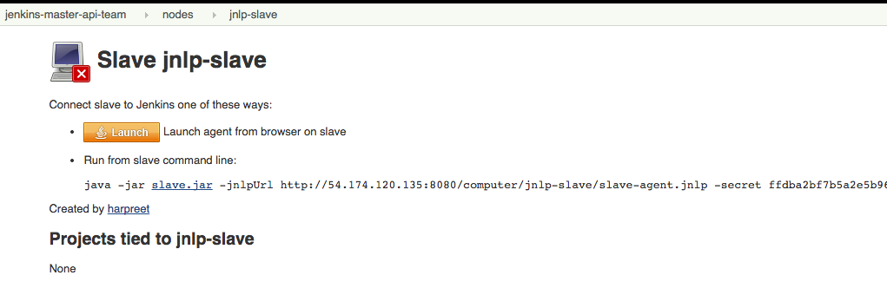
Figura 1. Comando de ativação do agente JNLP
Essa abordagem é conveniente para uma execução como um daemon no Unix.
-
Script personalizado : também é possível criar um script personalizado para inicializar a comunicação entre mestre e agente se as outras soluções não fornecerem flexibilidade suficiente para um caso de uso específico. O único requisito é que o script execute o programa java como um java -jar agent.jar no agente.
A instalação do agente do Windows pode seguir a abordagem SSH e JNLP padrão ou usar uma abordagem de configuração mais específica do Windows. Os agentes do Windows têm as seguintes opções:
-
Abordagem do conector SSH com Putty
-
Abordagem do conector SSH com Cygwin e OpenSSH : Esta é a abordagem mais fácil de configurar e recomendada.
-
Recursos de gerenciamento remoto (WMI + DCOM) : com essa abordagem, que utiliza o plug-in WMI Windows Agents ), o Jenkins master registrará o agente na máquina do agente do Windows, criando um serviço do Windows. O mestre Jenkins pode controlar os agentes, emitindo paradas / reinicializações / atualizações dos mesmos. No entanto, isso é difícil de configurar e não é recomendado.
-
Abordagem do conector JNLP : com essa abordagem , é possível registrar manualmente o agente como serviço do Windows, mas não será possível gerenciá-lo centralmente a partir do mestre. Cada parada / início / atualização do agente precisa ser executada manualmente na máquina do agente, a menos que seja executado o Jenkins 1.611 ou mais recente.
Criando agentes fungíveis
Configurando o Local das Ferramentas nos Agentes
A página de configuração Jenkins Global permite especificar as ferramentas necessárias durante as compilações (por exemplo, Ant, Maven, Java, etc).
Ao definir uma ferramenta, é possível criar um ponteiro para uma instalação existente, fornecendo o diretório em que o programa deve estar no agente. Outra opção é permitir que Jenkins cuide da instalação de uma versão específica no local especificado. Também é possível especificar mais de uma instalação para a mesma ferramenta, pois trabalhos diferentes podem precisar de versões diferentes da mesma ferramenta.
A opção "Padrão" pré-compilada chama o que já está instalado no agente e existe no PATH da máquina, mas isso retornará uma falha se a ferramenta ainda não estiver instalada e seu local não tiver sido adicionado à variável de sistema PATH.
Uma prática recomendada para evitar essa falha é configurar uma tarefa com a suposição de que o agente de destino não possui as ferramentas necessárias instaladas e incluir a instalação das ferramentas como parte do processo de construção.
Definir uma política para compartilhar máquinas do agente
Como mencionado anteriormente, os agentes devem ser intercambiáveis e padronizados para torná-los compartilháveis e otimizar o uso de recursos. Os agentes não devem ser personalizados para um conjunto específico de tarefas, nem para uma equipe específica.
Ultimamente, Jenkins se tornou cada vez mais popular, não apenas no CI, mas também no CD, o que significa que ele deve orquestrar tarefas e pipelines que envolvem equipes diferentes e perfis técnicos: desenvolvedores, pessoal de controle de qualidade e pessoal de Dev-Ops.
Nesse cenário, pode fazer sentido criar agentes personalizados e dedicados: geralmente são necessárias ferramentas diferentes por equipes diferentes (por exemplo, Puppet / Chef para a equipe de Operações) e as credenciais das equipes geralmente são armazenadas no agente para garantir sua proteção. e privacidade.
Para garantir a execução de um trabalho apenas em um único / grupo de agentes (ou seja, o iOS se baseia apenas em agentes OSX), é possível vincular o trabalho ao agente, especificando o rótulo do agente na página de configuração do trabalho. Observe que a restrição deve ser replicada em todos os trabalhos a serem vinculados e que o agente não estará protegido contra o uso de outras equipes.
Configurando agentes na nuvem
Os recursos de construção em nuvem podem ser uma solução para um caso em que é necessário manter um cluster razoavelmente pequeno de agentes no local, enquanto ainda fornece novos recursos de construção quando necessário.
Em particular, é possível descarregar a execução dos trabalhos para agentes na nuvem, graças a plug-ins ad-hoc, que gerenciarão a criação dos recursos da nuvem juntamente com sua destruição quando não forem mais necessários:
-
O plug-in do EC2 permite que o Jenkins use instâncias do AWS EC2 como recursos de criação de nuvem quando ficar sem agentes no local. Os agentes do EC2 serão criados dinamicamente em uma rede da AWS e desprovisionados quando não forem necessários.
-
O plug-in de agentes da VM do Azure ativa dinamicamente os agentes Jenkins como VMs do Azure por usuário, fornecendo configuração por modelos, incluindo suporte para integração de rede virtual e posicionamento de sub-rede. Os agentes inativos podem ser configurados para o desligamento automático para reduzir custos.
-
O plug-in JCloud cria a possibilidade de executar as tarefas em qualquer provedor de nuvem suportado pelas bibliotecas JCloud
Mestres Jenkins de tamanho certo
Recomendações abrangentes de hardware:
-
Hardware: consulte a página Recomendações de Hardware
Estratégias de divisão principal
O design da melhor arquitetura Jenkins para sua organização depende de como você estratifica o desenvolvimento de seus projetos e pode ser restringido por limitações dos plugins Jenkins existentes.
As três formas mais comuns de desenvolvimento de estratificação por mestres são:
-
Por ambiente (controle de qualidade, DEV etc.) - Com essa estratégia, os mestres Jenkins são preenchidos por tarefas com base no ambiente em que estão implantando.
-
Prós
-
Pode adaptar plugins em mestres para serem específicos às necessidades desse ambiente
-
Pode restringir facilmente o acesso a um ambiente apenas para usuários que usarão esse ambiente
-
-
Contras
-
Reduz a capacidade de criar pipelines
-
Não há como visualizar o fluxo completo entre mestres
-
A interrupção de um mestre bloqueará o fluxo de todos os produtos
-
-
-
Por organograma - Essa estratégia é quando os mestres são atribuídos às divisões dentro de uma organização.
-
Prós
-
Pode adaptar plug-ins em mestres para serem específicos às necessidades dessa equipe
-
Pode restringir facilmente o acesso aos projetos de uma divisão apenas aos usuários que estão nessa divisão
-
-
Contras
-
Reduz a capacidade de criar pipelines de divisão cruzada
-
Não há como visualizar o fluxo completo entre mestres
-
A interrupção de um mestre bloqueará o fluxo de todos os produtos
-
-
-
Agrupar mestres por linhas de produto - Quando um grupo de produtos, com apenas um produto crítico em cada grupo, obtém seus próprios mestres Jenkins.
-
Prós
-
Fluxos inteiros podem ser visualizados porque todas as etapas estão em um mestre
-
Reduz o impacto do tempo de inatividade de um mestre e afeta apenas um pequeno subconjunto de produtos
-
-
Contras
-
Uma estratégia para restringir permissões deve ser planejada para impedir que todos os usuários tenham acesso a todos os itens em um mestre.
-
-
Ao avaliar essas estratégias, é importante ponderá-las contra as armadilhas de escala vertical e horizontal discutidas na introdução.
Outra observação é que um número menor de tarefas se traduz em recuperação mais rápida de falhas e, mais importante, um tempo médio mais alto entre as falhas.
Calculando quantos trabalhos, mestres e executores são necessários
Ter a melhor estimativa possível das configurações necessárias para uma instalação Jenkins permite que uma organização comece com o pé direito com Jenkins e reduz o número de iterações de configuração necessárias para obter uma instalação ideal. O desafio para os arquitetos Jenkins é que o verdadeiro limite de escala vertical em um mestre Jenkins é limitado por qualquer hardware existente para o mestre, além de ser mais difícil de quantificar peças como os tipos de construções e testes que serão executados nos nós de construção .
Existe uma maneira de estimar aproximadamente quantos mestres, trabalhos e executores serão necessários com base nas necessidades de compilação e no número de desenvolvedores atendidos. Essas equações assumem que o mestre Jenkins terá 5 núcleos, com um núcleo por 100 trabalhos (500 trabalhos totais / mestre) e que as equipes serão divididas em grupos de 40.
Se você tiver informações sobre o número real de núcleos disponíveis no mestre planejado, poderá fazer ajustes nas equações "número de mestres" de acordo.
A equação para estimar o número de mestres e executores necessários quando o número de tarefas configuradas é conhecido é o seguinte:
masters = number of jobs/500
executors = number of jobs * 0.03A equação para estimar o número máximo de tarefas, mestres e executores necessários para uma organização com base no número de desenvolvedores é a seguinte:
number of jobs = number of developers * 3.333
number of masters = number of jobs/500
number of executors = number of jobs * 0.03Esses números fornecerão um bom ponto de partida para uma instalação Jenkins, mas podem ser necessários ajustes no tamanho real da instalação com base nos tipos de construções e testes executados por uma instalação.
Armazenamento escalável para mestres
Também é recomendável escolher um mestre, considerando o crescimento futuro do número de plug-ins ou tarefas armazenados no $ JENKINS_HOME do seu mestre . O armazenamento é barato e o Jenkins não requer acesso rápido ao disco para funcionar bem; portanto, é mais vantajoso investir em uma máquina maior para o seu mestre do que em uma mais rápida.
Diferentes sistemas operacionais para o Jenkins master também permitirão diferentes abordagens para o armazenamento expansível:
-
Volumes estendidos no Windows - em dispositivos NTFS como o Windows, você pode criar um volume estendido que permita adicionar novos volumes a um existente, mas que eles se comportem como um único volume. Para fazer isso, você precisará garantir que o Jenkins esteja instalado em uma partição separada, para que possa ser convertido em um volume estendido posteriormente.
-
Logical Volume Manager para Linux - O LVM gerencia unidades de disco e permite redimensionar volumes lógicos em tempo real. Muitas distribuições do Linux usam LVM quando estão instaladas, mas o Jenkins deve ter sua configuração de LVM.
-
ZFS para Solaris - O ZFS é ainda mais flexível que o LVM e os volumes estendidos e exige apenas que o $ JENKINS_HOME esteja em seu próprio sistema de arquivos. Isso facilita a criação de instantâneos, backups etc.
-
Links simbólicos - para sistemas com instalações existentes do Jenkins e que não podem usar nenhum dos métodos mencionados acima, os links simbólicos (links simbólicos) podem ser usados para armazenar pastas de tarefas em volumes separados com links simbólicos para esses diretórios.
Além disso, para impedir facilmente que uma pasta $ JENKINS_HOME fique inchada, torne obrigatório que os trabalhos descartem registros de compilação após um período de tempo específico e / ou após a execução de um número específico de compilações. Esta política pode ser definida na página de configuração de um trabalho.
Configurando uma Política de Backup
É uma prática recomendada fazer backups regulares do seu $ JENKINS_HOME. Um backup garante que sua instância do Jenkins possa ser restaurada, apesar de uma configuração incorreta, exclusão acidental de trabalho ou corrupção de dados.
Localizando seu $ JENKINS_HOME
janelas
Se você instalar o Jenkins com o instalador do Windows, o Jenkins será instalado como um serviço e o $ JENKINS_HOME padrão será "C: \ Arquivos de Programas (x86) \ jenkins".
Você pode editar o local do seu $ JENKINS_HOME abrindo o arquivo jenkins.xml e editando a variável $ JENKINS_HOME ou indo para a tela "Gerenciar Jenkins", clicando na opção "Instalar como serviço do Windows" no menu e editando o campo "Diretório de instalação" para apontar para outro diretório existente.
Mac OS X
Se você instalar o Jenkins com o instalador do OS X, poderá encontrar e editar o local do seu $ JENKINS_HOME editando a propriedade $ JENKINS_HOME do arquivo "Macintosh HD / Library / LaunchDaemons" .
Por padrão, o $ JENKINS_HOME será definido como "Macintosh HD / Usuários / Compartilhado / Jenkins".
Ubuntu / Debian
Se você instalar o Jenkins usando um pacote Debian, poderá encontrar e editar a localização do seu $ JENKINS_HOME editando o arquivo "/ etc / default / jenkins".
Por padrão, o $ JENKINS_HOME será definido como "/ var / lib / jenkins" e seu $ JENKINS_WAR apontará para "/usr/share/jenkins/jenkins.war".
Red Hat / CentOS / Fedora
Se você instalar o Jenkins como um pacote RPM, o $ JENKINS_HOME padrão será "/ var / lib / jenkins".
Você pode editar o local do seu $ JENKINS_HOME editando o arquivo "/ etc / sysconfig / jenkins".
openSUSE
Se você instalar o Jenkins como um pacote usando o zypper, poderá editar o $ JENKINS_HOME editando o arquivo "/ etc / sysconfig / jenkins".
O local padrão para o seu $ JENKINS_HOME será definido como "/ var / lib / jenkins" e a página inicial do $ JENKINS_WAR estará em "/ usr / lib / jenkins".
FreeBSD
Se você instalar o Jenkins usando uma porta, o $ JENKINS_HOME estará localizado no diretório em que você executar o comando "make". É recomendável criar uma pasta "/ usr / ports / devel / jenkins" e compilar o Jenkins nesse diretório.
Você poderá editar o $ JENKINS_HOME editando o "/ usr / local / etc / jenkins".
OpenBSD
Se você instalar o Jenkins usando um pacote, o $ JENKINS_HOME será definido por padrão como "/ var / jenkins".
Se você instalar o Jenkins usando uma porta, o $ JENKINS_HOME estará localizado no diretório em que você executar o comando "make". É recomendável criar uma pasta "/ usr / ports / devel / jenkins" e compilar o Jenkins nesse diretório.
Você poderá editar o $ JENKINS_HOME editando o arquivo "/ usr / local / etc / jenkins".
Solaris / OpenIndiana
O projeto Jenkins votou em 17 de setembro de 2014 para descontinuar os pacotes Solaris.
Anatomia de um $ JENKINS_HOME
A estrutura de pastas para um diretório $ JENKINS_HOME é a seguinte:
JENKINS_HOME
+- config.xml (Jenkins root configuration file)
+- *.xml (other site-wide configuration files)
+- identity.key (RSA key pair that identifies an instance)
+- secret.key (deprecated key used for some plugins' secure operations)
+- secret.key.not-so-secret (used for validating _$JENKINS_HOME_ creation date)
+- userContent (files served under your https://server/userContent/)
+- secrets (root directory for the secret+key for credential decryption)
+- hudson.util.Secret (used for encrypting some Jenkins data)
+- master.key (used for encrypting the hudson.util.Secret key)
+- InstanceIdentity.KEY (used to identity this instance)
+- fingerprints (stores fingerprint records, if any)
+- plugins (root directory for all Jenkins plugins)
+- [PLUGINNAME] (sub directory for each plugin)
+- META-INF (subdirectory for plugin manifest + pom.xml)
+- WEB-INF (subdirectory for plugin jar(s) and licenses.xml)
+- [PLUGINNAME].jpi (.jpi or .hpi file for the plugin)
+- jobs (root directory for all Jenkins jobs)
+- [JOBNAME] (sub directory for each job)
+- config.xml (job configuration file)
+- workspace (working directory for the version control system)
+- latest (symbolic link to the last successful build)
+- builds (stores past build records)
+- [BUILD_ID] (subdirectory for each build)
+- build.xml (build result summary)
+- log (log file)
+- changelog.xml (change log)
+- [FOLDERNAME] (sub directory for each folder)
+- config.xml (folder configuration file)
+- jobs (sub directory for all nested jobs)Segregando a configuração pura de dados menos duráveis
| Nenhuma migração de dados é tratada pelo Jenkins ao usar essas configurações. Portanto, você deseja usá-los desde o início ou certifique-se de levar em consideração quais dados deseja mover para o local certo antes de usar as seguintes opções. |
É possível separar a personalização de alguns dos layouts para separar melhor as configurações de trabalhos puros dos dados menos duráveis, como criar dados ou logs. [ 1 ]
Configurar trabalhos diferentes criar layout de dados
Historicamente, a configuração de um determinado trabalho está localizada abaixo $JENKINS_HOME/jobs/[JOB_NAME]/config.xmle suas construções estão abaixo $JENKINS_HOME/jobs/[JOB_NAME]/builds.
Isso normalmente torna mais impraticável configurar uma política de backup diferente ou configurar um disco mais rápido para tornar as compilações potencialmente mais rápidas.
Por exemplo, se você gostaria de mover-se constrói sob uma raiz diferente, você pode usar o seguinte valor: $JENKINS_VAR/${ITEM_FULL_NAME}/builds.
Observe que a partir do Jenkins 2.119, a interface do usuário foi substituída pela jenkins.model.Jenkins.buildsDirpropriedade do sistema. Veja as dedicadas Características controlada com as propriedades do sistema wiki página para mais detalhes.
Escolhendo uma estratégia de backup
Todas as suas configurações específicas do Jenkins que precisam de backup permanecerão no $ JENKINS_HOME , mas é uma boa prática fazer backup apenas de um subconjunto desses arquivos e pastas.
Abaixo estão algumas diretrizes a serem consideradas ao planejar sua estratégia de backup.
Exclusões
Quando se trata de criar um backup, é recomendável excluir o arquivamento das seguintes pastas para reduzir o tamanho do seu backup:
/ war (o diretório de guerra explodido de Jenkins) / cache (ferramentas baixadas) / tools (ferramentas extraídas)
Essas pastas serão recriadas automaticamente na próxima vez em que uma compilação for executada ou o Jenkins for iniciado.
Trabalhos e pastas
As configurações de sua tarefa ou pasta, históricos de construção, artefatos arquivados e espaço de trabalho existirão inteiramente dentro da pasta de tarefas .
O diretório de tarefas , aninhado em uma pasta ou no nível raiz, é o seguinte:
+- jobs (root directory for all Jenkins jobs)
+- [JOBNAME] (sub directory for each job)
+- config.xml (job configuration file)
+- workspace (working directory for the version control system)
+- latest (symbolic link to the last successful build)
+- builds (stores past build records)
+- [BUILD_ID] (subdirectory for each build)
+- build.xml (build result summary)
+- log (log file)
+- changelog.xml (change log)Se você precisar fazer backup apenas das configurações da tarefa, poderá optar por fazer backup apenas do config.xml para cada tarefa. Geralmente, os registros de construção e os espaços de trabalho não precisam de backup, pois os espaços de trabalho serão recriados quando uma tarefa for executada e os registros de construção são tão importantes quanto a organização o julga.
Configurações do sistema
As configurações do sistema da sua instância existem no nível raiz da pasta $ JENKINS_HOME :
+ - config.xml (arquivo de configuração raiz do Jenkins)
+ - * .xml (outros arquivos de configuração em todo o site)
O config.xml é o arquivo de configuração raiz do seu Jenkins. Inclui configurações para os caminhos das ferramentas instaladas, diretório do espaço de trabalho e porta do agente.
Qualquer arquivo .xml diferente daquele config.xml na pasta raiz Jenkins é um arquivo de configuração global para uma ferramenta ou plug-in instalado (por exemplo, Maven, Git, Ant, etc.). Isso inclui credentials.xml se o plug-in Credentials estiver instalado.
Se você deseja fazer backup apenas da sua configuração principal do Jenkins, precisará fazer o backup do config.xml .
Plugins
Os arquivos de plug-in da sua instância (.hpi e .jpi) e qualquer um de seus recursos dependentes (arquivos de ajuda, arquivos pom.xml etc.) existirão na pasta de plug - ins em $ JENKINS_HOME.
+ - plugins (diretório raiz de todos os plugins Jenkins)
+ - [PLUGINNAME] (subdiretório para cada plug-in)
+ - META-INF (subdiretório do manifesto do plug-in + pom.xml)
+ - WEB-INF (subdiretório para jar (s) de plug-in e license.xml)
+ - [PLUGINNAME] .jpi (arquivo .jpi ou .hpi para o plug-in)
É recomendável fazer backup de toda a pasta de plug-ins (pastas .hpi / .jpis +).
Outros dados
Outros dados que você recomenda fazer backup incluem o conteúdo da sua pasta de segredos , sua identidade.key , sua secret.key e seu arquivo secret.key.not-so-secret .
+ - identity.key (par de chaves RSA que identifica uma instância)
+ - secret.key (usado para várias operações seguras do Jenkins)
+ - secret.key.not-so-secret (usado para validar a data de criação de _ $ JENKINS_HOME_)
+ - userContent (arquivos exibidos em https: // server / userContent /)
+ - segredos (diretório para a descriptografia de segredo + chave)
+ - hudson.util.Secret (usado para criptografar alguns dados do Jenkins)
+ - master.key (usado para criptografar a chave hudson.util.Secret)
+ - InstanceIdentity.KEY (usado para identificar esta instância)
O identity.key é um par de chaves RSA que identifica e autentica a instância atual do Jenkins.
O secret.key é usado para criptografar o plug-in e outros dados do Jenkins e para estabelecer uma conexão segura entre um mestre e um agente.
O arquivo secret.key.not-so-secret é usado para validar quando o $ JENKINS_HOME foi criado. Também deve ser um sinalizador de que o arquivo secret.key é uma maneira obsoleta de criptografar informações.
Os arquivos na pasta secrets são usados pelo Jenkins para criptografar e descriptografar as credenciais armazenadas da sua instância, se houver alguma. A perda desses arquivos impedirá a recuperação de quaisquer credenciais armazenadas. O hudson.util.Secret é usado para criptografar alguns dados do Jenkins, como credentials.xml, enquanto o master.key é usado para criptografar a chave hudson.util.Secret. Por fim, o InstanceIdentity.KEY é usado para identificar essa instância e produzir assinaturas digitais.
Defina uma instância do Jenkins para reverter para
No caso de uma falha total da máquina, é importante garantir que haja um plano para colocar Jenkins novamente online e em seu último bom estado.
Se uma configuração de alta disponibilidade não foi ativada e nenhum backup do sistema de arquivos desse mestre foi realizado, a corrupção de uma máquina executando Jenkins significa que todos os dados e artefatos históricos de construção, configurações de tarefas e sistemas etc. serão perdidos e as configurações perdidas precisarão ser recriadas em uma nova instância.
-
Política de backup - Além de criar backups usando o guia de backup da seção anterior, é importante estabelecer uma política para selecionar qual backup deve ser usado ao restaurar um mestre desativado.
-
Restaurando a partir de um Backup - Um plano deve ser estabelecido para que o backup seja restaurado manualmente ou com scripts quando o primário for desativado.
Arquitetura resiliente de Jenkins
Os administradores estão constantemente adicionando mais e mais equipes à fábrica de software, tornando os administradores no negócio de tornar suas instâncias resilientes a falhas e dimensioná-las para integrar mais equipes.
Adicionar nós de construção a uma instância do Jenkins enquanto aprimora a máquina que executa o mestre do Jenkins é a maneira típica de escalar o Jenkins. Dito de forma diferente, os administradores escalam seu mestre Jenkins verticalmente. No entanto, há um limite para o quanto uma instância pode ser dimensionada. Essas limitações são abordadas na introdução deste capítulo.
Idealmente, os mestres serão configurados para se recuperar automaticamente de falhas sem intervenção humana. Existem servidores proxy monitorando mestres ativos e solicitações de redirecionamento para mestres de backup se o mestre ativo ficar inativo. Existem fatores adicionais que devem ser revisados no caminho para a entrega contínua. Esses fatores incluem componetizar o aplicativo em desenvolvimento, automatizar todo o pipeline (dentro de limites razoáveis) e liberar recursos controversos.
Etapa 1: torne cada mestre altamente disponível
Cada mestre Jenkins precisa ser configurado de forma que faça parte de um cluster Jenkins.
Um proxy (tipicamente HAProxy ou F5) fica à frente do mestre principal. A tarefa do proxy é monitorar continuamente o mestre principal e encaminhar solicitações para o backup se o primário ficar inativo. Para tornar a infraestrutura mais resiliente, você pode ter vários mestres de backup configurados.
Etapa 2: ativar a segurança
Configure um domínio de autenticação que o Jenkins usará para o banco de dados do usuário.
| Se você estiver tentando configurar uma prova de conceito, é recomendável usar o plug - in Mock Security Realm para autenticação. |
Etapa 3: adicionar nós de construção (agentes) ao mestre
Adicione servidores de construção ao seu mestre para garantir que você esteja realizando a execução real da construção do mestre, que deve ser um hub de orquestração, e em uma máquina "burra" com memória e E / S suficientes para uma determinada tarefa ou teste.
Etapa 4: configurar uma instância de teste
Uma instância de teste é normalmente usada para testar novas atualizações de plug-ins. Quando um plug-in está pronto para ser usado, ele deve ser instalado no centro de atualização da produção principal.
1 . Essas opções são usadas para configurar instâncias do Jenkins Essentials prontas para uso.
Apêndice
Essas seções geralmente são destinadas a administradores Jenkins e administradores de sistema. Cada seção cobre um tópico diferente, independente das outras seções. São tópicos avançados, material de referência e tópicos que não se enquadram em outros capítulos.
|
Para colaboradores : considere adicionar material em outro lugar antes de adicioná-lo aqui. De fato, tópicos que não se encaixam em outros lugares podem até estar fora do escopo deste manual. Consulte Contribuindo com Jenkins para obter detalhes de como entrar em contato com os colaboradores do projeto e discutir o que você deseja adicionar. |
Glossário
Termos gerais
- Agente
-
Um agente geralmente é uma máquina ou contêiner, que se conecta a um mestre Jenkins e executa tarefas quando dirigido pelo mestre.
- Artefato
-
Um arquivo imutável gerado durante uma execução do Build ou Pipeline que é arquivado no Jenkins Master para recuperação posterior pelos usuários.
- Construir
-
Resultado de uma única execução de um Projeto
- Nuvem
-
Uma configuração do sistema que fornece provisionamento e alocação dinâmicos de agentes , como o fornecido pelos agentes da VM do Azure ou pelos plug-ins do Amazon EC2 .
- Testemunho
-
O aplicativo principal Jenkins (
jenkins.war), que fornece a interface da Web, a configuração e a base básicas sobre as quais os Plug-ins podem ser construídos. - Rio abaixo
-
Um pipeline ou projeto configurado que é acionado como parte da execução de um pipeline ou projeto separado.
- Executor
-
Um slot para execução do trabalho definido por um Pipeline ou Projeto em um Nó . Um Nó pode ter zero ou mais Executores configurados, o que corresponde a quantos Projetos ou Pipelines simultâneos são capazes de executar nesse Nó.
- Impressão digital
-
Um hash considerado globalmente exclusivo para rastrear o uso de um Artefato ou outra entidade em vários Pipelines ou Projetos .
- Pasta
-
Um contêiner organizacional para Pipelines e / ou Projetos , semelhante às pastas em um sistema de arquivos.
- Item
-
Uma entidade na interface do usuário da web correspondente a: Pasta , Pipeline ou Projeto .
- URL de Jenkins
-
O URL principal do aplicativo jenkins, conforme visitado por um usuário. por exemplo, https://ci.jenkins.io/
- Trabalho
-
Um termo descontinuado, sinônimo de Projeto .
- Rótulo
-
Texto definido pelo usuário para agrupar agentes , geralmente por funcionalidade ou capacidade semelhante. Por exemplo,
linuxpara agentes baseados em Linux oudockerpara agentes compatíveis com Docker. - mestre
-
O processo central de coordenação que armazena a configuração, carrega plugins e renderiza as várias interfaces de usuário do Jenkins.
- Nó
-
Uma máquina que faz parte do ambiente Jenkins e é capaz de executar pipelines ou projetos . O mestre e os agentes são considerados nós.
- Projeto
-
Uma descrição configurada pelo usuário do trabalho que Jenkins deve executar, como a criação de um software, etc.
- Pipeline
-
Um modelo definido pelo usuário de um pipeline de entrega contínua, para obter mais informações, consulte o capítulo Pipeline neste manual.
- Plugar
-
Uma extensão para a funcionalidade Jenkins fornecida separadamente do Jenkins Core .
- Editor
-
Parte de uma compilação após a conclusão de todas as etapas configuradas que publica relatórios, envia notificações etc. Um editor pode relatar resultados estáveis ou instáveis, dependendo do resultado de seu processamento e configuração. Por exemplo, se um teste JUnit falhar, todo o editor JUnit poderá relatar o resultado da compilação como Instável .
- URL raiz do recurso
-
Um URL secundário usado para veicular conteúdo potencialmente não confiável (especialmente criar artefatos). Este URL é diferente do URL Jenkins .
- Palco
-
stagefaz parte do Pipeline e é usado para definir um subconjunto conceitualmente distinto de todo o Pipeline, por exemplo: "Build", "Test" e "Deploy", que é usado por muitos plugins para visualizar ou apresentar o status / progresso do Jenkins Pipeline. - Degrau
-
Uma única tarefa; fundamentalmente, as etapas dizem ao Jenkins o que fazer dentro de um pipeline ou projeto .
- Desencadear
-
Um critério para acionar uma nova execução ou compilação do pipeline .
- Centro de Atualização
-
Inventário hospedado de plug-ins e metadados de plug-ins para permitir a instalação de plug-ins no Jenkins.
- Rio acima
-
Um pipeline ou projeto configurado que aciona um pipeline ou projeto separado como parte de sua execução.
- Área de trabalho
-
Um diretório descartável no sistema de arquivos de um Nó onde o trabalho pode ser realizado por um Pipeline ou Projeto . Os espaços de trabalho geralmente são mantidos no local após a execução de uma compilação ou pipeline, a menos que políticas específicas de limpeza do espaço de trabalho tenham sido implementadas no Jenkins Master .
Status da compilação
- Abortado
-
O Build foi interrompido antes de atingir o final esperado. Por exemplo, o usuário o interrompeu manualmente ou houve um tempo limite.
- Falhou
-
O Build teve um erro fatal.
- Estábulo
-
A compilação foi bem - sucedida e nenhum editor a relata como instável .
- Bem sucedido
-
O Build não possui erros de compilação.
- Instável
-
O Build teve alguns erros, mas eles não foram fatais. Uma compilação é instável se tiver sido criada com êxito e um ou mais editores a reportarem instável. Por exemplo, se o editor JUnit estiver configurado e um teste falhar, o Build será marcado como instável.
Introdução à Visita Guiada
Esta visita guiada apresenta os conceitos básicos do uso do Jenkins e seu principal recurso, o Jenkins Pipeline. Este passeio usa a distribuição Jenkins "independente", que é executada localmente em sua própria máquina.
Pré-requisitos
Para este passeio, você precisará de:
-
Uma máquina com:
-
256 MB de RAM, embora sejam recomendados mais de 512 MB
-
10 GB de espaço em disco (para Jenkins e sua imagem do Docker)
-
-
O seguinte software instalado:
-
Java 8 ou 11 (um JRE ou Java Development Kit (JDK) está bom)
-
Docker (acesse Get Docker na parte superior do site para acessar o download do Docker adequado para sua plataforma)
-
Faça o download e execute o Jenkins
-
Abra um terminal no diretório de download.
-
Corra
java -jar jenkins.war --httpPort=8080. -
Navegue para
http://localhost:8080. -
Siga as instruções para completar a instalação.
Quando a instalação estiver concluída, você poderá começar a colocar o Jenkins em funcionamento!
Criando seu primeiro pipeline
Índice
O que é um pipeline Jenkins?
O Jenkins Pipeline (ou simplesmente "Pipeline") é um conjunto de plug-ins que suporta a implementação e integração de pipelines de entrega contínua no Jenkins.
Um pipeline de entrega contínua é uma expressão automatizada do seu processo para obter software do controle de versão diretamente para seus usuários e clientes.
O Jenkins Pipeline fornece um conjunto extensível de ferramentas para modelar pipelines de entrega simples a complexos "como código". A definição de um Jenkins Pipeline geralmente é gravada em um arquivo de texto (chamado a Jenkinsfile), que por sua vez é verificado no repositório de controle de origem de um projeto.
[ 1 ]
Para obter mais informações sobre o Pipeline e o que Jenkinsfileé, consulte as respectivas seções Pipeline e
Using a Jenkinsfile do Manual do Usuário.
Para começar rapidamente com o Pipeline:
-
Copie um dos exemplos abaixo em seu repositório e nomeie-o
Jenkinsfile -
Clique no menu Novo Item no Jenkins
-
Forneça um nome para o seu novo item (por exemplo, My Pipeline ) e selecione Multibranch Pipeline
-
Clique no botão Adicionar fonte , escolha o tipo de repositório que você deseja usar e preencha os detalhes.
-
Clique no botão Salvar e assista à sua primeira execução no Pipeline!
Pode ser necessário modificar um dos exemplos Jenkinsfile para executá-lo com seu projeto. Tente modificar o shcomando para executar o mesmo comando que você executaria em sua máquina local.
Após a configuração do seu pipeline, o Jenkins detectará automaticamente quaisquer novas ramificações ou solicitações pull criadas em seu repositório e começará a executar pipelines para eles.
Exemplos de início rápido
Abaixo estão alguns exemplos facilmente copiados e colados de um pipeline simples com vários idiomas.
Java
Jenkinsfile (pipeline declarativo)
pipeline {
agent { docker { image 'maven:3.3.3' } }
stages {
stage('build') {
steps {
sh 'mvn --version'
}
}
}
}Node.js / JavaScript
Jenkinsfile (pipeline declarativo)
pipeline {
agent { docker { image 'node:6.3' } }
stages {
stage('build') {
steps {
sh 'npm --version'
}
}
}
}Rubi
Jenkinsfile (pipeline declarativo)
pipeline {
agent { docker { image 'ruby' } }
stages {
stage('build') {
steps {
sh 'ruby --version'
}
}
}
}Pitão
Jenkinsfile (pipeline declarativo)
pipeline {
agent { docker { image 'python:3.5.1' } }
stages {
stage('build') {
steps {
sh 'python --version'
}
}
}
}Executando várias etapas
Os pipelines são compostos de várias etapas que permitem criar, testar e implantar aplicativos. O Jenkins Pipeline permite compor várias etapas de uma maneira fácil que pode ajudá-lo a modelar qualquer tipo de processo de automação.
Pense em um "passo" como um único comando que executa uma única ação. Quando um passo é bem-sucedido, ele passa para o próximo passo. Quando uma etapa falha na execução correta, o Pipeline falha.
Quando todas as etapas do Pipeline foram concluídas com êxito, considera-se que o Pipeline foi executado com êxito.
Linux, BSD e Mac OS
Nos sistemas Linux, BSD e Mac OS (tipo Unix), a shetapa é usada para executar um comando shell em um Pipeline.
Jenkinsfile (pipeline declarativo)
pipeline {
agent any
stages {
stage('Build') {
steps {
sh 'echo "Hello World"'
sh '''
echo "Multiline shell steps works too"
ls -lah
'''
}
}
}
}janelas
Os sistemas baseados no Windows devem usar a batetapa para executar comandos em lote.
Jenkinsfile (pipeline declarativo)
pipeline {
agent any
stages {
stage('Build') {
steps {
bat 'set'
}
}
}
}Tempos limite, tentativas e mais
Existem algumas etapas poderosas que "envolvem" outras etapas que podem resolver facilmente problemas como tentar novamente ( retry) até que seja bem-sucedido ou sair se um passo demorar muito ( timeout).
Jenkinsfile (pipeline declarativo)
pipeline {
agent any
stages {
stage('Deploy') {
steps {
retry(3) {
sh './flakey-deploy.sh'
}
timeout(time: 3, unit: 'MINUTES') {
sh './health-check.sh'
}
}
}
}
}O estágio "Deploy" tenta o flakey-deploy.shscript novamente três vezes e aguarda até 3 minutos para a health-check.shexecução do script. Se o script de verificação de integridade não for concluído em 3 minutos, o Pipeline será marcado como tendo falhado no estágio "Implementar".
Etapas de "invólucro", como timeoute retrypodem conter outras etapas, incluindo timeoutou retry.
Podemos compor esses passos juntos. Por exemplo, se desejamos repetir nossa implantação 5 vezes, mas nunca queremos gastar mais de 3 minutos no total antes de falhar no estágio:
Jenkinsfile (pipeline declarativo)
pipeline {
agent any
stages {
stage('Deploy') {
steps {
timeout(time: 3, unit: 'MINUTES') {
retry(5) {
sh './flakey-deploy.sh'
}
}
}
}
}
}Terminando
Quando o pipeline terminar de executar, talvez seja necessário executar as etapas de limpeza ou executar algumas ações com base no resultado do pipeline. Essas ações podem ser executadas na postseção
Jenkinsfile (pipeline declarativo)
pipeline {
agent any
stages {
stage('Test') {
steps {
sh 'echo "Fail!"; exit 1'
}
}
}
post {
always {
echo 'This will always run'
}
success {
echo 'This will run only if successful'
}
failure {
echo 'This will run only if failed'
}
unstable {
echo 'This will run only if the run was marked as unstable'
}
changed {
echo 'This will run only if the state of the Pipeline has changed'
echo 'For example, if the Pipeline was previously failing but is now successful'
}
}
}Definindo ambientes de execução
Na
seção anterior,
você deve ter notado a agentdiretiva em cada um dos exemplos. A
agentdiretiva informa ao Jenkins onde e como executar o Pipeline, ou subconjunto dele. Como você pode esperar, agenté necessário para todos os pipelines.
Debaixo do capô, existem algumas coisas agentque podem acontecer:
-
Todas as etapas contidas no bloco são enfileiradas para execução por Jenkins. Assim que um executor estiver disponível, as etapas começarão a ser executadas.
-
É alocado um espaço de trabalho que conterá arquivos retirados do controle de origem, bem como quaisquer arquivos de trabalho adicionais para o Pipeline.
Existem várias maneiras de definir agentes para uso no Pipeline. Neste tour, focaremos apenas o uso de um contêiner efêmero do Docker.
O Pipeline foi projetado para usar facilmente imagens e contêineres do Docker para execução interna. Isso permite que o Pipeline defina o ambiente e as ferramentas necessárias sem precisar configurar várias ferramentas e dependências do sistema nos agentes manualmente. Essa abordagem permite que você use praticamente qualquer ferramenta que possa ser empacotada em um contêiner do Docker .
Para mais opções de especificação do agente, consulte a referência de sintaxe .
Jenkinsfile (pipeline declarativo)
pipeline {
agent {
docker { image 'node:7-alpine' }
}
stages {
stage('Test') {
steps {
sh 'node --version'
}
}
}
}Quando o Pipeline é executado, o Jenkins inicia automaticamente o contêiner especificado e executa as etapas definidas nele:
[Pipeline] stage
[Pipeline] { (Test)
[Pipeline] sh
[guided-tour] Running shell script
+ node --version
v7.4.0
[Pipeline] }
[Pipeline] // stage
[Pipeline] }Usando variáveis de ambiente
Índice
As variáveis de ambiente podem ser definidas globalmente, como no exemplo abaixo, ou por estágio. Como você pode esperar, definir variáveis de ambiente por estágio significa que elas serão aplicadas apenas ao estágio em que são definidas.
Jenkinsfile (pipeline declarativo)
pipeline {
agent {
label '!windows'
}
environment {
DISABLE_AUTH = 'true'
DB_ENGINE = 'sqlite'
}
stages {
stage('Build') {
steps {
echo "Database engine is ${DB_ENGINE}"
echo "DISABLE_AUTH is ${DISABLE_AUTH}"
sh 'printenv'
}
}
}
}Essa abordagem para definir variáveis de ambiente de dentro do Jenkinsfile
pode ser muito útil para instruir scripts, como a Makefile, a configurar a compilação ou testes de maneira diferente para executá-los dentro do Jenkins.
Consulte "Usando variáveis de ambiente" para obter mais detalhes sobre o uso de variáveis de ambiente em Pipelines.
As variáveis de ambiente também podem ser definidas pelos plugins Jenkins. Consulte a documentação dos plug-ins específicos para obter nomes e descrições de variáveis de ambiente para esses plug-ins.
Outro uso comum para variáveis de ambiente é definir ou substituir credenciais "fictícias" nos scripts de construção ou teste. Como é ( obviamente ) uma péssima idéia colocar credenciais diretamente em um Jenkinsfile, o Jenkins Pipeline permite que os usuários acessem credenciais predefinidas de maneira rápida e segura, Jenkinsfilesem precisar conhecer seus valores.
Credenciais no ambiente
Consulte Manipulando credenciais no Manual do usuário para obter mais informações.
Gravando Testes e Artefatos
Embora o teste seja uma parte crítica de um bom pipeline de entrega contínua, a maioria das pessoas não deseja filtrar milhares de linhas de saída do console para encontrar informações sobre falhas nos testes. Para tornar isso mais fácil, o Jenkins pode registrar e agregar resultados de testes, desde que o executor de testes possa produzir arquivos de resultados de testes. O Jenkins geralmente vem junto com a junitetapa, mas se o executor de teste não puder gerar relatórios XML no estilo JUnit, existem plugins adicionais que processam praticamente qualquer formato de relatório de teste amplamente usado.
Para coletar nossos resultados e artefatos de teste, usaremos a postseção
Jenkinsfile (pipeline declarativo)
pipeline {
agent any
stages {
stage('Test') {
steps {
sh './gradlew check'
}
}
}
post {
always {
junit 'build/reports/**/*.xml'
}
}
}Isso sempre captura os resultados dos testes e permite que Jenkins os rastreie, calcule tendências e relate sobre eles. Um pipeline com testes que falharão será marcado como " INSTÁVEL ", indicado em amarelo na interface do usuário da web. Isso é diferente do estado " FAILED ", indicado por vermelho.
A execução do pipeline, por padrão, continuará mesmo quando a compilação estiver instável. Para ignorar a implantação após falhas de teste na sintaxe declarativa, use a skipStagesAfterUnstableopção Na sintaxe com script, você pode verificar currentBuild.currentResult == 'SUCCESS'.
|
Quando há falhas no teste, geralmente é útil pegar artefatos criados no Jenkins para análise e investigação local. Isso é praticado pelo suporte interno de Jenkins para armazenar "artefatos", arquivos gerados durante a execução do Pipeline.
Isso é feito facilmente com a archiveArtifactsetapa e uma expressão de arquivo oculto, como é demonstrado no exemplo abaixo:
Jenkinsfile (pipeline declarativo)
pipeline {
agent any
stages {
stage('Build') {
steps {
sh './gradlew build'
}
}
stage('Test') {
steps {
sh './gradlew check'
}
}
}
post {
always {
archiveArtifacts artifacts: 'build/libs/**/*.jar', fingerprint: true
junit 'build/reports/**/*.xml'
}
}
}Se mais de um parâmetro for especificado na archiveArtifactsetapa, o nome de cada parâmetro deverá ser explicitamente especificado no código da etapa - ou seja,
artifactspara o caminho do artefato e o nome do arquivo e fingerprintpara escolher esta opção. Se você precisar especificar apenas o caminho e os nomes dos arquivos dos artefatos, poderá omitir o nome do parâmetro artifacts- por exemplo,
archiveArtifacts 'build/libs/**/*.jar'
A gravação de testes e artefatos no Jenkins é útil para colocar informações de maneira rápida e fácil a vários membros da equipe. Na próxima seção, falaremos sobre como contar aos membros da equipe o que está acontecendo em nosso Pipeline.
Limpeza e notificações
Como a postseção de um pipeline é garantida para execução no final da execução de um pipeline, podemos adicionar algumas notificações ou outras etapas para executar a finalização, notificação ou outras tarefas de final de pipeline.
| Consulte o Glossário - Status da compilação para obter os diferentes status de compilação: SUCESSO, INSTÁVEL e FAILED. |
Jenkinsfile (pipeline declarativo)
pipeline {
agent any
stages {
stage('No-op') {
steps {
sh 'ls'
}
}
}
post {
always {
echo 'One way or another, I have finished'
deleteDir() /* clean up our workspace */
}
success {
echo 'I succeeeded!'
}
unstable {
echo 'I am unstable :/'
}
failure {
echo 'I failed :('
}
changed {
echo 'Things were different before...'
}
}
}Existem várias maneiras de enviar notificações. Abaixo estão alguns trechos que demonstram como enviar notificações sobre um Pipeline para um email, uma sala do Hipchat ou um canal do Slack.
O email
post {
failure {
mail to: 'team@example.com',
subject: "Failed Pipeline: ${currentBuild.fullDisplayName}",
body: "Something is wrong with ${env.BUILD_URL}"
}
}Hipchat
post {
failure {
hipchatSend message: "Attention @here ${env.JOB_NAME} #${env.BUILD_NUMBER} has failed.",
color: 'RED'
}
}Slack
post {
success {
slackSend channel: '#ops-room',
color: 'good',
message: "The pipeline ${currentBuild.fullDisplayName} completed successfully."
}
}Agora que a equipe está sendo notificada quando as coisas estão falhando, instáveis ou até bem-sucedidas, podemos concluir nosso pipeline de entrega contínua com a parte interessante: remessa!
Desdobramento, desenvolvimento
Índice
O pipeline de entrega contínua mais básico terá, no mínimo, três estágios que devem ser definidos em Jenkinsfile: Compilar, Testar e Implementar. Nesta seção, focaremos principalmente o estágio Deploy, mas deve-se observar que os estágios estáveis de Build and Test são um precursor importante de qualquer atividade de implantação.
Jenkinsfile (pipeline declarativo)
pipeline {
agent any
options {
skipStagesAfterUnstable()
}
stages {
stage('Build') {
steps {
echo 'Building'
}
}
stage('Test') {
steps {
echo 'Testing'
}
}
stage('Deploy') {
steps {
echo 'Deploying'
}
}
}
}Etapas como ambientes de implantação
Um padrão comum é estender o número de estágios para capturar ambientes de implementação adicionais, como "teste" ou "produção", conforme mostrado no snippet a seguir.
stage('Deploy - Staging') {
steps {
sh './deploy staging'
sh './run-smoke-tests'
}
}
stage('Deploy - Production') {
steps {
sh './deploy production'
}
}Neste exemplo, estamos assumindo que quaisquer "testes de fumaça" executados por nosso
./run-smoke-testsscript são suficientes para qualificar ou validar uma liberação para o ambiente de produção. Esse tipo de pipeline que implanta automaticamente o código até a produção pode ser considerado uma implementação de "implantação contínua". Embora esse seja um ideal nobre, para muitos, existem boas razões pelas quais a implantação contínua pode não ser prática, mas elas ainda podem aproveitar os benefícios da entrega contínua .
[ 1 ] O
Jenkins Pipeline suporta prontamente ambos.
Solicitando a contribuição humana para prosseguir
Freqüentemente, ao passar entre estágios, especialmente os estágios do ambiente, você pode querer informações humanas antes de continuar. Por exemplo, para julgar se o aplicativo está em um estado bom o suficiente para "promover" o ambiente de produção. Isso pode ser realizado com a inputetapa. No exemplo abaixo, o estágio "Sanity check" bloqueia a entrada e não prossegue sem que uma pessoa confirme o progresso.
Jenkinsfile (pipeline declarativo)
pipeline {
agent any
stages {
/* "Build" and "Test" stages omitted */
stage('Deploy - Staging') {
steps {
sh './deploy staging'
sh './run-smoke-tests'
}
}
stage('Sanity check') {
steps {
input "Does the staging environment look ok?"
}
}
stage('Deploy - Production') {
steps {
sh './deploy production'
}
}
}
}Conclusão
Este tour guiado apresentou os conceitos básicos do uso do Jenkins e do Jenkins Pipeline. Como o Jenkins é extremamente extensível, ele pode ser modificado e configurado para lidar com praticamente qualquer aspecto da automação. Para saber mais sobre o que a Jenkins pode fazer, consulte o Manual do usuário ou o blog da Jenkins para obter os eventos, tutoriais e atualizações mais recentes.
Visão geral dos tutoriais
Esta parte da documentação do usuário do Jenkins contém uma série de tutoriais introdutórios para ajudá-lo a começar a construir seus aplicativos de maneira automatizada com o Jenkins.
Se você é um desenvolvedor que deseja melhorar seu entendimento dos conceitos de Integração Contínua (IC) / Entrega Contínua (CD), ou já deve estar familiarizado com esses conceitos, mas ainda não sabe como implementá-los no Jenkins, então estes tutoriais são um ótimo lugar para começar.
Pipeline
Os tutoriais a seguir mostram como usar os principais recursos do Jenkins para facilitar a implementação dos processos de CI / CD para criar seus aplicativos:
-
Publicando relatórios HTML no pipeline ( pipeline declarativo , pipeline com script )
-
Enviando notificações no pipeline: pipeline declarativo , pipeline com script )
-
Convertendo etapas de criação condicional no pipeline Jenkins
Blue Ocean
-
Introdução ao Visual Pipeline Editor da Blue Ocean ( guia , guia de vídeo )
Usando ferramentas de construção
Os tutoriais a seguir mostram como usar o Jenkins para cobrir o básico dos conceitos de CI / CD com base em pilhas de tecnologia específicas.
Escolha o tutorial que é relevante para sua pilha de tecnologia ou aquele que você mais conhece:
Mais tutoriais
Você pode encontrar mais tutoriais nos posts do tutorial .
Crie um aplicativo Java com o Maven
Índice
Este tutorial mostra como usar o Jenkins para orquestrar a construção de um aplicativo Java simples com o Maven .
Se você é um desenvolvedor Java que usa o Maven e é novo nos conceitos de CI / CD, ou pode estar familiarizado com esses conceitos, mas não sabe como implementar a construção de seu aplicativo usando o Jenkins, este tutorial é para você.
O aplicativo Java simples (que você obterá de um repositório de amostra no GitHub) gera a string "Hello world!" e é acompanhado por alguns testes de unidade para verificar se o aplicativo principal funciona conforme o esperado. Os resultados desses testes são salvos em um relatório XML do JUnit.
Duração: este tutorial leva de 20 a 40 minutos para ser concluído (supondo que você já cumpriu os pré - requisitos abaixo). A duração exata dependerá da velocidade da sua máquina e se ou não você já executar Jenkins em Docker de outro tutorial .
Você pode interromper este tutorial a qualquer momento e continuar de onde parou.
Se você já executou outro tutorial , pode pular as seções Pré - requisitos e Executar Jenkins no Docker abaixo e continuar a bifurcar o repositório de amostra . (Apenas verifique se o Git está instalado localmente.) Se você precisar reiniciar o Jenkins, siga as instruções de reinicialização em Parando e reiniciando o Jenkins e continue.
Pré-requisitos
Para este tutorial, você precisará de:
-
Uma máquina macOS, Linux ou Windows com:
-
256 MB de RAM, embora sejam recomendados mais de 512 MB.
-
10 GB de espaço em disco para Jenkins e suas imagens e contêineres do Docker.
-
-
O seguinte software instalado:
-
Docker - Leia mais sobre a instalação do Docker na seção Instalando o Docker da página Instalando o Jenkins .
Nota: Se você usa Linux, este tutorial pressupõe que você não esteja executando os comandos do Docker como usuário root, mas com uma única conta de usuário que também tenha acesso a outras ferramentas usadas neste tutorial. -
Git e, opcionalmente, GitHub Desktop .
-
Execute o Jenkins no Docker
Neste tutorial, você estará executando o Jenkins como um contêiner do jenkinsci/blueoceanDocker na imagem do
Docker.
Para executar o Jenkins no Docker, siga as instruções relevantes abaixo para o macOS e Linux ou Windows .
Você pode ler mais sobre os conceitos de contêiner e imagem do Docker nas seções Docker e Download e execução do Jenkins nas Docker da página Instalando o Jenkins .
No macOS e Linux
-
Abra uma janela do terminal.
-
Crie uma rede de ponte no Docker usando o seguinte
docker network createcomando:docker network create jenkins -
Crie os seguintes volumes para compartilhar os certificados TLS do cliente Docker necessários para conectar-se ao daemon do Docker e persistir os dados do Jenkins usando os seguintes
docker volume createcomandos:docker volume create jenkins-docker-certs docker volume create jenkins-data -
Para executar comandos do Docker dentro dos nós Jenkins, faça o download e execute a
docker:dindimagem do Docker usando o seguintedocker container runcomando:docker container run --name jenkins-docker --rm --detach \ --privileged --network jenkins --network-alias docker \ --env DOCKER_TLS_CERTDIR=/certs \ --volume jenkins-docker-certs:/certs/client \ --volume jenkins-data:/var/jenkins_home \ --volume "$HOME":/home docker:dind -
Execute a
jenkinsci/blueoceanimagem como um contêiner no Docker usando o seguintedocker container runcomando (lembre-se de que este comando baixa automaticamente a imagem se isso não tiver sido feito):docker container run --name jenkins-tutorial --rm --detach \ --network jenkins --env DOCKER_HOST=tcp://docker:2376 \ --env DOCKER_CERT_PATH=/certs/client --env DOCKER_TLS_VERIFY=1 \ --volume jenkins-data:/var/jenkins_home \ (1) --volume jenkins-docker-certs:/certs/client:ro \ --volume "$HOME":/home \ (2) --publish 8080:8080 jenkinsci/blueocean1 Mapeia o /var/jenkins_homediretório no recipiente ao Docker de volume com o nomejenkins-data. Se esse volume não existir, essedocker container runcomando criará automaticamente o volume para você.2 Mapeia o $HOMEdiretório na máquina host (ou seja, o seu local) (geralmente o/Users/<your-username>diretório) para o/homediretório no contêiner.Nota: Se copiar e colar o snippet de comando acima não funcionar, tente copiar e colar esta versão sem anotações aqui:
docker container run --name jenkins-tutorial --rm --detach \ --network jenkins --env DOCKER_HOST=tcp://docker:2376 \ --env DOCKER_CERT_PATH=/certs/client --env DOCKER_TLS_VERIFY=1 \ --volume jenkins-data:/var/jenkins_home \ --volume jenkins-docker-certs:/certs/client:ro \ --volume "$HOME":/home --publish 8080:8080 jenkinsci/blueocean -
Prossiga para o Assistente de instalação .
No Windows
O projeto Jenkins fornece uma imagem de contêiner do Linux, não uma imagem de contêiner do Windows. Verifique se a instalação do Docker for Windows está configurada para executar em Linux Containersvez de Windows Containers. Consulte a documentação do Docker para obter instruções sobre como alternar para contêineres Linux . Depois de configurados para execução Linux Containers, as etapas são:
-
Abra uma janela do prompt de comando.
-
Crie uma rede de ponte no Docker usando o seguinte
docker network createcomando:docker network create jenkins -
Crie os seguintes volumes para compartilhar os certificados TLS do cliente Docker necessários para conectar-se ao daemon do Docker e persistir os dados do Jenkins usando os seguintes
docker volume createcomandos:docker volume create jenkins-docker-certs docker volume create jenkins-data -
Para executar comandos do Docker dentro dos nós Jenkins, faça o download e execute a
docker:dindimagem do Docker usando o seguintedocker container runcomando:docker container run --name jenkins-docker --rm --detach ^ --privileged --network jenkins --network-alias docker ^ --env DOCKER_TLS_CERTDIR=/certs ^ --volume jenkins-docker-certs:/certs/client ^ --volume jenkins-data:/var/jenkins_home ^ --volume "%HOMEDRIVE%%HOMEPATH%":/home ^ docker:dind -
Execute a
jenkinsci/blueoceanimagem como um contêiner no Docker usando o seguintedocker container runcomando (lembre-se de que este comando baixa automaticamente a imagem se isso não tiver sido feito):docker container run --name jenkins-tutorial --rm --detach ^ --network jenkins --env DOCKER_HOST=tcp://docker:2376 ^ --env DOCKER_CERT_PATH=/certs/client --env DOCKER_TLS_VERIFY=1 ^ --volume jenkins-data:/var/jenkins_home ^ --volume jenkins-docker-certs:/certs/client:ro ^ --volume "%HOMEDRIVE%%HOMEPATH%":/home ^ --publish 8080:8080 --publish 50000:50000 jenkinsci/blueoceanPara obter uma explicação dessas opções, consulte as instruções do macOS e Linux acima.
-
Prossiga para o Assistente de instalação .
Acessando o contêiner Jenkins / Blue Ocean Docker
Se você tem alguma experiência com o Docker e deseja ou precisa acessar o contêiner Jenkins / Blue Ocean Docker por meio de um prompt de terminal / comando usando o
docker container exec
comando, você pode adicionar uma opção como --name jenkins-tutorialo docker execcomando. Isso acessará o contêiner Jenkins Docker chamado "jenkins-tutorial".
Isso significa que você pode acessar o contêiner Jenkins / Blue Ocean (através de uma janela separada do terminal / prompt de comando) com um docker container execcomando como:
docker container exec -it jenkins-tutorial bash
Assistente de configuração
Antes de acessar o Jenkins, existem algumas etapas "únicas" que você precisará executar.
Desbloqueando Jenkins
Quando você acessa uma nova instância do Jenkins pela primeira vez, é solicitado que você a desbloqueie usando uma senha gerada automaticamente.
-
Depois que os 2 conjuntos de asteriscos aparecerem na janela do terminal / prompt de comando, procure
http://localhost:8080e aguarde até a página Desbloquear Jenkins aparecer. -
Exiba o log do console Jenkins com o comando:
docker logs jenkins-tutorial -
Na janela do terminal / prompt de comando novamente, copie a senha alfanumérica gerada automaticamente (entre os 2 conjuntos de asteriscos).
-
Na página Desbloquear Jenkins , cole essa senha no campo Senha do administrador e clique em Continuar .
Personalizando o Jenkins com plug-ins
Depois de desbloquear o Jenkins , a página Personalizar Jenkins é exibida.
Nesta página, clique em Instalar plug-ins sugeridos .
O assistente de instalação mostra a progressão do Jenkins sendo configurado e os plug-ins sugeridos sendo instalados. Esse processo pode demorar alguns minutos.
Criando o primeiro usuário administrador
Por fim, Jenkins solicita que você crie seu primeiro usuário administrador.
-
Quando a página Criar primeiro usuário administrador aparecer, especifique seus detalhes nos respectivos campos e clique em Salvar e concluir .
-
Quando a página Jenkins estiver pronta aparecer, clique em Iniciar o uso do Jenkins .
Notas:-
Esta página pode indicar que Jenkins está quase pronto! em vez disso, clique em Reiniciar .
-
Se a página não for atualizada automaticamente após um minuto, use o navegador da Web para atualizar a página manualmente.
-
-
Se necessário, faça login no Jenkins com as credenciais do usuário que você acabou de criar e você está pronto para começar a usar o Jenkins!
Parando e reiniciando o Jenkins
No restante deste tutorial, você pode parar o contêiner Jenkins / Blue Ocean Docker executando docker container stop jenkins jenkins-docker.
Para reiniciar o contêiner Jenkins / Blue Ocean Docker:
-
Execute o mesmo
docker run …comando que você executou no macOS, Linux ou Windows acima.
Nota: Esse processo também atualiza ajenkinsci/blueoceanimagem do Docker, se houver uma atualizada. -
Navegue para
http://localhost:8080. -
Aguarde até a página de login aparecer e faça login.
Bifurque e clone o repositório de amostra no GitHub
Obtenha o simples "Olá, mundo!" Aplicativo Java do GitHub, bifurcando o repositório de amostra do código-fonte do aplicativo em sua própria conta GitHub e clonando esse fork localmente.
-
Verifique se você está conectado à sua conta do GitHub. Se você ainda não tem uma conta no GitHub, inscreva-se gratuitamente no site do GitHub .
-
Coloque o
simple-java-maven-appGitHub na sua conta local do GitHub. Se você precisar de ajuda com esse processo, consulte a documentação do Fork A Repo no site do GitHub para obter mais informações. -
Clone seu
simple-java-maven-apprepositório bifurcado (no GitHub) localmente na sua máquina. Para iniciar esse processo, execute um dos seguintes procedimentos (onde<your-username>é o nome da sua conta de usuário no sistema operacional):-
Se você possui o aplicativo GitHub Desktop instalado em sua máquina:
-
No GitHub, clique no botão verde Clonar ou baixar no seu repositório bifurcado e, em seguida, em Abrir na área de trabalho .
-
Na área de trabalho do GitHub, antes de clicar em Clonar na caixa de diálogo Clonar um repositório , verifique o Caminho local para:
-
o macOS é
/Users/<your-username>/Documents/GitHub/simple-java-maven-app -
Linux é
/home/<your-username>/GitHub/simple-java-maven-app -
Windows é
C:\Users\<your-username>\Documents\GitHub\simple-java-maven-app
-
-
-
De outra forma:
-
Abra um prompt de terminal / linha de comando e
cdno diretório apropriado em:-
Mac OS -
/Users/<your-username>/Documents/GitHub/ -
Linux -
/home/<your-username>/GitHub/ -
Windows -
C:\Users\<your-username>\Documents\GitHub\(embora use uma janela de linha de comando do Git bash em oposição ao prompt de comando usual da Microsoft)
-
-
Execute o seguinte comando para continuar / concluir a clonagem do seu repositório bifurcado:
git clone https://github.com/YOUR-GITHUB-ACCOUNT-NAME/simple-java-maven-app
ondeYOUR-GITHUB-ACCOUNT-NAMEestá o nome da sua conta do GitHub.
-
-
Crie seu projeto de pipeline no Jenkins
-
Volte para Jenkins, efetue login novamente, se necessário, e clique em criar novos empregos em Bem-vindo ao Jenkins!
Nota: Se você não vir isso, clique em Novo item no canto superior esquerdo. -
No campo Digite um nome de item , especifique o nome para o seu novo projeto de Pipeline (por exemplo
simple-java-maven-app). -
Role para baixo e clique em Pipeline e , em seguida, clique em OK no final da página.
-
( Opcional ) Na página seguinte, especifique uma breve descrição para seu Pipeline no campo Descrição (por exemplo
An entry-level Pipeline demonstrating how to use Jenkins to build a simple Java application with Maven.) -
Clique na guia Pipeline na parte superior da página para rolar para baixo até a seção Pipeline .
-
No campo Definição , escolha a opção Script de pipeline no SCM . Esta opção instrui Jenkins a obter seu Pipeline do Source Control Management (SCM), que será seu repositório Git clonado localmente.
-
No campo SCM , escolha Git .
-
No campo URL do Repositório , especifique o caminho do diretório do seu repositório clonado localmente acima , que é da sua conta de usuário / diretório inicial na máquina host, mapeado para o
/homediretório do contêiner Jenkins - ou seja,-
Para macOS -
/home/Documents/GitHub/simple-java-maven-app -
Para Linux -
/home/GitHub/simple-java-maven-app -
Para Windows -
/home/Documents/GitHub/simple-java-maven-app
-
-
Clique em Salvar para salvar seu novo projeto de Pipeline. Agora você está pronto para começar a criar o seu
Jenkinsfile, que estará verificando no seu repositório Git clonado localmente.
Crie seu pipeline inicial como um arquivo Jenkins
Agora você está pronto para criar seu Pipeline que automatizará a construção de seu aplicativo Java com o Maven no Jenkins. Seu Pipeline será criado como um
Jenkinsfile, que será confirmado no seu repositório Git clonado localmente ( simple-java-maven-app).
Essa é a base do "Pipeline como código", que trata o pipeline de entrega contínua como parte do aplicativo a ser versionado e revisado como qualquer outro código. Leia mais sobre o Pipeline e o que é um Jenkinsfile nas seções Pipeline e Using a Jenkinsfile do Manual do Usuário.
Primeiro, crie um Pipeline inicial para baixar uma imagem do Maven Docker e execute-a como um contêiner do Docker (que criará seu aplicativo Java simples). Adicione também um estágio "Build" ao Pipeline que começa a orquestrar todo esse processo.
-
Usando seu editor de texto favorito ou IDE, crie e salve um novo arquivo de texto com o nome
Jenkinsfilena raiz do seusimple-java-maven-apprepositório Git local . -
Copie o seguinte código de pipeline declarativo e cole-o no seu vazio
Jenkinsfile:pipeline { agent { docker { image 'maven:3-alpine' (1) args '-v /root/.m2:/root/.m2' (2) } } stages { stage('Build') { (3) steps { sh 'mvn -B -DskipTests clean package' (4) } } } }1 Esse imageparâmetro (do parâmetro daagentseçãodocker) baixa amaven:3-alpineimagem do Docker (se ainda não estiver disponível na sua máquina) e executa essa imagem como um contêiner separado. Isso significa que:-
Você terá contêineres Jenkins e Maven separados em execução localmente no Docker.
-
O contêiner Maven se torna o agente que Jenkins usa para executar seu projeto de Pipeline. No entanto, esse contêiner tem vida curta - sua vida útil é apenas a da duração da execução do seu Pipeline.
2 Esse argsparâmetro cria um mapeamento recíproco entre o sistema de arquivos do host do Docker e efetivamente limpo toda vez que o Docker é reiniciado. Isso significa que você perderá os artefatos baixados do repositório Maven sempre que o Docker for reiniciado./root/.m2diretórios (ou seja, repositório Maven) no contêiner Maven Docker de curta duração e o do sistema de arquivos do host do Docker. Explicar os detalhes por trás disso está além do escopo deste tutorial. No entanto, o principal motivo para fazer isso é garantir que os artefatos necessários para construir seu aplicativo Java (que o Maven baixa enquanto o Pipeline está sendo executado) são retidos no repositório do Maven além da vida útil do contêiner do Maven. Isso evita que o Maven precise fazer o download dos mesmos artefatos durante execuções sucessivas do seu Jenkins Pipeline, que você realizará posteriormente. Esteja ciente de que, diferentemente do volume de dados do Docker criado parajenkins-dataacima3 Define uma stage(diretiva) chamadaBuildque aparece na interface do usuário do Jenkins.4 Esta shetapa (dastepsseção) executa o comando Maven para criar corretamente seu aplicativo Java (sem executar nenhum teste). -
-
Salve sua edição
Jenkinsfilee envie-a para osimple-java-maven-apprepositório Git local . Por exemplo, dentro dosimple-java-maven-appdiretório, execute os comandos:
git add .
em seguida,
git commit -m "Add initial Jenkinsfile" -
Volte para Jenkins novamente, efetue login novamente, se necessário, e clique em Abrir Blue Ocean à esquerda para acessar a interface do Blue Ocean de Jenkins.
-
Na caixa de mensagem Este trabalho não foi executado , clique em Executar e , em seguida, clique rapidamente no link OPEN, que aparece brevemente no canto inferior direito para ver Jenkins executando o seu projeto de Pipeline. Se você não conseguiu clicar no link OPEN , clique na linha na interface principal do Blue Ocean para acessar esse recurso.
Nota: Pode ser necessário aguardar alguns minutos para que essa primeira execução seja concluída. Depois de criar um clone do seusimple-java-maven-apprepositório Git local , Jenkins:-
Inicialmente enfileira o projeto a ser executado no agente.
-
Faz o download da imagem do Maven Docker e a executa em um contêiner no Docker.

-
Executa o
Buildpalco (definido noJenkinsfile) no contêiner Maven. Durante esse período, o Maven baixa muitos artefatos necessários para criar seu aplicativo Java, que serão armazenados no repositório local do Jenkins do Jenkins (no sistema de arquivos do host do Docker).
A interface do Blue Ocean fica verde se Jenkins construiu seu aplicativo Java com sucesso.

-
-
Clique no X no canto superior direito para retornar à interface principal do Blue Ocean.

Adicione um estágio de teste ao seu Pipeline
-
Volte para o seu editor de texto / IDE e verifique se
Jenkinsfileestá aberto. -
Copie e cole a seguinte sintaxe do pipeline declarativo imediatamente no
Buildestágio do seuJenkinsfile:stage('Test') { steps { sh 'mvn test' } post { always { junit 'target/surefire-reports/*.xml' } } }para que você termine com:
pipeline { agent { docker { image 'maven:3-alpine' args '-v /root/.m2:/root/.m2' } } stages { stage('Build') { steps { sh 'mvn -B -DskipTests clean package' } } stage('Test') { (1) steps { sh 'mvn test' (2) } post { always { junit 'target/surefire-reports/*.xml' (3) } } } } }1 Define uma stage(diretiva) chamadaTestque aparece na interface do usuário do Jenkins.2 Esta shetapa (dastepsseção) executa o comando Maven para executar o teste de unidade no seu aplicativo Java simples. Este comando também gera um relatório XML JUnit, que é salvo notarget/surefire-reportsdiretório (dentro do/var/jenkins_home/workspace/simple-java-maven-appdiretório no contêiner Jenkins).3 Esta junitetapa (fornecida pelo plug-in JUnit ) arquiva o relatório XML JUnit (gerado pelomvn testcomando acima) e expõe os resultados através da interface Jenkins. No Blue Ocean, os resultados são acessíveis através da página Testes de uma execução de Pipeline. A condiçãopostda seçãoalwaysque contém essajunitetapa garante que a etapa seja sempre executada na conclusão doTestestágio, independentemente do resultado do estágio. -
Salve sua edição
Jenkinsfilee envie-a para osimple-java-maven-apprepositório Git local . Por exemplo, dentro dosimple-java-maven-appdiretório, execute os comandos:
git stage .
em seguida,
git commit -m "Add 'Test' stage" -
Volte para Jenkins novamente, efetue login novamente se necessário e verifique se acessou a interface Blue Ocean de Jenkins.
-
Clique em Executar no canto superior esquerdo e clique rapidamente no link OPEN, que aparece brevemente no canto inferior direito para ver Jenkins executando o seu projeto Pipeline alterado. Se você não conseguiu clicar no link OPEN , clique na linha superior na interface do Blue Ocean para acessar esse recurso.
Nota: Você notará nesta execução que Jenkins não precisa mais fazer o download da imagem do Maven Docker. Em vez disso, Jenkins só precisa executar um novo contêiner a partir da imagem do Maven baixada anteriormente. Além disso, se o Docker não tiver sido reiniciado desde a última vez que você executou o Pipeline acima , nenhum artefato do Maven precisará ser baixado durante o estágio "Build". Portanto, a execução do seu pipeline no período subsequente deve ser muito mais rápida.
Se o seu Pipeline alterado foi executado com êxito, veja como deve ser a interface do Blue Ocean. Observe o estágio "Teste" adicional. Você pode clicar no círculo de estágio "Build" anterior para acessar a saída desse estágio.
-
Clique no X no canto superior direito para retornar à interface principal do Blue Ocean.
Adicione um estágio final de entrega ao seu Pipeline
-
Volte para o seu editor de texto / IDE e verifique se
Jenkinsfileestá aberto. -
Copie e cole a seguinte sintaxe do pipeline declarativo imediatamente no
Testestágio do seuJenkinsfile:stage('Deliver') { steps { sh './jenkins/scripts/deliver.sh' } }e adicione uma
skipStagesAfterUnstableopção para acabar com:pipeline { agent { docker { image 'maven:3-alpine' args '-v /root/.m2:/root/.m2' } } options { skipStagesAfterUnstable() } stages { stage('Build') { steps { sh 'mvn -B -DskipTests clean package' } } stage('Test') { steps { sh 'mvn test' } post { always { junit 'target/surefire-reports/*.xml' } } } stage('Deliver') { (1) steps { sh './jenkins/scripts/deliver.sh' (2) } } } }1 Define um novo estágio chamado Deliverque aparece na interface do usuário do Jenkins.2 Esta shetapa (dastepsseção) executa o script de shelldeliver.shlocalizado nojenkins/scriptsdiretório a partir da raiz dosimple-java-maven-apprepositório. Explicações sobre o que esse script faz são abordadas nodeliver.shpróprio arquivo. Como princípio geral, é uma boa idéia manter o código do Pipeline (por exemplo, oJenkinsfile) o mais organizado possível e colocar etapas de compilação mais complexas (principalmente para etapas que consistem em 2 ou mais etapas) em arquivos de script de shell separados, como odeliver.sharquivo. Isso facilita a manutenção do código do Pipeline, principalmente se o Pipeline ganhar mais complexidade. -
Salve sua edição
Jenkinsfilee envie-a para osimple-java-maven-apprepositório Git local . Por exemplo, dentro dosimple-java-maven-appdiretório, execute os comandos:
git stage .
em seguida,
git commit -m "Add 'Deliver' stage" -
Volte para Jenkins novamente, efetue login novamente se necessário e verifique se acessou a interface Blue Ocean de Jenkins.
-
Clique em Executar no canto superior esquerdo e clique rapidamente no link OPEN, que aparece brevemente no canto inferior direito para ver Jenkins executando o seu projeto Pipeline alterado. Se você não conseguiu clicar no link OPEN , clique na linha superior na interface do Blue Ocean para acessar esse recurso.
Se o seu Pipeline alterado foi executado com êxito, veja como deve ser a interface do Blue Ocean. Observe o estágio "Entrega" adicional. Clique nos círculos de estágio "Test" e "Build" anteriores para acessar as saídas desses estágios.
A seguir, como deve ser a saída do estágio "Deliver", mostrando os resultados da execução do seu aplicativo Java no final.

-
Clique no X no canto superior direito para retornar à interface principal do Blue Ocean, que lista as execuções anteriores do Pipeline em ordem cronológica inversa.

Empacotando
Bem feito! Você acabou de usar o Jenkins para criar um aplicativo Java simples com o Maven!
Os estágios "Build", "Test" e "Deliver" criados acima são a base para a criação de aplicativos Java mais complexos com o Maven no Jenkins, além de aplicativos Java e Maven que se integram a outras pilhas de tecnologia.
Como o Jenkins é extremamente extensível, ele pode ser modificado e configurado para lidar com praticamente qualquer aspecto da orquestração e automação de compilação.
Crie um aplicativo Node.js e React com npm
Índice
Este tutorial mostra como usar o Jenkins para orquestrar a construção de um aplicativo Node.js e React simples com o Node Package Manager (npm) .
Se você é um desenvolvedor do Node.js e do React que é novo nos conceitos de CI / CD ou pode estar familiarizado com esses conceitos, mas não sabe como implementar a construção de seu aplicativo usando o Jenkins, este tutorial é para você.
O aplicativo Node.js e React simples (que você obtém de um repositório de amostra no GitHub) gera uma página da web com o conteúdo "Bem-vindo ao React" e é acompanhado por um teste para verificar se o aplicativo é renderizado satisfatoriamente.
Duração: este tutorial leva de 20 a 40 minutos para ser concluído (supondo que você já cumpriu os pré - requisitos abaixo). A duração exata dependerá da velocidade da sua máquina e se ou não você já executar Jenkins em Docker de outro tutorial .
Você pode interromper este tutorial a qualquer momento e continuar de onde parou.
Se você já executou outro tutorial , pode pular as seções Pré - requisitos e Executar Jenkins no Docker abaixo e continuar a bifurcar o repositório de amostra . (Apenas verifique se o Git está instalado localmente.) Se você precisar reiniciar o Jenkins, siga as instruções de reinicialização em Parando e reiniciando o Jenkins e continue.
Pré-requisitos
Para este tutorial, você precisará de:
-
Uma máquina macOS, Linux ou Windows com:
-
256 MB de RAM, embora sejam recomendados mais de 512 MB.
-
10 GB de espaço em disco para Jenkins e suas imagens e contêineres do Docker.
-
-
O seguinte software instalado:
-
Docker - Leia mais sobre a instalação do Docker na seção Instalando o Docker da página Instalando o Jenkins .
Nota: Se você usa Linux, este tutorial pressupõe que você não esteja executando os comandos do Docker como usuário root, mas com uma única conta de usuário que também tenha acesso a outras ferramentas usadas neste tutorial. -
Git e, opcionalmente, GitHub Desktop .
-
Execute o Jenkins no Docker
Neste tutorial, você estará executando o Jenkins como um contêiner do jenkinsci/blueoceanDocker na imagem do
Docker.
Para executar o Jenkins no Docker, siga as instruções relevantes abaixo para o macOS e Linux ou Windows .
Você pode ler mais sobre os conceitos de contêiner e imagem do Docker nas seções Docker e Download e execução do Jenkins nas Docker da página Instalando o Jenkins .
No macOS e Linux
-
Abra uma janela do terminal.
-
Crie uma rede de ponte no Docker usando o seguinte
docker network createcomando:docker network create jenkins -
Crie os seguintes volumes para compartilhar os certificados TLS do cliente Docker necessários para conectar-se ao daemon do Docker e persistir os dados do Jenkins usando os seguintes
docker volume createcomandos:docker volume create jenkins-docker-certs docker volume create jenkins-data -
Para executar comandos do Docker dentro dos nós Jenkins, faça o download e execute a
docker:dindimagem do Docker usando o seguintedocker container runcomando:docker container run --name jenkins-docker --rm --detach \ --privileged --network jenkins --network-alias docker \ --env DOCKER_TLS_CERTDIR=/certs \ --volume jenkins-docker-certs:/certs/client \ --volume jenkins-data:/var/jenkins_home \ --volume "$HOME":/home \ --publish 3000:3000 docker:dind -
Execute a
jenkinsci/blueoceanimagem como um contêiner no Docker usando o seguintedocker container runcomando (lembre-se de que este comando baixa automaticamente a imagem se isso não tiver sido feito):docker container run --name jenkins-tutorial --rm --detach \ --network jenkins --env DOCKER_HOST=tcp://docker:2376 \ --env DOCKER_CERT_PATH=/certs/client --env DOCKER_TLS_VERIFY=1 \ --volume jenkins-data:/var/jenkins_home \ (1) --volume jenkins-docker-certs:/certs/client:ro \ --volume "$HOME":/home \ (2) --publish 8080:8080 jenkinsci/blueocean1 Mapeia o /var/jenkins_homediretório no recipiente ao Docker de volume com o nomejenkins-data. Se esse volume não existir, essedocker container runcomando criará automaticamente o volume para você.2 Mapeia o $HOMEdiretório na máquina host (ou seja, o seu local) (geralmente o/Users/<your-username>diretório) para o/homediretório no contêiner.Nota: Se copiar e colar o snippet de comando acima não funcionar, tente copiar e colar esta versão sem anotações aqui:
docker container run --name jenkins-tutorial --rm --detach \ --network jenkins --env DOCKER_HOST=tcp://docker:2376 \ --env DOCKER_CERT_PATH=/certs/client --env DOCKER_TLS_VERIFY=1 \ --volume jenkins-data:/var/jenkins_home \ --volume jenkins-docker-certs:/certs/client:ro \ --volume "$HOME":/home --publish 8080:8080 jenkinsci/blueocean -
Prossiga para o Assistente de instalação .
No Windows
O projeto Jenkins fornece uma imagem de contêiner do Linux, não uma imagem de contêiner do Windows. Verifique se a instalação do Docker for Windows está configurada para executar em Linux Containersvez de Windows Containers. Consulte a documentação do Docker para obter instruções sobre como alternar para contêineres Linux . Depois de configurados para execução Linux Containers, as etapas são:
-
Abra uma janela do prompt de comando.
-
Crie uma rede de ponte no Docker usando o seguinte
docker network createcomando:docker network create jenkins -
Crie os seguintes volumes para compartilhar os certificados TLS do cliente Docker necessários para conectar-se ao daemon do Docker e persistir os dados do Jenkins usando os seguintes
docker volume createcomandos:docker volume create jenkins-docker-certs docker volume create jenkins-data -
Para executar comandos do Docker dentro dos nós Jenkins, faça o download e execute a
docker:dindimagem do Docker usando o seguintedocker container runcomando:docker container run --name jenkins-docker --rm --detach ^ --privileged --network jenkins --network-alias docker ^ --env DOCKER_TLS_CERTDIR=/certs ^ --volume jenkins-docker-certs:/certs/client ^ --volume jenkins-data:/var/jenkins_home ^ --volume "%HOMEDRIVE%%HOMEPATH%":/home ^ docker:dind -
Execute a
jenkinsci/blueoceanimagem como um contêiner no Docker usando o seguintedocker container runcomando (lembre-se de que este comando baixa automaticamente a imagem se isso não tiver sido feito):docker container run --name jenkins-tutorial --rm --detach ^ --network jenkins --env DOCKER_HOST=tcp://docker:2376 ^ --env DOCKER_CERT_PATH=/certs/client --env DOCKER_TLS_VERIFY=1 ^ --volume jenkins-data:/var/jenkins_home ^ --volume jenkins-docker-certs:/certs/client:ro ^ --volume "%HOMEDRIVE%%HOMEPATH%":/home ^ --publish 8080:8080 --publish 50000:50000 jenkinsci/blueoceanPara obter uma explicação dessas opções, consulte as instruções do macOS e Linux acima.
-
Prossiga para o Assistente de instalação .
Acessando o contêiner Jenkins / Blue Ocean Docker
Se você tem alguma experiência com o Docker e deseja ou precisa acessar o contêiner Jenkins / Blue Ocean Docker por meio de um prompt de terminal / comando usando o
docker container exec
comando, você pode adicionar uma opção como --name jenkins-tutorialo docker execcomando. Isso acessará o contêiner Jenkins Docker chamado "jenkins-tutorial".
Isso significa que você pode acessar o contêiner Jenkins / Blue Ocean (através de uma janela separada do terminal / prompt de comando) com um docker container execcomando como:
docker container exec -it jenkins-tutorial bash
Assistente de configuração
Antes de acessar o Jenkins, existem algumas etapas "únicas" que você precisará executar.
Desbloqueando Jenkins
Quando você acessa uma nova instância do Jenkins pela primeira vez, é solicitado que você a desbloqueie usando uma senha gerada automaticamente.
-
Depois que os 2 conjuntos de asteriscos aparecerem na janela do terminal / prompt de comando, procure
http://localhost:8080e aguarde até a página Desbloquear Jenkins aparecer. -
Exiba o log do console Jenkins com o comando:
docker logs jenkins-tutorial -
Na janela do terminal / prompt de comando novamente, copie a senha alfanumérica gerada automaticamente (entre os 2 conjuntos de asteriscos).
-
Na página Desbloquear Jenkins , cole essa senha no campo Senha do administrador e clique em Continuar .
Personalizando o Jenkins com plug-ins
Depois de desbloquear o Jenkins , a página Personalizar Jenkins é exibida.
Nesta página, clique em Instalar plug-ins sugeridos .
O assistente de instalação mostra a progressão do Jenkins sendo configurado e os plug-ins sugeridos sendo instalados. Esse processo pode demorar alguns minutos.
Criando o primeiro usuário administrador
Por fim, Jenkins solicita que você crie seu primeiro usuário administrador.
-
Quando a página Criar primeiro usuário administrador aparecer, especifique seus detalhes nos respectivos campos e clique em Salvar e concluir .
-
Quando a página Jenkins estiver pronta aparecer, clique em Iniciar o uso do Jenkins .
Notas:-
Esta página pode indicar que Jenkins está quase pronto! em vez disso, clique em Reiniciar .
-
Se a página não for atualizada automaticamente após um minuto, use o navegador da Web para atualizar a página manualmente.
-
-
Se necessário, faça login no Jenkins com as credenciais do usuário que você acabou de criar e você está pronto para começar a usar o Jenkins!
Parando e reiniciando o Jenkins
No restante deste tutorial, você pode parar o contêiner Jenkins / Blue Ocean Docker executando docker container stop jenkins jenkins-docker.
Para reiniciar o contêiner Jenkins / Blue Ocean Docker:
-
Execute o mesmo
docker run …comando que você executou no macOS, Linux ou Windows acima.
Nota: Esse processo também atualiza ajenkinsci/blueoceanimagem do Docker, se houver uma atualizada. -
Navegue para
http://localhost:8080. -
Aguarde até a página de login aparecer e faça login.
Bifurque e clone o repositório de amostra no GitHub
Obtenha o Node.js e o aplicativo React simples "Bem-vindo ao React" no GitHub, bifurcando o repositório de amostra do código-fonte do aplicativo em sua própria conta GitHub e clonando este fork localmente.
-
Verifique se você está conectado à sua conta do GitHub. Se você ainda não tem uma conta no GitHub, inscreva-se gratuitamente no site do GitHub .
-
Coloque o
simple-node-js-react-npm-appGitHub na sua conta local do GitHub. Se você precisar de ajuda com esse processo, consulte a documentação do Fork A Repo no site do GitHub para obter mais informações. -
Clone seu
simple-node-js-react-npm-apprepositório bifurcado (no GitHub) localmente na sua máquina. Para iniciar esse processo, execute um dos seguintes procedimentos (onde<your-username>é o nome da sua conta de usuário no sistema operacional):-
Se você possui o aplicativo GitHub Desktop instalado em sua máquina:
-
No GitHub, clique no botão verde Clonar ou baixar no seu repositório bifurcado e, em seguida, em Abrir na área de trabalho .
-
Na área de trabalho do GitHub, antes de clicar em Clonar na caixa de diálogo Clonar um repositório , verifique o Caminho local para:
-
o macOS é
/Users/<your-username>/Documents/GitHub/simple-node-js-react-npm-app -
Linux é
/home/<your-username>/GitHub/simple-node-js-react-npm-app -
Windows é
C:\Users\<your-username>\Documents\GitHub\simple-node-js-react-npm-app
-
-
-
De outra forma:
-
Abra um prompt de terminal / linha de comando e
cdno diretório apropriado em:-
Mac OS -
/Users/<your-username>/Documents/GitHub/ -
Linux -
/home/<your-username>/GitHub/ -
Windows -
C:\Users\<your-username>\Documents\GitHub\(embora use uma janela de linha de comando do Git bash em oposição ao prompt de comando usual da Microsoft)
-
-
Execute o seguinte comando para continuar / concluir a clonagem do seu repositório bifurcado:
git clone https://github.com/YOUR-GITHUB-ACCOUNT-NAME/simple-node-js-react-npm-app
ondeYOUR-GITHUB-ACCOUNT-NAMEestá o nome da sua conta do GitHub.
-
-
Crie seu projeto de pipeline no Jenkins
-
Volte para Jenkins, efetue login novamente, se necessário, e clique em criar novos empregos em Bem-vindo ao Jenkins!
Nota: Se você não vir isso, clique em Novo item no canto superior esquerdo. -
No campo Digite um nome de item , especifique o nome para o seu novo projeto de Pipeline (por exemplo
simple-node-js-react-npm-app). -
Role para baixo e clique em Pipeline e , em seguida, clique em OK no final da página.
-
( Opcional ) Na página seguinte, especifique uma breve descrição para seu Pipeline no campo Descrição (por exemplo
An entry-level Pipeline demonstrating how to use Jenkins to build a simple Node.js and React application with npm.) -
Clique na guia Pipeline na parte superior da página para rolar para baixo até a seção Pipeline .
-
No campo Definição , escolha a opção Script de pipeline no SCM . Esta opção instrui Jenkins a obter seu Pipeline do Source Control Management (SCM), que será seu repositório Git clonado localmente.
-
No campo SCM , escolha Git .
-
No campo URL do Repositório , especifique o caminho do diretório do seu repositório clonado localmente acima , que é da sua conta de usuário / diretório inicial na máquina host, mapeado para o
/homediretório do contêiner Jenkins - ou seja,-
Para macOS -
/home/Documents/GitHub/simple-node-js-react-npm-app -
Para Linux -
/home/GitHub/simple-node-js-react-npm-app -
Para Windows -
/home/Documents/GitHub/simple-node-js-react-npm-app
-
-
Clique em Salvar para salvar seu novo projeto de Pipeline. Agora você está pronto para começar a criar o seu
Jenkinsfile, que estará verificando no seu repositório Git clonado localmente.
Crie seu pipeline inicial como um arquivo Jenkins
Agora você está pronto para criar seu Pipeline que automatizará a criação do aplicativo Node.js e React no Jenkins. Seu Pipeline será criado como um
Jenkinsfile, que será confirmado no seu repositório Git clonado localmente ( simple-node-js-react-npm-app).
Essa é a base do "Pipeline como código", que trata o pipeline de entrega contínua como parte do aplicativo a ser versionado e revisado como qualquer outro código. Leia mais sobre o Pipeline e o que é um Jenkinsfile nas seções Pipeline e Using a Jenkinsfile do Manual do Usuário.
Primeiro, crie um Pipeline inicial para baixar uma imagem do Node Docker e execute-a como um contêiner do Docker (que criará seu aplicativo Node.js e React simples). Adicione também um estágio "Build" ao Pipeline que começa a orquestrar todo esse processo.
-
Usando seu editor de texto favorito ou IDE, crie e salve um novo arquivo de texto com o nome
Jenkinsfilena raiz do seusimple-node-js-react-npm-apprepositório Git local . -
Copie o seguinte código de pipeline declarativo e cole-o no seu vazio
Jenkinsfile:pipeline { agent { docker { image 'node:6-alpine' (1) args '-p 3000:3000' (2) } } stages { stage('Build') { (3) steps { sh 'npm install' (4) } } } }1 Esse imageparâmetro (do parâmetro daagentseçãodocker) baixa anode:6-alpineimagem do Docker (se ainda não estiver disponível na sua máquina) e executa essa imagem como um contêiner separado. Isso significa que:-
Você terá contêineres Jenkins e Node separados em execução localmente no Docker.
-
O contêiner Node se torna o agente que Jenkins usa para executar seu projeto de Pipeline. No entanto, esse contêiner tem vida curta - sua vida útil é apenas a da duração da execução do seu Pipeline.
2 Este argsparâmetro torna o contêiner do Nó (temporariamente) acessível através da porta 3000. O significado disso é explicado nojenkins/scripts/deliver.sharquivo do seu repositório clonado e é abordado na seção subseqüente deste tutorial.3 Define uma stage(diretiva) chamadaBuildque aparece na interface do usuário do Jenkins.4 Esta shetapa (dastepsseção) executa onpmcomando para garantir que todas as dependências necessárias para executar seu aplicativo tenham sido baixadas nonode_modulesdiretório da área de trabalho (dentro do/var/jenkins_home/workspace/simple-node-js-react-npm-appdiretório no contêiner Jenkins). -
-
Salve sua edição
Jenkinsfilee envie-a para osimple-node-js-react-npm-apprepositório Git local . Por exemplo, dentro dosimple-node-js-react-npm-appdiretório, execute os comandos:
git add .
em seguida,
git commit -m "Add initial Jenkinsfile" -
Volte para Jenkins novamente, efetue login novamente, se necessário, e clique em Abrir Blue Ocean à esquerda para acessar a interface do Blue Ocean de Jenkins.
-
Na caixa de mensagem Este trabalho não foi executado , clique em Executar e , em seguida, clique rapidamente no link OPEN, que aparece brevemente no canto inferior direito para ver Jenkins construindo seu projeto de Pipeline. Se você não conseguiu clicar no link OPEN , clique na linha na interface principal do Blue Ocean para acessar esse recurso.
Nota: Pode ser necessário aguardar alguns minutos para que essa primeira execução seja concluída. Depois de criar um clone do seusimple-node-js-react-npm-apprepositório Git local , Jenkins:-
Inicialmente enfileira o projeto a ser executado no agente.
-
Faz o download da imagem do Node Docker e a executa em um contêiner no Docker.

-
Executa o
Buildpalco (definido noJenkinsfile) no contêiner do Nó. Durante esse tempo,npmbaixa muitas dependências necessárias para executar o aplicativo Node.js e React, que serão armazenados nonode_modulesdiretório da área de trabalho (dentro do diretório inicial do Jenkins).
A interface do Blue Ocean fica verde se Jenkins criou seu aplicativo Node.js e React com êxito.

-
-
Clique no X no canto superior direito para retornar à interface principal do Blue Ocean.

Adicione um estágio de teste ao seu Pipeline
-
Volte para o seu editor de texto / IDE e verifique se
Jenkinsfileestá aberto. -
Copie e cole a seguinte sintaxe do pipeline declarativo imediatamente na
agentseçãoJenkinsfile:environment { CI = 'true' }bem como os seguintes imediatamente abaixo do
Buildpalco:stage('Test') { steps { sh './jenkins/scripts/test.sh' } }para que você termine com:
pipeline { agent { docker { image 'node:6-alpine' args '-p 3000:3000' } } environment { CI = 'true' (1) } stages { stage('Build') { steps { sh 'npm install' } } stage('Test') { (2) steps { sh './jenkins/scripts/test.sh' (3) } } } }1 A environmentdiretiva define a variável de ambienteCIcom um valor booleano detrue, que está disponível para todas as etapas deste pipeline. Quando onpm testcomando notest.sh(que é executado durante oTestestágio definido mais abaixo no Pipeline) detecta a variável de ambienteCIcom um valor igual atrue, então esse comando é executado no modo "non-watch" (ou seja, não interativo). No modo "assistir",npm testespera a entrada do usuário, que pode pausar a execução de compilações de aplicativos de CI / CD indefinidamente. Como alternativa à especificação daenvironmentdiretiva em um Jenkins Pipeline, você também pode especificar essa variável de ambiente nopackage.jsonarquivo (para passar para onpm testcomando):-
Descomentando o
npm install --save-dev cross-envcomando emjenkins/scripts/test.sh(para instalar across-envdependência durante oTestestágio). Leia mais sobre isso notest.shpróprio arquivo. -
Atualizando a seguinte linha no
package.jsonarquivo (na raiz dosimple-node-js-react-npm-apprepositório) de:-
"test": "react-scripts test --env=jsdom",
para -
"test": "cross-env CI=true react-scripts test --env=jsdom",
-
2 Define uma stage(diretiva) chamadaTestque aparece na interface do usuário do Jenkins.3 Esta shetapa (dastepsseção) executa o script de shelltest.shlocalizado nojenkins/scriptsdiretório a partir da raiz dosimple-node-js-react-npm-apprepositório. Explicações sobre o que esse script faz são abordadas notest.shpróprio arquivo. Como princípio geral, é uma boa idéia manter o código do Pipeline (ou seja, oJenkinsfile) o mais organizado possível e colocar etapas de script de compilação mais complexas em arquivos de script de shell separados, como otest.sharquivo. Isso facilita a manutenção do seu pipeline, principalmente se ele ganha mais complexidade. -
-
Salve sua edição
Jenkinsfilee envie-a para osimple-node-js-react-npm-apprepositório Git local . Por exemplo, dentro dosimple-node-js-react-npm-appdiretório, execute os comandos:
git stage .
em seguida,
git commit -m "Add 'Test' stage" -
Volte para Jenkins novamente, efetue login novamente se necessário e verifique se acessou a interface Blue Ocean de Jenkins.
-
Clique em Executar no canto superior esquerdo e clique rapidamente no link OPEN, que aparece brevemente no canto inferior direito para ver Jenkins executando o seu projeto Pipeline alterado. Se você não conseguiu clicar no link OPEN , clique na linha superior na interface do Blue Ocean para acessar esse recurso.
Nota: Você notará nesta execução que Jenkins não precisa mais fazer o download da imagem do Node Docker. Em vez disso, Jenkins só precisa executar um novo contêiner a partir da imagem do Nó baixada anteriormente. Além disso, a partir de agora, nenhumanpmdependência (nova) deverá ser baixada durante o estágio "Build". Portanto, a execução do seu pipeline no período subsequente deve ser muito mais rápida.
Se o seu Pipeline alterado foi executado com êxito, veja como deve ser a interface do Blue Ocean. Observe o estágio "Teste" adicional. Você pode clicar no círculo de estágio "Build" anterior para acessar a saída desse estágio.
-
Clique no X no canto superior direito para retornar à interface principal do Blue Ocean.
Adicione um estágio final de entrega ao seu Pipeline
-
Volte para o seu editor de texto / IDE e verifique se
Jenkinsfileestá aberto. -
Copie e cole a seguinte sintaxe do pipeline declarativo imediatamente no
Testestágio do seuJenkinsfile:stage('Deliver') { steps { sh './jenkins/scripts/deliver.sh' input message: 'Finished using the web site? (Click "Proceed" to continue)' sh './jenkins/scripts/kill.sh' } }para que você termine com:
pipeline { agent { docker { image 'node:6-alpine' args '-p 3000:3000' } } environment { (1) CI = 'true' } stages { stage('Build') { steps { sh 'npm install' } } stage('Test') { steps { sh './jenkins/scripts/test.sh' } } stage('Deliver') { (2) steps { sh './jenkins/scripts/deliver.sh' (3) input message: 'Finished using the web site? (Click "Proceed" to continue)' (4) sh './jenkins/scripts/kill.sh' (5) } } } }1 Esta environmentdiretiva pode não estar presente no seu Pipeline se você optar por especificar aCIvariável de ambiente nopackage.jsonarquivo acima .2 Define um novo estágio chamado Deliverque aparece na interface do usuário do Jenkins.3 Esta shetapa (dastepsseção) executa o script de shelldeliver.shlocalizado nojenkins/scriptsdiretório a partir da raiz dosimple-node-js-react-npm-apprepositório. Explicações sobre o que esse script faz são abordadas nodeliver.shpróprio arquivo.4 Esta inputetapa (fornecida pelo plug-in Pipeline: Etapa de entrada ) pausa a compilação em execução e solicita ao usuário (com uma mensagem personalizada) que continue ou anule.5 Esta shetapa executa o script de shellkill.sh, também localizado nojenkins/scriptsdiretório Explicações sobre o que esse script faz são abordadas nokill.shpróprio arquivo. -
Salve sua edição
Jenkinsfilee envie-a para osimple-node-js-react-npm-apprepositório Git local . Por exemplo, dentro dosimple-node-js-react-npm-appdiretório, execute os comandos:
git stage .
em seguida,
git commit -m "Add 'Deliver' stage" -
Volte para Jenkins novamente, efetue login novamente se necessário e verifique se acessou a interface Blue Ocean de Jenkins.
-
Clique em Executar no canto superior esquerdo e clique rapidamente no link OPEN, que aparece brevemente no canto inferior direito para ver Jenkins executando o seu projeto Pipeline alterado. Se você não conseguiu clicar no link OPEN , clique na linha superior na interface do Blue Ocean para acessar esse recurso.
Se o seu Pipeline alterado foi executado com êxito, veja como deve ser a interface do Blue Ocean. Observe o estágio "Entrega" adicional. Clique nos círculos de estágio "Test" e "Build" anteriores para acessar as saídas desses estágios.
-
Verifique se está visualizando o estágio "Deliver" (clique se necessário) e clique na
./jenkins/scripts/deliver.shetapa verde para expandir seu conteúdo e role para baixo até ver ohttp://localhost:3000link.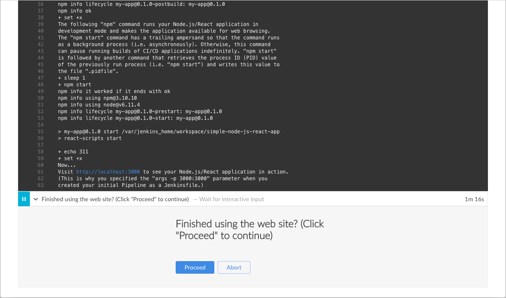
-
Clique no
http://localhost:3000link para visualizar o aplicativo Node.js e React em execução (no modo de desenvolvimento) em uma nova guia do navegador da web. Você deverá ver uma página / site com o título Bem-vindo a reagir .
Dica: Se estiver se sentindo um pouco aventureiro, tente acessar o terminal / prompt de comando do contêiner Jenkins Docker e, em seguida, use o editor vi, ajuste e salve oApp.jsarquivo de origem e veja os resultados aparecerem na página Bem-vindo ao reagir . Para fazer isso, execute os seguintes comandos:docker exec -it <docker-container-name> bash (1) cd /var/jenkins_home/workspace/simple-node-js-react-npm-app/src (2) vi App.js (3)1 Este comando fornece acesso ao terminal / prompt de comando do seu contêiner Jenkins Docker. A <docker-container-name>pode ser obtido utilizando o comandodocker ps. Caso contrário, seriajenkins-tutorials(se você especificou isso no comando que costumava executar este contêiner acima - ie--name jenkins-tutorials).2 Uma vez no contêiner, altere o diretório para o diretório de origem Node.js e React (no diretório da área de trabalho do Jenkins na home do Jenkins). 3 Acesse, edite e salve as alterações no App.jsarquivo do seu aplicativo usando o editor vi. -
Quando terminar de visualizar a página / site, clique no botão Continuar para concluir a execução do Pipeline.

-
Clique no X no canto superior direito para retornar à interface principal do Blue Ocean, que lista as execuções anteriores do Pipeline em ordem cronológica inversa.
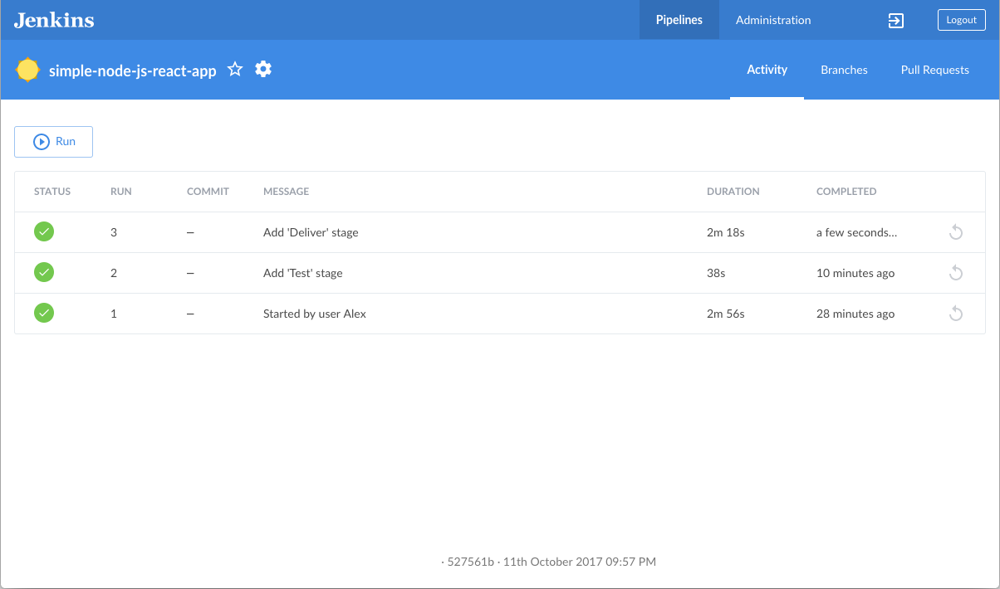
Empacotando
Bem feito! Você acabou de usar o Jenkins para criar um aplicativo Node.js e React simples com o npm!
Os estágios "Build", "Test" e "Deliver" criados acima são a base para a criação de aplicativos Node.js. e React mais complexos no Jenkins, bem como aplicativos Node.js. e React que se integram a outras pilhas de tecnologia.
Como o Jenkins é extremamente extensível, ele pode ser modificado e configurado para lidar com praticamente qualquer aspecto da orquestração e automação de compilação.
Criação de projeto de pipeline multibranch de ponta a ponta
Índice
- Pré-requisitos
- Execute o Jenkins no Docker
- Bifurque e clone o repositório de amostra no GitHub
- Crie ramificações de desenvolvimento e produção em seu repositório
- Crie o seu projeto de Pipeline no Blue Ocean
- Crie seu Pipeline inicial como um arquivo Jenkins com estágios de construção e teste
- Adicione etapas de entrega e implantação ao seu Pipeline
- Puxe seu Jenkinsfile atualizado para os outros ramos do repositório
- Execute seu pipeline no ramo de desenvolvimento
- Execute seu pipeline no ramo de produção
- Acompanhamento (opcional)
- Limpando o aplicativo do seu navegador
- Empacotando
Este tutorial mostra como usar o Jenkins para orquestrar a construção e o teste de um aplicativo Node.js e React simples com o Node Package Manager (npm) , além de oferecer resultados diferentes para fins de desenvolvimento e produção.
Antes de iniciar este tutorial, é recomendável executar pelo menos um dos conjuntos iniciais de tutoriais introdutórios na página de visão geral dos tutoriais primeiro para se familiarizar com os conceitos de CI / CD (relevantes para uma pilha de tecnologia com a qual você está mais familiarizado), como esses conceitos são implementados no Jenkins e os fundamentos dos pipelines do Jenkins.
Neste tutorial, você usará o mesmo aplicativo em que o aplicativo Build a Node.js e React with npm se baseia. Portanto, você criará e testará o mesmo aplicativo, mas desta vez sua entrega será diferente, dependendo do ramo Git em que Jenkins cria. Ou seja, a ramificação que está sendo construída determina qual estágio de entrega do seu Pipeline é executado.
Duração: este tutorial leva de 30 a 50 minutos para ser concluído (supondo que você já cumpriu os pré - requisitos abaixo). A duração exata dependerá da velocidade da sua máquina e se ou não você já executar Jenkins em Docker de outro tutorial .
Você pode interromper este tutorial a qualquer momento e continuar de onde parou.
Se você já executou outro tutorial , pode pular as seções Pré - requisitos e Executar Jenkins no Docker abaixo e continuar a bifurcar o repositório de amostra . (Apenas verifique se o Git está instalado localmente.) Se você precisar reiniciar o Jenkins, siga as instruções de reinicialização em Parando e reiniciando o Jenkins e continue.
Pré-requisitos
Para este tutorial, você precisará de:
-
Uma máquina macOS, Linux ou Windows com:
-
256 MB de RAM, embora sejam recomendados mais de 512 MB.
-
10 GB de espaço em disco para Jenkins e suas imagens e contêineres do Docker.
-
-
O seguinte software instalado:
-
Docker - Leia mais sobre a instalação do Docker na seção Instalando o Docker da página Instalando o Jenkins .
Nota: Se você usa Linux, este tutorial pressupõe que você não esteja executando os comandos do Docker como usuário root, mas com uma única conta de usuário que também tenha acesso a outras ferramentas usadas neste tutorial. -
Git e, opcionalmente, GitHub Desktop .
-
Execute o Jenkins no Docker
Neste tutorial, você estará executando o Jenkins como um contêiner do jenkinsci/blueoceanDocker na imagem do
Docker.
Para executar o Jenkins no Docker, siga as instruções relevantes abaixo para o macOS e Linux ou Windows .
Você pode ler mais sobre os conceitos de contêiner e imagem do Docker nas seções Docker e Download e execução do Jenkins nas Docker da página Instalando o Jenkins .
No macOS e Linux
-
Abra uma janela do terminal.
-
Crie uma rede de ponte no Docker usando o seguinte
docker network createcomando:docker network create jenkins -
Crie os seguintes volumes para compartilhar os certificados TLS do cliente Docker necessários para conectar-se ao daemon do Docker e persistir os dados do Jenkins usando os seguintes
docker volume createcomandos:docker volume create jenkins-docker-certs docker volume create jenkins-data -
Para executar comandos do Docker dentro dos nós Jenkins, faça o download e execute a
docker:dindimagem do Docker usando o seguintedocker container runcomando:docker container run --name jenkins-docker --rm --detach \ --privileged --network jenkins --network-alias docker \ --env DOCKER_TLS_CERTDIR=/certs \ --volume jenkins-docker-certs:/certs/client \ --volume jenkins-data:/var/jenkins_home \ --volume "$HOME":/home docker:dind -
Execute a
jenkinsci/blueoceanimagem como um contêiner no Docker usando o seguintedocker container runcomando (lembre-se de que este comando baixa automaticamente a imagem se isso não tiver sido feito):docker container run --name jenkins-tutorial --rm --detach \ --network jenkins --env DOCKER_HOST=tcp://docker:2376 \ --env DOCKER_CERT_PATH=/certs/client --env DOCKER_TLS_VERIFY=1 \ --volume jenkins-data:/var/jenkins_home \ (1) --volume jenkins-docker-certs:/certs/client:ro \ --volume "$HOME":/home \ (2) --publish 8080:8080 jenkinsci/blueocean1 Mapeia o /var/jenkins_homediretório no recipiente ao Docker de volume com o nomejenkins-data. Se esse volume não existir, essedocker container runcomando criará automaticamente o volume para você.2 Mapeia o $HOMEdiretório na máquina host (ou seja, o seu local) (geralmente o/Users/<your-username>diretório) para o/homediretório no contêiner.Nota: Se copiar e colar o snippet de comando acima não funcionar, tente copiar e colar esta versão sem anotações aqui:
docker container run --name jenkins-tutorial --rm --detach \ --network jenkins --env DOCKER_HOST=tcp://docker:2376 \ --env DOCKER_CERT_PATH=/certs/client --env DOCKER_TLS_VERIFY=1 \ --volume jenkins-data:/var/jenkins_home \ --volume jenkins-docker-certs:/certs/client:ro \ --volume "$HOME":/home --publish 8080:8080 jenkinsci/blueocean -
Prossiga para o Assistente de instalação .
No Windows
O projeto Jenkins fornece uma imagem de contêiner do Linux, não uma imagem de contêiner do Windows. Verifique se a instalação do Docker for Windows está configurada para executar em Linux Containersvez de Windows Containers. Consulte a documentação do Docker para obter instruções sobre como alternar para contêineres Linux . Depois de configurados para execução Linux Containers, as etapas são:
-
Abra uma janela do prompt de comando.
-
Crie uma rede de ponte no Docker usando o seguinte
docker network createcomando:docker network create jenkins -
Crie os seguintes volumes para compartilhar os certificados TLS do cliente Docker necessários para conectar-se ao daemon do Docker e persistir os dados do Jenkins usando os seguintes
docker volume createcomandos:docker volume create jenkins-docker-certs docker volume create jenkins-data -
Para executar comandos do Docker dentro dos nós Jenkins, faça o download e execute a
docker:dindimagem do Docker usando o seguintedocker container runcomando:docker container run --name jenkins-docker --rm --detach ^ --privileged --network jenkins --network-alias docker ^ --env DOCKER_TLS_CERTDIR=/certs ^ --volume jenkins-docker-certs:/certs/client ^ --volume jenkins-data:/var/jenkins_home ^ --volume "%HOMEDRIVE%%HOMEPATH%":/home ^ docker:dind -
Execute a
jenkinsci/blueoceanimagem como um contêiner no Docker usando o seguintedocker container runcomando (lembre-se de que este comando baixa automaticamente a imagem se isso não tiver sido feito):docker container run --name jenkins-tutorial --rm --detach ^ --network jenkins --env DOCKER_HOST=tcp://docker:2376 ^ --env DOCKER_CERT_PATH=/certs/client --env DOCKER_TLS_VERIFY=1 ^ --volume jenkins-data:/var/jenkins_home ^ --volume jenkins-docker-certs:/certs/client:ro ^ --volume "%HOMEDRIVE%%HOMEPATH%":/home ^ --publish 8080:8080 --publish 50000:50000 jenkinsci/blueoceanPara obter uma explicação dessas opções, consulte as instruções do macOS e Linux acima.
-
Prossiga para o Assistente de instalação .
Acessando o contêiner Jenkins / Blue Ocean Docker
Se você tem alguma experiência com o Docker e deseja ou precisa acessar o contêiner Jenkins / Blue Ocean Docker por meio de um prompt de terminal / comando usando o
docker container exec
comando, você pode adicionar uma opção como --name jenkins-tutorialo docker execcomando. Isso acessará o contêiner Jenkins Docker chamado "jenkins-tutorial".
Isso significa que você pode acessar o contêiner Jenkins / Blue Ocean (através de uma janela separada do terminal / prompt de comando) com um docker container execcomando como:
docker container exec -it jenkins-tutorial bash
Assistente de configuração
Antes de acessar o Jenkins, existem algumas etapas "únicas" que você precisará executar.
Desbloqueando Jenkins
Quando você acessa uma nova instância do Jenkins pela primeira vez, é solicitado que você a desbloqueie usando uma senha gerada automaticamente.
-
Depois que os 2 conjuntos de asteriscos aparecerem na janela do terminal / prompt de comando, procure
http://localhost:8080e aguarde até a página Desbloquear Jenkins aparecer. -
Exiba o log do console Jenkins com o comando:
docker logs jenkins-tutorial -
Na janela do terminal / prompt de comando novamente, copie a senha alfanumérica gerada automaticamente (entre os 2 conjuntos de asteriscos).
-
Na página Desbloquear Jenkins , cole essa senha no campo Senha do administrador e clique em Continuar .
Personalizando o Jenkins com plug-ins
Depois de desbloquear o Jenkins , a página Personalizar Jenkins é exibida.
Nesta página, clique em Instalar plug-ins sugeridos .
O assistente de instalação mostra a progressão do Jenkins sendo configurado e os plug-ins sugeridos sendo instalados. Esse processo pode demorar alguns minutos.
Criando o primeiro usuário administrador
Por fim, Jenkins solicita que você crie seu primeiro usuário administrador.
-
Quando a página Criar primeiro usuário administrador aparecer, especifique seus detalhes nos respectivos campos e clique em Salvar e concluir .
-
Quando a página Jenkins estiver pronta aparecer, clique em Iniciar o uso do Jenkins .
Notas:-
Esta página pode indicar que Jenkins está quase pronto! em vez disso, clique em Reiniciar .
-
Se a página não for atualizada automaticamente após um minuto, use o navegador da Web para atualizar a página manualmente.
-
-
Se necessário, faça login no Jenkins com as credenciais do usuário que você acabou de criar e você está pronto para começar a usar o Jenkins!
Parando e reiniciando o Jenkins
No restante deste tutorial, você pode parar o contêiner Jenkins / Blue Ocean Docker executando docker container stop jenkins jenkins-docker.
Para reiniciar o contêiner Jenkins / Blue Ocean Docker:
-
Execute o mesmo
docker run …comando que você executou no macOS, Linux ou Windows acima.
Nota: Esse processo também atualiza ajenkinsci/blueoceanimagem do Docker, se houver uma atualizada. -
Navegue para
http://localhost:8080. -
Aguarde até a página de login aparecer e faça login.
Bifurque e clone o repositório de amostra no GitHub
Obtenha o Node.js e o aplicativo React simples "Bem-vindo ao React" no GitHub, bifurcando o repositório de amostra do código-fonte do aplicativo em sua própria conta GitHub e clonando este fork localmente.
-
Verifique se você está conectado à sua conta do GitHub. Se você ainda não tem uma conta no GitHub, inscreva-se gratuitamente no site do GitHub .
-
Coloque o
building-a-multibranch-pipeline-projectGitHub na sua conta local do GitHub. Se você precisar de ajuda com esse processo, consulte a documentação do Fork A Repo no site do GitHub para obter mais informações. -
Clone seu
building-a-multibranch-pipeline-projectrepositório bifurcado (no GitHub) localmente na sua máquina. Para iniciar esse processo, execute um dos seguintes procedimentos (onde<your-username>é o nome da sua conta de usuário no sistema operacional):-
Se você possui o aplicativo GitHub Desktop instalado em sua máquina:
-
No GitHub, clique no botão verde Clonar ou baixar no seu repositório bifurcado e, em seguida, em Abrir na área de trabalho .
-
Na área de trabalho do GitHub, antes de clicar em Clonar na caixa de diálogo Clonar um repositório , verifique o Caminho local para:
-
o macOS é
/Users/<your-username>/Documents/GitHub/building-a-multibranch-pipeline-project -
Linux é
/home/<your-username>/GitHub/building-a-multibranch-pipeline-project -
Windows é
C:\Users\<your-username>\Documents\GitHub\building-a-multibranch-pipeline-project
-
-
-
De outra forma:
-
Abra um prompt de terminal / linha de comando e
cdno diretório apropriado em:-
Mac OS -
/Users/<your-username>/Documents/GitHub/ -
Linux -
/home/<your-username>/GitHub/ -
Windows -
C:\Users\<your-username>\Documents\GitHub\(embora use uma janela de linha de comando do Git bash em oposição ao prompt de comando usual da Microsoft)
-
-
Execute o seguinte comando para continuar / concluir a clonagem do seu repositório bifurcado:
git clone https://github.com/YOUR-GITHUB-ACCOUNT-NAME/building-a-multibranch-pipeline-project
ondeYOUR-GITHUB-ACCOUNT-NAMEestá o nome da sua conta do GitHub.
-
-
Crie ramificações de desenvolvimento e produção em seu repositório
Antes de criar seu projeto Pipeline no Jenkins, crie ramificações de "desenvolvimento" e "produção" do seu repositório Git clonado localmente. Você criará um único arquivo Jenkins (inicialmente no masterramo, do qual você puxará os outros ramos) cujos estágios serão executados seletivamente com base no ramo que o Jenkins está construindo.
Dentro do building-a-multibranch-pipeline-projectdiretório (ou seja, seu clone local do repositório de amostra):
-
Execute os seguintes comandos para criar essas ramificações (a partir do conteúdo da
masterramificação):-
git branch development
e -
git branch production
-
-
Verifique se esses ramos agora existem executando o comando
git branch, que deve fornecer:development * master production -
Se o asterisco (indicando a ramificação atual) não aparecer ao lado
master, execute o comandogit checkout masterpara garantir que essamasterseja a ramificação atual.
Crie o seu projeto de Pipeline no Blue Ocean
Sempre que você cria qualquer projeto de Pipeline no Blue Ocean, Jenkins realmente o cria como um projeto de Pipeline com várias filiais nos bastidores. Isso se torna aparente se você acessar a interface clássica de Jenkins após criar um projeto Pipeline no Blue Ocean; você verá que Jenkins terá criado seu projeto como um projeto "Pipeline multibranch".
-
Volte para Jenkins e verifique se você acessou a interface do Blue Ocean. Para fazer isso, verifique se você:
-
navegaram
http://localhost:8080/bluee estão logados
ou -
navegaram
http://localhost:8080/, fizeram login e clicaram em Abrir Blue Ocean à esquerda.
-
-
Na caixa Bem-vindo ao Jenkins , no centro da interface do Blue Ocean, clique em Criar um novo pipeline para iniciar o assistente de criação de pipeline.
Nota: Se você não vir essa caixa, clique em Novo pipeline no canto superior direito. -
Em onde você armazena seu código? , clique em Git ( não no GitHub ).
-
No Repositório URL campo (dentro de Ligação a um repositório Git ), especifique o caminho do diretório do seu repositório clonado no local acima , que é da sua conta de usuário / home diretório em sua máquina host, mapeado para o
/homediretório do contêiner Jenkins - ou seja,-
Para macOS -
/home/Documents/GitHub/building-a-multibranch-pipeline-project -
Para Linux -
/home/GitHub/building-a-multibranch-pipeline-project -
Para Windows -
/home/Documents/GitHub/building-a-multibranch-pipeline-project
-
-
Clique em Salvar para salvar seu novo projeto de Pipeline.
O Blue Ocean detecta a presença doJenkinsfile"stub Pipeline" em cada filial e passa a executar cada Pipeline na respectiva ramificação, cujos resultados de compilação são mostrados na página Atividade da interface principal do Blue Ocean.
|
O stub Pipeline consiste nos requisitos básicos para um Pipeline válido - ou seja, uma seção A razão pela qual o Se você criou um projeto de Pipeline no Blue Ocean, mas não tinha um arquivo Jenkins em uma ou mais ramificações do seu repositório, acesse as ramificações no Blue Ocean depois de puxar / adicionar um
|
Crie seu Pipeline inicial como um arquivo Jenkins com estágios de construção e teste
Agora você está pronto para criar o Pipeline que automatizará a criação do aplicativo Node.js e React no Jenkins. Seu Pipeline será criado como um
Jenkinsfile, que será confirmado na masterramificação do seu repositório Git clonado localmente ( building-a-multibranch-pipeline-project).
Primeiro, crie um Pipeline inicial para baixar uma imagem do Node Docker e execute-a como um contêiner do Docker que criará seu aplicativo Node.js. e React simples. Adicione também um estágio "Build" ao Pipeline para começar a orquestrar todo o processo e um estágio "Test" para verificar se o aplicativo é renderizado satisfatoriamente.
-
Usando seu editor de texto favorito ou IDE, abra o existente
Jenkinsfilena raiz do seubuilding-a-multibranch-pipeline-projectrepositório Git local e limpe seu conteúdo.
Nota: Certifique-se de executar esta etapa namasterramificação do seu repositório. -
Copie o seguinte código de pipeline declarativo e cole-o no seu vazio
Jenkinsfile:pipeline { agent { docker { image 'node:6-alpine' args '-p 3000:3000 -p 5000:5000' (1) } } environment { CI = 'true' } stages { stage('Build') { steps { sh 'npm install' } } stage('Test') { steps { sh './jenkins/scripts/test.sh' } } } }1 Este argsparâmetro torna o contêiner do Nó (temporariamente) acessível através das portas 3000 e 5000. O significado disso é explicado nos arquivosjenkins/scripts/deliver-for-deployment.shejenkins/scripts/deploy-for-production.shdo seu repositório clonado e é abordado nas seções subseqüentes deste tutorial.Nota: Para obter uma explicação dos outros componentes
Jenkinsfile, consulte as anotações do pipeline declarativo nas seções Adicionar estágio de teste ... '' do tutorial Build a Node.js and React with npm tutorial.Create your initial Pipeline…''and -
Salve sua edição
Jenkinsfilee envie-a para obuilding-a-multibranch-pipeline-projectrepositório Git local . Por exemplo, dentro dobuilding-a-multibranch-pipeline-projectdiretório, execute os comandos:
git stage .
em seguida,
git commit -m "Add initial Jenkinsfile with 'Test' stage" -
Volte para Jenkins novamente, efetue login novamente se necessário e verifique se acessou a interface Blue Ocean de Jenkins.
-
Clique em Ramos no canto superior direito para acessar a lista de ramos do seu projeto de Pipeline.

-
Clique no ícone executar
 da
da masterfilial do seu projeto Pipeline, clique rapidamente no link OPEN que aparece brevemente no canto inferior direito para ver Jenkins criando amasterfilial com as alteraçõesJenkinsfile. Se você não conseguiu clicar no link ABRIR , clique na linha superior na página Atividade do Blue Ocean para acessar esse recurso.
Dentro de alguns minutos, a interface do Blue Ocean ficará verde se Jenkins criar seu aplicativo Node.js e React com êxito a partir de suamasterfilial.
-
Clique no X no canto superior direito para retornar à página Atividade da interface do Blue Ocean.
Adicione etapas de entrega e implantação ao seu Pipeline
Em seguida, adicione os estágios "Entregar para desenvolvimento" e "Implantar para produção" ao seu Pipeline, que o Jenkins executará seletivamente com base na ramificação da qual o Jenkins está construindo.
Isso leva o conceito "Pipeline como código" a um novo nível, no qual um
Jenkinsfiledescreve os processos completos de compilação, teste, entrega e implantação do seu projeto no Jenkins para cada filial do seu repositório. Leia mais sobre o Pipeline e o que é
um Jenkinsfile nas seções Pipeline e Using a Jenkinsfile do Manual do Usuário.
-
Volte para o seu editor de texto / IDE e verifique se
Jenkinsfileestá aberto. -
Copie e cole a seguinte sintaxe do pipeline declarativo imediatamente no
Testestágio do seuJenkinsfile:stage('Deliver for development') { when { branch 'development' } steps { sh './jenkins/scripts/deliver-for-development.sh' input message: 'Finished using the web site? (Click "Proceed" to continue)' sh './jenkins/scripts/kill.sh' } } stage('Deploy for production') { when { branch 'production' } steps { sh './jenkins/scripts/deploy-for-production.sh' input message: 'Finished using the web site? (Click "Proceed" to continue)' sh './jenkins/scripts/kill.sh' } }para que você termine com:
pipeline { agent { docker { image 'node:6-alpine' args '-p 3000:3000 -p 5000:5000' } } environment { CI = 'true' } stages { stage('Build') { steps { sh 'npm install' } } stage('Test') { steps { sh './jenkins/scripts/test.sh' } } stage('Deliver for development') { when { branch 'development' (1) } steps { sh './jenkins/scripts/deliver-for-development.sh' input message: 'Finished using the web site? (Click "Proceed" to continue)' sh './jenkins/scripts/kill.sh' } } stage('Deploy for production') { when { branch 'production' (1) } steps { sh './jenkins/scripts/deploy-for-production.sh' input message: 'Finished using the web site? (Click "Proceed" to continue)' sh './jenkins/scripts/kill.sh' } } } }1 Essas whendiretivas (junto com suasbranchcondições) determinam se asstages(contendo essaswhendiretivas) devem ou não ser executadas. Sebrancho valor de uma condição (ou seja, padrão) corresponder ao nome do ramo do qual Jenkins está executando a compilação, ostageque contém issowhene a compilaçãobranchserá executado.Notas:
-
Para obter uma explicação das
input messageetapas, consulte a anotação 4 do pipeline declarativo na seção `` Adicionar um estágio final de entrega ... '' do tutorial Build a Node.js and React app . -
Para obter uma explicação do
deliver-for-development.sh,deploy-for-production.shekill.shpassos de scripts, consulte o conteúdo desses arquivos localizados nojenkins/scriptsdiretório a partir da raiz dobuilding-a-multibranch-pipeline-projectrepositório.
-
-
Salve sua edição
Jenkinsfilee envie-a para obuilding-a-multibranch-pipeline-projectrepositório Git local . Por exemplo, dentro dobuilding-a-multibranch-pipeline-projectdiretório, execute os comandos:
git stage .
em seguida,
git commit -m "Add 'Deliver…' and 'Deploy…' stages" -
Volte para Jenkins novamente, efetue login novamente se necessário e verifique se acessou a interface Blue Ocean de Jenkins.
-
Clique em Ramos no canto superior direito para acessar a lista de ramos do seu projeto de Pipeline.
-
Clique no ícone executar
da masterfilial do seu projeto Pipeline, clique rapidamente no link OPEN que aparece brevemente no canto inferior direito para ver Jenkins criando amasterfilial com as alteraçõesJenkinsfile. Se você não conseguiu clicar no link ABRIR , clique na linha superior na página Atividade do Blue Ocean para acessar esse recurso.
Observe como o Jenkins ignora os dois últimos estágios que você adicionou, pois a ramificação da qual você está executando a compilação (master) não atende às condições daswhendiretivasbranchnesses estágios.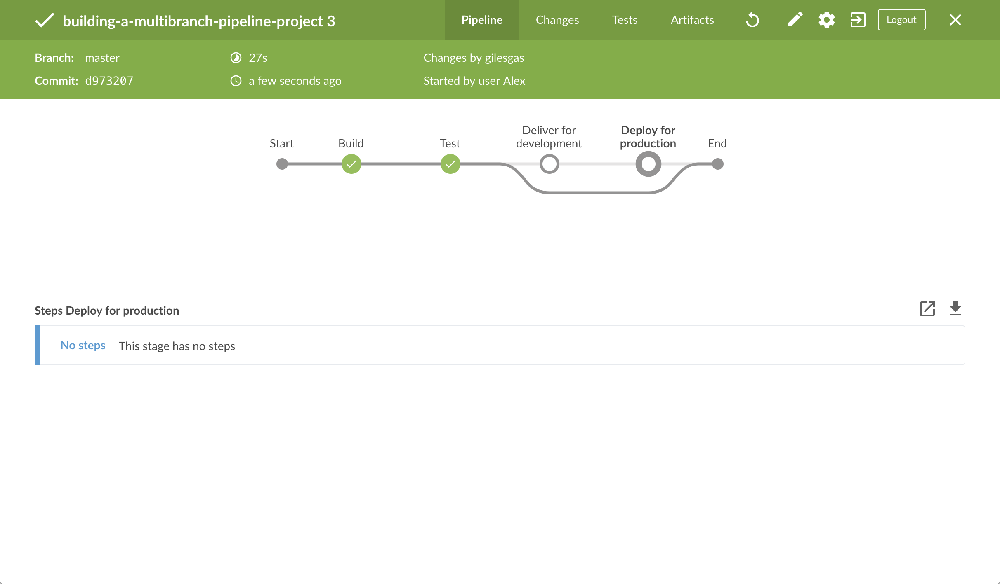
-
Clique no X no canto superior direito para retornar à página Atividade da interface do Blue Ocean.
Puxe seu Jenkinsfile atualizado para os outros ramos do repositório
Agora que você concluiu Jenkinsfilea compilação do aplicativo no Jenkins, pode extrair esse arquivo da masterramificação do repositório local para as ramificações developmente production.
No building-a-multibranch-pipeline-project
diretório do seu repositório local :
-
Execute os seguintes comandos para extrair alterações de
masterparadevelopment:-
git checkout development
e -
git pull . master
-
-
Também execute os seguintes comandos para mudanças puxar a partir
masterdeproduction:-
git checkout production
e -
git pull . master
Seus ramos
developmenteproductionagora devem ter todas asJenkinsfileatualizações que você fez nomasterramo. -
Execute seu pipeline no ramo de desenvolvimento
-
Volte para Jenkins novamente, efetue login novamente se necessário e verifique se acessou a interface Blue Ocean de Jenkins.
-
Clique em Ramos no canto superior direito para acessar a lista de ramos do seu projeto de Pipeline.
-
Clique no ícone executar
da developmentfilial do seu projeto Pipeline, clique rapidamente no link OPEN que aparece brevemente no canto inferior direito para ver Jenkins criando adevelopmentfilial com as alteraçõesJenkinsfile. Se você não conseguiu clicar no link ABRIR , clique na linha superior na página Atividade do Blue Ocean para acessar esse recurso. -
Dentro de alguns minutos e quando a construção for pausada, verifique se você está exibindo o estágio Entregar para desenvolvimento (clique se necessário) e clique na etapa verde Shell Script superior para expandir seu conteúdo e rolar para baixo até ver o
http://localhost:3000link.
Nota: Como você está construindo o aplicativo em uma ramificação diferente, anpm installetapa exigirá alguns minutos paranpmfazer o download das muitas dependências necessárias para executar o aplicativo Node.js e React (armazenado em umnode_modulesdiretório local no diretório inicial do Jenkins). Essas dependências são baixadas novamente porque essa compilação Jenkins seria a primeira vez que você executaria seu projeto Pipeline nadevelopmentfilial e cada filial teria seu próprio diretório de espaço de trabalho (contendo seu próprionode_modulesdiretório) dentro do diretório inicial do Jenkins. -
Clique no
http://localhost:3000link para visualizar seu aplicativo Node.js e React em execução no modo de desenvolvimento (com onpm startcomando) em uma nova guia do navegador da web. Você deverá ver uma página / site com o título Bem-vindo a reagir . -
Quando terminar de visualizar a página / site, clique no botão Continuar em Blue Ocean para concluir a execução do Pipeline.
A interface do Blue Ocean fica verde se Jenkins criou seu aplicativo Node.js e React com êxito a partir de suadevelopmentfilial. Observe como o estágio Entregar para desenvolvimento foi executado, mas o estágio Implementar para produção não.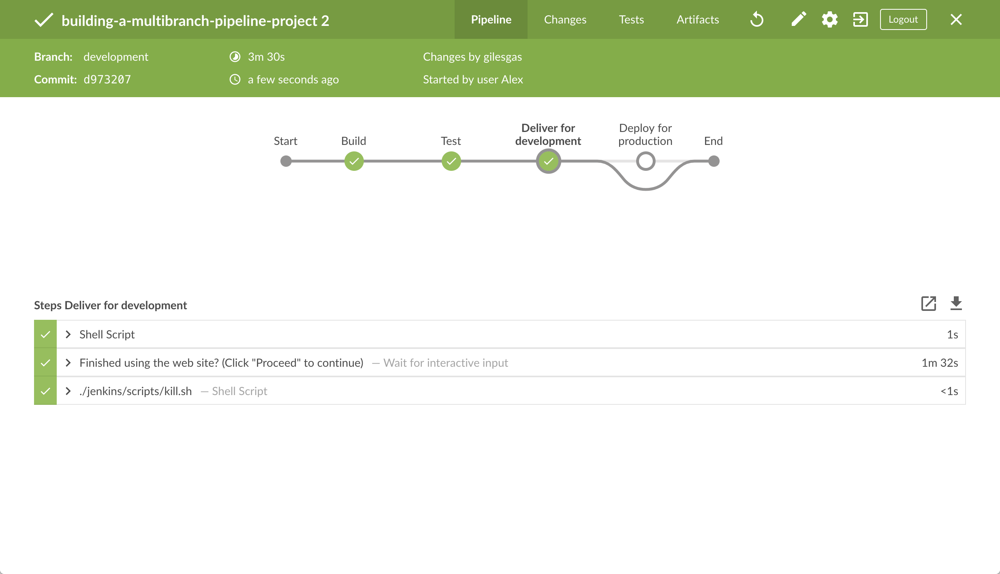
-
Clique no X no canto superior direito para retornar à página Atividade da interface do Blue Ocean.
Execute seu pipeline no ramo de produção
-
Clique em Ramos no canto superior direito para acessar a lista de ramos do seu projeto de Pipeline.
-
Clique no ícone executar
da productionfilial do seu projeto Pipeline, clique rapidamente no link OPEN que aparece brevemente no canto inferior direito para ver Jenkins criando aproductionfilial com as alteraçõesJenkinsfile. Se você não conseguiu clicar no link ABRIR , clique na linha superior na página Atividade do Blue Ocean para acessar esse recurso. -
Dentro de alguns minutos e quando a construção for pausada, verifique se você está visualizando o estágio Implementar para produção (clique se necessário) e clique na etapa superior verde Shell Script para expandir seu conteúdo e rolar para baixo até ver o
http://localhost:5000link.
-
Clique no
http://localhost:5000link para visualizar seu aplicativo Node.js e React em uma nova guia do navegador da web. Isso será executado no modo de produção a partir de uma construção de produção do seu código-fonte (gerado usando onpm run buildcomando). Novamente, você deverá ver uma página / site com o título Bem-vindo a reagir . No entanto, desta vez, o conteúdo do aplicativo é veiculado pelo módulo npmservee também provavelmente continuará sendo executado em segundo plano no seu navegador. -
Quando terminar de visualizar a página / site, clique no botão Continuar em Blue Ocean para concluir a execução do Pipeline.
A interface do Blue Ocean fica verde se Jenkins criou seu aplicativo Node.js e React com êxito a partir de suaproductionfilial. Observe como o estágio Implementar para produção foi executado, mas o estágio Entregar para desenvolvimento foi ignorado.
-
Clique no X no canto superior direito para retornar à página Atividade da interface do Blue Ocean.
Nota: Como é provável que seu navegador continue executando o conteúdo do aplicativo veiculado peloservemódulo npm , ele ainda mostrará o conteúdo que você visualizouhttp://localhost:5000muito tempo depois que Jenkins interrompeu oserveprocesso. Leia mais sobre como limpar o aplicativo e seu conteúdo do seu navegador abaixo .
Acompanhamento (opcional)
Esta seção leva você a um fluxo de trabalho de desenvolvimento simulado usando o Jenkins, no qual as alterações feitas no seu aplicativo (ou seja, o App.jsarquivo de origem) podem ser examinadas a partir da developmentramificação antes de serem implantadas na produção (a partir da productionramificação) através da masterramificação.
-
No
building-a-multibranch-pipeline-projectdiretório do seu repositório local , execute o comandogit checkout developmentpara mudar para adevelopmentramificação. -
Volte ao seu editor de texto / IDE e abra o
App.jsarquivo nosrcdiretório do seubuilding-a-multibranch-pipeline-projectrepositório Git local . -
Copie e cole a seguinte sintaxe HTML imediatamente abaixo da
To get started…linha do seuApp.jsarquivo:<br/> This is a new line I added.para que você termine com:
import React, { Component } from 'react'; import logo from './logo.svg'; import './App.css'; class App extends Component { render() { return ( <div className="App"> <header className="App-header"> <img src={logo} className="App-logo" alt="logo" /> <h1 className="App-title">Welcome to React</h1> </header> <p className="App-intro"> To get started, edit <code>src/App.js</code> and save to reload. <br/> This is a new line I added. </p> </div> ); } } export default App; -
Salve o
App.jsarquivo editado e envie-o para obuilding-a-multibranch-pipeline-projectrepositório Git local . Por exemplo, dentro dobuilding-a-multibranch-pipeline-projectdiretório, execute os comandos:
git stage .
em seguida,
git commit -m "Update 'App.js'" -
De volta ao Blue Ocean, execute seu Pipeline na
developmentfilial (como você fez acima ) e verifique os resultadoshttp://localhost:3000para ver sua nova linha adicionada. -
Supondo que você esteja satisfeito com a alteração e, no
building-a-multibranch-pipeline-projectdiretório do repositório local , execute o seguinte conjunto de comandos para puxar sua alteração para aproductionramificação (viamasterramificação):-
git checkout master
e -
git pull . development
então -
git checkout production
e -
git pull . master
-
-
De volta ao Blue Ocean, execute seu Pipeline no
productionramo desta vez (como você fez acima ) e verifique os resultadoshttp://localhost:5000para ver sua nova linha adicionada.
Notas:-
Como é provável que seu navegador armazene em cache o conteúdo do
servemódulo npm , talvez você precise atualizar a página do navegador para ver suas alterações. -
Em um ambiente real de desenvolvimento de software com equipes pequenas e grandes de pessoas, é mais provável que as mudanças entre as ramificações sejam realizadas usando solicitações de recebimento em um serviço Git hospedado na nuvem ou na Web (como GitHub ou BitBucket).
-
Limpando o aplicativo do seu navegador
É provável que o seu navegador continue executando o conteúdo do seu aplicativo atendido pelo módulo npmserve , o que significa que o seu navegador ainda exibirá o conteúdo que você visualizou
http://localhost:5000depois que o Jenkins interrompeu o serveprocesso. Para limpar o aplicativo e seu conteúdo do seu navegador:
Empacotando
Bem feito! Você acabou de usar o Jenkins para criar um projeto de pipeline multibranch com etapas de execução seletiva!
Este tutorial demonstrou o poder de usar um único Jenkinsfileem vários ramos do seu repositório para orquestrar diferentes resultados de criação e entrega no Jenkins.
Como o Jenkins é extremamente extensível, ele pode ser modificado e configurado para lidar com praticamente qualquer aspecto da orquestração e automação de compilação.
Crie um pipeline no Blue Ocean
Índice
Este tutorial mostra como usar o recurso Blue Ocean do Jenkins para criar um pipeline que orquestrará a construção de um aplicativo simples.
Antes de iniciar este tutorial, é recomendável que você execute pelo menos um dos conjuntos iniciais de tutoriais na página de visão geral dos Tutoriais primeiro para se familiarizar com os conceitos de CI / CD (relevantes para uma pilha de tecnologia com a qual você está mais familiarizado) e como esses conceitos são implementados no Jenkins.
Este tutorial usa o mesmo aplicativo em que o aplicativo Build a Node.js e React com npm se baseia. Portanto, você criará o mesmo aplicativo, embora desta vez, completamente pelo Blue Ocean. Como o Blue Ocean fornece uma experiência simplificada de manipulação do Git, você estará interagindo diretamente com o repositório no GitHub (em oposição a um clone local deste repositório).
Duração: este tutorial leva de 20 a 40 minutos para ser concluído (supondo que você já cumpriu os pré - requisitos abaixo). A duração exata dependerá da velocidade da sua máquina e se ou não você já executar Jenkins em Docker de outro tutorial .
Você pode interromper este tutorial a qualquer momento e continuar de onde parou.
Se você já executou outro tutorial , pode pular as seções Pré - requisitos e Executar Jenkins no Docker abaixo e continuar a bifurcar o repositório de amostra . Se você precisar reiniciar o Jenkins, siga as instruções de reinicialização em Parando e reiniciando o Jenkins e prossiga.
Pré-requisitos
Para este tutorial, você precisará de:
-
Uma máquina macOS, Linux ou Windows com:
-
256 MB de RAM, embora sejam recomendados mais de 512 MB.
-
10 GB de espaço em disco para Jenkins e suas imagens e contêineres do Docker.
-
-
O seguinte software instalado:
-
Docker - Leia mais sobre a instalação do Docker na seção Instalando o Docker da página Instalando o Jenkins .
Nota: Se você usa Linux, este tutorial pressupõe que você não esteja executando os comandos do Docker como usuário root, mas com uma única conta de usuário que também tenha acesso a outras ferramentas usadas neste tutorial.
-
Execute o Jenkins no Docker
Neste tutorial, você estará executando o Jenkins como um contêiner do jenkinsci/blueoceanDocker na imagem do
Docker.
Para executar o Jenkins no Docker, siga as instruções relevantes abaixo para o macOS e Linux ou Windows .
Você pode ler mais sobre os conceitos de contêiner e imagem do Docker nas seções Docker e Download e execução do Jenkins nas Docker da página Instalando o Jenkins .
No macOS e Linux
-
Abra uma janela do terminal.
-
Crie uma rede de ponte no Docker usando o seguinte
docker network createcomando:docker network create jenkins -
Crie os seguintes volumes para compartilhar os certificados TLS do cliente Docker necessários para conectar-se ao daemon do Docker e persistir os dados do Jenkins usando os seguintes
docker volume createcomandos:docker volume create jenkins-docker-certs docker volume create jenkins-data -
Para executar comandos do Docker dentro dos nós Jenkins, faça o download e execute a
docker:dindimagem do Docker usando o seguintedocker container runcomando:docker container run --name jenkins-docker --rm --detach \ --privileged --network jenkins --network-alias docker \ --env DOCKER_TLS_CERTDIR=/certs \ --volume jenkins-docker-certs:/certs/client \ --volume jenkins-data:/var/jenkins_home \ --volume "$HOME":/home docker:dind -
Execute a
jenkinsci/blueoceanimagem como um contêiner no Docker usando o seguintedocker container runcomando (lembre-se de que este comando baixa automaticamente a imagem se isso não tiver sido feito):docker container run --name jenkins-tutorial --rm --detach \ --network jenkins --env DOCKER_HOST=tcp://docker:2376 \ --env DOCKER_CERT_PATH=/certs/client --env DOCKER_TLS_VERIFY=1 \ --volume jenkins-data:/var/jenkins_home \ (1) --volume jenkins-docker-certs:/certs/client:ro \ --volume "$HOME":/home \ (2) --publish 8080:8080 jenkinsci/blueocean1 Mapeia o /var/jenkins_homediretório no recipiente ao Docker de volume com o nomejenkins-data. Se esse volume não existir, essedocker container runcomando criará automaticamente o volume para você.2 Mapeia o $HOMEdiretório na máquina host (ou seja, o seu local) (geralmente o/Users/<your-username>diretório) para o/homediretório no contêiner.Nota: Se copiar e colar o snippet de comando acima não funcionar, tente copiar e colar esta versão sem anotações aqui:
docker container run --name jenkins-tutorial --rm --detach \ --network jenkins --env DOCKER_HOST=tcp://docker:2376 \ --env DOCKER_CERT_PATH=/certs/client --env DOCKER_TLS_VERIFY=1 \ --volume jenkins-data:/var/jenkins_home \ --volume jenkins-docker-certs:/certs/client:ro \ --volume "$HOME":/home --publish 8080:8080 jenkinsci/blueocean -
Prossiga para o Assistente de instalação .
No Windows
O projeto Jenkins fornece uma imagem de contêiner do Linux, não uma imagem de contêiner do Windows. Verifique se a instalação do Docker for Windows está configurada para executar em Linux Containersvez de Windows Containers. Consulte a documentação do Docker para obter instruções sobre como alternar para contêineres Linux . Depois de configurados para execução Linux Containers, as etapas são:
-
Abra uma janela do prompt de comando.
-
Crie uma rede de ponte no Docker usando o seguinte
docker network createcomando:docker network create jenkins -
Crie os seguintes volumes para compartilhar os certificados TLS do cliente Docker necessários para conectar-se ao daemon do Docker e persistir os dados do Jenkins usando os seguintes
docker volume createcomandos:docker volume create jenkins-docker-certs docker volume create jenkins-data -
Para executar comandos do Docker dentro dos nós Jenkins, faça o download e execute a
docker:dindimagem do Docker usando o seguintedocker container runcomando:docker container run --name jenkins-docker --rm --detach ^ --privileged --network jenkins --network-alias docker ^ --env DOCKER_TLS_CERTDIR=/certs ^ --volume jenkins-docker-certs:/certs/client ^ --volume jenkins-data:/var/jenkins_home ^ --volume "%HOMEDRIVE%%HOMEPATH%":/home ^ docker:dind -
Execute a
jenkinsci/blueoceanimagem como um contêiner no Docker usando o seguintedocker container runcomando (lembre-se de que este comando baixa automaticamente a imagem se isso não tiver sido feito):docker container run --name jenkins-tutorial --rm --detach ^ --network jenkins --env DOCKER_HOST=tcp://docker:2376 ^ --env DOCKER_CERT_PATH=/certs/client --env DOCKER_TLS_VERIFY=1 ^ --volume jenkins-data:/var/jenkins_home ^ --volume jenkins-docker-certs:/certs/client:ro ^ --volume "%HOMEDRIVE%%HOMEPATH%":/home ^ --publish 8080:8080 --publish 50000:50000 jenkinsci/blueoceanPara obter uma explicação dessas opções, consulte as instruções do macOS e Linux acima.
-
Prossiga para o Assistente de instalação .
Acessando o contêiner Jenkins / Blue Ocean Docker
Se você tem alguma experiência com o Docker e deseja ou precisa acessar o contêiner Jenkins / Blue Ocean Docker por meio de um prompt de terminal / comando usando o
docker container exec
comando, você pode adicionar uma opção como --name jenkins-tutorialo docker execcomando. Isso acessará o contêiner Jenkins Docker chamado "jenkins-tutorial".
Isso significa que você pode acessar o contêiner Jenkins / Blue Ocean (através de uma janela separada do terminal / prompt de comando) com um docker container execcomando como:
docker container exec -it jenkins-tutorial bash
Assistente de configuração
Antes de acessar o Jenkins, existem algumas etapas "únicas" que você precisará executar.
Desbloqueando Jenkins
Quando você acessa uma nova instância do Jenkins pela primeira vez, é solicitado que você a desbloqueie usando uma senha gerada automaticamente.
-
Depois que os 2 conjuntos de asteriscos aparecerem na janela do terminal / prompt de comando, procure
http://localhost:8080e aguarde até a página Desbloquear Jenkins aparecer. -
Exiba o log do console Jenkins com o comando:
docker logs jenkins-tutorial -
Na janela do terminal / prompt de comando novamente, copie a senha alfanumérica gerada automaticamente (entre os 2 conjuntos de asteriscos).
-
Na página Desbloquear Jenkins , cole essa senha no campo Senha do administrador e clique em Continuar .
Personalizando o Jenkins com plug-ins
Depois de desbloquear o Jenkins , a página Personalizar Jenkins é exibida.
Nesta página, clique em Instalar plug-ins sugeridos .
O assistente de instalação mostra a progressão do Jenkins sendo configurado e os plug-ins sugeridos sendo instalados. Esse processo pode demorar alguns minutos.
Criando o primeiro usuário administrador
Por fim, Jenkins solicita que você crie seu primeiro usuário administrador.
-
Quando a página Criar primeiro usuário administrador aparecer, especifique seus detalhes nos respectivos campos e clique em Salvar e concluir .
-
Quando a página Jenkins estiver pronta aparecer, clique em Iniciar o uso do Jenkins .
Notas:-
Esta página pode indicar que Jenkins está quase pronto! em vez disso, clique em Reiniciar .
-
Se a página não for atualizada automaticamente após um minuto, use o navegador da Web para atualizar a página manualmente.
-
-
Se necessário, faça login no Jenkins com as credenciais do usuário que você acabou de criar e você está pronto para começar a usar o Jenkins!
Parando e reiniciando o Jenkins
No restante deste tutorial, você pode parar o contêiner Jenkins / Blue Ocean Docker executando docker container stop jenkins jenkins-docker.
Para reiniciar o contêiner Jenkins / Blue Ocean Docker:
-
Execute o mesmo
docker run …comando que você executou no macOS, Linux ou Windows acima.
Nota: Esse processo também atualiza ajenkinsci/blueoceanimagem do Docker, se houver uma atualizada. -
Navegue para
http://localhost:8080. -
Aguarde até a página de login aparecer e faça login.
Bifurque o repositório de amostra no GitHub
Coloque o Node.js "Bem-vindo a reagir" e o aplicativo React no GitHub em sua própria conta do GitHub.
-
Verifique se você está conectado à sua conta do GitHub. Se você ainda não tem uma conta no GitHub, inscreva-se gratuitamente no site do GitHub .
-
Coloque o
creating-a-pipeline-in-blue-oceanGitHub na sua conta local do GitHub. Se você precisar de ajuda com esse processo, consulte a documentação do Fork A Repo no site do GitHub para obter mais informações.
Nota: Este é um repositório diferente daquele usado no tutorial Build a Node.js e React with npm . Embora esses repositórios contenham o mesmo código de aplicativo, garanta e use o correto antes de continuar.
Crie o seu projeto de Pipeline no Blue Ocean
-
Volte para Jenkins e verifique se você acessou a interface do Blue Ocean. Para fazer isso, verifique se você:
-
navegaram
http://localhost:8080/bluee estão logados
ou -
navegaram
http://localhost:8080/, fizeram login e clicaram em Abrir Blue Ocean à esquerda.
-
-
Na caixa Bem-vindo ao Jenkins , no centro da interface do Blue Ocean, clique em Criar um novo pipeline para iniciar o assistente de criação de pipeline.
Nota: Se você não vir essa caixa, clique em Novo pipeline no canto superior direito. -
Em onde você armazena seu código? , clique em GitHub .
-
No Conectar-se ao GitHub , clique em Criar uma chave de acesso aqui . Isso abre o GitHub em uma nova guia do navegador.
Nota: Se você configurou o Blue Ocean anteriormente para se conectar ao GitHub usando um token de acesso pessoal, o Blue Ocean o levará diretamente à etapa 9 abaixo . -
Na nova guia, entre na sua conta do GitHub (se necessário) e, na página Novo Token de Acesso Pessoal do GitHub , especifique uma breve descrição do Token para o seu token de acesso do GitHub (por exemplo
Blue Ocean).
Nota: Um token de acesso geralmente é uma sequência alfanumérica que representa sua conta do GitHub, além de permissões para acessar vários recursos e áreas do GitHub por meio da sua conta do GitHub. Esse token de acesso terá as permissões apropriadas pré-selecionadas, que a Blue Ocean exige para acessar e interagir com sua conta do GitHub. -
Role para baixo até o final da página (deixando todas as outras opções de Escopos selecionados com as configurações padrão) e clique em Gerar token .
-
Na página resultante de tokens de acesso pessoal , copie seu token de acesso recém-gerado.
-
De volta ao Blue Ocean, cole o token de acesso no campo Your to GitHub access token e clique em Connect .
-
Em qual organização o repositório pertence? , clique na sua conta do GitHub (onde você bifurcou o repositório acima ).
-
Em Escolha um repositório , clique no seu repositório bifurcado, criando um pipeline no Blue Ocean .
-
Clique em Criar pipeline .
O Blue Ocean detecta que não há arquivo Jenkins no nível raiz damasterramificação do repositório e continua para ajudá-lo a criar um. (Portanto, você precisará clicar em outro Create Pipeline no final da página para prosseguir.)
Nota: Por baixo, um projeto de Pipeline criado através do Blue Ocean é na verdade "Pipeline com várias filiais". Portanto, o Jenkins procura a presença de pelo menos um arquivo Jenkins em qualquer ramo do seu repositório.

Crie seu pipeline inicial
-
Após a criação do seu projeto Pipeline ( acima ), no editor Pipeline, selecione janela de encaixe no menu suspenso Agente no painel Configurações do Pipeline , à direita.

-
Nos campos Imagem e Arggs que aparecem, especifique
node:6-alpinee-p 3000:3000respectivamente.
Nota: Para obter uma explicação desses valores, consulte as anotações 1 e 2 do pipeline declarativo na seção `` Crie seu pipeline inicial ... '' do tutorial Build a Node.js and React app . -
De volta ao editor principal do Pipeline, clique no ícone + , que abre o novo painel do palco à direita.

-
Neste painel, digite
Buildo campo Name your stage e clique no botão Add Step abaixo, que abre o painel Choose step type .
-
Nesse painel, clique em Shell Script na parte superior da lista (para escolher esse tipo de etapa), que abre o painel Build / Shell Script , onde é possível inserir os valores dessa etapa.

Dica: Os tipos de etapas mais usados aparecem mais próximos ao topo desta lista. Para encontrar outras etapas mais abaixo nesta lista, você pode filtrar essa lista usando a opção Localizar etapas por nome . -
No painel Build / Shell Script , especifique
npm install.
Nota: Para obter uma explicação desta etapa, consulte a anotação 4 do pipeline declarativo naCreate your initial Pipeline…seção do tutorial Build a Node.js and React app . -
( Opcional ) Clique no ícone de seta traseira esquerda superior
 para retornar ao editor principal do pipeline.
para retornar ao editor principal do pipeline. -
Clique no botão Salvar no canto superior direito para começar a salvar seu novo pipeline com o estágio "Build".
-
Na caixa de diálogo Salvar pipeline , especifique a mensagem de confirmação no campo Descrição (por exemplo
Add initial Pipeline (Jenkinsfile)).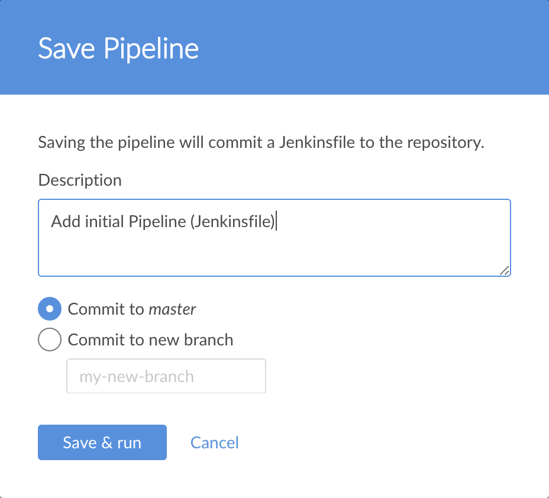
-
Deixando todas as outras opções como estão, clique em Salvar e executar e Jenkins prossegue para criar seu Pipeline.
-
Quando a interface principal do Blue Ocean aparecer, clique na linha para ver Jenkins criar seu projeto de Pipeline.
Nota: Pode ser necessário aguardar alguns minutos para que essa primeira execução seja concluída. Durante esse período, Jenkins faz o seguinte:-
Confirma seu Pipeline como
Jenkinsfileo único ramo (ou sejamaster) do seu repositório. -
Inicialmente enfileira o projeto a ser construído no agente.
-
Faz o download da imagem do Node Docker e a executa em um contêiner no Docker.
-
Executa o
Buildestágio (definido noJenkinsfile) no contêiner do Nó. (Durante esse tempo,npmbaixa muitas dependências necessárias para executar o aplicativo Node.js e React, que serão armazenados nonode_modulesdiretório local dentro do diretório inicial do Jenkins).
A interface do Blue Ocean fica verde se Jenkins construiu seu aplicativo com sucesso.

-
-
Clique no X no canto superior direito para retornar à interface principal do Blue Ocean.

Nota: Antes de continuar, você pode verificar se o Jenkins criou umJenkinsfilepara você na raiz do seu repositório GitHub bifurcado (na únicamasterramificação do repositório ).
Adicione um estágio de teste ao seu Pipeline
-
Na interface principal do Blue Ocean, clique em Ramos no canto superior direito para acessar a página de ramos do seu repositório, onde você pode acessar o
masterramificação.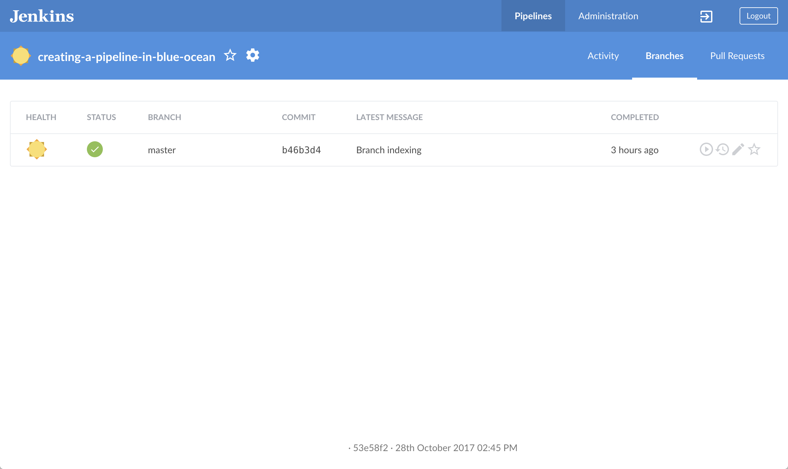
-
Clique no
masterícone "Editar pipeline" da filial para abrir o editor de pipeline para esta ramificação.
para abrir o editor de pipeline para esta ramificação. -
No editor principal do Pipeline, clique no ícone + à direita do estágio Build criado acima para abrir o novo painel do estágio à direita.
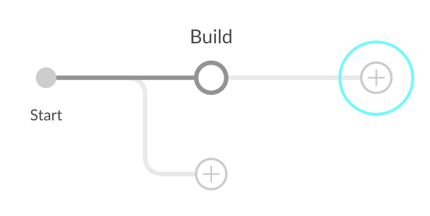
-
Nesse painel, digite
Testo campo Name your stage e clique no Add Step abaixo para abrir o painel Choose step type . -
Nesse painel, clique em Shell Script próximo ao topo da lista.
-
No painel resultante Script de teste / shell , especifique
./jenkins/scripts/test.she clique no ícone de seta para trás, no canto superior esquerdo para retornar ao editor de estágio Pipeline. -
No canto inferior direito do painel, clique em Configurações para revelar esta seção do painel.
-
Clique no ícone + à direita do ambiente cabeçalho (para o qual você configurará uma diretiva de ambiente).
-
Nos campos Nome e Valor que aparecem, especifique
CIetrue, respectivamente.
Nota: Para obter uma explicação desta diretiva e de sua etapa, consulte as anotações 1 e 3 do pipeline declarativo naAdd a test stage…seção do tutorial do aplicativo Build a Node.js and React . -
( Opcional ) Clique no ícone de seta traseira esquerda superior
para retornar ao editor principal do pipeline. -
Clique no botão Salvar botão no canto superior direito para começar a salvar seu Pipeline com o novo estágio "Teste".
-
Na caixa de diálogo Salvar pipeline , especifique a mensagem de confirmação no campo Descrição (por exemplo,
Add 'Test' stage). -
Deixando todas as outras opções como estão, clique em Salvar e executar e o Jenkins continua a compilar o seu Pipeline alterado.
-
Quando a interface principal do Blue Ocean aparecer, clique na linha superior para ver Jenkins criar seu projeto de Pipeline.
Nota: Você notará nesta execução que Jenkins não precisa mais fazer o download da imagem do Node Docker. Em vez disso, Jenkins só precisa executar um novo contêiner a partir da imagem do Nó baixada anteriormente. Portanto, a execução do seu pipeline no período subsequente deve ser muito mais rápida.
Se o seu Pipeline alterado foi executado com êxito, veja como deve ser a interface do Blue Ocean. Observe o estágio "Teste" adicional. Você pode clicar no círculo de estágio "Build" anterior para acessar a saída desse estágio.
-
Clique no X no canto superior direito para retornar à interface principal do Blue Ocean.
Adicione um estágio final de entrega ao seu Pipeline
-
Na interface principal do Blue Ocean, clique em Ramos no canto superior direito para acessar a
masterfilial do seu repositório . -
Clique no
masterícone "Editar pipeline" da filial
para abrir o editor de pipeline para esta ramificação. -
No editor principal do Pipeline, clique no ícone + à direita do estágio de teste que você criou acima para abrir o novo painel do estágio.

-
Neste painel, digite
Delivero campo Name your stage e clique no botão Add Step abaixo para abrir o painel Choose step type . -
Nesse painel, clique em Shell Script próximo ao topo da lista.
-
No resultado painel Deliver / Shell Script , especifique
./jenkins/scripts/deliver.she clique no ícone de seta para trás, no canto superior esquerdo para retornar ao editor de estágio Pipeline.
Nota: Para uma explicação desta etapa, consulte odeliver.shpróprio arquivo localizado nojenkins/scriptsseu repositório bifurcado no GitHub. -
Clique no botão Adicionar etapa novamente.
-
No painel Escolher tipo de etapa , digite
inputno campo Localizar etapas por nome .
-
Clique no tipo de etapa filtrada Aguardar entrada interativa .
-
No painel Entregar / Aguardar pela entrada interativa resultante , especifique
Finished using the web site? (Click "Proceed" to continue)no campo Mensagem e clique no ícone de seta traseira esquerda superior para retornar ao editor de estágio Pipeline.
Nota: Para obter uma explicação desta etapa, consulte a anotação 4 do pipeline declarativo naAdd a final deliver stage…seção do tutorial Build a Node.js and React app . -
Clique no botão Adicionar etapa (última vez).
-
Clique em Shell Script perto do topo da lista.
-
No painel Deliver / Shell Script resultante , especifique
./jenkins/scripts/kill.sh.
Nota: Para uma explicação desta etapa, consulte okill.shpróprio arquivo localizado nojenkins/scriptsseu repositório bifurcado no GitHub. -
( Opcional ) Clique no ícone de seta traseira esquerda superior
para retornar ao editor principal do pipeline. -
Clique no botão Salvar botão no canto superior direito para começar a salvar seu pipeline com o novo estágio "Entrega".
-
Na caixa de diálogo Salvar pipeline , especifique a mensagem de confirmação no campo Descrição (por exemplo
Add 'Deliver' stage). -
Deixando todas as outras opções como estão, clique em Salvar e executar e o Jenkins continua a compilar o seu Pipeline alterado.
-
Quando a interface principal do Blue Ocean aparecer, clique na linha superior para ver Jenkins criar seu projeto de Pipeline.
Se o seu Pipeline alterado foi executado com êxito, veja como deve ser a interface do Blue Ocean. Observe o estágio "Entrega" adicional. Clique nos círculos de estágio "Test" e "Build" anteriores para acessar as saídas desses estágios.
-
Verifique se está visualizando o estágio "Deliver" (clique se necessário) e clique na
./jenkins/scripts/deliver.shetapa verde para expandir seu conteúdo e role para baixo até ver ohttp://localhost:3000link.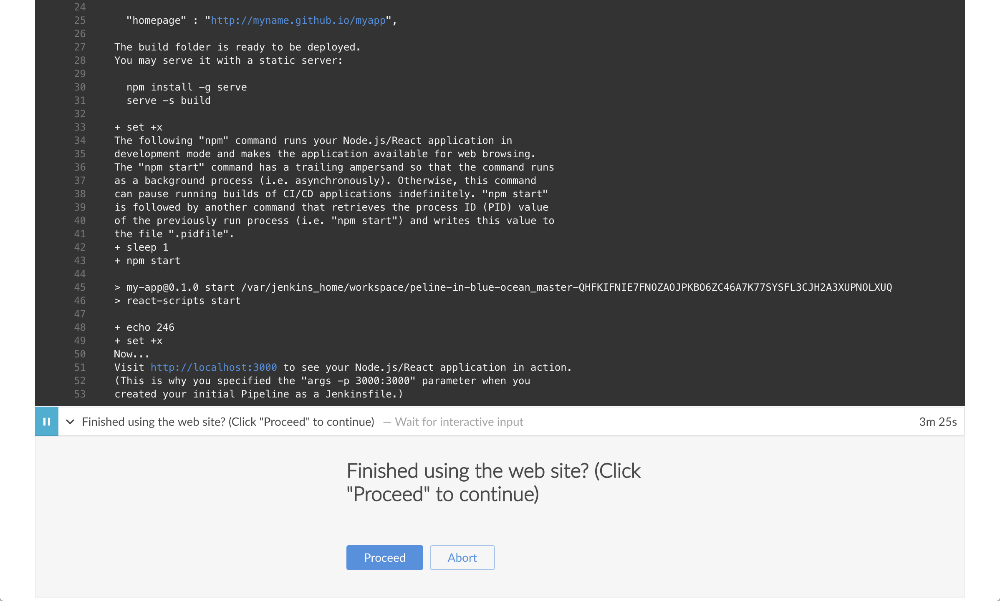
-
Clique no
http://localhost:3000link para visualizar o aplicativo Node.js e React em execução (no modo de desenvolvimento) em uma nova guia do navegador da web. Você deverá ver uma página / site com o título Bem-vindo a reagir . -
Quando terminar de visualizar a página / site, clique no botão Continuar para concluir a execução do Pipeline.

-
Clique no X no canto superior direito para retornar à interface principal do Blue Ocean, que lista as execuções anteriores do Pipeline em ordem cronológica inversa.

Acompanhamento (opcional)
Se você verificar o conteúdo do JenkinsfileBlue Ocean criado na raiz do seu creating-a-pipeline-in-blue-oceanrepositório bifurcado , observe o local da environment
diretiva. A localização desta diretiva no estágio "Teste" significa que a variável de ambiente CI(com seu valor de true) está disponível apenas no escopo desse estágio "Teste".
Você pode definir essa diretiva no Blue Ocean para que sua variável de ambiente esteja disponível globalmente em todo o Pipeline (como é o caso no aplicativo Build a Node.js e React com o tutorial npm ). Para fazer isso:
-
Na interface principal do Blue Ocean, clique em Ramos no canto superior direito para acessar a
masterfilial do seu repositório . -
Clique no
masterícone "Editar pipeline" da filial para abrir o editor de pipeline para esta ramificação. -
No editor principal do Pipeline, clique no estágio Teste que você criou acima para começar a editá-lo.
-
No painel do palco à direita, clique em Configurações para revelar esta seção do painel.
-
Clique no ícone de menos ( - ) à direita da
CIdiretiva de ambiente (criada anteriormente) para excluí-la. -
Clique no ícone de seta para trás no canto superior esquerdo
para retornar ao editor principal do pipeline. -
No painel Configurações do Pipeline , clique no ícone + à direita do cabeçalho Ambiente (para o qual você configurará uma diretiva de ambiente global ).
-
Nos campos Nome e Valor que aparecem, especifique
CIetrue, respectivamente. -
Clique no botão Salvar no canto superior direito para começar a salvar seu Pipeline com a diretiva de ambiente realocado.
-
Na caixa de diálogo Salvar pipeline , especifique a mensagem de confirmação no campo Descrição (por exemplo
Make environment directive global). -
Deixando todas as outras opções como estão, clique em Salvar e executar e o Jenkins continua a compilar o seu Pipeline alterado.
-
Quando a interface principal do Blue Ocean aparecer, clique na linha superior para ver Jenkins criar seu projeto de Pipeline.
Você deve ver o mesmo processo de criação que viu ao concluir a adição do estágio final de entrega ( acima ). No entanto, quando você inspecionarJenkinsfilenovamente, notará que aenvironmentdiretiva agora é uma irmã daagentseção.
Empacotando
Bem feito! Você acabou de usar o recurso Blue Ocean do Jenkins para criar um aplicativo Node.js simples e React com o npm!
Os estágios "Build", "Test" e "Deliver" criados acima são a base para a criação de outros aplicativos no Jenkins com qualquer pilha de tecnologia, incluindo aplicativos mais complexos e aqueles que combinam várias pilhas de tecnologia.
Como o Jenkins é extremamente extensível, ele pode ser modificado e configurado para lidar com praticamente qualquer aspecto da orquestração e automação de compilação.
Referência das etapas do pipeline
Os seguintes plug-ins oferecem etapas compatíveis com o pipeline. Cada link de plug-in oferece mais informações sobre os parâmetros para cada etapa.
Leia mais sobre como integrar etapas ao seu pipeline na seção Etapas da página Sintaxe do pipeline .
- 360 FireLine Plugin
- Teste de segurança estática da API REST 42Crunch
- AbsInt Astrée Plugin para Jenkins
- AbsInt a³ Jenkins Plugin
- Acunetix
- Plug-in de digitalização Acunetix 360
- Plug-in do Adobe Cloud Manager
- Conector Agiletestware Pangolin para TestRail
- Alauda DevOps Pipeline Plugin
-
Alauda Pipeline Plugin
-
AlaudaDeleteBuild: AlaudaDeleteBuild -
alaudaDeployComponent: Componente de Implementação Alauda -
alaudaDeployService: Serviço de implantação Alauda -
alaudaNotify: AlaudaNotifier -
alaudaSendNotification: SendNotification -
alaudaStartBuild: alaudaStartBuild -
AlaudaDeleteBuild: AlaudaDeleteBuild -
alaudaStartBuild: alaudaStartBuild -
alaudaNotify: AlaudaNotifier -
alaudaSendNotification: SendNotification -
alaudaDeployComponent: Componente de Implementação Alauda -
alaudaRetrieveComponent: Recuperar o componente -
alaudaRetrieveIntegration: Recuperar a integração -
alaudaDeployService: Serviço de implantação Alauda -
alaudaRetrieveService: Recuperar o serviço -
alaudaRetrieveComponent: Recuperar o componente -
alaudaRetrieveIntegration: Recuperar a integração -
alaudaRetrieveService: Recuperar o serviço
-
- Aliyun OSS Uploader
- Aliyun-Container-Service-Deploy
- Allure Jenkins Plugin
- Plug-in do Amazon EC2
- Amazon Elastic Container Service (ECS) / plugin Fargate
- Plugin do scanner de imagem de contêiner Anchore
- Android Lint Plugin
- Plug-in de assinatura do Android
- Anka Plugin
- Plugin Ansible
- Plugin Ansible Tower
- AnsiColor
- Ant Plugin
- Central de aplicativos
- Applatix
- Applitools Eyes Plugin
- Apprenda Plugin
- Aqua MicroScanner
- Aqua Security Scanner
- Scanner sem segurança do Aqua Security
- Arachni Scanner Plugin
- Plugin aRESTocats
- promoção de artefatos
-
Plugin Artifactory
-
ArtifactoryGradleBuild: executar gradiente Artifactory -
MavenDescriptorStep: Obter descritor Artifactory Maven -
addInteractivePromotion: Adicionar promoção interativa -
artifactoryDistributeBuild: Distribuir construção -
artifactoryDownload: Fazer download de artefatos -
artifactoryEditProps: Editar propriedades -
artifactoryGoPublish: Executar comando Artifactory Go Publish -
artifactoryGoRun: Executar comando Artifactory Go -
artifactoryMavenBuild: executar artifactory maven -
artifactoryNpmInstall: Execute a instalação Artifactory npm -
artifactoryNpmPublish: Executar publicação Artifactory npm -
artifactoryPromoteBuild: Promover a construção -
artifactoryUpload: Fazer upload de artefatos -
collectEnv: Coletar variáveis de ambiente e propriedades do sistema -
collectIssues: Colete problemas do git e adicione-os a uma construção -
conanAddRemote: Adicione novo repositório à configuração do Conan -
conanAddUser: Adicione um novo usuário à configuração do Conan -
deployArtifacts: Implementar artefatos -
dockerPullStep: Atração artificial da janela de encaixe -
dockerPushStep: Impulso da janela de encaixe artificial -
getArtifactoryServer: Obter servidor Artifactory da configuração do Jenkins -
initConanClient: Criar cliente Conan -
newArtifactoryServer: Retorna o novo servidor Artifactory -
newBuildInfo: Nova buildInfo -
newGoBuild: Novo Go Artifactory -
newGradleBuild: Novo executor artefato gradle -
newMavenBuild: Novo artefato artificial -
newNpmBuild: Novo executor Artifactory npm -
publishBuildInfo: Publicar informações de compilação no Artifactory -
rtAddInteractivePromotion: Adicionar promoção interativa -
rtBuildInfo: Criar informações de construção -
rtCollectIssues: Coletar problemas -
rtDeleteProps: Excluir propriedades -
rtDockerPush: executar push da janela de encaixe Artifactory -
rtDownload: Fazer download de artefatos -
rtGoDeployer: definir implementador -
rtGoPublish: execute o Artifactory Go publish -
rtGoResolver: definir Go resolvedor -
rtGoRun: execute o Artifactory Go publish -
rtGradleDeployer: definir implementador gradle -
rtGradleResolver: definir gradle resolver -
rtGradleRun: executar gradiente Artifactory -
rtMavenDeployer: definir maven deployer -
rtMavenResolver: definir maven resolvedor -
rtMavenRun: executar artifactory maven -
rtNpmDeployer: definir implementador npm -
rtNpmInstall: execute a instalação Artifactory npm -
rtNpmPublish: executar Artifactory npm publish -
rtNpmResolver: definir resolvedor npm -
rtPromote: Promover a construção -
rtPublishBuildInfo: Publicar informações de compilação -
rtServer: Cria um novo servidor Artifactory -
rtSetProps: Definir propriedades -
rtUpload: Fazer upload de artefatos -
runConanCommand: Execute um comando Conan -
xrayScan: executar a verificação do raio X -
xrayScanBuild: Digitalização de compilação do raio X
-
- Arxan MAM Publisher
- AssertThat BDD Jira Plugin
- Atlassian Jira Software Cloud
- AutoAction Plugin
- Plug-in de classificação automática
- Liberador de AWS Beanstalk
- Plug-in do AWS CodeBuild
- Plug-in do AWS CodeDeploy para Jenkins
- Plug-in do AWS Lambda
- AWS Lambda Test Runner
- Wrapper de compilação do repositório de parâmetros da AWS
- AWS SAM
- aws-device-farm
- Plug-in de implantação do AWSEB
- Plug-in do Serviço de Aplicativo do Azure
- Plug-in da CLI do Azure
- Plug-in de tarefas de registro de contêiner do Azure
- Plug-in do Serviço de Contêiner do Azure
- Plug-in do Azure Dev Spaces
- Plug-in de Função do Azure
- Plug-in do Azure IoT Edge
- Plug-in do Azure Key Vault
- Plug-in do Azure Service Fabric
- Plug-in do conjunto de dimensionamento de máquinas virtuais do Azure
- Plug-in de lista de pendências
-
Distintivo
-
addBadge: Adicionar emblema -
addErrorBadge: Adicionar emblema de erro -
addHtmlBadge: Adicionar um emblema html -
addInfoBadge: Adicionar emblema de informações -
addShortText: Adicionar texto breve -
addWarningBadge: Adicionar emblema de aviso -
createSummary: Imprimir mensagem -
removeBadges: Remover emblemas -
removeHtmlBadges: Remover selos HTML -
removeSummaries: Remover resumos
-
- Segurança Beagle
- BearyChat Plugin
- Plugin de Avaliação de Benchmark
- Plugin de referência
- Plug-in de execução na nuvem do Bitbar
- Plugin do Notificador de Status de Construção do Bitbucket
- Integração com o servidor Bitbucket
- Notificador do servidor Bitbucket
- Black Duck Hub Plugin
- BlazeMeter plugin
-
bootstraped-multi-test-results-report
-
step([$class: 'CucumberTestReportPublisher']): Publicar relatórios de pepino gerados com guidão -
step([$class: 'JUnitTestReportPublisher']): Publique relatórios JUnit gerados com guidão -
step([$class: 'RSpecTestReportPublisher']): Publique relatórios RSpec gerados com guidão -
step([$class: 'TestNGTestReportPublisher']): Publique relatórios TestNG gerados com guidão
-
- Brakeman Plugin
- BrowserStack
- Buckminster
- construir plug-in verificador de tamanho de arquivo de log
- Configurador de nome e descrição da compilação
- Etapas de compilação a partir do plug-in Json
- Plug-in de gatilho de compilação
-
Bumblebee HP ALM Plugin
-
step([$class: 'AddTestToSetStep']): Bumblebee: adicionar teste ao conjunto de testes -
step([$class: 'BumblebeePublisher']): Bumblebee HP ALM Uploader -
step([$class: 'GetTestResults']): Bumblebee: Importar resultados do teste do HP ALM -
step([$class: 'RunPcTestBuildStep']): Bumblebee HP PC Test Runner -
step([$class: 'RunTestSetBuildStep']): Bumblebee HP ALM Test Set Runner -
step([$class: 'RunUftTestBuildStep']): Bumblebee Local UFT Test Runner
-
- Plugin de Ações de Construção do ByteGuard
-
Plug-in do CA Service Virtualization
-
svDeployTest: CA Service Virtualization - Implantar teste -
svDeployVirtualService: CA Service Virtualization - Implantar serviço virtual -
svStartVirtualService: CA Service Virtualization - Iniciar serviço virtual -
svStopVirtualService: CA Service Virtualization - Parar serviço virtual -
svPublishTestReport: Publicador de relatórios do CA Service Virtualization -
svUndeployVirtualService: CA Service Virtualization - Cancelar a implantação do serviço virtual
-
- Plug-in CA-APM
- Cachet Gate Plugin
- Cadence vManager Plugin for Jenkins
- Carl plugin
- Plugin CASTEcho
- Plug-in CCM
- Cerberus Testing Plugin
- CFLint Plugin
- alterar-montagem-versão-plugin
- Plugin do Notificador do Chatter
- Checkmarx Plugin
- Plug-in Checkstyle
- Plugin de Pipeline do Chef Cookbook
- Plugin de identidade do chef
- Chef Sinatra Jenkins plugin
- ChuckNorris Plugin
- Notificador Cisco Spark
- Cisco Spark Plugin
- Reivindicar plug-in
- Cloud Foundry Plugin
-
CloudBees Flow
-
cloudBeesFlowCallRestApi: Fluxo do CloudBees - API REST de chamadas -
cloudBeesFlowDeployApplication: CloudBees Flow - Implantar aplicativo -
step([$class: 'ElectricFlowGenericRestApi']): Fluxo do CloudBees - API REST de chamadas -
cloudBeesFlowRunPipeline: CloudBees Flow - Executar pipeline -
cloudBeesFlowCreateAndDeployAppFromJenkinsPackage: CloudBees Flow - Criar / implantar aplicativos a partir do pacote de implantação -
cloudBeesFlowRunProcedure: Fluxo do CloudBees - Procedimento de execução -
cloudBeesFlowTriggerRelease: CloudBees Flow - Liberação de gatilho -
cloudBeesFlowPublishArtifact: Fluxo do CloudBees - Publicar artefato
-
- CloudCoreo DeployTime Plugin
- Plug-in Cloudock Docker-Machine
- Plug-in do CloudShell Sandbox
- Clover plugin
- CMake plugin
- Cobertura Plugin
- Plugin da API de cobertura de código
- Code Dx Plugin
- Codebeamer xUnit Importador Plugin
- CodeBeamer XUnit Uploader
- CodeBuilder: agentes da AWS CodeBuild Cloud
- Codeclimate Plugin
- Plugin de Integração de Codefresh
- CodeScan Plugin
- CodeScene Plugin
- CodeSonar Plugin
- Plugins CollabNet
-
Plug-in de operações ISPW da Compuware
-
gitToIspwIntegration: Integração do Git ao ISPW -
ispwOperation: Execute uma solicitação Compuware ISPW Rest API e retorne um objeto JSON -
ispwRegisterWebhook: Cria e retorna um webhook ISPW que pode ser usado por um sistema externo para notificar um pipeline -
ispwWaitForWebhook: Aguarde a postagem do webhook do ISPW pelo sistema externo
-
- Plugin de medição Strobe da Compuware
- Topázio Compuware para teste total
- Utilitários Compuware Topaz
- Cobertura de código do Compuware Xpediter
- API do zAdviser da Compuware
-
Etapa simultânea
-
acquireSemaphore: Aguarde até que a trava esteja em contagem regressiva até zero. -
awaitBarrier: Aguarda até que todas as partes invoquem aguardem nessa barreira. -
awaitCondition: Faz com que o encadeamento atual aguarde até que seja sinalizado ou interrompido. -
awaitLatch: Aguarde até que a trava esteja em contagem regressiva até zero. -
countDownLatch: Diminui a contagem da trava. -
createBarrier: Crie uma barreira cíclica. -
createCondition: Crie um bloqueio. -
createLatch: Crie uma trava de contagem regressiva. -
createSemaphore: Crie um semáforo. -
releaseSemaphore: Solte o semáforo. -
signalAll: Notificar todos os wa.
-
- Plug-in do provedor de arquivos de configuração
- Confluence Publisher
- Consul KV Builder
- Consul Plugin
- Substituição de Conteúdo
- Integração contínua com o Toad DevOps Toolkit
-
Continuum Plugin
-
ctmInitiatePipeline: Inicie uma definição de pipeline do Continuum com as informações 'principais' correspondentes. -
ctmPostPiData: Publique dados no espaço de trabalho em uma instância de pipeline do Continuum em execução. -
ctmSetPiData: Defina os dados da área de trabalho em uma instância de pipeline do Continuum em execução.
-
- Contraste de segurança contínua para aplicativos
- Copiar plug-in de artefato
- Plugin de cobertura
- Plug-in Cppcheck
- Cpptest plugin
- Plug-in de vinculação de credenciais
- CrossBrowserTesting.com Plugin
- Plug-in de Implementador de Pacotes de Conteúdo CRX
- Plug-in CryptoMove
- Relatório de teste de json de pepino.
- Plugin de documentação viva do pepino
- Relatórios de pepino
- notificador de folga de pepino
-
Plug-in de propriedades de compilação personalizadas
-
getCustomBuildProperty: Obter propriedade de construção personalizada -
setCustomBuildProperty: Definir propriedade de construção customizada -
setJUnitCounts: Definir contagens do resultado do teste de junção como propriedades de construção personalizadas -
waitForCustomBuildProperties: Aguarde até que as propriedades de construção personalizadas especificadas sejam configuradas
-
- Teorema dos dados: plug-in CI / CD
- base de dados
- Debian Pbuilder
- Deep Security Smart Checkin Plugin
- Plug-in de Pipeline de Entrega
- Delphix Plugin
- Implantar o plug-in do painel da Namecheap
- Implantar no contêiner Plugin
- implantação-notificação
- Diawi Upload Plugin
- Dimensões Plugin
- Dingding JSON Pusher Plugin
- DingTalk
- Notificador de discórdia
- Docker Compose Build Step Plugin
-
Docker Pipeline
-
dockerFingerprintFrom: Registre o rastreamento de uma imagem do Docker usada em FROM -
dockerFingerprintRun: Registre o rastreamento de uma imagem do Docker executada em um contêiner -
withDockerContainer: Execute as etapas de compilação dentro de um contêiner do Docker -
withDockerRegistry: Configura o ponto de extremidade do registro do Docker -
withDockerServer: Configura o terminal do servidor Docker
-
- Plug-in do Docker
- Doktor
- Dotcom-Monitor LoadView
- DotCover
- Plug-in DRY
-
Plug-in de monitoramento de aplicativos Dynatrace
-
appMonPublishTestResults: Dynatrace AppMon - Concluir execuções de testes registrados e publicar resultados -
appMonRegisterTestRun: Dynatrace AppMon - Registrar execução de teste -
step([$class: 'TAReportingRecorder']): Dynatrace AppMon - Concluir execuções de testes registrados e publicar resultados -
step([$class: 'TATestRunRegistrationBuildStep']): Dynatrace AppMon - Registrar execução de teste -
appMonBuildEnvironment: Use o Dynatrace AppMon para monitorar testes
-
- Plug-in de gerenciamento de dados de cópia ECX
- ElasTest Plugin
- ElasticBox Jenkins Kubernetes CI / CD Plug-in
- Consulta de Elasticsearch
- Plug-in de extensão de email
- Plug-in de status de compilação incorporável
- Embotics Commander Plugin
- Plug-in de exclusão
- Extenso Plugin de Teste
- Plugin do Gerenciador de Espaço de Trabalho Externo
- Publisher Beta de malha
- Plugin do sistema de compilação do módulo Fedora
- Figlet Buildstep
- Plug-in de operações de arquivo
- Plug-in FindBugs
- Plug-in FitNesse
- Fluentd Plugin
- Flyway Runner
- Plugin de propriedades da pasta
- Plugin da API forense
-
Fortalecer
-
fortifyClean: Execute o Fortify SCA limpo -
fortifyRemoteAnalysis: Faça upload de um projeto para análise remota do Fortify SCA -
fortifyRemoteArguments: Defina opções para análise remota do Fortify SCA -
fortifyRemoteScan: Carregar um projeto traduzido para verificação remota -
fortifyScan: Execute a varredura Fortify SCA -
fortifyTranslate: Execute a tradução Fortify SCA -
fortifyUpdate: Atualize o conteúdo de segurança Fortify -
fortifyUpload: Carregar os resultados da verificação Fortify para SSC -
fortifyRemoteArguments: Defina opções para análise remota do Fortify SCA -
fortifyRemoteScan: Carregar um projeto traduzido para verificação remota -
fortifyRemoteAnalysis: Faça upload de um projeto para análise remota do Fortify SCA -
fortifyClean: Execute o Fortify SCA limpo -
fortifyScan: Execute a varredura Fortify SCA -
fortifyTranslate: Execute a tradução Fortify SCA -
fortifyUpdate: Atualize o conteúdo de segurança Fortify -
fortifyUpload: Carregar os resultados da verificação Fortify para SSC
-
- Fortify CloudScan Plugin
-
Fortificar sob demanda
-
fodPollResults: Pesquisa fortalece sob demanda por resultados -
fodStaticAssessment: Execute o upload do Fortify on Demand -
fodPollResults: Pesquisa fortalece sob demanda por resultados -
fodStaticAssessment: Execute o upload do Fortify on Demand -
step([$class: 'PollingBuildStep']): Pesquisa fortalece sob demanda por resultados -
step([$class: 'StaticAssessmentBuildStep']): Avaliação estática do Fortify on Demand
-
- Teste Frugal
- FTP Renomear Plugin
- Gatling Check Plugin
- Gatling Jenkins Plugin
- Plug-in do SDK do GCloud
- Plug-in do scanner de vulnerabilidade GCR
- Plugin GeneXus
- Plugin de Revisão de Código Gerrit
- Gerrit Trigger
- Giphy API Plugin
- Git Automerger Plugin
- Git Bisect Plugin
- Git Changelog
- Plug-in Git
- Gitee Plugin
- Repórter de cobertura do GitHub
-
Plug-in de integração do GitHub
-
setGitHubPullRequestStatus: Definir status de confirmação do GitHub PullRequest -
githubPRStatusPublisher: GitHub PR: definir status de PR -
githubPRClosePublisher: GitHub PR: fechar PR -
githubPRComment: GitHub PR: postar comentário -
githubPRAddLabels: GitHub PR: adicionar etiquetas -
githubPRRemoveLabels: GitHub PR: remover etiquetas -
gitHubPRStatus: GitHub PR: define o status 'pendente'
-
- Plug-in de Problemas do GitHub
-
Plugin GitHub
-
step([$class: 'GitHubCommitNotifier']): Definir status de compilação no commit do GitHub [descontinuado] -
step([$class: 'GitHubCommitStatusSetter']): Definir status de confirmação do GitHub (universal) -
step([$class: 'GitHubSetCommitStatusBuilder']): Defina o status da compilação como "pendente" no commit do GitHub
-
- Construtor de solicitações pull do GitHub
- Status de cobertura da solicitação de recebimento do GitHub
- Plugin de Wrapper de Status do GitHub
-
Plug-in do GitLab
-
acceptGitLabMR: Aceitar solicitação de mesclagem do GitLab -
addGitLabMRComment: Adicione um comentário à solicitação de mesclagem do GitLab -
gitlabBuilds: Notifique o gitlab sobre construções pendentes -
gitlabCommitStatus: Atualize o status de confirmação no GitLab, dependendo do status da compilação -
updateGitlabCommitStatus: Atualize o status de confirmação no GitLab
-
- Notificação de bate-papo do Google
- Plug-in de criação do Google Cloud
- Plug-in do Google Cloud Storage
- Plug-in do mecanismo do Google Kubernetes
- Plug-in do editor do Google Play para Android
- GPRbuild Plugin
- Gradle Plugin
- Executor de habitat
- Hashicorp Vault Pipeline Plugin
- HashiCorp Vault Plugin
- HCL AppScan
- HeadSpin Plugin
- HipChat Plugin
- HockeyApp Plugin
- Plug-in do HP ALM Quality Center
- Plug-in do HTML Publisher
- Plug-in de Solicitação HTTP
- Etapas do Pipeline do Hubot
- Plug-in Hudson Codescanner
- Hugo Plugin
- Hyper.sh Build Step Plugin
-
IBM Cloud DevOps
-
evaluateGate: IBM Cloud DevOps Gate -
notifyOTC: Enviar notificação para OTC -
publishBuildRecord: Publique o registro de construção no IBM Cloud DevOps -
publishDeployRecord: Publique o registro de implementação no IBM Cloud DevOps -
publishSQResults: Publique os resultados do teste do SonarQube no IBM Cloud DevOps -
publishTestResult: Publique o resultado do teste no IBM Cloud DevOps -
sendDeployableMessage: Envie mensagem de mapeamento implantável para OTC -
step([$class: 'EvaluateGate']): IBM Cloud DevOps Gate -
step([$class: 'PublishBuild']): Publique informações de construção no IBM Cloud DevOps -
step([$class: 'PublishDeploy']): Publique informações de implementação no IBM Cloud DevOps -
step([$class: 'PublishSQ']): Publique o resultado do teste do SonarQube no IBM Cloud DevOps -
step([$class: 'PublishTest']): Publique o resultado do teste no IBM Cloud DevOps
-
- IBM Security AppScan Source Scanner
- IBM Security AppScan Standard Scanner
- IBM z / OS Connector
- Plugin de notificação do ICQ
- agente de proveniência in-toto
- plug-in de upload incorreto
- Plugin Inedo BuildMaster.
- Plugin Inedo ProGet.
- InfluxDB Plugin
- Plug-in de consulta do InfluxDB
- InsightAppSec
- Scanner de imagem para contêiner InsightVM
- Integração Instana
- IRC Plugin
- Notificador IronMQ
- Notificador Jabber (XMPP) e plug-in de controle
- Plugin JaCoCo
- Javadoc Plugin
- Plug-in do JClouds
- JDCloud CodeDeploy Plugin
- Jenkins Core
- JGiven Jenkins Plugin
-
Etapas do pipeline do JIRA
-
jiraAddComment: JIRA Steps: Adicionar comentário -
jiraAddWatcher: Etapas do JIRA: adicionar observador -
jiraAssignIssue: Etapas do JIRA: atribuir problema -
jiraAssignableUserSearch: Etapas do JIRA: pesquisa usuários atribuíveis do JIRA por nome de usuário, nome ou endereço de email para o projeto / questão especificado -
jiraDeleteAttachment: Etapas do JIRA: Excluir anexo -
jiraDeleteIssueLink: Etapas do JIRA: Excluir IssueLink -
jiraDeleteIssueRemoteLink: Etapas do JIRA: Exclua o Link remoto do problema por linkId. -
jiraDeleteIssueRemoteLinks: Etapas do JIRA: exclua os links remotos do problema por globalId. -
jiraDownloadAttachment: Etapas do JIRA: Faça o download de um arquivo para a área de trabalho (o diretório é opcional) -
jiraEditComment: Etapas do JIRA: Editar comentário da questão -
jiraEditComponent: Etapas do JIRA: Editar componente -
jiraEditIssue: Etapas do JIRA: Editar problema -
jiraEditVersion: Etapas do JIRA: Editar Versão -
jiraGetAttachmentInfo: Etapas do JIRA: obtenha informações sobre o anexo -
jiraGetComment: Etapas do JIRA: obter um comentário sobre o problema -
jiraGetComments: Etapas do JIRA: obter comentários sobre o problema -
jiraGetComponent: Etapas do JIRA: obter componente -
jiraGetComponentIssueCount: Etapas do JIRA: obter contagem de problemas de componentes -
jiraGetFields: Etapas do JIRA: obter campos -
jiraGetIssue: Etapas do JIRA: obter problema -
jiraGetIssueLink: Etapas do JIRA: obtenha o IssueLink -
jiraGetIssueLinkTypes: Etapas do JIRA: obtenha tipos de link de problema -
jiraGetIssueRemoteLink: Etapas do JIRA: obtenha o Link remoto do problema por linkId. -
jiraGetIssueRemoteLinks: Etapas do JIRA: obtenha os links remotos do problema por globalId. -
jiraGetIssueTransitions: Etapas do JIRA: obter transições de problemas -
jiraGetIssueWatches: Etapas do JIRA: obtenha relógios de emissão -
jiraGetProject: Etapas do JIRA: Obter projeto -
jiraGetProjectComponents: Etapas do JIRA: obtenha componentes do projeto -
jiraGetProjectStatuses: Etapas do JIRA: obtenha status do projeto -
jiraGetProjectVersions: Etapas do JIRA: obtenha versões do projeto -
jiraGetProjects: Etapas do JIRA: obtenha projetos -
jiraGetServerInfo: Etapas do JIRA: obter informações do servidor -
jiraGetVersion: Etapas do JIRA: obter versão -
jiraJqlSearch: Etapas do JIRA: Pesquisa JQL -
jiraLinkIssues: Etapas do JIRA: Problemas de Link -
jiraNewComponent: Etapas do JIRA: Criar novo componente -
jiraNewIssue: Etapas do JIRA: criar um novo problema -
jiraNewIssueRemoteLink: Etapas do JIRA: Crie um novo link remoto para determinado problema. -
jiraNewIssues: Etapas do JIRA: Crie novos problemas -
jiraNewVersion: Etapas do JIRA: criar nova versão -
jiraNotifyIssue: Etapas do JIRA: notificar problema -
jiraTransitionIssue: Etapas do JIRA: problema de transição -
jiraUploadAttachment: Etapas do JIRA: Anexar um arquivo da área de trabalho a um problema -
jiraUserSearch: JIRA Passos: Pesquise usuários ativos do JIRA por nome de usuário, nome ou endereço de email.
-
-
Jira plugin
-
jiraComment: Jira: adicione um comentário ao (s) problema (s) -
jiraIssueSelector: Jira: seletor de problemas -
jiraSearch: Jira: problemas de pesquisa -
step([$class: 'IssueFieldUpdateStep']): Jira: emitir atualizador de campo personalizado -
step([$class: 'JiraIssueUpdateBuilder']): Jira: Problemas de progresso por ação do fluxo de trabalho -
step([$class: 'JiraIssueUpdater']): Jira: atualize questões relevantes -
step([$class: 'JiraReleaseVersionUpdaterBuilder']): Jira: marque uma versão como Lançada -
step([$class: 'JiraVersionCreatorBuilder']): Jira: Crie nova versão -
wrap([$class: 'JiraCreateReleaseNotes']): Gerar notas de versão
-
- Relatório JMH
- Plug-in de Mensagens JMS
- Job Cacher plugin
- DSL do trabalho
- Plugin JUnit
- Plugin de repórter de teste em tempo real JUnit
- Kafka Logs Plugin
- Karaf Build Step Plugin
-
Plug-in da comunidade Klocwork
-
klocworkBuildSpecGeneration: Klocwork - (etapa 1 - captura) Capturar informações de compilação -
klocworkIncremental: Klocwork - Análise de Diferença Incremental -
klocworkIntegrationStep1: Klocwork - (etapa 2 - análise) Análise de integração completa -
klocworkIntegrationStep2: Klocwork - (etapa 3 - carregamento do banco de dados) Análise de integração completa -
klocworkIssueSync: Klocwork - Sincronização de problemas entre projetos -
klocworkQualityGateway: Klocwork - Quality Gateway -
step([$class: 'KlocworkBuildSpecBuilder']): Klocwork - (etapa 1 - captura) Capturar informações de compilação -
step([$class: 'KlocworkCiBuilder']): Klocwork - Análise de Diferença Incremental -
step([$class: 'KlocworkGatewayPublisher']): Klocwork - Quality Gateway -
step([$class: 'KlocworkServerAnalysisBuilder']): Klocwork - (etapa 2 - análise) Análise de integração completa -
step([$class: 'KlocworkServerLoadBuilder']): Klocwork - (etapa 3 - carregamento do banco de dados) Análise de integração completa -
step([$class: 'KlocworkXSyncBuilder']): Klocwork - Sincronização de problemas entre projetos -
klocworkWrapper: Klocwork - Construir configurações do ambiente
-
- Kryptowire Plugin
-
Kubernetes :: Pipeline :: Etapas Arquilianas
-
createEnvironment: Cria o ambiente de teste. Localiza, instala e aguarda os recursos instalados ficarem prontos -
currentNamespace: Retorna o namespace atual -
inNamespace: Execute etapas de construção dentro de um espaço de nome gerenciado do cubo arquillian -
inSession: Execute etapas de construção dentro de uma sessão do Arquillian Cube Kubernetes
-
- Kubernetes :: Pipeline :: Etapas de DevOps
- Kubernetes :: Pipeline :: Etapas do Kubernetes
-
Kubernetes CLI Plugin
-
withKubeConfig: Configurar a CLI do Kubernetes (kubectl) -
withKubeCredentials: Configurar a CLI do Kubernetes (kubectl) com várias credenciais -
wrap([$class: 'MultiKubectlBuildWrapper']): Configurar a CLI do Kubernetes (kubectl) com várias credenciais -
wrap([$class: 'KubectlBuildWrapper']): Configurar a CLI do Kubernetes (kubectl) (descontinuado, use a multi credencial uma)
-
- Plug-in de implantação contínua do Kubernetes
- Plugin Kubernetes
- Editor de Grupos de Teste Rotulados
- Plugin de etapas do pipeline rotulado
- Plugin Últimas Alterações
- Notificador LIFX - indicador de construção de lâmpadas inteligentes
- Plugin de relatório do farol
-
Liquibase Runner
-
liquibaseDbDoc: Gerar Liquibase DbDoc -
liquibaseRollback: Reverter alterações no liquibase -
liquibaseUpdate: Avaliar conjuntos de alterações liquibase -
step([$class: 'ChangesetEvaluator']): Avaliar conjuntos de alterações liquibase -
step([$class: 'DatabaseDocBuilder']): Gerar Liquibase dbDoc -
step([$class: 'RollbackBuilder']): Reverter alterações no liquibase
-
- Plug-in de suporte LoadComplete
- LoadNinja Plugin
- Plug-in do Loadrunner
- Plugin de Recursos Bloqueáveis
- Plug-in de filtro de arquivo de log
- Plug-in do Analisador de Log
- Logstash
- mabl
- Mailer Plugin
- Implantação de Maratona
- Plug-in de senhas de máscara
- MathWorks Polyspace Plugin
- MATLAB Plugin
- Plugin de notificação mais importante
- Maven Invoker plugin
- Maven Repository Server Plugin
- Maven INSTANTÂNEO Verificação Plugin
- Plugin de Mapa de Memória
- MergeBot PlasticSCM Plugin
- Agregação de métricas
-
Ferramentas de automação de aplicativos Micro Focus
-
loadRunnerTest: Execute testes de cenário de desempenho do LoadRunner -
runLoadRunnerScript: Execute o script LoadRunner -
sseBuildAndPublish: Executar testes usando o resultado dos testes de gerenciamento e publicação do ALM Lab Management -
publishGherkinResults: Repórter de teste do ALM Octane Pepino -
healthAnalyzer: Analisador de Saúde Micro Focus -
step([$class: 'JobConfigRebrander']): Corrigir compilações antigas do Micro Focus Jenkins -
pcBuild: Executar teste de desempenho usando o LoadRunner Enterprise -
collectPullRequestsToAlmOctane: Coletor de solicitação de recebimento do ALM Octane -
runFromAlmBuilder: Execute testes funcionais do Micro Focus a partir do Micro Focus ALM -
step([$class: 'RunFromFileBuilder']): Execute testes do Micro Focus a partir do sistema de arquivos -
step([$class: 'RunLoadRunnerScript']): Execute o script LoadRunner -
step([$class: 'RunResultRecorder']): Publicar resultado dos testes do Micro Focus -
addALMOctaneSonarQubeListener: Ouvinte do ALM Octane SonarQube -
sseBuild: Execute testes do Micro Focus usando o Micro Focus ALM Lab Management -
step([$class: 'SvChangeModeBuilder']): SV: Alterar modo de serviço virtual -
step([$class: 'SvDeployBuilder']): SV: implantar serviço virtual -
step([$class: 'SvExportBuilder']): SV: Exportar serviço virtual -
step([$class: 'SvUndeployBuilder']): SV: Cancelar a implantação do serviço virtual -
uploadResultToALM: Carregar resultado do teste no ALM -
convertTestsToRun: Conversor de estrutura de teste do ALM Octane -
publishCodeCoverage: Editor de cobertura de código do ALM Octane -
svChangeModeStep: SV: Alterar modo de serviço virtual -
svDeployStep: SV: implantar serviço virtual -
svExportStep: SV: Exportar serviço virtual -
svUndeployStep: SV: Cancelar a implantação do serviço virtual -
uftScenarioLoad: Executar cenário UFT
-
- Integração do Micro Focus LoadRunner Enterprise com o Git
- MicroNova EXAM Plugin
- Minio Storage
- Plug-in do Relatório de Conformidade com MISRA
- Plug-in do Mock Load Builder
- Notificador MQ
- Plug-in de Notificação MQTT
- Plugin MSTest
- NeoLoad Plugin
- Plug-in de verificação corporativa da Netsparker
- Plugin de scanner de vulnerabilidade NeuVector
- Uploader de artefato do Nexus
-
Plug-in da plataforma Nexus
-
nexusPolicyEvaluation: Invocar avaliação de política do Nexus -
nexusPublisher: Publicador do Nexus Repository Manager -
associateTag: Tag associada (Nexus Repository Manager 3.x) -
createTag: Criar tag (Nexus Repository Manager 3.x) -
deleteComponents: Excluir componentes (Nexus Repository Manager 3.x) -
moveComponents: Mover componentes (Nexus Repository Manager 3.x) -
step([$class: 'NexusPublisherBuildStep']): Publicador do Nexus Repository Manager
-
- Nirmata Plugin
- Plugin NodeJS
- Hello World não dinâmico: TESTING PLUGIN
- Notify.Events
- NowSecure Auto Plugin
- Plugin NUnit
- Nutanix Calm Plugin
- nvm-wrapper
- Plug-in de teste de carga OctoPerf.
- Office 365 Connector
- OneSky Jenkins plugin
- OpenEdge (Progress ABL)
- Plug-in Jenkins do cliente OpenShift
-
OpenShift Pipeline Jenkins Plugin
-
openshiftBuild: Disparar a criação do OpenShift -
openshiftCreateResource: Criar recurso (s) OpenShift -
openshiftDeleteResourceByJsonYaml: Excluir recurso (s) OpenShift de JSON ou YAML -
openshiftDeleteResourceByKey: Excluir recurso (s) do OpenShift por chave -
openshiftDeleteResourceByLabels: Excluir recurso (s) do OpenShift usando rótulos -
openshiftDeploy: Disparar a implantação do OpenShift -
openshiftExec: OpenShift Exec -
openshiftImageStream: OpenShift ImageStreams -
openshiftScale: Dimensionar a implantação do OpenShift -
openshiftTag: Marcar imagem do OpenShift -
openshiftVerifyBuild: Verifique a compilação do OpenShift -
openshiftVerifyDeployment: Verifique a implantação do OpenShift -
openshiftVerifyService: Verifique o serviço OpenShift -
step([$class: 'OpenShiftBuildCanceller']): Cancelar compilações do OpenShift -
step([$class: 'OpenShiftDeployCanceller']): Cancelar implantação do OpenShift -
step([$class: 'OpenShiftScalerPostAction']): Dimensionar a implantação do OpenShift -
step([$class: 'OpenShiftBuildVerifier']): Verifique a compilação do OpenShift -
step([$class: 'OpenShiftBuilder']): Disparar a criação do OpenShift -
step([$class: 'OpenShiftCreator']): Criar recurso (s) OpenShift -
step([$class: 'OpenShiftDeleterJsonYaml']): Excluir recurso (s) OpenShift de JSON ou YAML -
step([$class: 'OpenShiftDeleterLabels']): Excluir recurso (s) do OpenShift usando rótulos -
step([$class: 'OpenShiftDeleterList']): Excluir recurso (s) do OpenShift por chave -
step([$class: 'OpenShiftDeployer']): Disparar a implantação do OpenShift -
step([$class: 'OpenShiftDeploymentVerifier']): Verifique a implantação do OpenShift -
step([$class: 'OpenShiftExec']): OpenShift Exec -
step([$class: 'OpenShiftImageTagger']): Marcar imagem do OpenShift -
step([$class: 'OpenShiftScaler']): Dimensionar a implantação do OpenShift -
step([$class: 'OpenShiftServiceVerifier']): Verifique o serviço OpenShift -
openshiftVerifyBuild: Verifique a compilação do OpenShift -
openshiftBuild: Disparar a criação do OpenShift -
openshiftCreateResource: Criar recurso (s) OpenShift -
openshiftDeleteResourceByJsonYaml: Excluir recurso (s) OpenShift de JSON ou YAML -
openshiftDeleteResourceByLabels: Excluir recurso (s) do OpenShift usando rótulos -
openshiftDeleteResourceByKey: Excluir recurso (s) do OpenShift por chave -
openshiftDeploy: Disparar a implantação do OpenShift -
openshiftVerifyDeployment: Verifique a implantação do OpenShift -
openshiftExec: OpenShift Exec -
openshiftTag: Marcar imagem do OpenShift -
openshiftScale: Dimensionar a implantação do OpenShift -
openshiftVerifyService: Verifique o serviço OpenShift
-
- OpenStack Cloud Plugin
- OpsGenie Plugin
- OSF Builder Suite :: Sonar autônomo Linter
- OSF Builder Suite :: XML Linter
- OSF Builder Suite para Salesforce Commerce Cloud :: Importação de dados
- OSF Builder Suite para Salesforce Commerce Cloud :: Implantar
- OSF Builder Suite para Salesforce Commerce Cloud :: Executar trabalho
- Plug-in de Consulta OverOps
- Plug-in de verificação de dependência do OWASP
- Plug-in de Rastreamento de Dependências OWASP
- P4 Plugin
- Pacote Drone Deployer
- PagerDuty Plugin
- Plugin de Executor de Teste Paralelo
- Plug-in de trigger remoto parametrizado
- Plugin de desempenho
- Plug-in do Performance Publisher
- Assinatura de desempenho: Dynatrace
-
Assinatura de desempenho: Dynatrace AppMon
-
createDeploymentEvent: criar evento de implantação do Dynatrace -
activateDTConfiguration: ativar a configuração do perfil Dynatrace -
createMemoryDump: criar despejo de memória -
perfSigReports: Publicar relatórios de assinatura de desempenho -
startSession: Iniciar a gravação da sessão do Dynatrace -
stopSession: Pare a gravação da sessão do Dynatrace -
createThreadDump: criar despejo de encadeamento
-
- Assinatura de desempenho: visualizador
- Plug-in Diferencial do Phabricator
- Plugin Walker de Dependência de Pipeline
- Pipeline GitHub Notify Step Plugin
- Etapa de execução do pipeline
- Plugin de Integração de Pipeline Maven
- Plugin de Integração de Pipeline NPM
-
Etapas do utilitário de pipeline
-
compareVersions: Compare duas cadeias de números de versão -
findFiles: Encontre arquivos na área de trabalho -
nodesByLabel: Lista de nós por rótulo, por padrão, exclui nós offline. -
readCSV: Leia o conteúdo de um arquivo CSV na área de trabalho. -
readJSON: Leia JSON de arquivos na área de trabalho. -
readManifest: Leia um manifesto de jar -
readMavenPom: Leia um arquivo de projeto maven. -
readProperties: Leia as propriedades dos arquivos na área de trabalho ou texto. -
readYaml: Leia o yaml de arquivos na área de trabalho ou texto. -
sha1: Calcular o SHA1 de um determinado arquivo -
tee: Tee saída para o arquivo -
touch: Crie um arquivo (se ainda não existir) na área de trabalho e defina o carimbo de data e hora -
unzip: Extrair arquivo Zip -
writeCSV: Grave conteúdo em um arquivo CSV na área de trabalho. -
writeJSON: Grave JSON em um arquivo na área de trabalho. -
writeMavenPom: Escreva um arquivo de projeto maven. -
writeYaml: Escreva um yaml de um objeto. -
zip: Criar arquivo Zip
-
-
Pipeline: etapas da AWS
-
awaitDeploymentCompletion: Aguarde a conclusão da implantação do AWS CodeDeploy -
awsIdentity: Imprima e retorne a identidade da AWS -
cfInvalidate: Invalidar determinados caminhos na distribuição do CloudFront -
cfnCreateChangeSet: Criar conjunto de alterações CloudFormation -
cfnDelete: Excluir pilha do CloudFormation -
cfnDeleteStackSet: Excluir conjunto de pilhas do CloudFormation -
cfnDescribe: Descrever saídas da pilha do CloudFormation -
cfnExecuteChangeSet: Executar conjunto de alterações CloudFormation -
cfnExports: Descrever as exportações globais do CloudFormation -
cfnUpdate: Criar ou atualizar a pilha do CloudFormation -
cfnUpdateStackSet: Criar ou atualizar o conjunto de pilhas do CloudFormation -
cfnValidate: Validar modelo CloudFormation -
deployAPI: Implantar a API API Gateway fornecida -
ec2ShareAmi: Compartilhe uma AMI com outras contas -
ecrDeleteImage: Excluir imagens ecr -
ecrListImages: Listar imagens ECR -
ecrLogin: Crie e retorne a sequência de login do ECR -
ecrSetRepositoryPolicy: Definir política de repositório de ECR -
invokeLambda: Invocar uma determinada função Lambda -
lambdaVersionCleanup: Limpar versões antigas do lambda -
listAWSAccounts: Lista todas as contas da AWS da organização -
s3Copy: Copiar arquivo entre os buckets do S3 -
s3Delete: Excluir arquivo do S3 -
s3DoesObjectExist: Verifique se o objeto existe no S3 -
s3Download: Copiar arquivo do S3 -
s3FindFiles: Encontre arquivos no S3 -
s3PresignURL: Presign arquivo no S3 -
s3Upload: Copiar arquivo para o S3 -
setAccountAlias: Defina o alias da conta da AWS -
snsPublish: Publicar notificação no SNS -
updateIdP: Atualizar provedor de identidade de terceiros -
updateTrustPolicy: Atualizar política de confiança das funções do IAM -
withAWS: definir configurações da AWS para bloco aninhado
-
- Pipeline: Etapa de Bambu
-
Pipeline: etapas básicas
-
catchError: Capture o erro e defina o resultado da construção como falha -
deleteDir: Exclua recursivamente o diretório atual da área de trabalho -
dir: Alterar diretório atual -
echo: Imprimir mensagem -
error: Sinal de erro -
fileExists: Verifique se o arquivo existe na área de trabalho -
isUnix: Verifica se está sendo executado em um nó semelhante ao Unix -
mail: Mail -
pwd: Determinar o diretório atual -
readFile: Ler arquivo da área de trabalho -
retry: Repetir o corpo até N vezes -
sleep: Dormir -
stash: Esconda alguns arquivos para serem usados posteriormente na compilação -
step: Etapa de compilação geral -
timeout: Aplicar prazo -
tool: Use uma ferramenta de uma instalação de ferramenta predefinida -
unstable: Defina o resultado do estágio como instável -
unstash: Restaurar arquivos armazenados anteriormente -
waitUntil: Aguarde condição -
warnError: Capture o erro e configure o resultado da compilação e do estágio para instável -
withEnv: Definir variáveis de ambiente -
wrap: Wrapper de compilação geral -
writeFile: Gravar arquivo no espaço de trabalho -
archive: Artefatos de Arquivamento -
getContext: Obter objeto contextual de APIs internas -
unarchive: Copiar Artefatos Arquivados no Espaço de Trabalho -
withContext: Use objeto contextual de APIs internas em um bloco
-
- Pipeline: Etapa de compilação
- Pipeline: Declarativo
- Pipeline: etapas do Deploymon.io
- Pipeline: Groovy
- Pipeline: Etapas do HuaweiCloud
- Pipeline: etapa de entrada
- Pipeline: Etapa do Marco
- Pipeline: Multibranch
- Pipeline: nós e processos
- Pipeline: Phoenix AutoTest Plugin
- Pipeline: Etapa SCM
- Pipeline: Bibliotecas Groovy compartilhadas
- Pipeline: Etapa do estágio
- Plug-in de mutação PIT
- PlasticSCM Plugin
- Plug-in do Framework
- Plug-in de plotagem
- Plug-in PMD
- Plug-in do scanner de vulnerabilidade Portshift
- Pragprog Plugin
- PreFlight
- Plug-in de integração pré-testada
- Provavelmente plugin de segurança
- Progress MobileStudio Plugin
- Progresso TestStudio para plug-in API
- Progress TestStudio Plugin
- Protecode SC
- Publicar em CIFS
- Publicar no Dropbox
- Publicar por FTP
- Publicar sobre SSH
- Publicar no plug-in Bitbucket
- Puppet Enterprise Pipeline
- PureLoad Plugin
- Pyenv Pipeline Plugin
- Plug-in QF-Test
- Qiniu
-
QMetry for JIRA - Plug-in de Gerenciamento de Testes
-
step([$class: 'QTM4JResultPublisher']): Publique o resultado do teste no QMetry for JIRA Old -
step([$class: 'TestReportDeployPublisher']): Publique resultados no QMetry for Jira versão 3.X abaixo -
step([$class: 'TestReportDeployPublisherCloudV4']): Publique resultados no QMetry for Jira versão 4.X acima
-
- Plug-in de Gerenciamento de Testes QMetry
- QRebel Plugin
- qTest Plugin
- Plug-in de digitalização de nuvens de qualidade
- Qualys API Security Plugin
- Conector de digitalização para contêiner Qualys
- Conector de digitalização de host Qualys
- Conector de digitalização do Qualys Web App
- Questa VRM
- Qy Wechat Plugin de Notificação
- R Plugin
- Plugin Rabbit-MQ Publisher
- RadarGun Reporting Plugin
- Rancher Plugin
- Plugin de Execução de Teste Ranorex
- Raspberry Pi Build Status Plugin
- Reimplantar o plug-in de carga de trabalho do Rancher2.x
- Relatório Redmine Metrics
- Release Plugin
- Conector do Repositório
- Revisão do plug-in da placa
- Plug-in Rich Text Publisher
- Plug-in Robot Framework
- RocketChat Notifier
- Plug-in RubyMetrics para Jenkins
- Executar Plugin Seletor
- Plugin Rundeck
- Plug-in do editor S3
- Plugin SaltStack
- Plugin Sauce OnDemand
- SCM HttpClient
- SCM Skip Plugin
- Scoverage Plugin
- SCTMExecutor
- SD Elements Plugin
- Seapine Surround SCM Plug-in
- Relatório HTML Selenium
- Ferramentas da plataforma Sensi Api
- Service Now Plugin
- Plug-in de solicitação de solicitação simples
- Slack Notification Plugin
- SLOCCount Plug-in
- SnowGlobe Plugin
- Snyk Security Plugin
- SoapUI Pro Plugin de Teste Funcional
- Sonar Gerrit Plugin
- SonarQube Scanner for Jenkins
- Splunk Plugin
- Spring Initalzr plugin
- SQLPlus Script Runner
- Editor do Squash TM (Squash4Jenkins)
- Plug-in SSH Agent
-
Etapas do pipeline SSH
-
sshCommand: SSH Etapas: sshCommand - Executar comando no nó remoto. -
sshGet: SSH Passos: sshGet - obtém um arquivo / diretório do nó remoto. -
sshPut: SSH Passos: sshPut - Coloque um arquivo / diretório no nó remoto. -
sshRemove: SSH Etapas: sshRemove - Remova um arquivo / diretório do nó remoto. -
sshScript: SSH Etapas: sshScript - Executar script (arquivo) no nó remoto.
-
- Scanner de imagem de contêiner StackRox
- Start Windocks Containers
- Plug-in do Coletor de Análise Estática
- StepCounter Plugin
- Plugin de Relatório de Semáforo
- Plug-in do Gerenciador de Liberação Parcial do Subversion
- Plug-in do Subversion
- Resumo do Plug-in de Exibição
- Editora Sumologic
- SWAMP Plugin
- SWEAGLE Plugin
- Synopsys Coverity Plugin
- Synopsys Detect
- Synopsys Polaris Plugin
- Tanaguru Plugin
- TAP Plugin
- Plug-in do Scanner de Tarefas
- Team Concert Git Plugin
- Team Concert Plugin
-
Plug-in do Team Foundation Server
-
step([$class: 'TeamCollectResultsPostBuildAction']): Coletar resultados para o TFS / Team Services -
step([$class: 'TeamCompletedStatusPostBuildAction']): Defina o status de conclusão da construção no TFS / Team Services -
step([$class: 'TeamPendingStatusBuildStep']): Definir status pendente de compilação no TFS / Team Services -
step([$class: 'TeamUpdateWorkItemPostBuildAction']): Adicionar link a itens de trabalho associados no TFS / Team Services
-
- envio de equipes
- Telegram Bot Plugin
- Gerenciamento de teste para Jira
- Plug-in de suporte TestComplete
- Testein
- Plugin TestingBot
- Testinium Plugin
- Plugin de Resultados TestNG
-
Plug-in da plataforma de automação TestProject
-
tpJobRun: Execute o trabalho TestProject -
tpAppUpdateFile: Atualizar aplicativo móvel TestProject -
tpAppUpdateURL: Atualizar aplicativo Web TestProject -
tpDataSourceUpdate: Atualizar fonte de dados TestProject -
tpProjectParamUpdate: Atualizar parâmetro do projeto TestProject -
tpTestPackageUpdate: Atualizar pacote de teste do TestProject -
tpAgentConfig: Gerar configuração do agente TestProject
-
- TestWeaver Plugin
- Localizador de texto
- Themis Plugin
- Plugin ThreadFix
- Acelerador cria plug-in simultâneo
- Thycotic DevOps Secrets Vault Plugin
- Timestamper
- Plug-in de Macro de Token
-
Plugin TraceTronic ECU-TEST
-
publishATX: [TT] Publique relatórios ATX -
generateCache: [TT] gerar caches -
downstreamPublisher: [TT] Geração de relatórios a jusante -
publishETLogs: [TT] Publique logs do ECU-TEST -
exportPackages: Pacotes de exportação [TT] -
exportProjects: [TT] Projetos de exportação -
importPackages: [TT] Importar pacotes -
importProjects: [TT] Importar projetos -
publishUNIT: [TT] Publique relatórios UNIT -
publishGenerators: [TT] Publicar relatórios do gerador -
startET: [TT] Iniciar ECU-TEST -
startTS: [TT] Iniciar servidor de ferramentas -
stopET: [TT] Pare o teste ECU -
stopTS: [TT] Pare o servidor de ferramentas -
publishTMS: [TT] Publicar no sistema de gerenciamento de testes -
publishTRF: [TT] Publique relatórios TRF -
testFolder: [TT] Executar pasta de teste -
testPackage: [TT] Executar pacote -
testProject: [TT] Executar projeto -
publishTraceAnalysis: [TT] Publicar análise de rastreamento -
getATXServer: Obtenha o servidor TEST-GUIDE por nome -
getETInstallation: Obtenha a instalação do ECU-TEST por nome -
isConfigStarted: Verifique o status da configuração do ECU-TEST -
newATXServer: Retornar novo servidor TEST-GUIDE -
newETInstallation: Retornar nova instalação do ECU-TEST
-
- Integração Contínua Tricentis
- Typetalk Plugin
- Plug-in do UiPath
- Updatebot Plugin
- Atualizador Publisher Android / iOS
-
UrbanCode Velocity Plugin
-
step([$class: 'CheckGate']): UCV - Check Gate no UrbanCode Velocity -
step([$class: 'ContinuousReleaseProperties']): Passe propriedades para a versão UrbanCode Velocity -
step([$class: 'UploadBuild']): UCV - Carregar Build para UrbanCode Velocity -
step([$class: 'UploadDeployment']): UCV - Upload de implantação para o UrbanCode Velocity -
step([$class: 'UploadJUnitTestResult']): UCV - Carregar resultados JUnit no UrbanCode Velocity -
step([$class: 'UploadMetricsFile']): UCV - Carregar arquivo de métricas para o UrbanCode Velocity
-
- plugin de construção de usuários vars
- User1st Plugin uTester
- Valgrind Plug-in
- Substituir variáveis
- Cobertura VectorCAST
- Execução VectorCAST
- Veracode Scan
- Número da versão Plug-In
- clonador de exibição
- Comentários de violação ao Plug-in do Bitbucket Server
- Comentários de violação ao plug-in do GitHub
- Comentários de violação ao plug-in GitLab
- Visual Basic 6 Plugin
-
Plug-in do vSphere
-
step([$class: 'DeleteSnapshot']): Excluir um instantâneo -
step([$class: 'Deploy']): Implantar VM do modelo -
step([$class: 'ExposeGuestInfo']): Expor informações do convidado -
step([$class: 'PowerOff']): VM de desligamento -
step([$class: 'Reconfigure']): Reconfigurar VM -
step([$class: 'Rename']): Renomear VM -
step([$class: 'RenameSnapshot']): Renomear instantâneo -
step([$class: 'RevertToSnapshot']): Reverter para instantâneo -
step([$class: 'SuspendVm']): Suspender VM -
step([$class: 'TakeSnapshot']): Tire uma foto rápida -
step([$class: 'VSphereBuildStepContainer']): Etapa de compilação do vSphere -
vSphere: Invoque uma ação do vSphere, expondo o IP da VM sob algumas ações
-
- Plugin VSTest Runner
- Wallarm Fast
- WAPT Pro plugin
- Avisos Plugin de Próxima Geração
- Plug-in de avisos
- Warrior Framework Plugin
- Wavefront Plugin
- Webhook Step Plugin
- Plug-in de Notificação Websocket.in
- Plug-in Jenkins de fonte branca
- Plug-in de armazenamento do Windows Azure
- Plug-in do cliente WinRM
- Plug-in do Worksoft Execution Manager
- Plug-in de limpeza da área de trabalho
-
Worktile Plugin
-
step([$class: 'WTBuildNotifier']): Worktile: criar registro de construção -
step([$class: 'WTDeployNotifier']): Worktile: criar registro de implantação -
worktileBuildRecord: Envie o resultado da construção para o arquivo de trabalho -
worktileDeployRecord: Envie o resultado da implantação para o arquivo de trabalho
-
- Integração com Xcode
- XebiaLabs XL Deploy Plugin
- Plug-in de liberação do XebiaLabs XL
- XFramium Builder
- XLRelease Variáveis Setter
- Xooa
- Xray - Gerenciamento de testes para o plug-in Jira
- Plugin xUnit
- Plugin xvfb
- Plugin Xvnc
- Mais um plugin do Docker
- Zanata Plugin
-
ZAP Pipeline Plugin
-
archiveZap: Criar e arquivar relatório ZAP -
importZapScanPolicy: Importar uma política de varredura ZAP do caminho especificado -
importZapUrls: Carregue uma lista de URLs para o ZAP usar no caminho especificado -
runZapAttack: Execute o ataque ZAP mudando para o modo de ataque e iniciando o ataque -
runZapCrawler: Execute o rastreador ZAP em um host especificado -
startZap: Iniciar processo ZAP
-
- Plug-in Zephyr Enterprise Test Management
-
Zoho Sprints
-
addSprintsItem: [Sprints] Criar problema -
sprintsAddItemComment: [Zoho Sprints] Adicionar comentários ao item -
sprintsUpdateItemPriority: [Zoho Sprints] Prioridade do item de atualização -
sprintsUpdateItemStatus: [Zoho Sprints] Atualizar status do item -
wrap([$class: 'BuildEnvironmentForCreateIssueOnFailure']): [Zoho Sprints] Criar item com falha
-
- Zoom Plugin
- Zulip Plugin